00 开篇词 打破四大认知局限，进阶高级性能工程师
你好，我是高楼。
从业十几年以来，我一直在做性能测试、性能分析、性能优化的工作。早年间我在各大测试论坛分享自己的工作经验，并形成了关于性能测试完整的知识链。后来，我开始自己带团队做项目，完整做过40多个项目，团队也从开始的四五个人发展到了现在的300 余人。与我合作过的人都了解，我做性能项目的宗旨就是上线不死，死了不收钱。
2019年，我在极客时间上线了第一个课程《性能测试实战30讲》。在这个课程中，我描述了自己认为在测试过程中重要的部分，比如整体概念梳理、性能分析思路等。我希望通过这个课程，可以抛出一个价值观——让性能变得有价值，以此刷新很多人对性能测试的认知，知道这个方向其实可以干很多事情。这也是我长期以来一直在做的事情。
性能工程师的四大认知局限
你可能会奇怪，为什么我还要写第二个课程呢？
因为我想通过一个实战项目，为你展现性能项目工程级的落地思路以及真正的实施过程。从一个性能工程师的角度来看，即使你掌握了第一个课程的内容后，也还是会在项目的各个环节中遇到其他挑战。比如下面这张图中展示的：
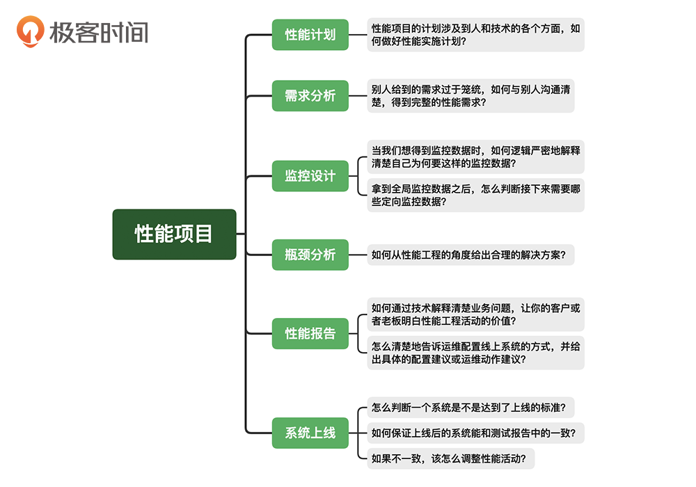
作为一个优秀的性能工程师，上面这张图中提到的性能计划、需求分析、瓶颈分析等问题的重要性不言而喻，但是它们却没有得到真正的重视，市面上也鲜少有对应的解决方案。
因此，我希望通过一个实战项目，从性能需求到最终的性能报告，带你走过整个完整的操作过程，让你透彻理解这些痛点问题，并一一攻克它们。
纵观现在的性能市场，我时常感觉悲哀，大家往往对性能有四大错误认知。
1. 过于关注性能中的某些工具
在很多咨询或是培训的现场，我经常能看到有着好多年经验，却只会JMeter、LoadRunner等几个性能工具的性能工程师。在监控领域也是一样，不乏觉得会一些操作系统或是语言的监控分析工具就可以上天了的工程师。
2. 只浮在表面
我看过很多性能项目、培训和演讲，一些人自恃有些背景经验，经常会在一些场合吹嘘。但是，当你问他如何落地以及具体的落地过程时，这些人就只会利用培训中的技巧来搪塞。
3. 只局限于性能团队，走不出去
性能对我来说一直是一个工程级的工作。可是很多做性能的工程师，经常连自己的团队都走不出去。比如说当系统有了性能瓶颈，我们能不能走出自己的团队，有理有据地指着开发、运维的鼻子骂几句？（当然，我并不推荐这种不礼貌的举动，它只是一种夸张的表达手法。）
我给我带过的团队经常说的一句话就是，有了瓶颈出去跟开发打仗，一定要赢着回来！要不然就不要出去！
因为经常有一种情况是，当缺少可以证明瓶颈根本原因的证据时，性能工程师就会像皮球一样被踢来踢去，比如“这个可能是啥啥问题，你去问下谁谁谁”、“这个可能是啥原因，你再试一下”等等。面对这样的场景，你觉得做性能还有什么意义吗？
4. 无法体现到业务场面
其实，老板们想要的，就是一个类似这样问题的明确答案：当1000万人在线的时候，这个系统会不会死？而你作为一个性能工程师或者性能团队的负责人，你敢拍着胸脯说“死了我负责，到时候我卷铺盖就走人”这样的话吗？
如果你敢这样说，那你得到的工资肯定是不一样的，就像买保险一样。可是在性能市场中，有谁敢给这样的业务保证呢？
基于这样的市场现状，我希望通过这个课程将性能分析的真正价值体现出来，改变你原有的一些错误认知，帮助你成为一名优秀的性能工程师。这就需要我们把性能从“测试”引到“工程”的级别，因为只有这样，才是一个性能项目的真正价值可以体现的方式。
我会怎么给你讲这个课程？
为了能让你更好地理解我要讲的内容，我专门搭建了一个完整的系统，我们课程所有的内容都将基于这个系统展开。
在这个项目中，我使用了Kubernetes+Docker+nginx_ingress/Java 1.8/Spring Cloud微服务(内置Tomcat)/Grafana+Prometheus+Exporters+SkyWalking/Redis/MySQL/RabbitMQ等技术组件搭建起了整个服务。这样的服务规模需要不少的时间做环境搭建，从硬件上架、安装操作系统开始，我整体用了近一个月的时间，使用了62C140G的硬件资源。
在搭建的过程中，一开始我考虑使用OpenStack做基础设施，希望能覆盖当前技术栈中的全部主流技术。但最后我还是放弃了，因为这样的资源量级用OpenStack是浪费资源的。此外，我在搭建过程中也遇到了很多杂七杂八的问题，比如多网卡队列、硬件超分等带来的整体架构问题，好在最后都一一得到解决。
我在这个系统中遇到的性能问题，以及我的分析过程都将在这个课程中呈现出来。我会从一个完整的性能项目的角度，给你详细解析整个性能项目是怎么做的。我还会从完整的性能分析决策树和性能瓶颈证据链的角度，带你分析如何定位一个瓶颈。而这个项目的分析数据、性能结果也都将真实地呈现给你，让你看到我所讲的分析方法和路径都是能够一一落地的。
学习这个课程，我建议你最好能动手实践，对课程中所讲的分析思路和方法有一个深入的体会和理解。如果你想自己搭建这样一套环境，硬件资源可以不要那么多，技术组件也可以分批搭建，毕竟不是所有的场景都需要整体的环境。对于一些比较复杂、容易出现问题的环节，我也会为你提供相应的指导性文档，帮助你顺利完成搭建。
如果我做的项目与课程中的项目不同，怎么办？
你可能会有疑问，这门课讲的性能项目和你所做的项目不同怎么办？这一点你无需担心，因为我会为你描述一个通用型的性能项目，而且我们重在逻辑上的理解。所以这门课我会从以下三个关键点入手，这也是你接下来学习的主要方向。
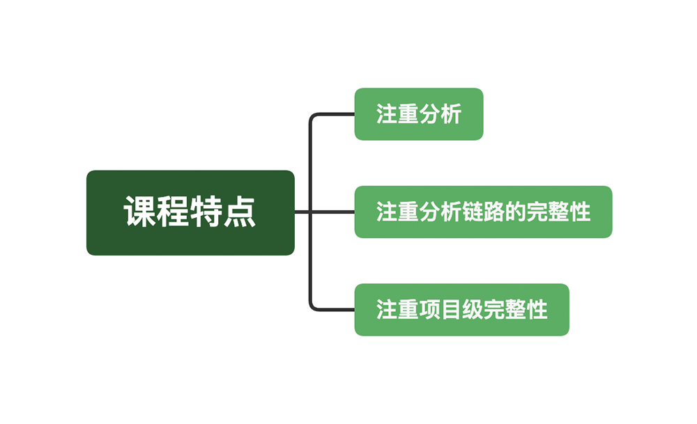
首先，我们会更重分析。
对于性能来说，不会做脚本的团队还是非常少的。在这个课程中我将重分析，而不是重脚本。如果你是初学者，那我希望你能自学脚本等工具的基础操作。
那怎么理解“重分析”呢？简单来说就是从脚本开始，一直到具体的性能瓶颈，这样一个完整的分析过程。这也是我一直强调的性能技术的重心。
其次，我们会更注重分析链路的完整性。
在这门课程中，我不会详细去写一个个的技术点，比如Linux操作系统中输入top命令后的CPU信息us是什么意思，像这种度娘上都有的东西，就不用你再花钱学课程了。我在这门课里要讲的是，当us（用户态使用的CPU时间比）高了之后，应该怎么办？
可能有人会说这个问题很简单，us高了之后就是查进程——查线程——查栈——查代码，老套路了。能这样讲的人，证明是有经验的性能工程师，但不一定是非常有经验的性能工程师。因为从步骤上来看，套路确实是这样。不过，当遇到一个具体的问题点时，清楚套路的人并不见得知道该做什么动作。
我们就拿打印堆栈来说，针对不同的问题和现象，我们应该打印多少次堆栈呢？比如当cswch/s高的时候，该怎么打印堆栈？当nvcswch/s高的时候，又该怎么打印堆栈？像类似的问题，我都会在这门课中把思路给你讲清楚。
最后，我们注重项目级完整性。
一个项目中应该具有的关键性能动作，也都将在这个课程中得到体现。比如说：
- 脚本中哪些关键点会影响到最终的结果，具体是如何影响的？
- 业务模型到底能不能完全符合生产环境统计出来的数据？
- 性能报告到底应该如何下结论？
- 性能团队应该给运维什么样的具体建议？
- 上线之后，怎么评估性能项目做得好不好？
- ……
总之，我希望你能看到一个性能项目真实的落地过程，知道在一个性能项目的各个阶段应该做什么事情以及要做到什么样子，从一个更为宏观、全局的视角，真正吃透性能。这也是一名优秀的性能工程师必须要具备的能力。
最后，我想说，如果成为一名优秀的性能工程师是你的心之所向，如果你不甘于平庸，希望在性能这条路上走得更远，那就与我一起踏上这段旅程，我会把我从业十几年来的经验毫无保留地分享给你。
如果可以的话，你不妨在留言区聊聊你在性能测试方面的学习痛点，方便我在后续的课程里更有针对性地给你讲解。同时，也欢迎你把这一讲分享给身边志同道合的朋友，彼此加油打气，相互学习，更容易抵达终点。
关于课程读者群
点击课程详情页的链接，扫描二维码，就可以加入我们这个课程的读者群哦，希望这里的交流与思维碰撞能帮助你取得更大的进步，期待你的到来～
01 性能工程：为什么很多性能测试人员无法对性能结果负责？
你好，我是高楼。
今天是我们这节课的第一讲，我要带给你一个全面的性能概念——RESAR性能工程，它跟性能测试的逻辑不太一样，具体哪儿不一样？下面我就具体给你讲讲。另外，在这个过程中，我也会让你全面、系统地感知到性能工程都要做些什么工作。相信这节课不仅会改变你对性能的认知，也能对你的性能项目全过程有一个指引。
要为性能负责，就不能局限在“测试”上
在《性能测试实战30讲》专栏中，我给出了性能测试的概念：
性能测试是针对系统的性能指标，建立性能测试模型，制定性能测试方案，制定监控策略，在场景条件之下执行性能场景，分析判断性能瓶颈并调优，最终得出性能结果来评估系统的性能指标是否满足既定值。
到现在，我仍然认为这是对“性能测试”最合理的描述。实际上，这一概念在出来之后引起了一些争论，主要在于：性能测试的团队需要去做瓶颈定位和优化吗？
我们先抛开概念本身，考虑这样一个问题：如果性能测试团队不做瓶颈定位和优化，那是否可以给出“上线后生产系统不会产生性能问题”这样的答案呢？
如果不能，那要这个性能测试团队有什么用？仅仅是找找初级的技术问题吗？这就像一个病人去医院看病，手术做了，药也吃了，一顿折腾后问医生：“我什么时候可以好呢？”要是医生说：“我也不知道！”你想想病人心里会是什么感受，有没有一种遇到庸医的感觉？
其实对应到性能测试中也是如此，我们的性能项目是有宏观目标的：
- 找到系统中的性能瓶颈并优化掉；
- 满足业务容量的要求，保障线上系统可以正常运行。
我建议你仔细看一下第二个目标，然后再想想我们刚才那个问题：性能测试的团队需要做瓶颈定位和优化吗？现在你是不是已经有答案了？当然是必须做呀！可是在当前的性能市场中，我看到很多性能团队连第一个目标都做不到，更别提第二个目标了。
带着这个问题的答案，我们再回到前面给出的“性能测试”概念。不知道你有没有意识到，对于“性能测试”来说，上面那个定义可能足够完整。但对于“性能”而言，是不是我们做完定义中的事情就完了呢？并没有。
因为从一个完整的性能工程来看，一个系统上线并经过正常的业务场景之后，我们还需要做一件事情：把线上的性能数据拿回来，和性能测试过程中的数据做环比，看之前做的是否满足真实的业务场景。而环比的内容就是我们的性能模型、性能指标等。
经过对比之后，如果没有误差，就说明这个性能测试项目做得非常好；如果有误差，那就需要我们修正误差，以便下一次做得更加贴合真实的系统。所以你看，从一个完整的性能活动的角度来讲，刚刚我们回顾的“性能测试”概念缺少了一个环节，就是性能环比。
可是，性能环比又实在不能称为是“测试”的工作内容（请注意，我说的是：性能环比不是“测试”的工作内容，并没有说它不是性能团队的工作内容）。
也正因为如此，一直以来，不管我们怎么对“测试”这个概念做扩充，不管是将它“左移”还是“右移”（我也没搞懂啥左移右移的，不就是干活吗？说那么文艺干吗？），不管是做“灰度”还是“白盒”，只要一说是测试，它仍然会被限定在一个项目的某个时间段里。就像无论是敏捷、精益，还是瀑布，只要在一个具体的项目中，大家还是会普遍认为先有业务需求，再有产品设计，然后才有接下来的架构设计、研发、测试、运维。
也许有人会说，我可以不要测试，直接上线。是的，你可以这样做，只要能承担上线的风险就好了。可是，如果“测”和“不测”，上线都会有相同的问题，那这样的测试团队确实可以不要，“拉出去祭旗”即可。如果在你的经验中，“测”和“不测”出问题的比例是1:10，那估计测试就不会被放弃。这是一个非常合理的逻辑。
我们要做好性能，真正实现性能的那两个宏观目标，就不能只局限在“测试”上，不能将它当成是一个项目中的某一环，我们需要用“工程”的视角来看待“性能”这件事儿。
为性能结果负责需要三方面支持
讲到这，我们还需要考虑一个问题：如果真的把测试只局限在项目的某个时间段内，那测试人员需不需要对整个线上负责呢？我想你心里应该有答案了，那就是不需要，因为测试人员被局限在一个环节里了。
不过，我相信有很多测试人员还是背了不少性能问题的锅。
如果出了问题后你仅仅是被领导骂几句，工作也没丢，那倒没什么关系。可如果你是做第三方测试的，你为线上负过责吗？你敢负责吗？在我的职业生涯中，有无数次听说某个系统上线后出了性能问题，导致千万级、亿级的经济损失。说真的，作为性能团队的人，我们还真负不起这个责。
作为性能测试人员，如果要对性能结果负起责任，我们至少需要以下三方面的支持。注意，“测试”自然是不能局限在项目的某个时间段内的，否则这没法弄。
- 技术细节
首先，我们的技术细节需要做到和线上一致，比如说软硬件环境、网络架构、基础数据、测试场景、监控部署等等，这些我会在整个专栏中进行讲解。说到这，给你一个小提醒：在一个性能团队中，你自己的基础技能一定要能足够支撑起项目，这是一个前提。
关于技术细节要和线上一致的问题，有人可能会提到“线上全链路”。我想说的是，请不要看到一个概念就不理智地各种套用。在很多系统中，我们不可能在线上做这样的改造，原因很简单：如果你的全链路测试导致线上出了高级别事故，那把你一个团队废了都不解气。
- 工作范围
要对整个系统性能负起责任，我们性能测试人员的工作范围就需要扩大，并且要向前扩大到性能需求。
有人说性能需求不就是性能测试人员定的吗？这种无赖的锅，我们可背不起。因为一个性能需求，是由业务、架构、研发、测试、运维以及不懂技术的领导一起来定的。如果仅让测试人员来定性能需求，在我遇到过的项目中，有99.99%的机率会变成这个样子：这个性能项目仅仅是找找基本的技术瓶颈，有些性能团队甚至连技术瓶颈都找不到。
性能测试的工作范畴除了要向前扩大到性能需求外，还要再向后扩大到运维过程。我并不是在说性能团队的人要参与运维，而是我们要把运维过程中的数据拿回来做环比，然后迭代我们的性能实施过程。
- 工作权限
当然，工作范畴扩大了，也要做到权责对等。
我遇到过很多公司，他们的性能团队都是处在职低言轻的位置上：对外，干不过架构、研发、运维；对内，技术没有自信；对上，领导说啥就是啥；对下，哦，下面没人，所以不用对下。
你想想，在这样的局面里，有时连个系统、数据库的操作权限都没有，还能对性能做什么优化？对于一个你连优化都没有权限的系统，如果它的性能出了问题，肯定也不是你该背的锅。
那什么是我们要的工作权限呢？有两种：技术权限和指挥权限。
技术权限很容易理解，无非就是主机登录root、数据库DBA等权限。而指挥权限就是，我们在需要什么人做什么事情的时候，一定要能叫得动。比如你让运维查个生产数据，要是运维只给你一个白眼，这活就没法干了。所以，我们需要什么数据，会产生什么样的结果，一定要环环相扣，缺少了一个环节，那就走不下去。
当然了，我们说要有指挥权限，并不是让你瞎指挥别人做不相干的事情，比如“来，研发给我捏个肩膀”“来，运维去给我买个咖啡”……这分明就是找揍。
我们讲了这么多，那到底性能测试应该如何干呢？这就要引出“性能工程”这个概念了。
什么是性能工程？
从“测试”到“工程”，看似是一个简单的描述变化，其实是完全不同的做事逻辑。
我先在这里下一个定义——RESAR性能工程。
我们平时说的性能工程，是将IT中的各种技术应用到具体的性能项目中的过程。而我提到的RESAR性能工程，是对性能项目过程中的各个具体的动作做更详细的描述，使之可以成为可以落地的具体实践。
“RESAR性能工程”这个名字是我自己定义的，你不用去网上搜索，现在还搜不到。下面我会为你描述RESAR性能工程的过程。注意啊，我们不讨论用什么样的研发模型（比如敏捷、DevOps等），因为这些都是过程的组织方式，我们暂时把它们抛到脑后，先来看看性能工程到底要干哪些事情。
- 业务需求
从整个项目的生存周期角度来看，有了业务需求之后，我们就要开始分析可能出现性能问题的业务关键点，像业务路径、业务热点数据、秒杀业务、实时峰值业务、日结批量等。然后再创建出业务模型。
对于新系统来说，我们就算是拍脑袋也要给出业务模型；如果是已有系统的业务模型，那我们就可以通过统计生产业务量的方式来得到。
- 立项
有了业务需求之后，技术项目就开始立项了。这时候需要具备性能架构思维的人介入到立项环节中，在技术选型、架构设计层面给予专业的意见，来规避以后可能出现的性能问题。
具体来讲，这位拥有性能架构思维的人需要做高可用、可伸缩可扩展、负载均衡SLB、TCP层优化、DNS优化、CDN优化等与性能相关并且是架构该干的事情。再细化一下，那就是各组件的线程池配置、连接池配置、超时配置、队列配置、压缩配置等细节。
有了这些内容之后，就开始做容量评估、容量模型建立、容量水位模拟等模型建立。
- 研发
接着我们就到了研发环节。在这一环节中，当一个功能实现后，性能团队要做的是：列出每一个方法在没有任何压力的情况下，它们的执行时间以及对象消耗的内存，以便后续做容量场景时做相应的计算。
这是一个琐碎的工作，不过我们可以用一些工具进行整体分析，不用一个个看方法和对象。通常，这个步骤在学术界有一个更为笼统的名字，你应该听过，叫白盒测试。
其实，行业中大部分人做白盒测试也只是看看功能是不是正常，关注性能的人少之又少。而且，这个工作经常由研发工程师来做。这里我们不讨论自己测自己有什么问题，毕竟我们不能否定所有研发工程师的责任心。
如果我们只从普遍的项目周期来看的话，在资本家极尽压缩的手段之下，研发工程师在业务功能研发出来后，基本已经精疲力尽了，还能有时间干这些活吗？这时候，性能团队的存在就有了价值，就是把代码拿过来做性能分析。
所以，不要再说性能团队的人不懂开发是合理的，从性能工程的角度看，我们测试人员需要具备一定的技能。
- 测试
有了完整的业务功能后，我们就到了测试环节，这时候性能测试工程师终于可以“正式”上场了。
在这一环节中，我们需要按照基准场景（单接口、单系统容量场景）、容量场景（峰值、日结、秒杀、日常等场景）、稳定性场景和异常场景的执行顺序，把前面所有和性能相关的工作都验证一遍。
关于异常场景是否要放在性能中的问题，其实一直都有着争论，不过我要说明一点，就是在我的概念中，只要是需要压力的场景，都可以放到性能中来做。
- 运维
在系统上线运维之后，我们还需要把运维过程中产生的业务数据和性能监控数据，与前面做的性能场景结果数据做环比。如果比出了问题，那就修正性能过程，然后再从修正点接着往下做。
在《性能测试实战30讲》专栏里，我用这张图总结了性能测试的概念：
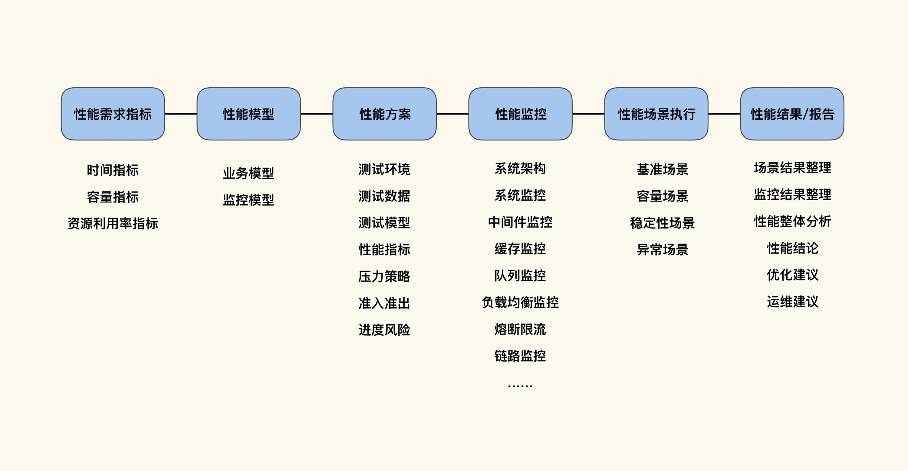
基于刚才讲的内容，我把它做一个变化：增加“业务分析和架构分析”、“环境准备”以及“生产运维”这三部分。

现在这张图就完整描述了RESAR性能工程的过程。
明白了性能工程要做哪些事情后，我们再来整体看一下“RESAR性能工程”。实施RESAR性能工程的要点是：
- 通过分析业务逻辑和技术架构，创建性能模型，制定性能方案，准备应用环境，设计并实施性能部署监控；
- 实现符合真实业务逻辑的压力；
- 构建性能分析决策树，通过监控手段获取各组件的性能计数器；
- 分析计数器的数据查找出性能瓶颈的根本原因并优化；
- 通过环比生产环境的性能数据修正场景。
关于性能工程，你现在可能有很多疑问，下面我会着重给你讲一讲比较关键的几点。
一定的沟通成本是必要的
首先，还是来看我们这张性能工程的过程图。
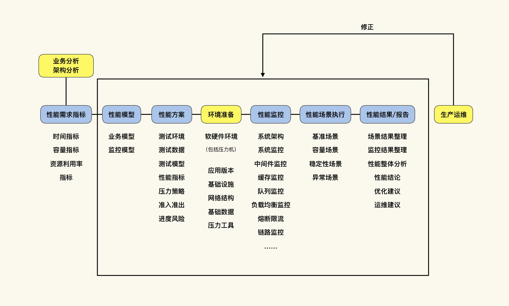
在图中，你可能觉得业务和架构分析、性能需求指标、性能模型和生产运维这几个环节看起来比较单薄。实际上，它们的工作内容并不少，并且有可能花费你很高的沟通和操作成本，消耗较长的项目时间。不过，这三个环节是可以与其他工作并行的。所以，项目整体的周期并不会有所增加。
有人看到这里或许会问：“这样的性能工作岂不是要消耗很大的精力？费时又费钱，要是看不到产出，那还值得吗？”如果你也有此困惑，不妨看看我们前面讨论的内容：
如果性能测试团队不做瓶颈定位和优化，那是否可以给出“上线后生产系统不会产生性能问题”这样的答案呢？
如果不能，那要这个性能测试团队有什么用？仅仅是找找初级的技术问题吗？这就像一个病人去医院看病，手术做了，药也吃了，一顿折腾后问医生：“我什么时候可以好呢？”要是医生说：“我也不知道！”你想想病人心里会是什么感受，有没有一种遇到庸医的感觉？
其实说到沟通和操作成本，可能是因为我遇到的工作环境大多比较“恶劣”，我经历过太多的江湖场面，所以非常清楚沟通的时间成本要远大于技术消耗的时间成本。不过，对于一个企业来说，这些工作一旦有了第一次流畅的执行后，往后几乎不会再消耗什么时间。而你如果把每天刷小视频和购物的时间拿来干这些活，也就足够了。
前段时间我给一个企业做咨询，从生产运维上拿数据回来做分析比对，只用了大概不到两个小时就把生产上的业务模型给弄出来了。不过，第一次做抽样的时间成本确实会高一些，因为我们可能需要搭建一些平台工具来支撑自己的想法。有了工具平台之后，后面的运维部分就比较简单了，不用太耗费精力。因为数据本来就在那里，性能团队只需要看一下那些数据。
不过在我遇到的客户场景中，经常可以看到性能团队的人想要个运维的监控数据都非常难。再加上如果你的技术又不怎么样，话说不出三句就让人怼得哑口无言，那别人就更会怀疑你要生产数据的潜在用心了。
所以，如果我刚接一个项目就看到这样的场景，那我肯定不会去问运维要数据来自己分析。我只会问他们要结果数据，并且我还会给他们定一个框，让他们就给框里的数据即可。
万一他们给不出来怎么办？没关系，你还记得小学生的绝招吗？告诉老师呀！经过沟通，领导知道了这些数据的用途，事情就好办了。如果运维觉得生产上的log都是关键的核心数据，那也没关系，让他们指定一个运维的人来天天陪着我就好了。在不断提供性能数据又反复加班的过程中，他陪着你干一段时间之后，就会主动把权限给你，哈哈。
其实话说回来，在性能工作中不管涉及到了什么职位或是什么背景的人，你都要记住一点，作为性能团队的人，在你和别的团队沟通时，一定要把问题提得精确具体，把为什么要这样做，这样做的成本、好处，以及不这样做的坏处，都说明白就可以了。
这样做有什么必要吗？
我给你举个例子，你想想我们为什么要用真实环境中的业务比例来做测试模型？答案非常简单，因为你不这样做的话，测试出来的结果肯定不能回答生产容量的问题。如果一个业务的比例在生产上是10%，而你在性能场景中定为20%，那就可能产生完全不一样的结果。
在性能项目中，有很多因为沟通不畅而导致的执行偏差，所以我们一定要搞清楚各方想表达的具体在执行层面如何操作，这个沟通过程非常非常重要。
性能工程由谁来推动？
我希望你能明白，我在这里做的所有努力都是为了让性能有一个完整的环路。说到这里，其实还有一个绝大的Bug，那就是性能工程由谁来推动。
关于项目工程级的东西，一定不是一个职低言轻的人能干得动的，即使授权也照样不行，因为这需要很强的项目管理能力。而上层领导又不懂技术，甚至不能理解为什么弄个性能要这么大动干戈（要是遇到这种情况，你可以这样解释：如果不关心线上会不会“死”的话，那就不用大动干戈）。
所以，性能工程一定要由一个职高言重的人来推动。至于具体的工作内容，由性能实施的人来承接就可以了。
“性能工程”不同于那些看似先进的概念
讲到这，你可能觉得有些概念与我所说的性能工程极为相似，比如全链路。我相信肯定有人会问，这时候是不是可以把全链路提到台面上来了？不是我贬低全链路的市场价值，在我们这个“说邮轮做筏子”的文化氛围里，很多企业都盯着大厂做事情，大厂做什么自己也跟着做什么，根本不仔细考虑这些事所产生的成本和代价。
其实大部分企业都消耗不起全链路的组织成本。如果仅仅做些技术改造，把链路改成旁路就叫做全链路，那实在是有些浅薄了。因为技术改造并不是关键的问题，关键在于你改造完了之后得跑起来。
做线上全链路的目的，是为了通过使用生产环境中的架构、软硬件环境、数据、网络结构等等，来达到模拟真实业务压力场景的目标。如果你做完了一连串的技术改造后，结果只运行了30%的业务压力，那就得不偿失了。如果你运行了100%甚至更高的业务压力，并且业务模型也符合生产的样子，那么恭喜你，这事做得非常有价值。
但是，很多系统不像互联网系统那样只有一个业务主流程。如果业务逻辑复杂度高，那出错的成本根本就不是一个企业能够承受的。我们不用脑袋考虑也能知道，这样不可能在线上做各种测试。所以，线上全链路这个思路，只对一些特定的业务场景有价值。而现在那些明明不适合却还要挤着脑袋往上凑的企业，再过几年自然会清醒下来。
至于DevOps，在这里我不会展开说，因为DevOps偏技术管理的角度。我也不想讨论什么左移、右移（我也没搞懂啥左移、右移的，不就是干活吗？说那么文艺干嘛？），因为“左移”“右移”这个词特别像是主动抢别人的活，有没有？一个是该干的活，一个是抢别人的活，从职责划分上听着就不那么名正言顺。就像我之前听到有人说“全栈”这个词一样，如今在我的生活中，它也只是酒桌上说笑的谈资而已。
在性能中，我不建议你用这些概念来规定边界，因为角度是不同的，而且也只有“工程”这个词符合我想表达的意思。讲到这，我希望你能明白，性能工程就应该是针对一个系统生命周期的完整的工程级活动。
性能工程不是飘在天上的
另外我还想强调一点，请不要拿着“工程”的幌子干“测试”的事情，也不要把工程说得飘在天上。只跟别人说一大堆原理，却没有一个落地的过程，那是彻头彻尾地耍流氓。我见过太多所谓的“专家”，谈起理论时一套一套的，但在落地的时候，就灰溜溜地往后躲。
我曾经在一个项目上遇到一个专家，他刚到工作现场时，那状态别提有多牛了。等他扯了一通后，我淡淡地说了一句：“来，解决问题吧”。谁知这哥们回了一句：“百度上查呀！”当时我都有买枪的冲动了，还是那种带梭子的重机枪。
关于性能工程中的概念，我还是要尽量说明一下：请你注意，我给你讲的概念都不是枯燥且飘在空中的东西，它们一定是可以落地的。并且在后面的课程中，我会让你看见它们具体是怎样落地的。
总结
好，我们这节课就讲到这里，我给你总结一下。
鉴于在当前的性能市场中，大家都太把“测试”这个词当成重点，而从测试的角度出发，又解决不了线上会不会“死”的问题。所以我把性能提到“工程”的层面来解析。如果一个企业可以从“工程”角度来完整地规划性能过程，那必然会超出当前“性能测试”的范畴。而且，也只有从“工程”角度出发，才能够真正保障一个系统的业务正常运行。
说到这，我们把性能工程再次定义一下。很显然，这是我们这节课的重点。
性能工程是指，通过分析业务逻辑和技术架构，创建性能模型，制定性能方案，准备应用环境，设计并实施性能部署监控，实现符合真实业务逻辑的压力，通过监控手段获取各组件的性能计数器，分析计数器采集出的数据，查找出性能瓶颈的根本原因并优化，最后通过环比生产环境的性能数据修正场景。
课后作业
最后，我想请你思考两个问题：
- 性能工程和全链路压测、DevOps等概念有什么区别？
- 描述下你理解的RESAR性能工程？
欢迎你在留言区与我交流讨论。当然了，你也可以把这节课分享给你身边的朋友，他们的一些想法或许会让你有更大的收获。我们下节课见！
关于课程读者群
点击课程详情页的链接，扫描二维码，就可以加入我们这个课程的读者群哦，希望这里的交流与思维碰撞能帮助你取得更大的进步，期待你的到来～
02 关键概念：性能指标和场景的确定
你好，我是高楼。
上节课我们把性能从“测试”引到了“工程”级别。接下来，我们要理一理工程级别中几个重要的概念，包括：
- 性能需求指标；
- 性能场景；
- 性能分析决策树；
- 查找性能瓶颈证据链。
这些概念贯穿整个性能工程，有了它们，我们就不会在性能项目中迷失方向。为什么这么说呢？接下来的课程里，我会给你一一分析。
为了能让你更好地消化这些内容，我们把这几个概念分成三节课来详细讲解。今天这节课我们先来看“性能需求指标”和“性能场景”。
性能需求指标
说到性能需求，真是我从业十几年来性能职场辛酸的起点。因为我几乎没有见过精准明确的需求，很多时候性能需求都变成了一句空话。如果你对此感触不深，我们不妨来看两个反面教材。
反面教材1：
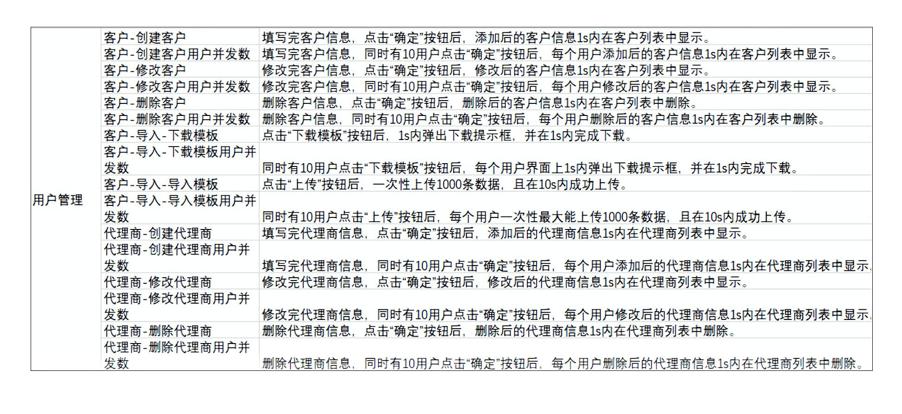
像这样的性能需求，基本上就是业务方的一种直观感觉，想看看单用户的操作响应，所以算不上是什么专业的性能测试需求。
不过你需要注意一点，这样的需求背后很容易埋着一个坑：列这个表的人可能想让系统在任何压力场景下都能达到这样的性能指标。那你就应该知道，明确性能需求是一个关键点，我们要明确在什么样的业务压力场景下要求这样的指标。在大压力的场景下，表格中所列的时间需求估计就实现不了了。因此，上面这张表格里的性能需求属于不合格的需求。
反面教材2：
我们再来看看下面这个性能需求指标。
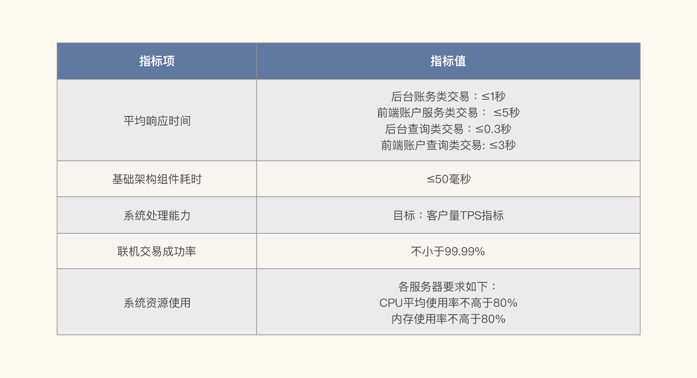
这个需求看起来非常清晰，但仍然有一个问题，那就是不够细化。为什么这么说呢？
我给你举个例子，这里面有一个指标值是“前端账户服务类交易：≤5秒”，我们知道账户交易有不少功能，如果这里要求的是每个交易都不大于5秒的话，那就过于宽泛了。其他的需求也有类似的问题。
而且，表格里有一个指标是说“CPU平均使用率不高于80%”，这个技术需求看似很具体，可是我想问你，是什么样的CPU使用率？如果是us cpu的话，那是不是使用率不高于80%就可以保证系统是好的呢？还有没有其他的制约条件呢？要不要再看看CPU队列呢？
我给你这么一讲，你有没有觉得上面这些需求指标都没法用了？其实，在实际的工作场景中还有很多反面教材。
那什么样的性能需求才是合理的呢？这就需要我们从四种不同的性能场景入手，区别对待。
基准场景的性能需求指标
我们先说下业务需求指标。我们可以列这样一个单业务性能指标的表格。
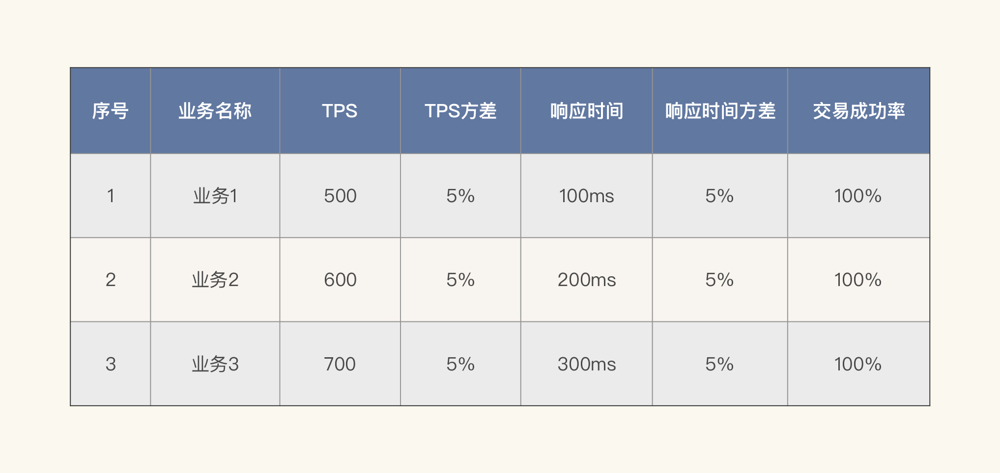
（这是一个明显为基准测试场景列的指标，我在这里只是简单列了几个重要的参数，其他参数你可以自行组装。）
当然了，你要是喜欢的话，也可以把参数“标准方差”改为“响应时间的百分比”，比如90%、95%、99%这样的值。如果我们在刚才的表格里加上这类限制，就会变成下面这样：
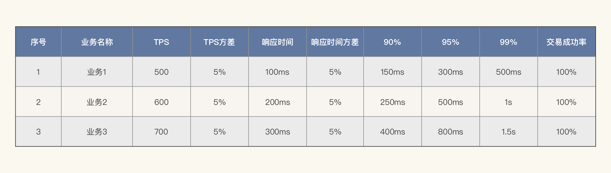
（注：这里的数据，我只是做一个示意展示，并不是说一定要满足这样的关系。）
对此，你知道为什么我们要定标准方差或者是响应时间百分比吗？因为对于性能来说，当平均值是一个比较优秀的值时，有可能会出现非常抖动的情况。要知道，“标准方差”和“响应时间百分比”的作用并不一样。前者是为了描述一条曲线的上下浮动范围有多大，而后者是为了查看曲线的上限在哪里。
平时我常看的是标准方差，因为对于性能来说，系统受到一些瞬间毛刺的影响时，会出现一些比较高的值。当然了，这也并不能说明系统不够稳定，我们需要分析原因才能知道为什么会有毛刺。下面我们通过几张图来感受一下标准方差对曲线影响的重要程度。
当标准方差比较小的时候（标准方差约为2.5），示意图如下：
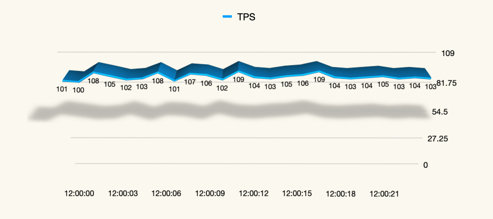
当标准方差较大时（标准方差约为17.6），示意图如下：
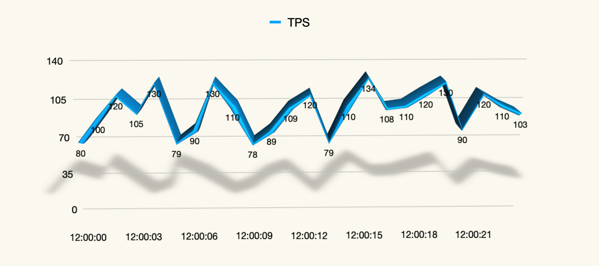
如果出现毛刺，示意图如下：
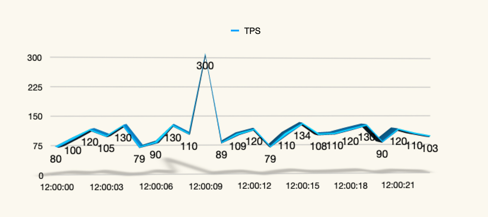
（注：不知道你有没有发现，上面这张示意图其实是有问题的。因为显然上图是在固定的压力线程之下的，而中间有一个很高的毛刺，这就有问题了，如果全都是正确的事务，不应该出现这么高的毛刺。所以这种毛刺通常都是在压力过程中由事务错误导致的。 ）
基准场景就是用这样的方式来限定业务需求指标的，那在容量场景中怎么办？我们需要添加什么参数来限定呢？
容量场景的性能需求指标
对于容量场景来说，最重要的就是业务比例，也就是我们经常说的业务模型。同时，对于其他重要的性能参数也可以重新制定。示意如下：
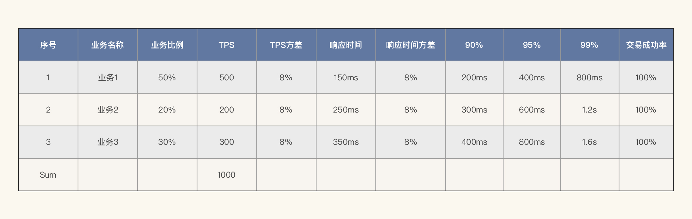
（注：这里的数据，我只是做个示意展示，并不是说一定要满足这样的关系。）
你可以看到，在这个容量场景中我们确定了业务比例，也确定了总体TPS的需求指标，再通过百分比我们就可以计算出每个业务的TPS目标。此外，我还对响应时间做了限制。
从性能角度来看，这几个参数限制就足以定死一个场景了。从技术角度来说，这样的容量需求也是可测的。当然，容量场景也会有多个，这要取决于业务特性。
稳定性场景的性能需求指标
关于这个场景的指标，我在后面的课程中会给你详细讲解。这里我主要强调两点：
- 稳定性的时间长度要合理，也就是说要合理判断稳定性场景需要运行多长时间；
- 稳定性使用的TPS量级要合理，也就是说我们要合理判断稳定性场景应该用多大的压力执行。
上述是稳定性场景中非常重要的两个指标。
异常场景的性能需求指标
针对该场景，你只需记住这个流程即可：针对系统的架构，先分析异常场景中的需求点，再设计相应的案例来覆盖。为什么要分析系统架构呢？因为在一个应用中，我们把功能测试完一遍之后，异常问题通常有两大类：其一是架构级的异常；其二是容量引起的性能异常。而对于架构级的异常，我们只能站在架构的角度进行分析。
描述完这些性能需求指标，我们是不是就可以往下走了呢？从性能技术的角度来说，的确可以往下走了。但是你别忘了，我们还没有描述用户级的指标。怎么办？这里就涉及到并发度的计算了。因为如果没有并发度的计算，我们就无法回答TPS和用户之间的关系。关于这一点，我会在后面的实践部分中给你做操作级的详细解释。
性能场景
通常情况下，有了性能需求指标之后，我们需要把这些性能需求指标一一对应到场景中，看它们符合哪个类型。
可能有人看到这里会说：“我觉得全都有了呀。其实不是！在我的性能工程理念中，场景绝对不只有脚本和业务模型这么点内容。我在上一个专栏中已经描述了场景设计和执行，有两个重点：
- 场景分为四类（基准、容量、稳定性、异常）；
- 执行过程中要保持连续递增。
在我们这个课程中，我要从工程级的角度把场景做更大的扩充。
你可能会想，场景是有多重要，至于吗？你可以把场景理解为是性能方案的落地，也是性能实施的核心，更是性能分析的起点……我大概能写出10个这样的句子来，来说明“场景”的重要性。
下面这张图是性能场景所包含的内容。
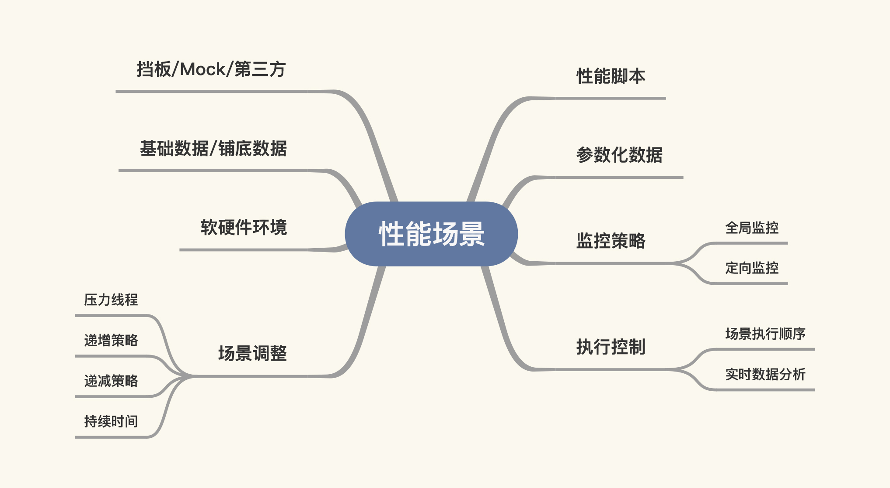
相信你可以感受到，在我的性能工程理念中，场景是一个复杂而宏大的概念。因为在我的工作中，只要场景跑起来，图中这些都是我要观察的内容。为什么？下面我就分别给你讲一讲，希望你能明白它们的重要性。
性能脚本：性能脚本只是场景中用来施压的部分，它记录了这个场景要做的是哪些事情，是接口级脚本、业务级脚本，还是用户级脚本？
参数化数据：这一点我在平时的培训中反复强调过多次，但是，仍然有很多人认为用少量的参数循环跑场景是合理的。这样的想法绝对是错的！因为如果严重的话，会直接导致结果不可用。
监控策略：请注意，在一开始的场景执行中，不要过度上监控工具，最好是先上全局监控工具。等有了问题之后，我们再重复执行场景，上定向监控工具。
执行控制：首先，我们得按“基准-容量-稳定性-异常”的逻辑执行；其次，在执行过程中要查看实时的数据曲线，并判断是停下来，还是继续，以及要分析哪些内容，以便我们清楚下一步要干什么事情。
场景调整：在这一步中我们需要明确很多东西，比如压力线程到底应该从多少开始，最大是多少；递增策略到底配置成什么样；要不要递减策略；持续时间是多长等等。
软硬件环境：在场景执行时我们脑子里要有概念，就是在这样的场景设计之下，软硬件的表现应该是什么样子，CPU、IO、内存、网络应该用多少，线程池是否合理等等，这些都要有经验上的判断和比对。
基础数据/铺底数据：不同的场景目标，对基础数据/铺底数据的要求是不一样的。而我们在性能场景中要求的基础数据/铺底数据就是和生产一致。
挡板/Mock/第三方：在场景中，对不可控的第三方一定要管控好，因为第三方的快慢会直接影响结果。这一步我们要根据场景的目标来。如果要测试的是真实生产逻辑，那就应该加上这一步；如果要测试的是，自己的系统有没有性能问题，那就可以屏蔽掉。但是在结果报告中，我们需要写明这个风险。
在我的性能理念中，上述这些都是必须存在的概念，场景有了这些内容后才像一个样子。在后面的课程里，我也将为你详细描述如何把它们应用到具体的项目中。
有了完美的场景之后，并不代表我们就可以得到完美的答案。因为还有更重要的事情在等着你，那就是做性能的分析。性能分析的逻辑要比场景设计复杂得多，大体来说主要有两个重点：
- 性能分析决策树；
- 性能瓶颈证据链。
我在前半生的职业生涯中，主要就是靠这两个思路支撑着我的工作，同时我也用这样的思路碾压过不少“马保国”们。在接下来的课程中，我会给你仔细讲解其中的精髓所在。
另外，还有两个关键点就是：构建性能分析决策树和判断性能瓶颈证据链，这些我也会在后面的课程中给你讲清楚。
总结
好，现在我们来总结一下这节课的内容。
从“性能测试”到“性能工程”的思路转换，并不是一句话，也不是画个图，写个文章，做个topic，就可以尽述的。我们只有在工作中将上面说的每一步应用到具体的工作中去，才是真正的工程。这也是我为你梳理性能概念的初衷。
我们再一起回顾下这节课的重点内容。
性能需求指标：没有业务指标就没有技术指标，而我们的工作就是让业务指标（比如并发用户数、在线用户数等）和技术指标（比如CPU、IO等）对应起来。在不同的性能场景中要定义好不同的性能需求指标，有些是自己看的，有些是给别人看的。
性能场景：其实性能场景真的不用有更多的分类了。我们讲的这四类场景（基准、容量、稳定性、异常）足够覆盖所有的性能执行过程。
课后作业
学完这节课后，请你再认真思考两个问题：
- 性能场景为什么只分为四类就够了？
- 你常见的性能需求指标都细化到了什么程度？
欢迎你在留言区写下你的思考和答案，和我交流讨论。如果你觉得这节课有收获，也欢迎把它分享给你身边的朋友，他们的一些想法或许会让你有更大的收获。我们下节课见！
关于课程读者群
点击课程详情页的链接，扫描二维码，就可以加入我们这个课程的读者群哦，希望这里的交流与思维碰撞能帮助你取得更大的进步，期待你的到来～
03 核心分析逻辑：所有的性能分析，靠这七步都能搞定
你好，我是高楼。
我之前看过一些性能分析方法论，比如SEI负载测试计划过程、RBI方法论、性能下降曲线分析法等等，这些观点很多只是停留在概念和方法论的层面，并没有具体的落地细节，让人看了之后也不知道怎么进一步做下去。像这样的方法论，在我看来完全没有必要存在。
在这里我也延伸一下，国外的一些理念在被翻译成中文之后，有很多只是停留在被知道、被了解的阶段，并没有被广泛应用过。像我们刚才提到的那些方法论，可能有很多从事性能行业的人都不知道。可见，这样的方法论不管好不好，都是没有受众基础的。而那些少数知道的人，也只是将这些理论翻译过来作为大帽子扣在某些文档上，但具体干起活来，该怎么干还怎么干。
如果我只是这样空泛地跟你说这些方法论不好使，那就是骂街了，作为文化人，还是得有理有据才行。下面我们就来看一段具体的内容。
你在任何一个搜索工具（比如度娘、谷歌、360等等）上搜“性能测试方法论”这几个关键字，基本上都可以看到很多复制来复制去的内容。而这些内容基本上都是在描述一个测试的实施过程，并且这些实施过程也都基本停留在测试的阶段。比如下面这几段关于“SEI负载测试计划过程”的描述（内容可能有点长，不过这不是我们这节课的重点，你可以不用那么仔细去看）。
SEI load Testing Planning Process是一个关注于负载测试计划的方法，其目标是产生“清晰、易理解、可验证的负载测试计划”。
SEI负载测试计划过程包括6个关注的区域：目标、用户、用例、生产环境、测试环境和测试场景。
①生产环境与测试环境的不同：由于负载测试环境与实际的生产环境存在一定的差异，因此，在测试环境上对应用系统进行的负载测试结果很可能不能准确反映该应用系统在生产环境上的实际性能表现，为了规避这个风险，必须仔细设计测试环境。
②用户分析：用户是对被测应用系统性能表现最关注和受影响最大的对象，因此，必须通过对用户行为进行分析，依据用户行为模型建立用例和场景。
③用例：用例是用户使用某种顺序和操作方式对业务过程进行实现的过程，对负载测试来说，用例的作用主要在于分析和分解出关键的业务，判断每个业务发生的频度、业务出现性能问题的风险等。
从上面的描述可以看到，这里面都是偏向“测试”执行过程的内容。这个理论的提出者是Mark McWhinney，1992年，他在SEI和John H. Baumert写了一个类似CMMI的内容：《Software Measures and the Capability Maturity Model》。
在这份304页的白皮书里，Mark McWhinney描述了四个级别的软件度量和成熟度模型，分别是：可重复级、可定义级、可管理级和可优化级，其中描述的也都是过程、影响、成本、质量、稳定性这些内容。
像这样的定义本身没有问题，但如果是像CMMI那样，企业只是拿个证，并不遵循它来做具体的项目，那这个理论就没有意义了。
在性能行业中，我们想要实际落地，可是从SEI中又得不到具体的指引，这才是问题。因为我们要有具体的性能容量、性能瓶颈的分析落地，才能体现性能项目最终的价值。而这一部分的缺失，使得很多性能从业人员没有可参考的成长路径。（至于其他的性能方法论，我就不再一一解析了。你如果有兴趣，可以查一查。）
这也是为什么在进入性能分析案例之前，我要和你先聊一下性能分析的核心逻辑。
在写《性能测试实战30讲》专栏中的第6讲时，我觉得已经把所有的核心分析逻辑都写完了，有一种呕心沥血的感觉，我也觉得自己不会再写分析逻辑了。可是在写这个专栏时，我还是觉得有些不够。
因为现在的性能工程师，最缺的就是分析思路。有很多人会各种工具，但是这些分析工具的数据拿出来应该如何组装成一串逻辑，又是很多人的难点。
如果从“测试”这个行业来看，性能分析的完整案例可以说非常少见。如果从运维或其他职位的角度来看的话，倒还是有一些的。但是纵观大部分的性能案例，都缺少一个提炼到更高一层的分析方法论。
所以，我觉得一个性能分析专栏，一定要有这样一讲内容来把分析逻辑说清楚。
不过，在写这一讲时，我没有之前那种呕心沥血的感觉了。因为我们这一讲的宗旨就是，把性能分析思路给固定下来。是的，你没有看错，我说的是“固定”下来，也就是说，这一讲之后，我们再也没有其他的分析思路了。
我把这个固定的分析思路称为“RESAR性能分析七步法”。（请你注意，这只是RESAR性能工程的一部分，并不是整个RESAR性能工程。）
RESAR性能分析七步法
跟着RESAR性能工程理论，我们的分析逻辑是这样的：
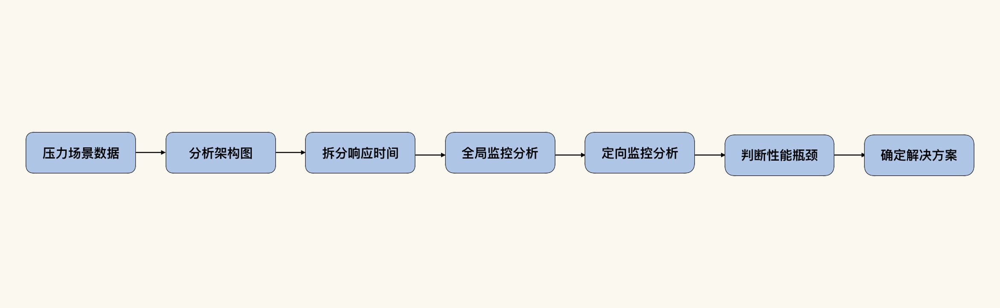
第一步：压力场景数据。
在我看来，压力工具提供的数据只有两个曲线最为重要：一个是TPS（你要是喜欢，也可以叫其他名字，像RPS、HPS、CPS之类，纠结名称并不是我们的关键），另一个是响应时间。
不管是什么压力工具，只要能给出这两个曲线即可，即便是你自己开发的多线程压力工具也无所谓。不管是线程、协程，只要可以根据业务逻辑发出相应的压力即可。
为什么说TPS和响应时间曲线最为重要，那其他的曲线，比如说吞吐量、点击率、错误率这些呢？错误率是有错误的时候才需要看的，这一点我想你应该不会有异议。而吞吐量、点击率之类的曲线，也必然会和TPS曲线是相同的趋势，所以我们不需要再单独分析。
因此在第一步，我们只需要从压力场景中获取TPS和响应时间曲线就可以了。
第二步：分析架构图。
接着是分析架构图，这一步我们需要做的是，看压力流量的路径。这主要是为了看分析链路的前后关系。如果业务逻辑复杂，部署也复杂，那我们就可以分为业务路径和部署路径。如果不复杂，那画一个路径就够了。
第三步：拆分响应时间。
在这里，我要着重跟你强调一下，在性能分析过程中，拆分响应时间是分析的关键起点。有很多人在看到响应时间高的时候，总是不往下拆分就开始猜测系统的性能瓶颈在哪里。如果你也是这样，这种思路你一定要转换过来，不要总是在现象上纠结。
第四步：全局监控分析。
话说现在很多看似拥有全局监控能力的工具平台，实际上还是会缺失一些计数器。所以，我们一定要根据性能分析决策树，来补全性能计数器。如果获取这些计数器，在当前的工具平台上实在有困难，那就通过其他的工具或命令来补充，这一点你要特别注意。
之前我给一个银行客户分析问题的时候，他们说各个层面的监控数据都有。但实际情况却是，与问题相关的计数器，他们是缺失的。这样的情况其实很普遍，很多公司往往只关注大层面的覆盖，忽视了具体计数器的完备。
“全局监控分析”‘这一步有个关键，就是你要对你所看到的计数器有足够的了解。如果你看了数据之后，没有任何反应，那就说明你还没有达到分析的能力。这个时候，你要么就是来看专栏，要么就是去看书，要么就是去查度娘（虽然度娘在这个时候也不好使），要么就是放弃。
那我们怎么知道一个全局计数器有没有问题呢？这就需要功底了，这些就是我经常说的计算机基础知识。性能分析的范围很大，不见得与它相关的所有知识的头上都会标着“性能”两个字。
经常会有人问GC频率达到多少是合理的？这就是很难回答的问题。只要GC不影响系统容量，那就是可以的。所以，我们得先看GC和系统容量曲线之间的关联关系，然后再做判断。
在性能分析中，没有哪个计数器可以直接跳出来告诉我们说“我有病！”，只能靠我们自己去判断它有没有病。
第五步：定向监控分析。
看了全局监控计数器之后，我们通过判断分析，知道哪个方向上有问题后，才去做定向的监控。千万不要一开始就弄什么代码层分析、具体参数调整、SQL调整啥的。不仅乱，而且不一定见成效。
在“定向监控分析”这一步有个关键判断，就是能不能和上面的全局监控计数器对应。当我们想找一个栈的时候，要知道为什么要去找栈；当我们要判断IO参数有问题时，也要知道为什么要去找IO参数。
这样一来，前后的逻辑关系就形成了我一直在RESAR性能工程中强调的一个词——证据链。
第六步：判断性能瓶颈点。
有了证据链，就一定要来到性能瓶颈点的判断过程。比如说，我们在栈中判断有没有锁的存在，那至少你要在栈中找到这个锁有哪些线程在等待，哪个线程持有。再比如说，我们要判断一个SQL慢，那至少你要把SQL的执行过程拿出来，看到底是哪一步有问题。
有了对性能瓶颈的判断，再往下走就是要找到解决方案。
第七步：确定解决方案。
其实，知道瓶颈点在哪里，也并不一定知道有什么解决方案。就像有人看到了栈中有锁，但也不知道怎么解锁；有人知道SQL慢，但也不知道如何优化SQL一样。不过，这一步是性能项目体现价值的关键点。不管前面做得有多么辛苦，给出解决方案总是我们性能人员的重点。
上述就是RESAR性能分析七步法，它在每个性能分析的案例中都会被使用。在具体的案例中，我们可能会选择其中的几步来做。当然，每个案例都走七步也是完全可以的。只是在我们分析的过程中，如果已经有了明确的问题点，就不用再往回分析了。
比如说，如果我们已经知道了问题点，直接定向监控分析就可以了，不用再走第四步。还有就是，如果性能瓶颈不会导致响应时间长，而是出现其他的问题，可能就不需要走第三步。这些内容你将在后面课程的案例中看到具体的应用。
总结
我们这节课讲的性能分析的核心逻辑，是RESAR性能工程中具体的性能瓶颈分析指导。没有它，就没有分析的具体落地步骤。但是如果在落地时不遵循这个核心逻辑，它也就没有价值了。
在这七步法中，会涉及到对应的知识体系，像在构建性能分析决策树、查找性能瓶颈证据链时，我们就需要强大的技术基础知识做支撑。如果一个人不具备全部的基础知识也没关系，可以组织一个团队共同来做这件事情。
对于我来说，RESAR性能分析七步法，是我做任何一个性能瓶颈定位时必须要依赖的逻辑，它帮助我解决了很多以前没有遇到过的问题。如果你想应用这个过程，那就请记住我一直强调的一句话：在性能分析中，你只需要知道下一步做什么就可以了，我们终会找到瓶颈的具体原因。
课后作业
最后，请你思考两个问题：
- 为什么在性能项目中需要RESAR性能分析七步法？
- 在你之前做过的调优案例中，用的是什么样的分析逻辑？
欢迎你在留言区写下你的思考和答案，和我交流讨论。如果你觉得这节课有收获，也欢迎把它分享给你身边的朋友，他们的一些想法或许会让你有更大的收获。我们下节课见！
关于课程读者群
点击课程详情页的链接，扫描二维码，就可以加入我们这个课程的读者群哦，希望这里的交流与思维碰撞能帮助你取得更大的进步，期待你的到来～
04 如何构建性能分析决策树和查找瓶颈证据链？
你好，我是高楼。
上节课我给你讲了一个完整且固定的性能分析流程——RESAR性能分析七步法，它可以应用在任何性能分析案例中。在这个分析流程中，有两个关键的技术和思路，分别是性能分析决策树和性能瓶颈证据链。这也是我们在02讲中提到的，贯穿整个性能工程的两个重要概念。
今天这节课，我们一起来看看怎么一步步构建性能分析决策树和查找性能瓶颈证据链。
如何构建性能分析决策树？
实际上，性能分析决策树在性能监控设计和性能瓶颈分析时都会被使用，并且在性能瓶颈分析时，我们必须要有决策树的思路。所以，这是我一定要给你描述的步骤。在后面课程的分析中，我们也会大量地用到“性能分析决策树”这个词。
首先，什么是性能分析决策树呢？
性能分析决策树是包括了系统架构中所有技术组件、所有组件中的模块以及模块对应计数器的完整的结构化树状图。
在这句话中，有三个重要的层级，分别是组件、模块和计数器：
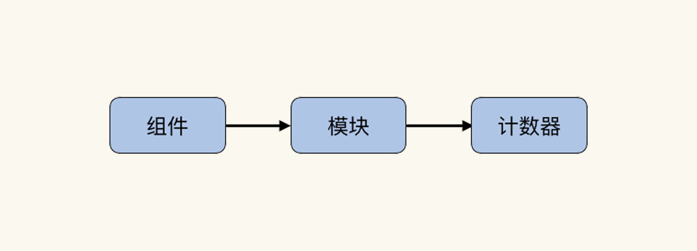
在后面的课程中，我也会频繁使用这三个关键词。
不过，这个关于“性能分析决策树”的定义虽然很合理，但还是会让人感觉抓不住重点，就像看了哲学语句一样。但是IT技术并不是哲学，所以，我们还要把它细化下去。
构建性能分析决策树是我们了解一个系统非常关键的环节，总体来看，它分为4个步骤。
第一步：根据系统的架构，罗列出整个系统架构中的组件。
在我们这个课程搭建的系统中，整体架构的组件是这样的：
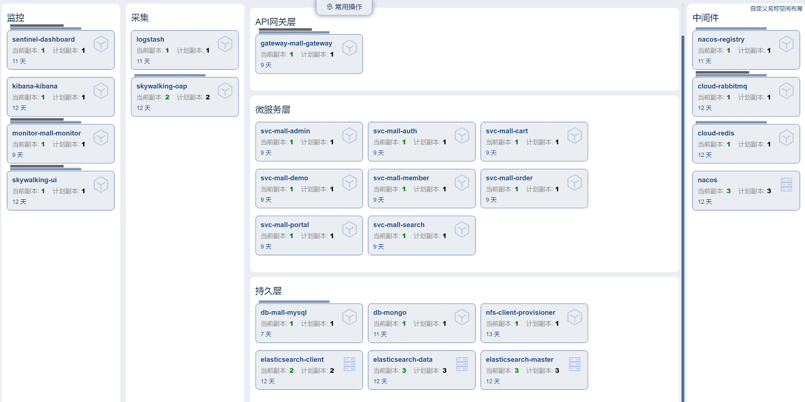
对应上面这张图，我们就能罗列出该系统的所有组件，如下：
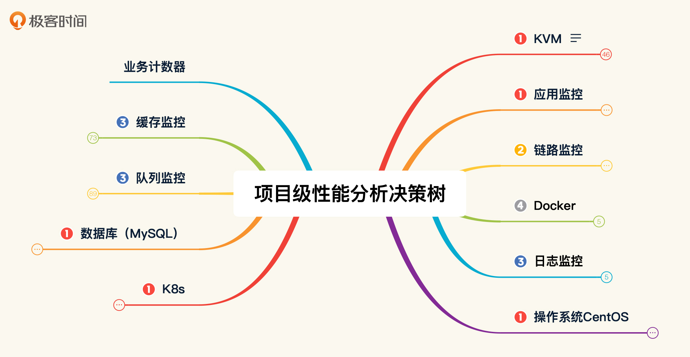
第二步：深入细化组件中的每一个重要的模块。
由于我们这个系统中的组件太多，我们先选择其中一个比较重要的组件——操作系统，来做示例。因为操作系统是性能分析中非常重要的一个环节，几乎所有的问题都会体现到操作系统的计数器上。至于其他的组件，你可以根据我说的流程自行确定一下。
根据操作系统的特性，我们先画出它的重要模块：
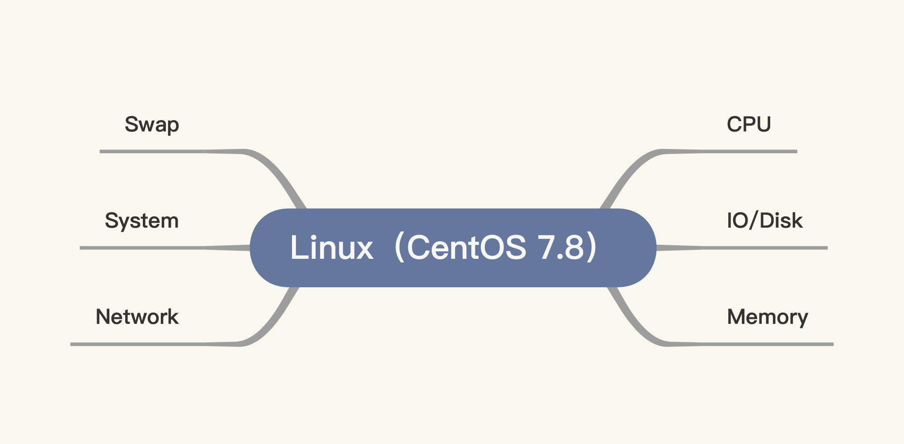
我在图中画了六个模块，其中一个是Swap。Swap的存在是为了让系统在没有内存可用的时候，可以用硬盘来做内存的交换分区。当Swap被用到时，其实就说明性能已经有了问题。所以，一般不建议在性能项目中使用Swap，我们应该在使用Swap之前就把性能问题解决掉。不过，在生产环境中，如果我们被逼无奈，也只能把Swap打开了。
至于图中其他几个模块，基本上是我们在性能分析中必须要看的内容。
第三步：列出模块对应的计数器。
在罗列计数器的时候，我们要注意把每个模块重要的计数器都囊括进来，千万不能漏掉重要的第一级计数器，如果漏掉的话，有些数据可能就需要重新跑了。
现在，我们来看其中一个重要的模块——CPU。我们可以通过top命令查看到CPU的几个重要的计数器：
[root@k8s-worker-8 ~]# top
top - 00:38:51 up 28 days, 4:27, 3 users, load average: 78.07, 62.23, 39.14
Tasks: 275 total, 17 running, 257 sleeping, 1 stopped, 0 zombie
%Cpu0 : 4.2 us, 95.4 sy, 0.0 ni, 0.0 id, 0.0 wa, 0.0 hi, 0.0 si, 0.4 st
%Cpu1 : 1.8 us, 98.2 sy, 0.0 ni, 0.0 id, 0.0 wa, 0.0 hi, 0.0 si, 0.0 st
%Cpu2 : 2.1 us, 97.9 sy, 0.0 ni, 0.0 id, 0.0 wa, 0.0 hi, 0.0 si, 0.0 st
%Cpu3 : 1.0 us, 99.0 sy, 0.0 ni, 0.0 id, 0.0 wa, 0.0 hi, 0.0 si, 0.0 st
可以看到，top命令中有九个计数器，分别是：us/sy/ni/id/wa/hi/si/st/load average。前8个是CPU的计数器，这是毋庸置疑的。那最后一个load average是什么呢？
在搜索引擎上，我们经常能看到一些关于load average的笼统描述。有人说load average高过CPU就说明系统负载高，也有人说load average和CPU并没有直接的关系，观点不一。
load average作为CPU一个非常重要的性能计数器，我们在用它做判断时，如果不能给出非常明确的判断方向，那就有大问题了。所以，我要给你好好描述一下。
load average是1m/5m/15m内的可运行状态和不可中断状态的平均进程数。
这个说法非常对，但中规中矩，而且不是非常具体。
对于“可运行状态”，我们比较容易理解。从上面代码块中的数据可以看到，tasks中有一个Running状态的任务数。不过，可运行状态不只是它，还有一些万事俱备只差CPU的情况。也就是说tasks中的Running状态的任务数，与load average的值之间并不是直接的等价关系。
同样在vmstat中，我们也能看到运行的任务数。在vmstat的proc列有两个参数：r 和 b。其中，r 是指正在运行状态和等待运行状态的进程，在man手册中是这样描述的：
r: The number of runnable processes (running or waiting for run time).
对于不可中断状态，我们经常见到的就是等IO。当然，也不止是等IO，内存交换也会在这个状态里，这种等IO的情况会体现在vmstat中proc下面的b列。下面这个计数器就是vmstat的proc的b列的说明。
b: The number of processes in uninterruptible sleep.
所以我们可以看到，load average实际上就是vmstat中proc列的r与b之和。
其实，CPU不止有us/sy/ni/id/wa/hi/si/st/load average这九个计数器，它还有两个计数器藏在mpstat中，分别是%guest和%gnice。
[root@k8s-worker-8 ~]# mpstat -P ALL 2
Linux 3.10.0-1127.el7.x86_64 (k8s-worker-8) 2021年02月15日 _x86_64_ (4 CPU)
14时00分36秒 CPU %usr %nice %sys %iowait %irq %soft %steal %guest %gnice %idle
14时00分38秒 all 5.13 0.00 3.21 0.00 0.00 0.26 0.00 0.00 0.00 91.40
14时00分38秒 0 4.62 0.00 2.56 0.00 0.00 0.00 0.00 0.00 0.00 92.82
14时00分38秒 1 4.57 0.00 3.05 0.00 0.00 0.00 0.00 0.00 0.00 92.39
14时00分38秒 2 5.70 0.00 3.63 0.00 0.00 0.00 0.00 0.00 0.00 90.67
14时00分38秒 3 5.70 0.00 4.66 0.00 0.00 0.00 0.00 0.00 0.00 89.64
从下面这段描述中可以看到，如果在宿主机上看%guest和%gnice这两个参数，是比较有意义的，因为它可以说明Guest虚拟机消耗CPU的比例。如果你的宿主机上有多个虚拟机，你就可以通过这两个参数值来看虚拟机是不是消耗CPU太多，然后通过查进程的方式看看具体是哪一个虚拟机消耗得多。
%guest Show the percentage of time spent by the CPU or CPUs to run a virtual processor.
%gnice Show the percentage of time spent by the CPU or CPUs to run a niced guest.
所以，在Linux操作系统中，如果是宿主机，我们就需要看11个计数器。如果是虚拟机的话，看9个计数器（图中前9个）就可以了：
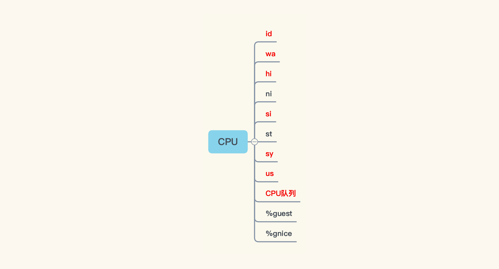
讲到这里，我们已经罗列出与CPU相关的所有计数器了。我们前面提到，要根据Linux操作系统中的各个模块，把相应的计数器全都罗列出来。所以，其他模块的计数器我们也需要像这样完整地找出来。
当我们把Linux操作系统所有的关键一级计数器找完之后，就会得到这样一张图：
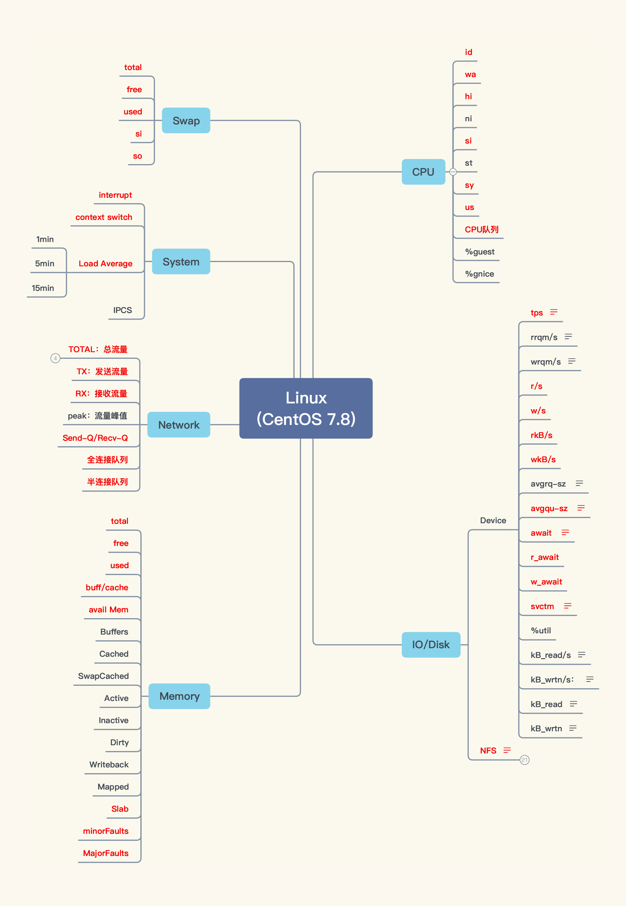
请你注意，这些计数器里，有一些会比较关键，我根据自己的经验，把重要的计数器都标红了。当然，如果你对操作系统有足够的理解，也可以从不同的角度，用不同的思路，列出自己的图。要知道，罗列计数器只是一个体力活，只要你愿意，就能列出来。
第四步：画出计数器之间的相关性。
从上面的图可以看到，尽管我们列出了很多计数器，但是这些计数器之间的关系是什么，我们还不清楚。
在分析的时候，由于我们要根据相应的计数器，来判断问题的方向（有时候一个计数器并不足以支撑我们作出判断，那我们就需要多个计数器共同判断）。所以，我们要画出这些计数器之间的关系，这一步非常重要。
我根据自己的理解，画出了Linux操作系统中计数器之间的关系，如下所示：
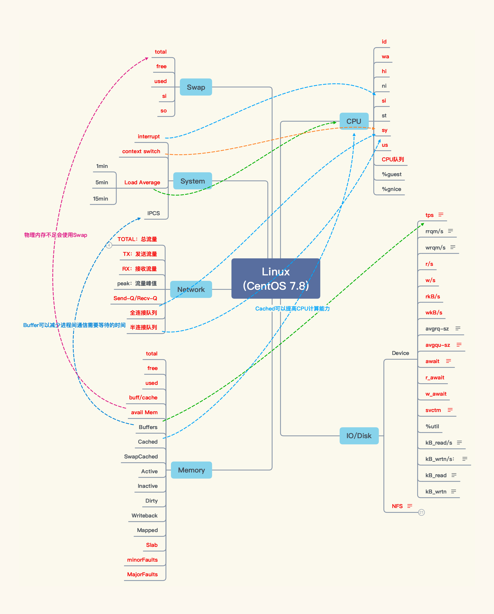
如果线画得太多，看起来会比较混乱，所以我只画出了几个最重要的关键相关性。
至此，我们就把Linux操作系统的性能分析决策树画完了，计数器也覆盖全了。不过，工作还没有结束，因为我们还需要找到合适的监控工具，来收集这些计数器的实时数据。
收集计数器的实时数据
请你注意，在收集计数器的实时数据时，可能不是一个监控工具就可以完全覆盖所有的计数器的。所以，在分析的时候，我们一定要清楚监控工具的局限在哪里。如果一个工具无法监控到全部的计数器，那就必须用多个工具相互补充，比如说对于Linux操作系统的监控，现在我们最常用的监控工具就是prometheus+grafana+node_exporter，像这样：
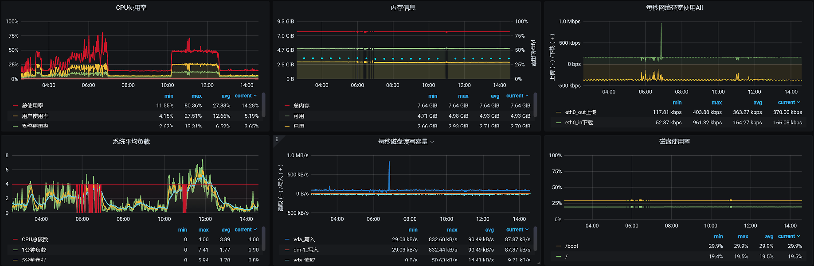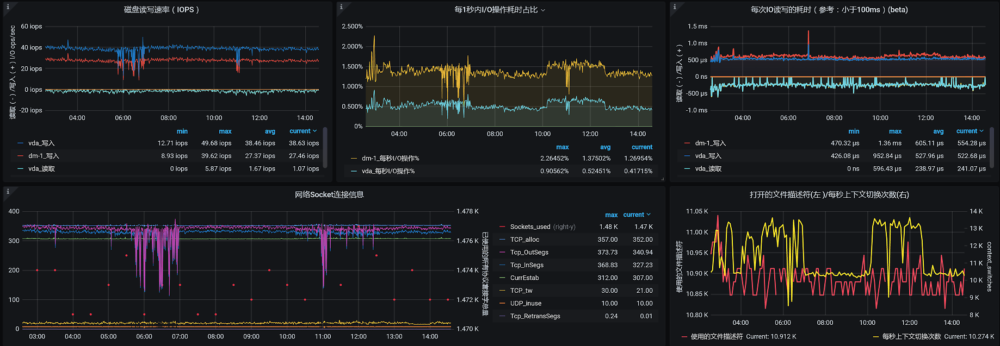
这是我们经常用的监控Linux操作系统的模板。那这个模板的数据全不全呢？其实一对比就能发现，这个模板虽然可以覆盖大部分Linux操作系统的性能计数器，但是并不全，比如说网络的队列、内存的软/硬错误等，这些就没有覆盖到。
因此，我们在使用监控工具之前，一定要把性能分析决策树中的计数器，与监控工具中的计数器做对比，缺什么，我们就要在分析时用其他的监控工具或是命令来做补充。
请你记住一点，用什么监控工具并不重要，有没有监控到全部的计数器才重要。即便我们没有任何的监控工具，要是只敲命令也能监控到全部计数器的话，也是可以的。所以，我希望你不要迷信工具。
到这里，整个性能分析决策树还没有结束。因为在这个系统的架构中还有其他的技术组件，而我们的任务就是把这些技术组件，都按照我们前面讲的那四个步骤，画出相应的性能分析决策树，最终形成一张完整的大图。
在我们这个系统中，如果画出全部的技术组件和模块的话，就会看到下面这张图：
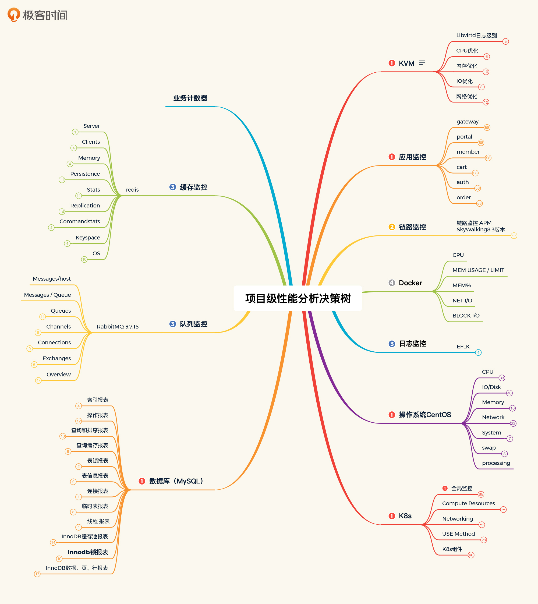
整个图我没有全部展开，要是展开的话就太大了，会完全看不到末端的计数器。不过你放心，在后面课程的分析案例中，我会让你看到如何应用这个性能分析决策树来做相应的问题分析。
讲到这里，我就把性能分析决策树完整地给你描述完了，步骤也列清楚了。古人有云：授人以鱼不如授人以渔。所以，我希望你看到这些步骤之后，可以画出你自己项目中完整的性能分析决策树。
我还要强调一点，这里我们只列出了第一级的性能计数器。如果第一级计数器有问题，而我们还不能判断出问题的原因，那就需要接着找第二级、第三级、第四级…..关于怎么找更深层级的性能计数器，我会在接下来证据链的部分给你讲解。
不过，在我们一开始梳理性能分析决策树时，没必要把所有层级的性能计数器都列出来。因为可能我们整个项目做完了，都没有用到全部的计数器，全列出来容易浪费时间。只有我们看懂了第一级的计数器，并且判断出问题的方向，才有可能需要看更深层的计数器。
所以，你要注意，理解每个计数器的含义才是至关重要的。如果不理解计数器的含义，也不知道如何运用计数器，那我们就不可能知道怎么去做分析。
有了性能分析决策树之后，我们如何应用它呢？接下来，就不得不讲一讲性能瓶颈的证据链了。
怎么查找性能瓶颈证据链？
在每次做培训或者性能分析时，我都会强调，性能分析中有一个非常关键的词，那就是“证据链”。
如果性能分析没有证据链，那么分析思路就是跳跃的。通俗点讲，就是蒙，根据经验蒙，根据资料蒙。这种跳跃的分析思路是非常容易出错的。所以，我们在分析性能瓶颈时，一定要有理有据、顺藤摸瓜。
那具体怎么来判断呢？接下来我会通过一个例子给你讲解。
全局监控分析
在进入这个例子之前，我需要跟你强调一点，在性能分析中，监控分析可以分为两个部分：全局监控分析和定向监控分析。全局监控分析是指将整个架构中具有概括性的计数器都分析一遍。也只有从全局监控计数器，我们才能看到性能问题的第一层现象。
比如说，如果我们想找到哪一行代码有消耗CPU的问题，首先，我们是不知道具体是哪一行代码的，但是在CPU计数器上会体现出CPU使用率高的现象。而全局监控就是为了查看CPU消耗是不是比较高，当我们看到CPU消耗高的时候，再往下找是哪一行代码消耗CPU比较高，这就用到了定向监控分析的思路。
所以在性能分析的过程中，我通常会分为全局监控分析和定向监控分析两个阶段。而全局监控分析既可以用监控平台，也可以用命令。
在我之前做过的一个项目中，有一个主机有24颗CPU，我在场景执行过程中看到了这样的数据：
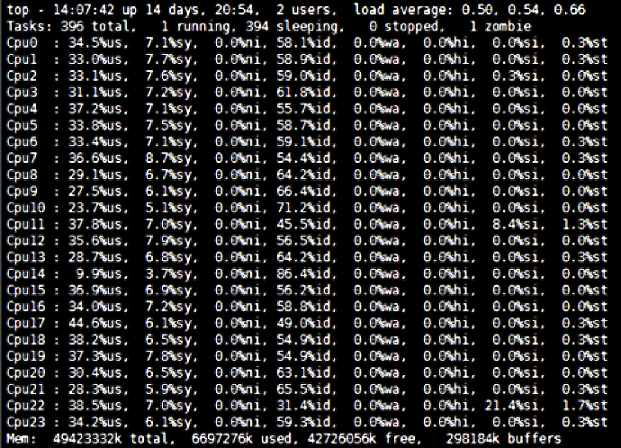
这就是我们前面提到的，性能分析决策树中CPU监控的具体命令。所以我们接下来的分析逻辑就是：根据性能瓶颈的分析应用，选择相应的监控手段，覆盖性能分析决策树中需要监控的计数器，然后再进一步细化分析。
在上面这张图中，我们看到所有CPU的%us使用率并没有很高，%id也不小，还有一些剩余。但是%si（软中断）这一项，唯独第22颗CPU的%si有21.4%之高。那这个软中断合理不合理呢？
有人可能会说，这也没有太高嘛，能有什么问题？如果我们只看%si平均值的话，可能确实发现不了问题的存在。但如果仔细看图中更详细的数据，就会有不一样的结论了，这也是为什么我们要把每颗CPU的使用率都先列出来的原因。
我们说，当一个应用跑着的时候，如果应用代码消耗了很多CPU，那%us的使用率应该会变高，但是在上面我们看到的并不是%us高。并且在合理的情况下，每个CPU都应该被使用上，也就是说这些CPU的使用率应该是均衡的。
但是在这个图中，我们看到只有CPU 22的%si使用率比较高，为21.4%。并且软中断（%si）只使用了24颗CPU中的一颗。这个软中断显然是不合理的。
定向监控分析
那既然软中断不合理，我们自然是要知道这个软中断到底中断到哪里去了，为什么只中断到一颗CPU上。所以，我们要去查一下软中断的数据。
在Linux操作系统中，有不少工具可以查看软中断，其中一个重要的工具就是/proc/softirqs。这个文件记录了软中断的数据。在我们这个例子中，因为有24颗CPU，数据看起来实在比较长。所以，我先把一些CPU数据过滤掉了，只留下图中这些数据来分析。
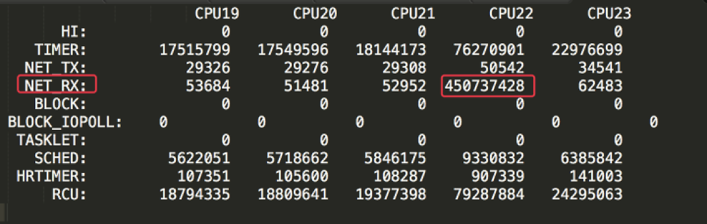
在这张图中，我标注出了CPU 22和它对应的模块名NET_RX。你可能会奇怪，怎么一下子就找到了这个模块呢？这是因为CPU 22的使用率最高，在它上面产生的中断数自然要比其他CPU高得多。
由于 /proc/softirqs文件中的各个计数器都是累加值，其他模块在各个CPU上的累加值比例都没有太大的差别，只有NET_RX模块在不同CPU上的计数值差别很大。所以，我们可以作出这样的判断：CPU 22的使用率高是因为NET_RX。
我们看“NET_RX”这个名字就能知道，这个模块的意思是网络接收数据。那在网络数据接收的过程中，什么东西会导致网络的中断只中断在一颗CPU上呢？
我们知道，网络的接收是靠队列来缓存数据的，所以我们接下来得去查一下网络接收的队列有多少个。我们可以通过/sys/class/net/<网卡名>/queues/路径，查看到这个网络队列：- 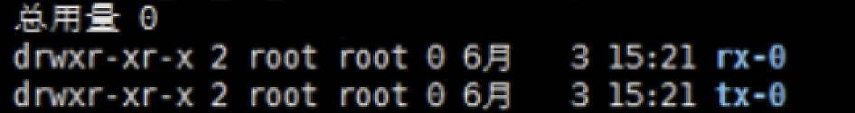
不难看出，RX队列确实只有一个，这也就意味着，所有的网络接收数据都得走这一个队列。既然如此，那自然不可能用到更多的CPU，只能用一颗了。
讲到这里，我要多说明一点：因为我们这节课重在讲解分析的逻辑，所以我在这里就不做更加细致的分析了。如果你要想更深入地理解网络中断逻辑，可以去翻一下Linux源码，看看net_rx_action函数。不过归根到底，中断在系统层的调用都是do_softirqs函数，所以当我们用perf top -g命令查看CPU热点的时候，你同样也可以看到上面我所描述的逻辑。
既然我们知道了网络接收队列只有一个，那上述问题的解决思路自然也就出来了：多增加几个队列，让更多的CPU来做中断的事情。因为网络中断是为了把数据从网卡向TCP层传输，所以队列一旦变多了，传输速度也会变得快一些。
所以，我们的解决方案就是增加队列：
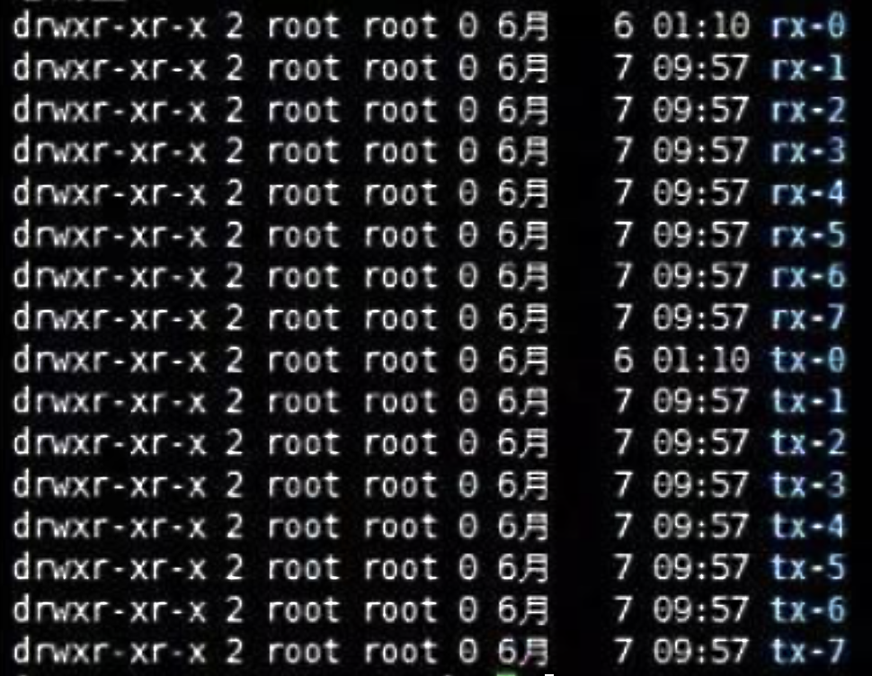
在我们这个例子中，我把队列增加到了8个，这样网络接收数据就会用到8颗CPU。如果你想用更多的CPU也可以，这里我们有24颗CPU，那就可以设置24个队列。如果你用的是虚拟机，对于这个改动，你可以在KVM的XML参数中增加一个队列参数来实现；如果你用的是物理机，那你就只能换网卡了。
现在我们把整个分析逻辑都理清楚了，下面就按照这个逻辑把对应的证据链画一下：
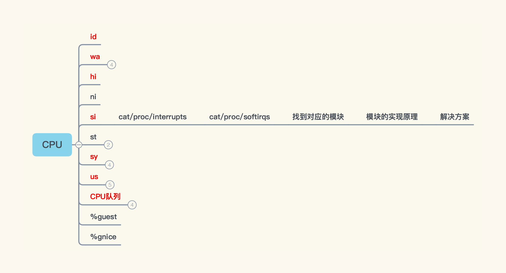
根据图中展示的逻辑，当我们看到%si（软中断）高时，就去查看cat/proc/interrupts目录。其实对于这个软中断，有两个目录可以体现出来，一个是cat/proc/interrupts，另一个是cat/proc/softirqs。前者不仅包括软中断，还包括硬中断，如果我们看到软中断高，其实直接看cat/proc/softirqs就可以了。
紧接着，我们要找到对应的模块，然后再找到这个模块的实现原理，最后我们给出相应的解决方案。
这样一来，这个问题的完整证据链就找到了。
相信你通过这个例子可以看出，性能瓶颈的证据链其实就是，性能分析决策树在具体应用过程中完整的分析逻辑的记录。
请你注意，我们一开始并不会直接去看cat/proc/softirqs的内容，因为这个太定向、太具体了。我们一定要先看全局的数据，然后再一步一步往下去找，这样才是合理的。不难发现，我们从全局监控分析拿到的数据，和从定向监控分析拿到的数据是不一样的，因为它们是不同的角度，这一点你也要格外注意。
总结
这节课和上节课一起，我把整个分析逻辑总结为：RESAR性能分析七步法，这是性能分析方法论中最重要的核心逻辑。不过，这些内容“孤篇盖全唐”的可能性很小，毕竟性能分析涉及到的所有细节无法在短短两节课里尽述。
所以，我把我认为最重要的部分都给你描述出来了，当你在实际应用时，可以按照这个思路，实现你的性能分析决策树和性能瓶颈证据链。前提是，你要理解你的系统，理解你的架构，并且要理解我给你讲的分析逻辑。
在这节课中，我为你讲解了两个重要的内容：性能分析决策树的构建，以及性能瓶颈证据链的查找。这是我们在每一个性能问题的分析过程中，都必须经历的。只有把决策树和证据链具体落地，我们才能在性能分析中无往不利。
课后作业
最后，请你思考一下：
- 如何构建你自己的性能分析决策树？
- 举一个你做过的性能分析中有完整证据链的案例。
欢迎你在留言区与我交流讨论。当然了，你也可以把这节课分享给你身边的朋友，他们的一些想法或许会让你有更大的收获。我们下节课见！
关于课程读者群
点击课程详情页的链接，扫描二维码，就可以加入我们这个课程的读者群哦，希望这里的交流与思维碰撞能帮助你取得更大的进步，期待你的到来～
05 性能方案：你的方案是否还停留在形式上？
你好，我是高楼。
性能方案在性能项目中是非常重要的文档之一，它指导着整个项目的执行过程，同时也约束着项目的边界，定义相关人员的职能。但令人痛心的是，如今它变得“微不足道”。
在很多常见的性能项目中，性能方案就是一个文档，并且是一个静态的文档。里面写的东西是什么，项目后续会不会按这个内容去做，基本上没有人关心。它就成了一个形式，只有在评审方案的时候才会被拿出来看看。甚至在一些第三方测试项目中，我看到有些甲方连方案的内容都不看，直接问有没有。如果有就过去了。你看，一个必需的交付物却无人关心。
在我的性能工程理念中，性能方案是一个重量级的文档。在性能项目中，它被叫成是“性能测试方案”。在我这里，我要把“测试”二字拿掉。为什么要拿掉？因为这取决于我在前面课程中提到的性能工程理念，我希望把整个项目的过程都描述在方案中。
我讲的性能方案和那些常见的性能方案究竟有什么区别呢？我们不妨先来看看，后者普遍都是什么样的。
这些目录相信你并不陌生，我们经常能看到有这样目录的性能测试方案。
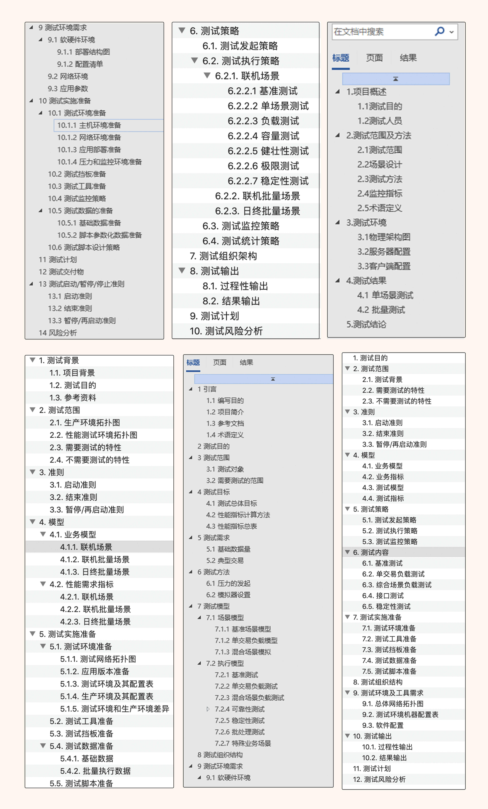
这里我就不一一列举了，再看更多的目录，其实也是类似的。这样的目录大纲，在我看来分为这么几个部分。
- 常规项目信息：比如说测试背景、测试范围、测试准则、测试环境、实施准备、组织结构、项目风险、里程碑。
- 性能实施信息：比如说测试模型、测试策略、监控策略。
- 项目输出：比如说测试脚本、测试用例/测试场景、监控采集数据，测试报告、调优报告。
从性能测试方案的角度来说，这些内容似乎够了。但是，如果抛弃掉“测试”这个视角，从一个完整的性能项目的角度来看，这些内容其实还不够。
以前经常有人问我要一个性能项目方案模板，我一直不太理解，就这么一个目录，为什么还非得要呢？自己一个字一个字也照样写得出来吧。后来我慢慢理解了，他们要的其实不是大纲目录，而是一个完整的性能方案内容。
不过，我们知道，项目实施的性能方案基本上都不太可能直接发出来，即便做了脱敏，一些内容也可以看出是属于某些企业的。所以，出于职场的素养，这些内容不得不放在硬盘里，直到过时，直到烂掉。这也就是为什么我们在网上看不到非常完整的性能方案。
可是，尽管网上的方案不完整，在性能市场上，我们还是看到有太多的性能方案是抄来抄去的，总体的结构大同小异。这也就导致了在性能项目中，大量的方案都只有形式上的意义。
因为我们这个课程需要基于一个完整的项目来编写，所以，我把这个项目整体的方案写在这里。你将看到，我认为的真正完整并且有意义的性能方案是什么样子，希望能给你一些启发。
由于性能方案的内容比较多，并且相对琐碎，我给你整理了一张性能方案的目录表格，你可以对应这张表格，来学习具体的内容。
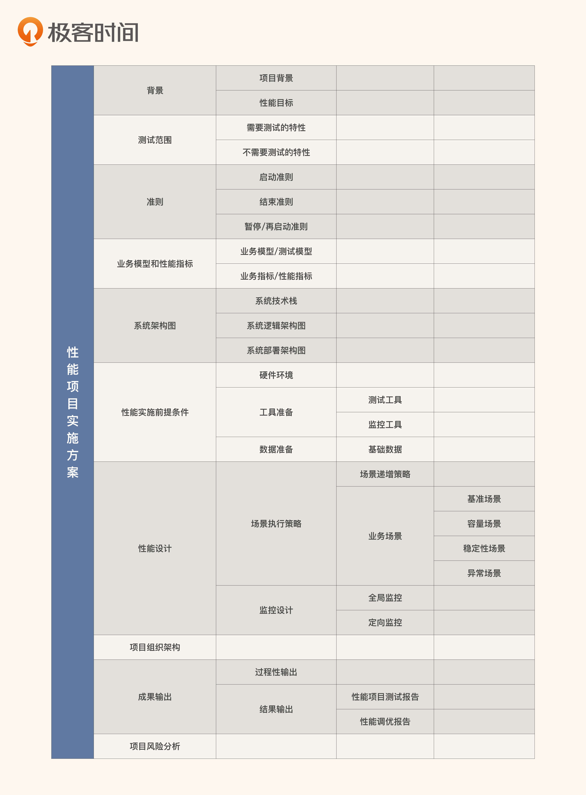
性能项目实施方案
背景
项目背景
我们刚才提到，这个课程需要搭建一个比较完整的性能项目。但由于各企业的商业软件有限制，我们只能选择一个开源的项目，并且这个项目最好可以覆盖常见的技术栈，以便能给你提供更多可借鉴的内容。
基于上述原因，我们搭建了一套电商项目。对此，我要说明两点：第一，这个项目是较为完整的；第二，当前电商的系统比较典型，并且这个项目完全开源，便于我们改造。
不过，也因为这是一个开源的项目，功能和性能都不知道会有什么样的问题，我们只有在性能实施的过程中一步步去发掘，所以这是一个非常符合我们当前目标的项目。
性能目标
- 根据经典的电商下单流程，测试当前系统的单接口最大容量。
- 根据业务比例设计容量场景，充分利用当前资源，找到当前系统的性能瓶颈，并优化，以达到系统的最佳运行状态。
- 根据稳定性场景，判断当前系统可支持的系统最大累加容量。
- 根据异常场景，判断当前系统中的异常对性能产生的影响。
在每一个性能项目中，性能目标都会影响项目的整个过程。因此，对目标的把握将决定一个性能项目的走向。
记得我在之前的一个项目中，客户方要求做到支持1000万人在线，项目不算小，开发团队有300人左右。到那里后，我一看只有两个性能测试人员，而且其中一个还是刚毕业，还处于打野练级的状态。于是，我就过去找他们科技部的老大说，这个项目我做不了。因为根据这个目标和这样的人员配置，我清楚这个坑根本不是我能填得上的，所以得赶紧认怂。
后来，那个科技部的老大问，需要什么样的资源才能做下去呢？于是我提了几个必需的条件，直到这些条件都满足了，我才敢接这个项目。
我举这个例子是想让你明白，性能目标在上下级眼中根本是不一样的，而我这样的处理，是希望把性能目标在上下级的脑袋中变得一致。这一点很重要。
测试范围
需要测试的特性
电商主流程，如下所示：
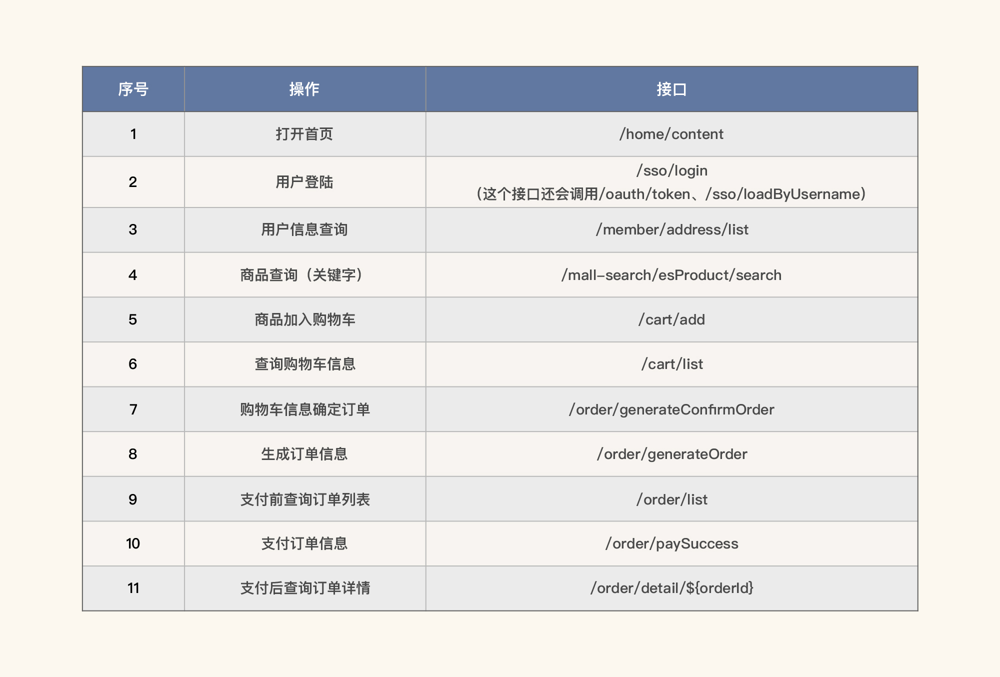
不需要测试的特性
批量业务。
准则
启动准则
- 确定系统逻辑架构和部署架构和生产一致。
- 确定基础数据和生产一致或按模型缩放。
- 确定业务模型可以模拟生产真实业务。
- 环境准备完毕，包括：- 4.1. 功能验证通过。- 4.2. 各组件基础参数梳理并配置正确。- 4.3. 压力机到位，并部署完毕。- 4.4. 网络配置正确，连接通畅，可以满足压力测试需求。
- 测试计划、方案评审完毕。
- 架构组、运维组、开发组、测试组及相关专家人员到位。
结束准则
- 达到项目要求的性能需求指标。
- 关键性能瓶颈已解决。
- 完成性能测试报告和性能调优报告。
暂停/再启动准则
1. 暂停准则
- 系统环境变化：举例：系统主机硬件损坏、网络传输时间超长、压力发生器出现损坏、系统主机因别的原因需升级暂停等。
- 测试环境受到干扰，比如服务器被临时征用，或服务器的其他使用会对测试结果造成干扰。
- 需要调整测试环境资源，如操作系统、数据库参数等。
- 该测试机型无法达到规划指标要求。
- 出现测试风险中列出的问题。
2. 再启动准则
- 测试中发现问题得以解决。
- 测试环境恢复正常。
- 测试风险中出现的问题已解决。
- 环境调整完毕。
业务模型和性能指标
业务模型/测试模型
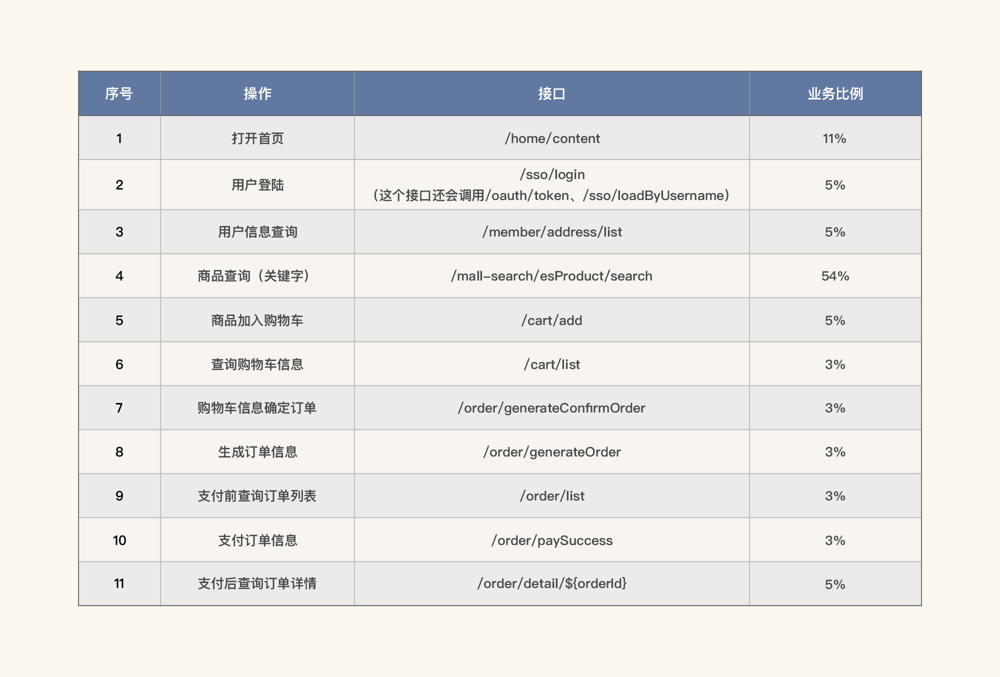
请你注意，这个模型并不是随便填写的，而是直接从生产环境中取得的业务比例。关于如何从生产中取出这样的业务比例，有很多种手段。这个并不复杂，通过统计日志就可以做到。
不过，在有些企业中，生产数据都在运维手里，性能团队怎么也得不到，因为没有权限，就连做业务模型的数据都没有。如果是这样的话，那性能项目是可以直接终止的，因为做了也没有多大的意义，最多也就是找那些瞎吹牛的架构师和乱写代码的开发人员，犯的一些错而已。
业务指标/性能指标
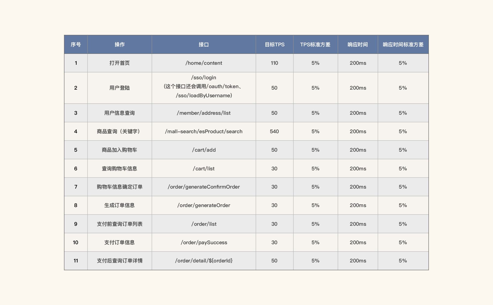
在不清楚项目目标TPS的情况下，我们暂定目标TPS为1000。为什么暂定1000呢？因为根据经验来说，在这样的硬件环境下，定为1000并不算高，除非是没有合理的软件架构。
系统架构图
系统技术栈
系统技术栈是让我们知道整个架构中用了哪些技术组件。而这些技术组件中有哪些常见的性能瓶颈点，有哪些性能参数，我们都可以在查看技术栈时得到一些相关信息。而在后续的工作中，我们也要整理出相应的关键性能参数配置。
下面这张表格，就是我们在后续课程的案例分析中，会用到的技术栈。我在搭建这个系统时，考虑的是尽量覆盖当前技术市场中的主流技术组件。
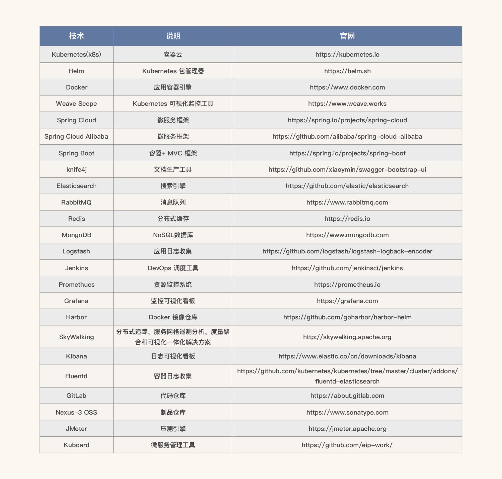
系统逻辑架构图
画系统的逻辑架构图是为了后续性能分析的时候，脑子里能有一个业务路径。我们在做性能分析时，要做响应时间的拆分，而只有了解了逻辑架构图才可以知道从哪里拆到哪里。
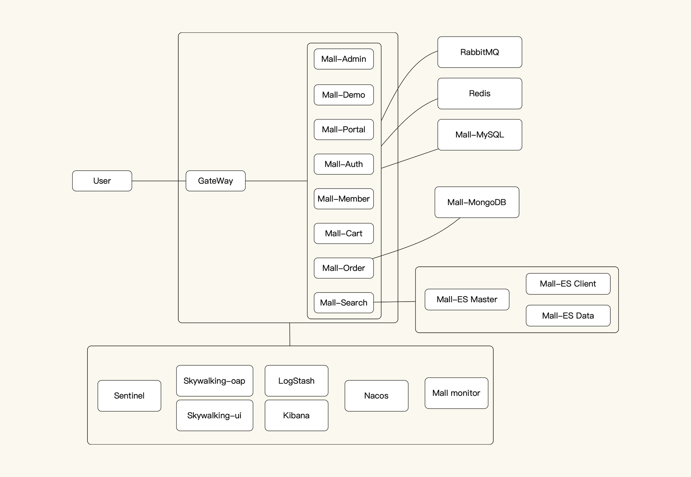
系统部署架构图
画部署架构图是为了让我们知道有多少节点、多少机器。在执行容量场景时，你的脑子里要有一个概念，就是这样的部署架构最大应该可以支持多少的容量上限。
此外，对一些无理的性能需求，你看了部署架构之后，其实就可以拒绝。比如说前段时间有个人跟我说，他们有一个CRM系统，在做性能的时候，说要达到1万的并发用户。而实际上，那个系统就算是上线了，总用户数可能都不到1万。
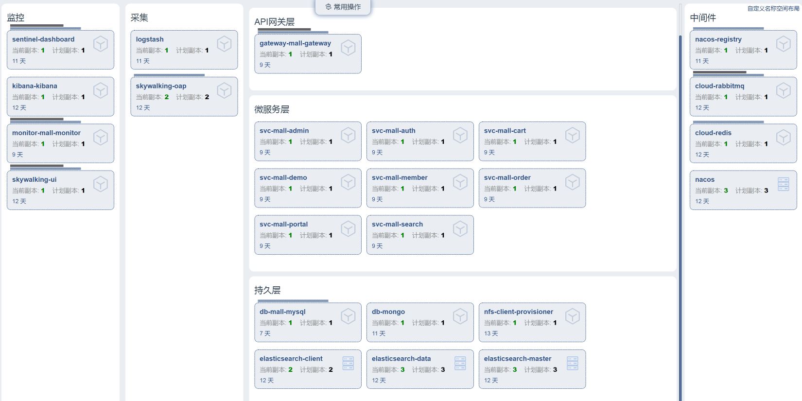
性能实施前提条件
硬件环境
通过对整体硬件资源的整理，我们可以根据经验知道容量大概能支持多少的业务量级，而不至于随便定无理的指标。比如说，当看到下面表格中这样的硬件配置，我想没有人会把指标定为10000TPS。因为即使是对于最基础的接口层来说，这样的硬件也支持不了这么大的TPS。
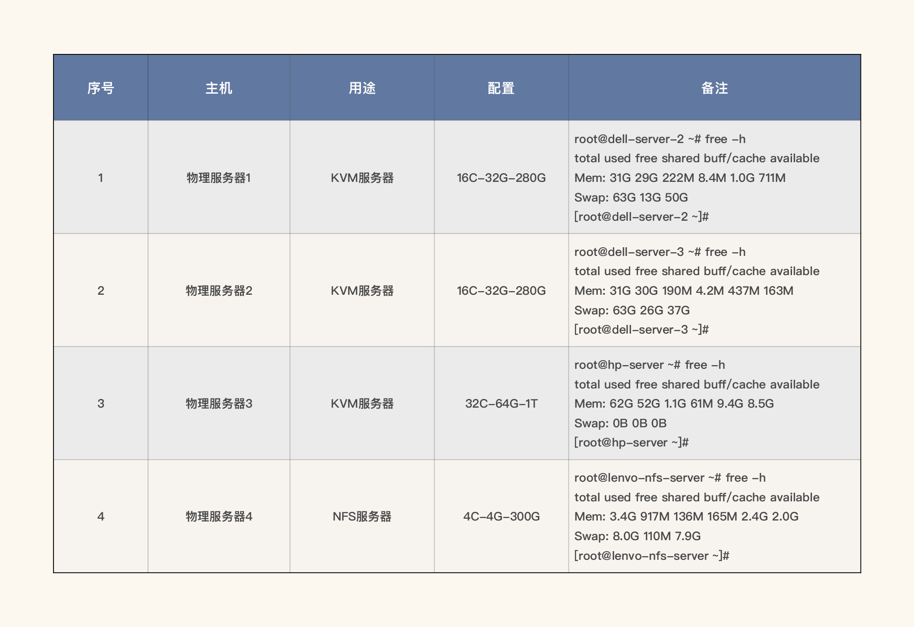
我们可以看到，当前服务器总共使用在应用中的资源是：64C的CPU资源，128G的内存资源。NFS服务器不用在应用中，故不计算在内。因为单台机器的硬件资源相对较多，所以在后续的工作中，我们可以将这些物理机化为虚拟机使用，以方便应用的管理。
在成本上，所有物理机加在一起大概8万左右的费用，这其中还包括交换机、机柜、网线等各类杂七杂八的费用。
我之所以会对硬件的成本进行一个说明，主要是因为在当前的性能行业中，很少有性能工程师去做成本的计算。我们说性能项目的目标是让线上的系统运行得更好，与此同时，我们也要知道使用了多少成本在运行业务系统。
在当前的性能行业中，有大量的线上主机处于高成本低使用率的状态当中，这是极大的资源浪费和成本消耗。我经常在性能项目中，看到一台256C512G的硬件服务器里，只运行了一个4G JVM的Tomcat，性能工程的价值完全没有在这样的项目中应用起来。
因此，我时常会痛心疾首地感慨性能行业的不景气：
企业中没有意识到性能的价值，觉得摆个高配置的硬件服务器，业务系统的性能就能好起来。其实完全不是这样。
性能市场从业人员完全没有把性能的价值，透明化地体现出来。并且很多性能人员自身的技术能力不足，这也让一个企业完全看不到性能本该有的价值。
鉴于此，作为性能从业人员，我们必须要了解硬件配置和整体业务容量之间的关系。
工具准备
测试工具
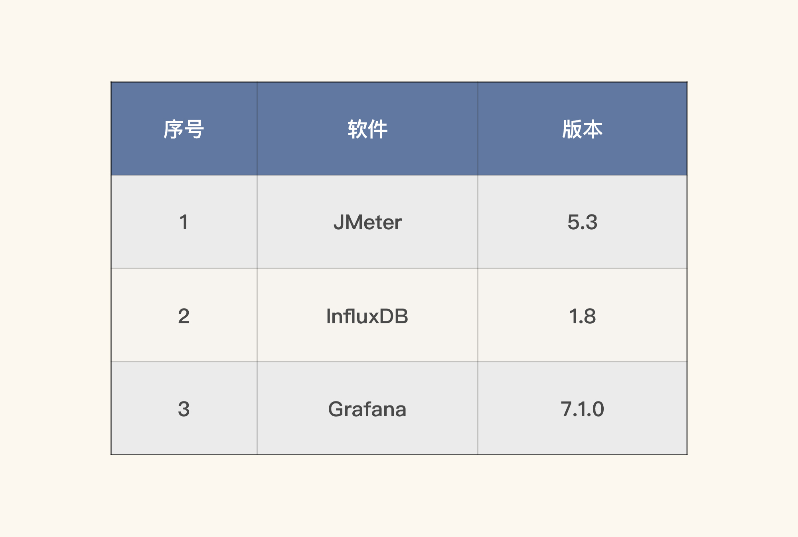
在测试过程中，我们将使用JMeter的backend Listener把数据直接发到InfluxDB中，然后再由Grafana来展现。我们不使用JMeter的分布式执行功能或本地收集数据的功能，因为这样会消耗本地的IO。
然而，现在还是有很多性能人员，仍然在项目中频繁地使用那些性能工具的低性能操作手段，同时还在不断抱怨性能这么差。对于这种现状，我希望你可以明白一点：我们要理智地使用工具，不要觉得一个性能测试工具拿起来就可以用。
监控工具
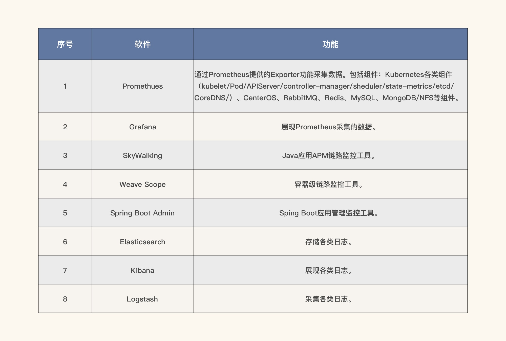
根据RESAR性能工程中的全局-定向的监控思路，我们在选择第一层监控工具时，要采集全量的全局计数器，采集的计数器包括各个层级，这里请参考前面的架构图。
但是，请你注意，在全局监控中，我们要尽量避免使用定向的监控手段，比如说java应用中的方法级监控、数据库中的SQL监控等。因为在项目开始之初，我们不能确定到底在哪个层面会出现问题，所以不适合使用定向监控思路。
那全局监控怎么来做才最合理呢？这里我们可以参考线上运维的监控手段。注意，我们在性能监控过程中，尽量不要自己臆想，随意搭建监控工具。
有时我们可能为了能监控得更多，会在测试环境中用很多监控手段。但实际上，线上运维时并不用那些手段，这就导致了监控对资源的消耗大于生产环境的资源消耗，我们也就得不到正常有效的结果。
前面我们提到在选择第一层监控工具时，需要采集全量的全局计数器。在我们采集好全局的计数器后，还需要分析并发现性能问题，然后再通过查找证据链的思路，来找性能瓶颈的根本原因。
数据准备
基础数据
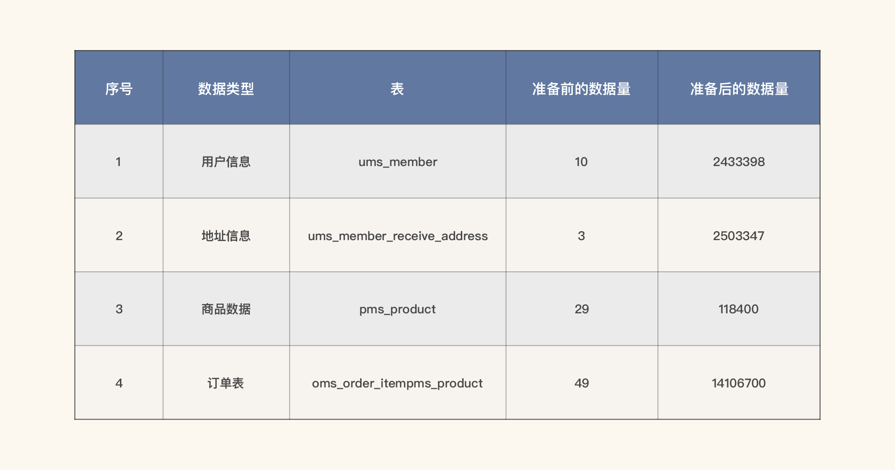
在性能工程中，我们一直强调基础数据要满足两个特性：
满足生产环境的真实数据分布：要想做到这一点，最合理的方式是脱敏生产数据。如果你要自己造数据的话，也一定要先分析业务逻辑。在我们这个系统中，我造了243万条用户数据和250万条地址数据。
参数化数据一定要使用基础数据来覆盖真实用户：一直以来，很多人都在使用少量数据做大压力，这种逻辑是完全不对的。在性能脚本中一定要用基础数据来做参数化，而用多少数据取决于性能场景的设计。
性能设计
场景执行策略
场景递增策略
对于性能场景，我一直在强调一个观点，那就是性能的场景必须满足两个条件：
- 连续
- 递增
所以在这次的执行过程中，我也会把这两点应用到下面的业务场景中。
你也许会问，如果不连续递增的话会有什么问题呢？比如说下面这样的图：
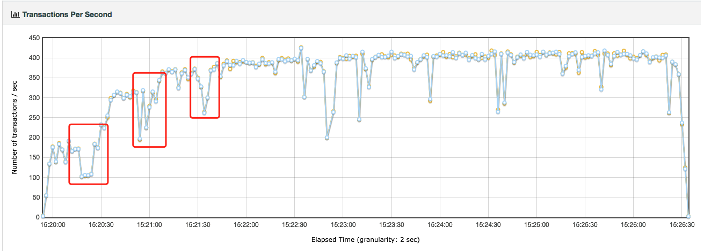
在图中画红框的地方，其实就是递增带来的性能问题表现。因为在递增过程中，被测系统的资源要动态分配。系统会不会在这个时候抖动，我们完全可以从这样的图中看出来，而这样的场景才是真实的线上场景。
如果不连续递增，就不会有图中红框这样的部分。当然了，要是不连续递增，也就不能模拟出线上的真实场景。
高老师画重点！敲黑板了！要模拟生产场景，连续递增一定要做到的，不容迟疑。
而在不同工具中，设置连续递增的方式是不同的。
LoadRunner设计如下：
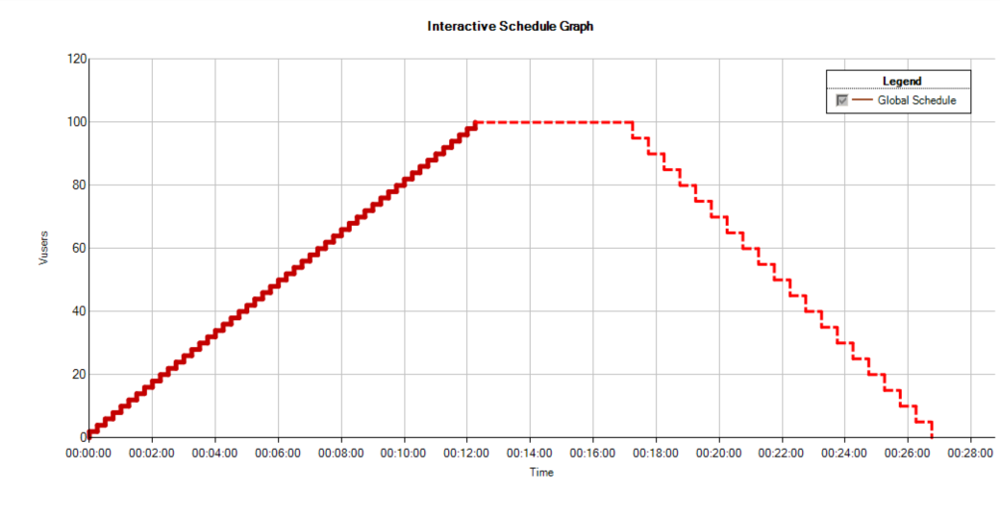
JMeter设计如下：
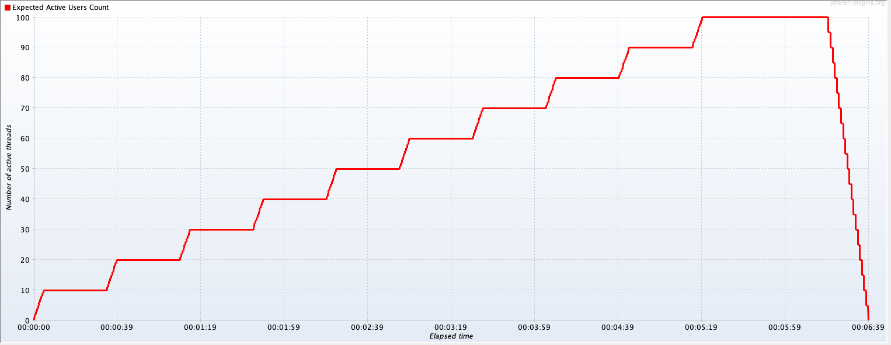
总之，请你记住，在设计场景中，我们一定要做到上面这种连续递增的样子。
业务场景
在RESAR性能工程中，性能场景只需要这四类即可：

执行顺序先后为：基准场景、容量场景、稳定性场景、异常场景。
请你注意，除了这四类性能场景外，再没有其他类型的场景了。在每一个场景分类中，我们都可以设计多个具体的场景来覆盖完整的业务。
下面我给你一一解释一下。
1. 基准场景
我经常看到有人说，用脚本加上三五个线程跑上多少次迭代，就算是基准场景了。你可以想想这样的场景意义何在？它仅能验证一下脚本和场景是正确的而已。所以，我不把这样的步骤称为基准场景。
在我的RESAR性能工程理念中，基准场景必须是容量场景的前奏。具体怎么做呢？那就是在基准场景中，我们也要通过递增连续的场景做到最大TPS。也就是说在基准场景中，我们要把单接口或单业务压到最大TPS，然后来分析单接口或单业务的瓶颈点在哪里。
可能你会问，在基准场景中有没有必要做调优的动作呢？
根据我的经验，应该先判断当前单接口或单业务的最大TPS，有没有超过目标TPS。如果超过，并且响应时间也在业务可接受的范围之内，那就不用调优。如果没有超过，那必须要做调优。
另外，根据RESAR性能工程理论，性能执行的第一阶段目标就是把资源用光，第二阶段的目标是将系统优化到满足业务容量。要知道，任何一个系统要调优都是无止境的，而我们的目标是要保证系统的正常运行。
因为在我们这个课程的示例项目中只有一个系统，所以，我们先做接口级的，然后把接口拼装成完整的业务量，并实现业务模型，然后再在容量场景中执行。在这里，我们将执行测试范围中接口的基准场景。
2. 容量场景
有了基准场景的结果之后，我们就进入了容量场景的阶段。在容量场景中，我们还是要继续秉承“连续、递增”的执行思路，最重要的是，要实现我们前面提到的业务模型，来真实模拟线上的业务场景。
我们可以经常看到，现在很多的性能项目里，大部分性能需求都提得不是很具体，从而导致性能场景的模型和生产场景不一致，这是一个严重的问题。
还有一个严重的问题是，即便业务模型和生产一致了，也会由于性能工程师在执行过程中没有严格模拟业务模型中的比例，性能场景的结果变得毫无意义。要知道，在执行过程中，响应时间会随着压力的增加而增加，我们仅用线程数来控制比例是非常不理智的，因为在执行的过程中会出现业务比例失衡。
那应该如何控制这个比例关系呢？如果你是用JMeter的话，可以使用Throughput Controller来控制业务比例，如下所示：
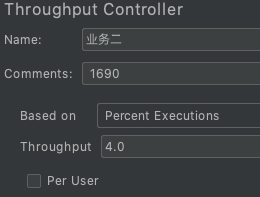
当然，你也可以用其他方式来实现。总之，在场景执行结束之后，我们要把业务比例做统计，并且要和业务比例对比，当比例一致时，才算是合理的场景。
在容量场景中，我们还有一个要确定的事情，就是什么是最大的TPS。
我想请你看一下这张图，你觉得最大的TPS是多少呢？
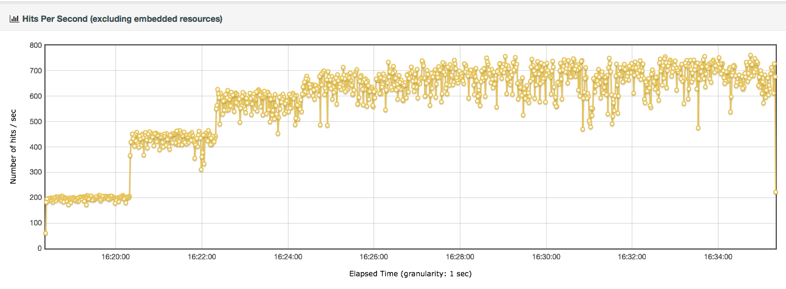
你是不是想说最大的TPS是700？
不管你给出的是不是这个答案，在我的性能理念中，我都想跟你强调一点：容量场景的最大TPS是指最大的稳定TPS。
那么你看，上面这张图已经抖动了，已经不稳定了，我们再去找它的最大TPS还有什么意义呢？你敢让一个生产系统运行在这样抖动的状态中吗？所以，对于上图中这样的TPS曲线，我会把最大的稳定TPS定为第三个阶梯，也就是在600左右，而不会定在700。
另外，也请你注意，在性能场景中，特别是在容量场景中，经常有人提到“性能拐点”这个词，并且把性能拐点称作是判断性能瓶颈的关键知识。对此，我先不做评判，我们来看一下什么是拐点，它在数学中的定义是这样的：
拐点，又称反曲点，在数学上指改变曲线向上或向下方向的点。直观地说，拐点是使切线穿越曲线的点（即连续曲线的凹弧与凸弧的分界点）。
那么在TPS曲线中，你真的能找到这样的点吗？反正我是找不到。就以我们上面那张图为例，图中哪里是拐点呢？也许有人会说这个曲线没有拐点。咳咳，那就没得聊了……
可见，性能拐点其实是一个在具体执行过程中非常有误导性的概念。请你以后尽量不要再用“性能拐点”这个词来尝试描述性能的曲线，除非你是真的看到了拐点。
3. 稳定性场景
在完成了容量场景之后，我们就要进入稳定性场景的阶段了。到现在为止，在性能的市场中，还没有人能给出一个稳定性场景应该运行多长时间的确切结论。我们知道根据业务属性不同，稳定性场景也有不同的设计思路，可是这样说起来未免有些空泛。所以，我在这里给出一个稳定性场景的运行指导思路。
在稳定性场景中，我们只有两个关键点：
第一个关键点：稳定性场景的时长。
关于稳定性场景的时间，我经常看到网上有人说一般运行两小时、7*24小时之类的话。可是，什么叫“一般”，什么又叫“不一般”呢？作为从业十几年的老鸟，我从来没有按照这样的逻辑执行过，也从来没有看到过这些运行时长的具体来源，只看到过很多以讹传讹的文章。
在性能领域中，这样的例子实在太多了，现在我也见怪不怪，毕竟保持本心做正确事情最为重要。下面我给你解释一下什么才是合理的稳定性场景时长。
我们知道，一个系统上线之后，运维人员肯定会做运维巡检，如果发现有问题就会去处理。有的系统是有固定的运维周期，比如说会设定固定的Job来做归档之类的动作；有的系统是根据巡检的结果做相应的动作。
而稳定性要做的就是保证在运维周期之内业务可以正常。 所以，在性能的稳定性场景中，我们要完全覆盖业务容量。比如说对于下面这张图：
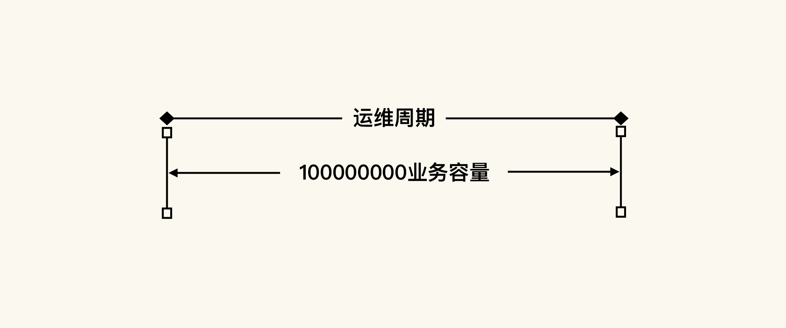
在运维周期内，有1亿笔业务容量。根据上面容量场景中的测试结果，假设最大稳定TPS是500，那稳定性场景的执行时长就是：
\[稳定性时长 = 100000000 \\div 500 \\div 3600 \\div 24 \\approx 2.3 (天)\]
通过这样的计算，我们就能知道稳定性场景应该跑多长时间，这也是唯一合理的方式。
第二个关键点：用多大的TPS来执行。
对此，我看到网上有人提到，用最大TPS的80%来运行稳定性场景。这里我不禁要问了，为什么？凭什么不能用最大的来运行呢？
记得我在做培训的时候，有过多次这样的讨论。有人说，之所以用最大TPS的80%，是因为在执行稳定性场景时不能给系统太大的压力，否则容易导致系统出现问题。
这种说法就奇怪了。既然容量场景都能得出最大的TPS，为什么稳定性就不能用呢？如果用最大的TPS执行稳定性场景会出现问题，那这些问题不正是我们希望测试出来的性能问题吗？为什么要用低TPS来避免性能问题的出现呢？
所以，用最大TPS的80%来做稳定性场景是一个错误的思路。
在我的性能理念中，在执行稳定性场景时，完全可以用最大的稳定TPS来运行，只要覆盖了运维周期之内的业务容量即可。如果你不用最大的稳定TPS来运行，而是用低TPS来运行，那也必须要覆盖运维周期之内的业务容量。
讲到这里，我觉得上述内容足以指导你做出正确合理的稳定性场景测试了。
4. 异常场景
对于异常场景，有些企业是把它放到非功能场景分类中的，这个我倒觉得无所谓。不管放在哪里都是要有人执行的。我之所以把异常场景放在性能部分，是因为这些异常场景需要在有压力的情况下执行。
对于常规的异常场景，我们经常做的就是：
宕主机；
宕网卡；
宕应用。
除此之外，在现在微服务盛行的时代，我们还有了新的招——宕容器。
当然，你也可以用一些所谓的“混沌工程“的工具来实现对容器的随机删除、网络丢包、模拟CPU高等操作，不过，这就是一个大话题了。在这后面的课程里，我会设计几个常用的异常性能场景来带你看下效果。
监控设计
全局监控
其实，有了前面的监控工具部分，监控设计就已经出现在写方案之人的脑子里了。对于我们这个课程所用的系统，全局监控如下所示：
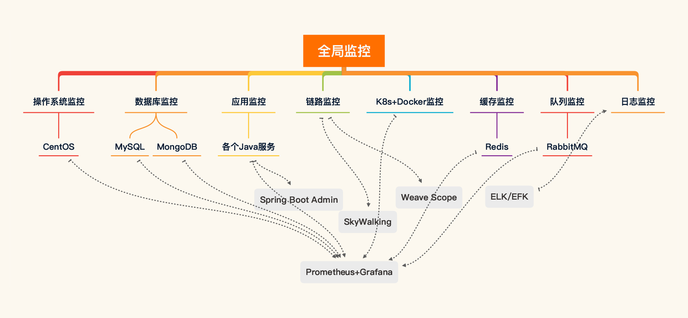
从上图来看，我们使用Prometheus/Grafana/Spring Boot Admin/SkyWalking/Weave Scope/ELK/EFK就可以实现具有全局视角的第一层监控。对工具中没有覆盖的第一层计数器，我们只能在执行场景时再执行命令来补充了。
定向监控
那后面的定向监控怎么办呢？在这里我也大体列一下常用的工具。不过，请你注意，这些工具是在有问题的时候才会去使用。
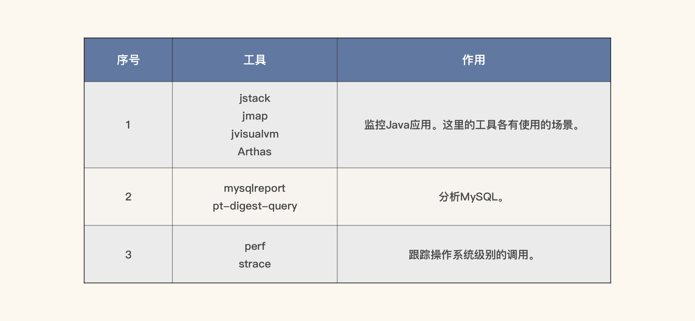
其实在性能分析中，除了表格中的这三个工具之外，还有很多工具会在查找性能瓶颈证据链时使用，我在这里无法全部罗列出来，只能根据系统使用到的技术组件，大概罗列一下我能想到的常用工具。在后续课程的操作中，如果你发现我们用了表格中没有列出的工具，也请你不要惊讶。
项目组织架构
在性能方案中，我们一定要画出项目的组织架构图，并且请你一定要在这部分写明各组织人员的工作范围和职责，避免出现扯皮的情况。我大体画一下常见的组织架构：
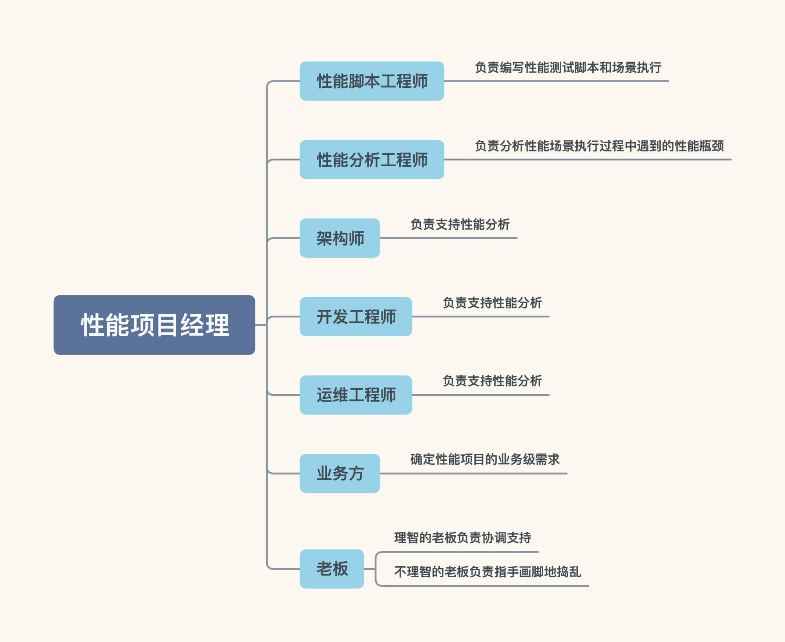
这是我按照事情来划分的，而非职场中的工作职位，我觉得这是一个合理的组织架构。在这张图中，性能脚本工程师所负责的事情，其实是现在大部分性能从业人员都在做，并且仅仅在做的事。至于性能分析工程师，在很多性能项目中几乎不存在，也没有这样的固定职位。其实，性能分析工程师很有必要存在。
此外，架构师、开发工程师、运维工程师都需要在支持性能分析的状态。请注意，我说的“支持”，并不是指站在旁边看着，而是在有了问题之后，要能具体地给出支持，而非推诿责任。
业务方是性能的业务需求来源，这是一定要有的。如果业务方提不出来什么合理的性能需求，那这个项目基本上会是稀碎的样子。
至于老板这个角色，在性能项目中，我经常看到的老板都不懂什么叫性能，只会叫着要支持XXX并发用户数，支持XXX在线用户数。其实，这样的老板沟通起来也很简单，就是拿结果给他就好了。不过，在性能项目的执行过程中，当资源不足时，请你一定要让老板知道，同时降低老板的预期，要不然在后续的沟通中会非常费劲。
成果输出
过程性输出
- 脚本
- 场景执行结果
- 监控结果
- 问题记录
在性能项目中，过程性输出有这些内容就够了，不用更多，当然，也不能更少了。我经常看到很多性能项目在执行完之后，除了有一份性能测试报告之外，什么过程性输出都没有。我实在不理解这样的企业是怎么积累性能经验的。所以，我还是要规劝你一句，在性能项目中，尽量多做一些归档整理的工作，以备在后面的项目中查阅，并实现自己的技术积累。
结果输出
通常情况下，在我做的性能项目中，都会输出两个最终交付的文档：一个是性能场景执行结果记录的报告（就是现在我们常写的性能测试报告），另一个是性能调优报告。
性能项目测试报告
性能项目测试报告想必大家见得多了，这里我只强调几点：
性能结果报告一定要有结论，而不是给出一堆“资源使用率是多少”、“TPS是多少”、“响应时间是多少”这种描述类的总结语。你想想，性能结果都在这个报告中了，谁还看不见怎么滴？还要你复述一遍吗？我们要给出“当前系统可支持XXX并发用户数，XXX在线用户数”这样的结论。
一定不要用“可能”、“或许”、“理应”这种模棱两可的词，否则就是在赤裸裸地耍流氓。
性能结果报告中要有对运维工作的建议，也就是要给出关键性能参数的配置建议，比如线程池、队列、超时等。
性能结果报告中要有对后续性能工作的建议。
性能调优报告
为什么我要强调单独写调优报告呢？因为调优报告才是整个性能项目的精华，调优报告中一定要记录下每一个性能问题的问题现象、分析过程、解决方案和解决效果。可以说，调优报告完全是一个团队技术能力的体现。
项目风险分析
对于性能项目的风险，我把比较常见的风险列在这里：
- 业务层的性能需求不明确
- 环境问题
- 数据问题
- 业务模型不准确
- 团队间协调沟通困难
- 瓶颈分析不到位，影响进度
- ……
在我们这个课程所用的项目中，比较大的风险就是：
- 硬件资源有限。
- 项目时间不可控，因为出了问题，并没有人支持，只能自己搞。
不过请你放心，我会努力克服困难，把这个项目的执行过程都记录下来。
到这里，整个性能项目实施方案就结束了。如果你认真看到了这里，那么恭喜你，你已经超越了很多人。我为你点赞！
总结
在这节课里，我把一个性能方案该有的内容以及要写到什么程度，都给你梳理了一遍。希望能给你一些借鉴。
性能方案是一个性能项目的重要输出。如果你是在项目中做快速迭代，可能并不需要写如此复杂并且重量级的文档。因为文档里描述的很多工作都已经做过了，你可能只需要跟着版本去做迭代比对就好了。
但对于一个完整的项目来说，性能方案就显得极为重要。因为它指导了这个项目的整个过程。在性能方案中，我们强调了几个重点：业务模型、性能指标、系统架构图、场景设计、监控设计等，它们都会对整个项目的质量起到关键作用。
最后，我希望你可以在后续的项目中，尝试去写一个完整的性能方案。
课后作业
学完这节课，请你思考两个问题：
- 如何精确模拟业务模型？
- 为什么我们要强调系统架构图的重要性？
欢迎你在留言区与我交流讨论。当然了，你也可以把这节课分享给你身边的朋友，他们的一些想法或许会让你有更大的收获。我们下节课见！
关于课程读者群
点击课程详情页的链接，扫描二维码，就可以加入我们这个课程的读者群哦，希望这里的交流与思维碰撞能帮助你取得更大的进步，期待你的到来～
06 如何抽取出符合真实业务场景的业务模型？
你好，我是高楼。
我们知道，业务模型一直是性能项目中很重要的环节。在容量场景中，每个业务比例都要符合真实业务场景的比例。如果不符合，那场景的执行结果也就没有意义了。
但是，我们经常可以看到，很多性能从业人员因为对业务模型的抽取过程不够了解，或者是拿不到具体的数据，导致业务模型和生产业务场景不匹配，进而整个性能项目都变得毫无意义。
也有大量的项目，并没有拿历史业务数据做统计，直接非常笼统地拍脑袋，给出相应的业务模型，这样显然也是不合理的。可是，这种情况在金融、互联网等行业中十分常见。
当然，也有人为了让业务模型和真实业务场景尽可能匹配，会直接拿生产环境的请求进行回放。可是，即便我们拿生产环境的请求录制回放了，也不能保证业务模型和未来的业务场景一致，因为未来的业务场景会随着业务推广而变化。
所以说，我们在做场景时首先要明白，当前的场景是要模拟历史业务场景，还是未来业务场景。
如果是未来的业务场景，那就要靠业务团队给出评估，而非性能团队。不过，在当前的性能市场中，经常有企业要求性能团队给出业务模型，这显然是不理智的。首先，性能团队的业务背景不如业务团队更熟悉；其次，他们对业务市场的把握也不够专业。
其实，在真实的工作场景中，业务模型的确认从来都不应该由一个团队来做，而应该由业务团队、架构团队、开发团队、运维团队和性能团队共同确定，并最终由项目的最上层领导确认。
如果一个系统有历史业务数据，那我们获得业务模型就有背景数据了。这时候，性能团队应该从历史业务数据中抽取出各场景的业务模型。如果系统没有历史数据，那就应该像对未来业务模型评估一样，需要各团队协作给出当前的业务模型。
正是基于我们前面提到的各种问题，经常有性能从业人员问我，我们应该如何从历史业务数据中抽取出业务模型？可能你也有这样的困惑，下面我们就来详细地说一说，同时我会借助实例为你展示一个具体的过程。
大体上来说，抽取真实业务模型有两个大步骤：
- 抽取生产业务日志。这一步可以通过很多种手段来实现。这节课我给你展示两种比较常见的手段。一种是当没有日志统计系统时，使用awk命令来抽取；另一种是使用ELFK来抽取。
- 梳理业务逻辑。
对于第一步而言，我们抽取生产业务日志是为了得到对应的业务比例。下面我们先来看看怎么用命令抽取生产业务日志。
使用命令抽取生产业务日志
这里我以少量的Nginx日志举例。在Nginx中，日志格式通常如下所示：
120.220.184.157 - - [26/Oct/2020:14:13:05 +0800] "GET /shopping/static/skin/green/green.css HTTP/1.1" 200 4448 0.004 0.004 "https://www.xxx.cn/shopping/" "Mozilla/5.0 (Windows NT 6.1; WOW64) AppleWebKit/537.36 (KHTML, like Gecko) Chrome/45.0.2454.101 Safari/537.36" "124.127.161.254"
120.220.184.203 - - [26/Oct/2020:14:13:05 +0800] "GET /shopping/static/js/manifest.0e5e4fd8f66f2b389f6a.js HTTP/1.1" 200 2019 0.003 0.003 "https://www.xxx.cn/shopping/" "Mozilla/5.0 (Windows NT 6.1; WOW64) AppleWebKit/537.36 (KHTML, like Gecko) Chrome/45.0.2454.101 Safari/537.36" "124.127.161.254"
120.220.184.149 - - [26/Oct/2020:14:13:05 +0800] "GET /shopping/static/js/app.cadc2ee9c15a5c1b9eb4.js HTTP/1.1" 200 138296 0.100 0.005 "https://www.xxx.cn/shopping/" "Mozilla/5.0 (Windows NT 6.1; WOW64) AppleWebKit/537.36 (KHTML, like Gecko) Chrome/45.0.2454.101 Safari/537.36" "124.127.161.254"
以上数据内容及顺序可以在Nginx配置文件中配置。我们的目标是抽取其中某个时间内的每秒的访问量，所以，我们只需要把对应的时间取出来统计一下即可，命令如下：
cat 20201026141300.nginx.log|awk '{print $4}' |uniq -c
我们得出下面的结果：
5 [26/Oct/2020:14:13:05
3 [26/Oct/2020:14:13:06
14 [26/Oct/2020:14:13:07
4 [26/Oct/2020:14:13:08
1 [26/Oct/2020:14:13:09
2 [26/Oct/2020:14:13:10
1 [26/Oct/2020:14:13:12
2 [26/Oct/2020:14:13:20
14 [26/Oct/2020:14:13:23
1 [26/Oct/2020:14:13:24
2 [26/Oct/2020:14:13:26
2 [26/Oct/2020:14:13:29
9 [26/Oct/2020:14:13:30
9 [26/Oct/2020:14:13:31
1 [26/Oct/2020:14:13:32
13 [26/Oct/2020:14:13:35
2 [26/Oct/2020:14:13:37
20 [26/Oct/2020:14:13:38
2 [26/Oct/2020:14:13:39
33 [26/Oct/2020:14:13:44
17 [26/Oct/2020:14:13:46
5 [26/Oct/2020:14:13:47
23 [26/Oct/2020:14:13:48
29 [26/Oct/2020:14:13:49
4 [26/Oct/2020:14:13:50
29 [26/Oct/2020:14:13:51
26 [26/Oct/2020:14:13:52
22 [26/Oct/2020:14:13:53
57 [26/Oct/2020:14:13:59
1 [26/Oct/2020:14:14:02
这样就可以知道哪段时间里的访问量最高了。这里我们其实可以灵活运用，如果你只想取到分钟、某小时、某天都可以做相应的命令调整。例如，我们想取到分钟级，只要加上相应的截取命令就可以了，如下所示：
cat 20201026141300.nginx.log|awk '{print $4}' |cut -c 2-18|uniq -c
对应的结果如下：
352 26/Oct/2020:14:13
1 26/Oct/2020:14:14
上述结果的意思是，在我这个日志中有两分钟内的数据，第一分钟中有352个请求，第二分钟中只有一个请求。
如果你想请求URL来做统计，那么就可以修改命令：
cat 20201026141300.nginx.log|awk '{print $7}' |cut -c 1-50|uniq -c
结果如下：
................
1 /shopping/checkLogin
1 /shopping/home/floor
1 /sso/loginOut
1 /shopping/home/navigation
6 /shopping/home/floor
2 /shopping/home/floorGoods
1 /shopping/home/sysConfig
4 /shopping/home/floorGoods
1 /shopping/home/floor
1 /sso/loginOut
................
此时我们取日志中的第七个数据，然后截取统计。这样我们就可以知道，每个时间段内每个请求的数量，也就可以得到相应的业务比例了。
上面这些命令你只要灵活运用，处理数据量不太大的文件是没什么问题的。
使用ELFK抽取生产业务日志
如果你想使用ELFK抽取日志，具体可以按如下步骤来做：
- 安装ELFK。这里的ELFK是指ElasticSearch/Logstash/FileBeat/Kibana的组合。具体安装方法可以搜索一下，网上的教程多如牛毛。
- 配置好ELFK后，在Kibana的Discover界面就能看到收集的信息。注意，一条日志对应的就是一次命中。
- 通过选择时间段就可以看到有多少请求在这个时间段内。
- 要想得到接口请求的百分比，可以点击“Dashboard”中的“可视化”，创建一个Lens可视化面板，选择相应的URL字段就可以看到各个接口的百分比了。
总体来说，用ELFK抽取生产日志得到业务模型，可以分为两个阶段。
第一个阶段是统计大时间段的日志信息，然后逐渐缩小范围，比如说按年、月、天、时、分的顺序。这一步是为了将系统的峰值请求覆盖住。
第二个阶段是细化所选择的时间段。虽然我们在第一个阶段已经把时间段细化到分了，但由于我们的场景得到的结果是按秒来统计TPS的，所以我们要再细化到生产环境的TPS级别。这样就可以把生产的业务场景和测试中的场景进行对比了。
下面我通过实例给你详细讲一讲这两个阶段。
第一个阶段：统计大时间段的日志。
在查看ELFK中的数据时，建议你尽可能选择覆盖全部业务场景的时间段。比如说，我们要选择峰值时间段，一开始要选择时间段的范围设置大一些，这样才不会漏掉数据。然后再通过柱状图的高低做范围缩小。
通过这样的操作就可以知道生产环境中各业务接口的总体百分比了。
其实，实时将相应的日志输出到ELFK中，是很多企业对日志处理的常用方法。这样不仅可以实现对日志的灵活查找，也可以实现对日志的长时间存储，并且也可以做更多的后续处理，生成可视化图形之类的。在这里，我们来实际操作一下。
如上图所示，我们在Kibana中截取了一段时间的日志，这段日志总共有6,624,578次请求。你可以用Kibana直接生成下面这样的表格视图：
这样你就可以知道哪些请求比较靠前。为什么我没有显示总数呢？因为在一段时间之内的每个请求，我们要生成相应的柱状图，如果看到它们的集中时间段是相同的，那就做一个场景即可；如果不同，则要做多个场景。下面我们来搜索一下。
/mall-member/sso/login-
/mall-portal/home/content
- /mall-member/member/address/list
其他接口的图类似，我就不一一列了。
看图上的数据时间点，在我这个例子中，所有的请求量级的时间点都是相同的，所以我们只需要做一个场景即可全部覆盖。请你务必要注意，在你的实际项目中，并不见得会是这样。如果出现某个请求的高并发时间点和其他的请求不在同一时间点，就一定要做多个场景来模拟，因为场景中的业务模型会发生变化。
在我这个示例中，我们把数据量也列在表格中，同时求出比例关系，也就是拿某请求的数量除以总请求数，如下所示：
这是在这一个时间段的业务平均比例。
通过第一阶段，我们已经可以知道哪个时间段的请求高了。但是这个时间段范围是5分钟，这对于任何一个系统来说，都算是比较集中的时间段了。但是我们的动作还没有结束，因为我们不仅要知道哪一段的用户操作比较集中，还要知道的是生产上能达到的TPS有多高。所以还需要细化，只有细化了我们才能知道具体生产的TPS。
第二个阶段：细化时间段
通过主面图中的Timestamp，可以看到是时间间隔是5分钟，我们选择最高请求的时间段，点进去。
这样我们就得到时间间隔为5秒的图了：
然后按命中次数来计算TPS，就可以得到如下结果：
\(生产TPS = 9278 \\div 5 = 1,855.6\)
当然了，你还可以再细化，得到毫秒级的图：
通过这种方式，我们就可以得知一个系统在生产环境中的峰值的TPS有多大。1855.6这个值是我们要定的测试环境中总的TPS。如果达不到这个值，那就要接着优化，或者增加硬件资源。
通常情况下，得到总TPS之后，我们要根据测试目标，分三种方式处理这个总TPS，而这三种方式都是以业务目标为前提的。
- 业务无变化，应用版本有小变化（通常只是小的功能变化或修改Bug）：在这种情况下，我们只要将计算出来的TPS做为性能场景总的TPS指标即可。
- 业务无变化，应用版本有大变化（比如说架构变更）：在这种情况下，我们只要将计算出来的TPS做为性能场景总的TPS指标即可。
- 业务有变化，应用版本有大变化：在这种情况下，我们要根据业务估算的增量来做相应的TPS增量计算。如果根据业务变化趋势预估会增加20%，那你就可以在上面计算的总TPS的基础上，再加上对应的20%即可。
梳理业务逻辑
在上面的接口得到业务模型之后，我们就可以根据接口的量级梳理业务逻辑，以便更真实地模拟生产业务场景。其实在上面的步骤中，我们已经按顺序做了排列，你可以看一下前面的表格。
所以在这个示例中，大概有58%的用户会完整地走完流程。为什么是58%呢？因为登录的业务比例是12%，而后面下单比例是7%。所以是：- \( 7\\%\\div12\\% \\approx 58\\% \)
整体流程说明
最后我们来梳理一下整体的流程：
请注意，上面的业务场景在实际的项目业务统计过程中可以有多个。这个思路可以解决任何性能场景和生产场景不一致的问题。
总结
最后，我们再一起回顾下这一讲的重点内容。在业务模型抽取时我们要注意几个关键点：
- 抽取时间：抽取时间一定要能覆盖生产系统的峰值时间点；
- 抽取范围：抽取的范围要足够大，因为在一些场景中，即便不是峰值，但由于某个业务量较大，也会出现资源消耗大的情况；
- 业务比例在场景中的实现：得到业务模型之后，我们在性能场景中一定要配置出对应的业务比例，不能有大的偏差。
只要做到以上几点，性能场景基本上就不会和真实业务场景有大的差异了。
课后作业
学完这节课后，请你认真思考两个问题：
- 为什么性能场景中要模拟出真实业务比例？
- 抽取生产数据并最终得到业务模型的步骤是什么？
欢迎你在留言区与我交流讨论。当然了，你也可以把这节课分享给你身边的朋友，他们的一些想法或许会让你有更大的收获。我们下节课见！
关于课程读者群
点击课程详情页的链接，扫描二维码，就可以加入我们这个课程的读者群哦，希望这里的交流与思维碰撞能帮助你取得更大的进步，期待你的到来～
07 性能场景的数据到底应该做成什么样子？
你好，我是高楼。
在性能项目中，性能数据是非常重要的输入资源。但是我经常看到有人拿着少得可怜的数据，来做比较大的压力，这显然不符合真实的场景，虽然拿到的结果很好看，但并不会得到什么有价值的结果。所以，今天我们就来讲一下性能场景中的数据到底应该做成什么样子。
在RESAR性能工程中，场景里使用的数据需要满足两个方面：
- 第一，数据要符合真实环境中的数据分布，因为只有这样，我们才能模拟出相应的IO操作；
- 第二，要符合真实用户输入的数据，以真正模拟出真实环境中的用户操作。
而这两个方面分别对应着两类数据：铺底数据和参数化数据。我们先来看铺底数据。
铺底数据
在通常的线上系统架构中，系统中用到的数据分为两部分：静态数据（图中红色点）和动态数据（图中绿色点），这也是我们在性能场景中需要存入的铺底数据。-
从这个简单的结构图中不难看出，如果没有铺底数据，那就相当于是一个空系统。但是在生产环境中，这个系统肯定不会是空的，所以要有足够的数据在里面。如果数据不真实，我们就无法模拟出生产上有真实数据的场景，比如应用的内存占用、数据库IO能力、网络吞吐能力等。
其中，对于静态数据而言，我们最容易出现的问题是，一想到它占的网络带宽大，就觉得要用CDN了 ；或者是觉得不模拟静态数据，就是不符合真实场景，不支持我们的优化结果了。其实，数据放在哪里，怎么做最合理，怎么做成本最低，这些都需要综合考虑，并不是一味跟风，别人怎么做我们就要怎么做。
我曾经看到有的官方门户网站明明没几个流量，却在做技术规划的时候，非要把零星的几个图片放到CDN上去，以显示自己设计的架构有多先进。
我也经常看到一些企业认为网站上的图片很重要，出于不懂技术又要寻找安全感的逻辑，非要把图片都放到自己的服务器里。本来图片就很大，一张有3～4M，用户一访问，自然就会吵吵着慢。
像这两种极端都不可取。要知道，当外行指使内行干活的时候，基本上没什么好结果，因为有些外行觉得只要压力发起就可以了，在细节上根本不在乎结果会怎么样。在我看来，处理这样问题的最合理的方式是先分析业务逻辑，再判断技术架构怎么实现。
我们知道，静态数据通常有两个可以存放的地方，一个是服务端的Web层，另一个是CDN。对于大系统而言，流量大，网络带宽自然就要求得多。在这种情况下，数据必然要放CDN，你也没有其他选择（当然了，你可以选择不同的CDN厂商）。
对于一些小的业务系统，由于用的人并不多，整体网络流量要求也少，那我们就可以把静态数据直接放到负载均衡服务器（比如Nginx）或应用服务器中去。用户访问一次之后，后续的访问直接走本地缓存就可以了，对系统的压力也不会产生多大的影响。
静态数据讲完了，我们再来看动态数据，这就需要我们好好分析一下了，因为有些动态数据是可以放到CDN中的。
还是前面那张图，在我们不用任何预热加载的情况下，这些动态数据都是存放在数据库中的。当我们使用预热加载时，这些数据就会转到缓存中去（当然，这也取决于架构设计和代码实现），变成下图中这样：
所以按照这样的逻辑，真实场景中业务操作的数据量实际有多少，我们就要模拟出多少，不然会出现一些问题。当模拟数据量与实际数据量差别较大时，会对数据库、缓存等造成不同的影响。下面我列出了五点，为你具体分析一下。
- 对数据库压力的区别
假设线上系统中有100万的用户量，而我们在做压力测试时，由于没有生产数据，造数据又比较麻烦，所以就直接使用1000条甚至更低的用户量来做性能场景。那一个表里有100万条数据和1000条数据的差别是什么呢？我们来实际操作一下。
在这里，有一个前提条件：同样的硬件环境，同样的数据库，同样的表结构，同样的索引，只是两张表的数据不同。
两条SQL如下：
select * from ob_tuning.temp1_1000 where id = '3959805';
select * from ob_tuning.temp2_100w where id = '3959805';
因为表内的数据量不同，所以结果如下：
可以看到，查询时间一个是19ms，一个是732ms。我们不妨再来看一下表的操作细节。
第一个表（用户量为1000）的操作细节：
第二个表（用户量为100万）的操作细节：
这里我们只需要对比“executing”这一行就能看到明显的差距，它告诉我们当执行这个语句时，需要的CPU时间明显因为数据量的增加而增加了。所以我们不难发现，如果你没有足够的铺底数据放在性能场景中，那一开始便注定了悲剧的结果。
- 缓存的区别
数据量的多少在缓存中有很明显的区别，如下图所示：
也就是说，场景中用的数据量越多，缓存必然要求越大。
- 压力工具使用的区别
压力工具中使用的数据多少，不仅影响着压力工具本身需要的内存，同时也影响着性能场景的执行结果。这一点，我们会在后面的课程中详细讲到。
- 网络的区别
其实不同的数据量，不管是走缓存，还是数据库，对客户端和服务器之间的网络消耗都是差不多的。只要不是缓存在客户那边，都是要走到服务器里转一圈的。所以我们认为，数据量是多还是少，对客户端和服务器之间的网络的压力没有什么区别。如果你用的是CDN，那可以做另外的考虑。
- 应用的区别
如果不是在应用中直接缓存数据，我们也认为对应用没什么区别，反正不管是什么样的请求过来，都是要到缓存或数据库中去取数据的，应用的Self Time不会有什么差别，方法依旧要执行。但是，如果你的应用是直接在应用的缓存中存数据的，那就有区别了，同样也是数据量越大，对内存的要求就越大。
基于以上几点，我们可以看到有两个比较重要的环节：数据库和缓存，这是直接的影响。
那间接的影响有什么呢？比如说，数据在数据库中执行得慢了，在同步调用的应用中必然需要更多的应用线程来处理。
我们假设有一个100TPS的系统，先忽略其他时间，只看数据库时间。如果数据库执行需要10ms，那应用只需要一个线程就能处理完了。如果数据库需要100ms，而我们仍然想达到100TPS，那应用就得有10个线程来同时处理。
与此同时，整个链路上的所有线程、队列、超时等都会因为受到数据量的影响而产生大的变化。所以，我们要想模拟出生产时候的样子，在铺底数据上一定不能含糊。
参数化数据
有了前面铺底数据的分析，我们在做参数化的时候就会明确很多。不过，在场景中应该用多少量的数据，是性能场景中最容易出问题的一个环节。
参数化数据量应该是多少，取决于场景运行多长时间。而在场景运行中，我们通常要用到两类数据：唯一性数据和可重复使用的数据。
对于唯一性数据（比如用户数据）来说，我们需要使用多少参数化数据是非常容易计算的。比如一个运行半小时的场景，TPS如果是100的话，那就需要18万的数据量，计算过程如下：
\(数据量 = 30min \\times 60s \\times 100TPS = 18w\)
对于可重复使用的数据量，我们需要分析真实业务场景中是如何重复的，比如说电商系统中商品的数据量，我们在做参数化的时候就可以重复，毕竟多个人是可以同时购买同一个商品的。我们假设平均有1000个用户在10个商品中，那当我们有18万个用户时，就需要1800个商品：
\(商品数量 = 18w用户 \\div 1000用户 \\times 10 商品 = 1800 商品\)
上述就是唯一性数据量和可重复使用数据量的计算方式。
你可能会问，如果参数化数据量太大，在压力工具中处理不了怎么办？比如说我们在用JMeter处理文件参数化数据时，如果参数化文件太长，会导致JMeter消耗更多的时间。其实像这种参数化数据量要求多的情况，我们可以采用连接远程缓存（比如Redis）或数据库（比如MySQL）的方式来做参数化。
- 连接Redis做参数化
方法一：直接在JMeter中写Beanshell连接Redis取数据。
import redis.clients.jedis.Jedis;
//连接本地的 Redis 服务
Jedis jedis = new Jedis("172.16.106.130",30379);
log.info("服务正在运行: "+jedis.ping());
String key = vars.get("username");
String value = vars.get("token");
vars.put("tokenredis",jedis.get(key));
方法二：使用Redis Data Set组件。
这两种方式都可以用Redis做参数化的数据源。
- 连接MySQL做参数化
第一步：创建一个JDBC Connection Configuration。
同时，配置好连接信息，比如用户名密码等：-
第二步：创建一个JDBC Request。
用JDBC Request把数据取回来：
第三步：用${user_name}引用参数。
完成上述三步，我们就实现了用数据库的方式做参数化。
知道了RESAR性能工程中需要什么样的数据后，我们接下来聊一下如何造数据。
如何造数据？
因为我们这个项目中的电商平台是开源的，数据库也完全是空的，系统中没有任何的数据。所以，我们虽然只是实现了电商的主流程，但需要的数据量仍然不少。这些数据包括：
- 用户数据；
- 地址数据；
- 商品数据；
- 订单数据。
下面我们具体考虑一下数据量应该怎么设置。
根据我们第5讲中的性能方案，登录TPS如果是每秒150，并且如果按容量场景的需求，在场景连续递增时，大概在20分钟内（这是一个经验值，在具体的场景执行中也会有变化）会递增到最大值，然后再执行10分钟，也就是说总时间大概为30分钟。
但是因为场景是递增的，一开始我们并没有要求达到150TPS，同时登录场景TPS最大值能达到多少，我们现在也没法预知。根据经验来看的话，登录的TPS在当前的硬件环境中，就算是不走缓存，达到三、四百应该是没有多大问题的。
如果按最大400TPS来算，跑半个小时，需要的数据量就是54万，而我们造出来的用户量要远远大于这个量级。这里我们就先造200万的用户量，因为地址的数据量肯定大于用户的数据量，所以会多于200万。
我们先查一下当前的数据库中有多少数据量，再确定要造多少数据。
这个数据量级明显是不够的，太少了。下面我们来看看怎么造出那么多的数据量。
我们造的数据主要分为两种：用户数据和订单数据。
- 登陆用户
对于登陆用户数据而言，我们要先了解表结构，因为造出来的数据只有符合业务逻辑才能使用。我们先看一下用户表结构和数据。
用户表：
-
地址表：
-
根据我的经验，造数据时不要往数据库里直接写存储过程插数据，除非你非常清楚表之间的关系，并且存储过程又写得非常溜。否则你会把数据库弄得一团乱，最后不得不在数据库的表里改数据，这是非常被动的做法。在这里，我推荐你使用接口直接调用来造数据，这个操作比较简单，也比较安全。
如果你想用代码来造数据，那就需要做下面这些分析。
在这里，我们的用户表和地址表之间是有对应关系的，你可以通过下面这段代码查看到，地址表中的MemberID就是用户ID号。
@Override
public int add(UmsMemberReceiveAddress address) {
UmsMember currentMember = memberService.getCurrentMember();
address.setMemberId(currentMember.getId());
return addressMapper.insert(address);
}
其实造用户数据就是实现注册流程。你可以先分析下用户注册的代码，直接把其中的注册代码部分拿过来用就行了。具体调用代码如下：
看到这里，你可能会想，造数据需要关心注册流程吗？其实如果我们是调接口造数据，就不需要；但如果写代码开启了多线程来造数据，我们就需要了解接口之间的调用关系了。
下面我们截出中间一部分来分析它们的调用关系：
因为注册用户表中的密码都是加密的，所以我们可以通过注册用户实现类代码，如下:
@Override
public void register(String username, String password, String telephone, String authCode) {
...............................
//获取默认会员等级并设置
UmsMemberLevelExample levelExample = new UmsMemberLevelExample();
levelExample.createCriteria().andDefaultStatusEqualTo(1) ;
List<UmsMemberLevel> memberLevelList = memberLevelMapper.selectByExample(levelExample);
if (!CollectionUtils.isEmpty(memberLevelList)) {
umsMember.setMemberLevelId(memberLevelList.get(0).getId());
}
//插入用户
memberMapper.insert(umsMember);
umsMember.setPassword(null);
}
了解了上面的内容之后，我们就可以直接写一段代码来造用户数据了，具体请见：《造用户代码.java》
有了用户数据，我们还需要下单用户的地址等详细信息，只有这样才能完成下单。所以，接下来我们就开始分析怎么造出可以下单的地址数据。
- 用户地址
首先，我们要根据用户地址资源路径找到Controller层，查看用户地址的代码调用关系，如下：
然后找到用户地址的关键代码：
@Override
public int add(UmsMemberReceiveAddress address) {
UmsMember currentMember = memberService.getCurrentMember();
address.setMemberId(currentMember.getId());
//插入地址
return addressMapper.insert(address);
}
从这段代码中，我们可以观察到这几个信息：
- 调用地址接口需要用户登陆态，通过登陆态来解析用户ID号；
- 用户ID号是地址代码中的MemberID号；
- 用户ID号是自增加。
具体参考请见《造用户地址代码.java》。
通过上面的代码编写，然后再开启Java线程池与多线程，我们就可以把基础数据快速造完了。下面是造用户地址数据的时间记录（每台电脑配置不一样，用的数据也许会有差异）：
通过以上手段，我们最后造出如下数据量：
表中的订单数据会在做基准场景时补充上去。等这些数据量都有了，我们在容量场景中就有了足够的铺底数据。
总结
在这节课里，我们一起学习了性能场景中的数据到底应该做成什么样子。对于造数据而言，方法有很多，我们不用拘泥于某种造数据的手段，只要能快速造出足够的数据量就好。在RESAR性能工程中，性能场景需要两类数据：铺底数据和参数化数据。其中，铺底数据需要满足这三个条件：
- 一定要造出符合生产量级的数据量；
- 数据量要真实模拟出生产的数据分布；
- 数据要真实可用。
参数化数据需要满足这两个条件：
- 参数化数据量要足够；
- 要符合真实用户的输入数据。
有了以上这些知识，我们就不会在造数据时出现混乱的情况了。
课后作业
这就是今天的全部内容，最后给你留两个思考题吧：
- 为什么要造出符合生产量级的数据量？
- 为什么参数化时要用符合真实用户的输入数据？
记得在留言区和我讨论、交流你的想法，每一次思考都会让你更进一步。
如果这节课让你有所收获，也欢迎你分享给你的朋友，共同学习进步。我们下一讲再见！
08 并发、在线和TPS到底是什么关系？
你好，我是高楼。
在性能领域中，我们经常用“并发用户数”来判断一个系统是否达到性能需求，比如说用“系统支持1000用户”这样的描述来说明性能需求。但是并发是怎么个并发法？它和TPS之间是什么关系？并发用户数和在线用户数又是什么关系呢？
这样的问题长期以来困扰着性能工程师们。不管是网上看到的文章或者是各个群里的讨论，我们都能听到不同的声音。所以，我即便是冒着引起争论的危险，也要写一下这个问题。
典型的争论
有一天，有个小伙跟我说，他和同事们看到我上一个专栏《性能测试实战30讲》中的文章后，在公司会议室吵翻了天，有一个同事还把微积分都搬出来了。我很高兴听到这样的争论，就像战国时期的稷下学宫一样，不争论，哪有那么辉煌的文明高峰呢。
他们的争论点是这样的：有一个项目，性能目标是对一个底层是Kubernetes、上层是微服务架构的系统进行容量评估（系统性能验证）。而他们的争论点就在于这个容量评估的方法。
对于评估方法，他们分成了两个流派。第一种是根据DAU（Daily Active User，日活跃用户数量）和用户业务模型，推导出并发用户数（工具中未来的线程数）。而第二种反对第一种，认为第一种估算不合理，要站在服务端层面，去推导 服务端要承载的 并发请求数（TPS）。
这个小伙说，在两个流派争论的过程中，有一些概念无法达成一致，包括用户、工具中的线程数、TPS和响应时间。后来他又告诉我，第一种流派的评估方法突出用户，但没有考虑用户的动作。第二种流派则从用户操作的角度出发，按照操作频率，计算“用户操作次数/时间段”，以这个为需要达到的TPS，加上他们自己设定的容忍度RT，反过来推算并发用户数。
在争议的过程中，大家都没说服对方。第一种认为第二种偏差可能会更大；第二种认为，不讲业务指标换算成技术指标就是耍流氓。其中有一个同事，甚至弄出了一个公式：
\(并发用户数 = TPS \\times RT\)
所以，这场争论的结果就是：没有结果。
现在我们不妨思考一下，上面的争论中到底谁对呢？他们给出的公式哪个合理呢？
我给你举个例子来说（为了简化问题，以下示意图不考虑响应时间的变化）：
你看，在这个示意图中，压力线程是5个，在1秒内每个线程可以完成5次请求。根据上面的公式，我们应该得到的结论是：
\(并发 = TPS \\times RT = 25(事务总数) \\times 0.2(响应时间) = 5\)
这个5，显然是并发线程的个数，但是这个并发线程是从用户角度出发的吗？显然不是的。因为从示意图上看，每一个事务才是一个真实的用户。
这就涉及到一个关键的概念，并发到底是什么？
在百度百科上是这样描述的：
并发，在操作系统中，是指一个时间段中有几个程序都处于已启动运行到运行完毕之间，且这几个程序都是在同一个处理机上运行，但任一个时刻点上只有一个程序在处理机上运行。
在WiKi上是这样描述的：
In computer science, concurrency is the ability of different parts or units of a program, algorithm, or problem to be executed out-of-order or in partial order, without affecting the final outcome. This allows for parallel execution of the concurrent units, which can significantly improve overall speed of the execution in multi-processor and multi-core systems. In more technical terms, concurrency refers to the decomposability of a program, algorithm, or problem into order-independent or partially-ordered components or units of computation.
这两个描述看上去有点不太一样，所以我们要理解它们其中的共性和差异。如果你用英文描述的角度来理解并发，我觉得不用运行性能场景就能知道并发是多少，数一下处理器有几个核就行了。如果你用中文描述的角度来理解，那就必须考虑在“时间段”内完成了多少。
说了这么多，你还要注意一点，这些描述都是在处理器的层级来描述的。
那站在用户的角度，你觉得怎么描述更合理呢？在我看来，更合理的描述是：并发是在单位时间内完成的事务（T）的个数。如果这个事务（T）是用户的操作，那就是并发的用户了。
我们现在再回到前面的那个例子，公式中如果对应的是100TPS，就是100并发了。而不是10个并发，因为10个并发是没有“时间段”的概念的。
行业内的谬传
在《性能测试实战30讲》中的第3讲，我也描述过并发和在线之间的关系。其中也描述了两个在网上最常见的且被描述成“业界标准”、“经典公式”的计算公式，来自于一篇Eric Man Wong 写的文章——《Method for Estimating the Number of Concurrent Users》。为了给你省些麻烦，我把这两个公式列在这里。
平均并发用户数的计算（公式一）：- \(C = nL \\div T\)- 其中： C 是平均的并发用户数；n 是 Login Session 的数量；L 是 Login session 的平均长度；T 指考察的时间段长度。
并发用户数峰值计算（公式二）：- \(C’ \\approx C + 3\\times \\sqrt\[\]{C}\)- 其中：C’指并发用户数的峰值，C 就是上一个公式中得到的平均的并发用户数。该公式是假设用户的 Login session 产生符合泊松分布而估算得到的。
显然上述公式中没有提“在线用户数”。而在原文中，“在线用户数”是假设出来的，包括Little定律，和这两个公式的逻辑是一样的。以上两个公式的问题，我在上一个专栏中已经详细描述了，这里不再啰嗦了，如果你有兴趣，可以去看《性能测试实战30讲》中的第3讲。只是在上一篇中，我没有对其中的公式进行详细的解释，所以我觉得写得不够完整。
下面我跟你讲一下这两个公式为什么不能称为“业界标准”、“经典公式”。
首先，在原文中，作者用这张图表达了用户并发的状态。
并且假设了用户到达率是符合泊松分布的，于是代入了泊松分布的公式。作者因为泊松分布是用于对随机和独立事件的到达率进行建模的最可行、最常用的工具，并且在大部分的统计学书中都能找得到，所以就假设了这个前提。
但是，这个跳跃直接就把很多情况给过滤掉了，因为你的系统到达率可能不是泊松分布，而是其他分布，比如说这些分布类型：
如果想确定你的系统是属于哪种分布，就需要分析用户数据。虽然泊松分布很常用，但对于一个特定的系统来说，还是不行的，比如说地铁系统。2018年，有一篇针对北京地铁客流量的分析论文中就有说明，北京地铁客流量随时间分布如下：
针对上述客流进行分析之后，作者得到客流数据是符合伽玛分布的，于是根据不同的高峰时段进行了细分，然后得到如下分布拟合结果：
由此，你就可以知道，在文章《Method for Estimating the Number of Concurrent Users》中，假设用户到达率是符合泊松分布的，只描述了一种可能的结果，所以我们前面提到的这两个计算公式，自然也就不能成为“业界标准”。
平均并发用户数的计算（公式一）：- \(C = nL \\div T\)- 其中： C 是平均的并发用户数；n 是 Login Session 的数量；L 是 Login session 的平均长度；T 指考察的时间段长度。
并发用户数峰值计算（公式二）：- \(C’ \\approx C + 3\\times \\sqrt\[\]{C}\)- 其中：C’指并发用户数的峰值，C 就是上一个公式中得到的平均的并发用户数。该公式是假设用户的 Login session 产生符合泊松分布而估算得到的。
并且在这篇文章中，作者在后面又将泊松分布近似到了正态分布，而第二个公式就是通过标准正态分布中平均值等于0、标准差等于1，对应到标准正态分布的统计表中查找的结果。
那么，问题就来了：
我们的系统是像上图中展示的那样，一个用户和系统没有等待时间的交互吗？这只是假设了一个最简单的场景。如果你的场景不是这个最简单的场景，那公式一就不好使了。
在公式二中假设了C是泊松分布的，这就意味着，你要想使用这个公式，首先就得确定在你的系统中，用户的到达率是符合泊松分布的。而我们在系统中做这样的分析时，你会看到，很多系统都是无法满足这个条件的。
在原文中也说明了，C说的是平均值。正因为是平均值，所以这个C和并发用户的峰值误差会比较大。
公式二是通过将泊松分布近似到标准正态分布中平均值等于0、标准差等于1的情况下得出的，那你想想，你的系统中平均用户数符合这个条件吗？
这两个公式实际上是针对一个最简单的业务，进行的假设推导。而我们的系统，可能支持的是多种业务操作，那对于这些业务操作，我们是否需要把每个都算一遍呢？
在技术的层面，不管是在线用户，还是并发用户，都是要体现到请求级别的。但是这两个公式显然没有达到这个级别。在原文中，作者是拿请求做了示例，但是这只是用来算请求速率和带宽的。
还有一个大问题就是，这种并发用户数估算方法是在一个业务功能上做的。如果一个系统有多个业务功能，那显然就不能这样计算了。
综上，你就可以知道，所谓的“业界公认”的计算公式，其实有很多的限制条件。并且，我们很难在真实的场景中，把它的这个逻辑套用到自己的系统中去。
在2011年，有一篇国内的论文《The Estimation Method of Common Testing Parameters in Software Stress Testing》用了切比雪夫不等式来做的计算，你有兴趣也可以去看一下。
我并不是想否认这些人所做的努力，我只是希望性能从业人员能看清楚问题在哪里。如果你做了各种统计分析之后，发现能够满足原文中的各种假设条件，那上面的公式就可以用。如果不满足，那显然我们不能生搬硬套。
实践出真知
既然我们在行业内对并发用户、在线用户、TPS这个关键的关系如此重视，又没有统一可用的落地参考，而一些人的努力也得不到有效的印证。那我们是不是就没有办法了呢？
当然不是。接下来，我想通过一个具体的实践，让你看到这个关键点的推导逻辑，然后你再来思考如何在自己的系统中落地。
在这里，我用一个电商系统的下单示例来做操作，请你不要过于关注系统是什么类型的，我希望你能瞪大眼睛看清楚这里面的逻辑。
我先说明一下，因为我要做的操作是**从用户角度出发的。所以，在这里我搭建了一个有用户界面的系统来做这个示例，这主要是为了给你讲清楚在线用户、并发用户和TPS之间的关系。
这个示例的前端操作总共有7步，如下所示：
（注：上图中显示的最后一个图是退出后的界面，没有操作，所以总共是7步操作。）
现在我们就是要知道这个操作全过程中产生了哪些请求。具体的请求日志如下所示：
{"client_ip":"59.109.155.203","local_time":"27/Mar/2021:23:16:50 +0800","request":"GET / HTTP/1.1","status":"200","body_bytes_sent":"23293","http_x_forwarded_for":"-","upstream_addr":"127.0.0.1:8180","request_time":"0.001","upstream_response_time":"0.000"}
中间省略98行
{"client_ip":"59.109.155.203","local_time":"27/Mar/2021:23:21:00 +0800","request":"GET /resources/common/fonts/iconfont.ttf?t=1499667026218 HTTP/1.1","status":"200","body_bytes_sent":"159540","http_x_forwarded_for":"-","upstream_addr":"127.0.0.1:8180","request_time":"0.259","upstream_response_time":"0.005"}
这是一个用户从打开首页、登录、选择商品、下单、退出整个流程的全部操作日志，总共100条。我们先不管是静态资源还是接口调用。现在我们主要来说一下，这些请求是怎么转化为TPS的，而TPS和在线用户、并发用户之间又是什么关系。
在线用户和TPS之间的关系
我们一定要从实际操作的级别来看在线用户和TPS之间的关系才可以，要不然只是臆想，是无法服众的。
上面我们已经通过一个用户的操作抓取了相应的日志（包括静态资源）。这个用户也显然就是一个在线用户了。
- 单个在线用户的TPS计算
从上面的时间窗口来看，这个用户的整个操作流程是从23:16:50到23:21:00，时间窗口总共是250秒（这么巧，是一个吉利数字），请求总共是100个。但是我们通常都会设置事务的，对不对？这时我们就得来掰扯掰扯事务是怎么定义的了。
如果你把事务T设置为每个请求一个事务，那显然，你就不用计算了，一个用户需要的就是0.4TPS。对应的TPS计算如下：- \(1(用户)\\times 100(请求数) \\div 250(时间窗口) \\approx 0.4(请求数/秒)\)
如果你把事务定义到每个业务操作的级别，对应前面我们说的，总共是7个业务操作，而这7个业务操作是在250秒内完成的，那对应的TPS就是：- \(1(用户)\\times 7(单业务操作级事务)\\div 250(时间窗口)\\approx 0.028 (TPS)\)
也就是说如果你把事务定义在业务操作级别，在这个示例中，一个用户就需要0.028TPS。请注意，这里面的每一个事务的请求数并不一致哦。
如果你把事务定义到整个用户级别（通常情况下，业务部门会这样要求，因为只有做完了这些步骤才是一个业务完成了），那显然这250秒内只完成了1个事务。那对应的TPS就是：- \(1(用户)\\times 1(完整用户级事务)\\div 250(时间窗口) \\approx 0.004 (TPS)\)
你看，把事务大小定义在不同级别时，我们得到的结果必然是不一样的。所以，我们如果在项目中只是简单地说，性能需求是要达到多少多少TPS这样的笼统需求，就必然会导致不同的人理解的TPS内容不一样。所以，如果有人让你实现1000TPS，那你就要问，T是什么级别的？
请你注意，在这个逻辑中，我没有把业务模型加进来一起讨论，因为加了业务模型，反而会让问题变得更复杂。
- 多在线用户的TPS计算
上面的计算是根据一个用户的操作进行的，那如果是另一个用户呢？再操作一遍指定不会是恰好250秒了吧。并且，如果有成千上万个用户呢？那也必然不会全都用250秒。所以，这个前提条件就成了一个难点。
为此，我们先假设（注意，我这里做的假设只是为了后续的计算方便，并不是说这个假设条件是成立的）系统中有100000用户都是平均250秒完成业务，并且是在一个小时内完成的（这个数据已经非常集中了）。那你就可以计算需要多少TPS了。
请求级的TPS：- \((100000(用户) \\times 100(请求数)) \\div 3600(秒) \\approx 2,777.78(TPS)\)
单业务操作级TPS：- \((100000(用户) \\times 7(业务操作))) \\div 3600(秒) \\approx 194.44(TPS)\)
用户级TPS：- \((100000(用户) \\times 1(用户级) \\div 3600(秒) \\approx 27.78(TPS)\)
通过这样的计算，我们就可以知道需要多少TPS来和在线用户对应。
- 峰值在线用户的TPS计算
显然上面是按一小时内所有的用户都平均分布的方式算的，如果有峰值呢？这个算法就不对了吧？这就是为什么我说要历史业务峰值的原因，具体统计过程请见我们第6讲内容。
线上业务峰值的统计时间段越短，显然是越准确的。如果我们从生产上统计出来10万用户是在1小时内完成的。其中，1万用户在1个小时内的某1分钟内完成业务。这样的数据其实已经达到大型电商的秒杀级别了。那根据上面的计算方式，我们可以得到：
请求级的TPS：- \((10000(用户) \\times 100(请求数)) \\div 60(秒) \\approx 16,666.67(TPS)\)
单业务操作级TPS：- \((10000(用户) \\times 7(业务操作))) \\div 60(秒) \\approx 1,166.67(TPS)\)
用户级TPS：- \((10000(用户) \\times 1(用户级) \\div 60(秒) \\approx 166.67(TPS)\)
想要得到精确的峰值TPS，其实很明显的前提就是统计的时间段够不够精准。
通过以上的计算过程，我们可以知道在包括静态资源的时候，在线用户数怎么转化到相对应的不同级别的TPS。对于不包括静态资源的计算过程，你也可以根据上面的逻辑自行计算。
并发用户和TPS之间的关系
从上面的在线用户计算示例中，相信你已经发现，在日志中两个操作之间的是有时间间隔的。那如果一个用户在操作的时候没有间隔，TPS应该是多少呢？
通过JMeter录制浏览器的行为，我们先把同样的操作步骤变成JMeter脚本，然后再回放一下，抓一下日志，看看在没有停顿的时候，一个完整的用户流程需要多长时间。日志如下：
{"client_ip":"59.109.155.203","local_time":"28/Mar/2021:01:08:56 +0800","request":"GET / HTTP/1.1","status":"200","body_bytes_sent":"23293","http_x_forwarded_for":"-","upstream_addr":"127.0.0.1:8180","request_time":"0.109","upstream_response_time":"0.109"}
中间省略98行
{"client_ip":"59.109.155.203","local_time":"28/Mar/2021:01:09:02 +0800","request":"GET /resources/common/fonts/iconfont.ttf?t=1499667026218 HTTP/1.1","status":"200","body_bytes_sent":"159540","http_x_forwarded_for":"-","upstream_addr":"127.0.0.1:8180","request_time":"0.005","upstream_response_time":"0.005"}
从时间戳上来看，从第一个请求到最后一个请求，共有100个请求，总共用了6秒（请你注意这个响应时间，为了让你看得更清楚，我只截了一个用户的完整请求。实际上这里应该是用压力场景中的包括这些请求的平均响应时间）。
同样地，我们来计算一下对应的TPS。
请求级的TPS：- \(1(用户) \\times 100(请求数) \\div 6(秒) \\approx 16.67(TPS)\)
单业务操作级TPS：- \(1(用户) \\times 7(业务操作) \\div 6(秒) \\approx 1.17(TPS)\)
用户级TPS：- \(1(用户) \\times 1(用户级) \\div 6(秒) \\approx 0.17(TPS)\)
我们可以对应算一下，一个没有停顿的用户（并发用户）相当于多少个有停顿的用户（在线用户）呢？在这个转换的过程中，我们暂时不考虑请求的区别。那么，显然是：
\(16.67\\div0.4=1.17\\div0.028=0.17\\div0.004 ≈ 41.79（倍）\)
你用哪个级别的TPS来算都是一样的。
这样，我们就清楚了，并发度就是：
\(1(并发用户) \\div 41.79(在线用户) \\approx 2.4\\% (也即是6/250) \)
那么，如果你录制了脚本并且没有设置停顿时间（你可以叫Think Time或等待时间），如果你想支持的是10万在线用户在一小时内完成所有业务，那么支持的对应并发用户数就是：
\( 100000(在线用户)\\times 2.4\\% = 2,400(并发用户) \)
而我们一个线程跑出来的请求级的TPS是16.67，要想模拟出10万用户的在线，我们需要的压力线程数就是：
\(2,777.78(10万在线用户时的请求级TPS) \\div 16.67(一个压力线程的请求级TPS) \\approx 167(压力线程)\)
讲到这里，我们总结一下前面所讲的公式。
在线用户数和压力线程之间的关系：
用请求级TPS计算：
\(压力线程 = \\frac{(在线用户数 \\times 单用户请求数)}{峰值采样时间段} \\div 一个压力线程的请求级TPS\)
用单业务操作级TPS计算：
\(压力线程 = \\frac{(在线用户数 \\times 单用户业务操作数)}{峰值采样时间段} \\div 一个压力线程的业务操作级TPS\)
用用户级TPS计算：
\(压力线程 = \\frac{(在线用户数 \\times 单用户完整业务数(也就是1)}{峰值采样时间段} \\div 一个压力线程的用户级TPS\)
并发用户数的计算：
- \(并发用户数 = 在线用户数\\times\\frac{有停顿时间的单线程TPS}{无停顿时间的单线程TPS}\)
并发度：
- \(并发度 = \\frac{并发用户}{在线用户} \\times 100\\% （取值要在同一时间段）\)
从以上的计算逻辑中，我们可以看到，这其中有几个关键数据：
- 在线用户数。这个值可以从日志中取到；
- 在线用户数统计的时间段。这个值也可以从日志中取到；
- 用户级操作的完整业务流时间（记得多采样一些数据，计算平均时间）。这个值也是从日志中取到；
- 无停顿时间的完整业务流时间。这个值从压力工具中可以取到；
- 单用户完整业务流的请求数。这个值可以从日志中取到。
“思考时间”到底怎么用？
在性能行业中，在线用户和并发用户换算的过程里，有一个概念我们是万万不能跳过的，那就是“思考时间”。因为有太多的人想用思考时间来描述真实在线用户操作时的停顿了，所以，下面我们就来说说这个重要的概念。
思考时间自从Mercury（LoadRunner最原始的厂商）进入中国市场灌输BTO（Business Technique Optimization）概念时，就随着LoadRunner的普遍使用而渐渐地深入人心。
但是，如果你想用它，却没有那么容易。
在前面的示例中，我们看到了一个用户的完整的业务流操作用了250秒，其中就包括了思考时间。对于用户来说是做了7个操作，但是对于系统来说是什么呢？我们先看一下这些操作在时间上的分布。
（注：上图中多出来的请求是一些自动触发的，我们可以忽略掉。）
你可以看到，每个操作之间实际上都是有间隔的。而这个时间间隔就是我们在性能脚本中经常说的思考时间（Think Time）。如果你想设置思考时间，就得把每两个操作之间的时间间隔拿到。
并且，注意哦！你不是只取一个用户的就够了，而是要把大量的真实用户的操作时间间隔拿到，然后再做平均值、标准方差的计算，最后再配置到压力工具中。
在我的工作经验中，几乎没有一家企业可以做到这一点的。每当我看到这样的情形时，我都建议他们不要用思考时间了，因为即使用了也并不能说明他们模拟了真实用户的行为。
为什么不能用用户会话的超时时间来计算？
因为用户的在线时间比较难统计，并且操作的间隔也比较难得到，所以有人提出用用户登录之后的会话（Session）超时时间来做计算。我先画一个示意图，再来给你解析一下。
（注：在上图中，一个带箭头的线表示一个完整的用户级的业务流操作。）
用这个思路来计算并发用户的人，通常都会这样说：
你看，一个用户进入系统之后会做一些操作，这时并发是1；但第一个用户还没操作完，第二个用户就进来了，这时的并发就是2；那也有可能用户接着进来，所以并发也有可能变成3…
是不是看起来非常合理？在我们前面提到的那个《Method for Estimating the Number of Concurrent Users》中就用了这个思维逻辑。那问题是什么呢？问题有两个：
问题1，你能画出图中的红线吗？显然不能，因为它们是时间点呀！你在系统中做统计的时候，怎么可能拿到时间点的数据呢？不管你的日志记得有多细，就算到纳秒级，那也是时间段。
问题2，在系统中，用户的行为可以像图中这样用一条直线来表示吗？显然也不能，从前面我们截的用户操作间隔图中就可以看到，一个用户在操作期间都认为自己是在线的，但是在请求的级别，中间其实是有停顿的。所以，即使一个用户一直在系统中操作，他发出的请求，也不会像水流一样源源不断。
我们知道，Session是一串保存在用户端和系统中的字符串。在用户和系统交互的过程中，带着Session就可以识别请求。但是，并不是说用户和系统因为Session的存在，就一直有交互并且没有间隔。
所以，计算Session个数，可以让我们知道有多少用户是在线的，但是，并不是说这些用户和系统有交互。
对于Session的配置，如果它的有效期是30分钟，那在这30分钟内，用户的操作都会被识别。但是，在这30分钟内，用户并不见得要有请求，就连TCP连接都可能没有保持。对于短连接的系统，请求结束，TCP连接会立即断掉；对于长连接系统，我们要发心跳才能保持连接，不过也仅仅是保持连接，也不见得有数据交互。
所以，Session仅仅是消耗着保存字符串的那部分内存，来做用户和系统之间的识别，并不能用来做性能中的并发用户数计算。
RPS和TPS之间到底有没有争议？
我记得在网上看到过一篇文章，大意是说不建议用TPS（每秒事务数）来衡量系统的性能，而是建议用RPS（每秒请求数）衡量。并且，文章把TPS模式描述为“令人震惊的存在行业多年的误操作”。在我的学员群中，也有过类似的讨论。
对于RPS和TPS，你可以看到很多人各执一词，并且针锋相对。关键是，这些人居然谁都说服不了谁，然后这个问题就变成了一个哲学问题。
看了一圈文章之后，如果我理解的没错，大概的争议点是这样的：
TPS是从压力工具的角度来说的，但是因为TPS会受到响应时间的影响，所以不建议采用TPS模式。
在接口串行请求时，由于各种异常问题的出现，TPS不能反映出后端服务的每秒请求数。
TPS反映的是业务视角，RPS反映的是服务端视角。
这些说法看似是成立的，但是有什么误差呢。下面我们来一条一条理解一下。
在请求-响应的同步逻辑中，TPS必然是和响应时间成反比关系的。那么受响应时间影响，TPS也是合情合理的。而我们要分析的就是，这种响应时间会变长的性能问题。难道用了RPS模式就不关注响应时间了吗？
在异步逻辑中，我们要是只关注发送出去多少请求，显然无法反映出系统的完整的处理能力。所以，第一点争论其实是不存在的。
即便接口是串行的，并且后端流程长，会在各个节点产生多个请求，那后端请求也肯定是大于压力工具中的TPS的。那在一个固定的场景中，压力工具中的TPS和后端的请求数，不是必然成线性关系吗？
如果有异常出现，有报错啥的，导致了后端某些服务的请求变少了，这种情况不就正是我们要分析的性能问题吗？ 所以，第二点也是不应该有争议的。
这个说法就更奇怪了。本来就没有人把压力工具中的TPS和服务端的RPS混为一谈。这两者是不同的统计手法，为什么会作为争议出现呢？它们本来就在不同的角度，更不应该做为对立的论点呀。所以，第三点也是不应该有争议的。
我用一个示意图来说明一下请求和TPS之间的关系：
如上图所示，如果压力工具中的一个线程（图中人的位置）发出一个请求（也就是在图中0的位置），系统中共产生了4个请求（图中的0、1、2、3位置）。不管这些请求是同步还是异步，这些请求都是真实存在的。如果再来一个线程，也发同样的一个请求，那系统中必然总共产生8个请求，这个逻辑很清楚。
如果我们把压力工具中线程的请求做为一个T（压力工具中的事务数），那它对应的后端就应该是4个R（后端请求总数）。请你注意，在压力工具中是无法统计出后端的4个请求的，而且，这也是没有必要统计的。这个统计工作，我们应该留给业务监控、日志监控的系统去做，不用再去增加压力工具的负担。
显然请求和TPS是线性关系，除非你发的不是这个请求，而是其他的请求，或者是你改变了参数。
如果你愿意关注后端RPS，就去关注；如果愿意关注压力工具的TPS，也无所谓。但是，在一个项目的具体实践中，不管是RPS还是TPS，一定要说出来，并且大家都能有同样的理解的。
既然TPS、RPS是线性的，那我们实在是没有必要把这两个角度当成是对立面来看待，因为这不仅会增加性能理解的复杂度，也没有实际的价值。也就是说，这根本就不是一个争议点。
总结
在这节课中，我努力地把在线用户数、并发用户数、并发度和TPS之间的关系做了深入的剖析。如果你在跟不同职位的人沟通时，请注意关心一下他们想说的并发、在线、TPS到底在哪个层级，因为要是不在一个频道上，是无法达成一致结论的。
在你做性能项目时，如果可以取得其中的关键数据，那就可以根据我们前面讲的相应公式做计算。而这个计算逻辑，不止是对HTTP有效，对任何一个协议也都是有效的。
在这节课中，我也把在线用户数、并发用户数、并发度和TPS之间存在的误解做了详细的说明，也对一些行业谬传做了深入的解析。从中你可以知道，偏向业务层或TPS层的思路都是不对的，只有将它们关联起来，才是合理的从技术到业务的思考逻辑。
希望你能理解，并将它们之间的关系真正理透。
课后作业
这就是今天的全部内容，最后请你思考一下：
- 如何获取有效的在线用户的TPS（不管是哪个层级的TPS）？
- 性能场景中不包括静态资源的隐患是什么？
记得在留言区和我讨论、交流你的想法，每一次思考都会让你更进一步。
如果这节课让你有所收获，也欢迎你分享给你的朋友，共同学习进步。我们下一讲再见！
09 如何设计全局和定向监控策略？
你好，我是高楼。
纵观软件性能行业的发展历程，十几年前，当性能测试刚刚在国内出现的时候，我们只守着工具，不管是在培训还是在工作中，只要学会了性能测试工具，就可以横行市场。那个时候，会不会使用LoadRunner，就是会不会做性能的标准。
然而，性能测试行业发展到现在，我们仍然能看到在很多场合中，大家还是在讲性能测试理论和思维，还是在讲性能测试工具的使用和实现。虽然也有性能监控部分的数据说明，但大部分也都只是停留在数据的罗列上，描述一下CPU 90%、内存不足、IO 100M之类的现象。
至于为什么会是CPU 90%？如何定位到具体的原因？解决方案又是什么？大部分性能工程师都是不知道的，甚至连思路都说不上来。这就是当下行业的现状了。
前段时间，我看到一个微信群里展开了一场讨论。有一个人去面试性能职位，被问到“某一天夜里，生产上的数据库的CPU突然飙升，该怎么去定位问题原因”。群里议论纷纷，有人说是因为固定的批量执行计划；有人说要看监控数据，看慢SQL等等，总之就是一群人在猜来猜去。
最后，面试官直接给出答案：因为Redis被击穿，导致数据库压力大，所以CPU高。看到这个答案，当时就有人觉得这和题目中描述的现象并没有什么直接的逻辑关系。
通过这个事情，我们可以看到，性能监控数据不足带来的问题就是没有分析的证据链。而我一直在强调，从现象到结论要有完整的分析链路，只有这样才是真正的性能分析，否则就是在连蒙带猜做性能。
现在有很多企业（不管是互联网大厂，还是金融机构等）的监控都看似做得挺全面，但其实并没有监控层级的细化。而不做监控的细化，导致的问题就是，经常会出现需要分析某个数据时，只能重新运行场景去抓取数据，并且还要临时添加监控工具。
所以基于上述种种现状，今天这节课我要跟你讲一讲如何设计全局定向监控策略，我希望你能明白从全局到定向的思路，事先设计好监控策略的重要性。
在设计监控策略时，我们第一步是分析架构。通过分析架构，我们要确定有哪些需要监控的点。
分析架构
我们先列出这个课程所示例的系统中都有哪些机器。
在前面的第4讲里，我们已经画出了系统架构，如下所示：

从上面的信息中，我们要列出需要监控的组件，也就是下面的这张表格。请你注意，对于上面的各层实例，我们现在只配置了一个，但并不是说我们只需要一个，在后续的测试过程中，当需要增加实例时，我们再增加。
监控工具选型
基于上面的组件列表，我们接下来要选择相应的监控工具。有一点你要注意，这是我们选择的第一层监控工具，也就是全局监控工具。对于定向监控中需要的工具，我们现在还无法确定，因为定向监控工具取决于性能分析过程中有什么问题。
在我们通过全局监控计数器发现问题之后，想要定位问题的具体原因是什么，就需要分析更详细的监控数据。但是这一点，全局监控计数器无法做到，所以我们需要选择合适的定向监控工具，得到更细的监控数据，我称之为定向监控。
不难理解，全局监控和定向监控的区别就是，全局监控是第一层的监控，它可以将一个技术组件的各个模块的关键性能体现出来，比如说操作系统的CPU就是典型的全局监控计数器。
下面我们来看怎么选择全局监控工具。
- 全局监控策略和工具选型
我们说，全局监控是为了判断整个系统的瓶颈点在什么方向，但并不能给出具体的原因。基于这一点，我们在选择全局监控工具时，要注意几个关键点：
数据精准：这一点非常重要，因为对于性能计数器来说，数据的精准直接决定了下一步的步骤。
成本低：这里的成本包括费用和人工成本。不管是成型的收费产品、免费产品、自主研发产品，还是组合产品，费用都是容易计算的，我就不多啰嗦了。对于人工成本，我们直接拿员工的工资和时间计算就行。如果是做临时的项目，我建议最好选择比较流行、通用的监控工具。
范围大：也就是监控工具要足以覆盖全局监控计数器。在第4讲中，我们讲了怎么构建性能分析决策树，而监控工具要做的就是，把性能分析决策树列出的计数器都尽量覆盖全。如果工具能力实在有限，又没时间扩展，那就要在选择好工具之后，明确哪些计数器无法监控到。然后在性能分析的过程中，使用命令弥补工具上的不足。
历史数据可保存：在性能项目中，实时查看性能数据是必要的，而监控的历史数据可保存也至关重要。因为在场景执行结束后，我们做性能分析和性能报告时会使用到历史数据。
基于这几点，接下来我们就要选出对应的全局监控工具。
根据这个系统的架构，我们选择的工具要监控到这几个层面：第一层，物理主机；第二层，KVM虚拟机；第三层，Kubernetes套件；第四层，各种应用所需要的技术组件。
因此，对应的监控工具如下表所示。
以上工具都是免费、开源的，可以完全满足我们的监控需求，我们只要部署一下就行。对于其中的操作系统监控工具，我们在第4讲RESAR性能分析逻辑中就已经说明了它的局限性，你要是忘记了，可以再回顾一下。
在我们这个系统中，物理机和KVM都是完整的操作系统，所以我们直接用第4讲中的node_exporter就可以完全覆盖。但是，往上一层的Kubernetes，我们怎么才能全面监控呢？这里就涉及到Kubernetes的监控套件了。现在，我们来看一个Kubernetes全局监控套件，如下所示：
-
类似这样的模板有很多，我就不一一列举了。虽然各个工具展示的方式不同，但都能达到我们全局监控Kubernetes的目标。所以，我们只需要选择一个合适自己业务系统的Kubernetes监控套件就可以了。
其实，如何选择一个监控套件来实现各层的监控需求，是全局监控的一个难点。在全局监控中，我一直在强调一个词——“分层”。因为在我参与过的项目中，经常有人说：“我们的监控是全的。”但当我自己动手查看时，只看到操作系统级的数据，而其上运行的其他内容就没有了。
还有一个我亲身经历的例子。我在给一个金融机构做培训时，他们说线上有问题，让我帮着分析一下。同时，他们还胸有成竹地跟我说：“我们的监控数据是很全的，只是不知道问题在哪里。”
可是，我拿过数据一看，发现没有Java线程级的数据，他们的监控平台也不支持细化到线程级。而从系统的数据来看，这恰巧又是一个线程的问题。于是，他们就只有重新采集数据。等数据再拿过来，问题在哪里一目了然。
这就是全局监控数据缺失，进而导致分析链路断裂的典型例子。所以，全局监控的完整性是性能分析非常重要的部分。
- 定向监控策略和工具选型
完成了全局监控之后，性能场景就可以运行起来了。但是当我们遇到问题时，我们在全局监控数据中就只能看到第一层的计数器，比如说CPU高、内存不足、IO高、网络带宽大等信息。从这些信息中，我们无法知道做什么样的优化才能使CPU降下来、内存使用变少、IO变低、网络变小。
所以，这时候我们必须要做定向监控，定向监控就是为了寻找更细节的证据。在RESAR性能工程中，我之所以把数据分为全局和定向，是因为性能分析是有逻辑链路的。如果不做区分，只是一股脑地全看，会让你有一种数据很多，但不知道哪个是关键数据的感觉。
请你注意，在我的分析理念中，全局和定向是必须分开的。因为对于全局监控数据，我们会一直采集并保存一段时间，这样对系统整体的性能影响并不大。可是，如果我们对定向数据也一直采集的话，就会影响系统整体的性能，比如说线程栈的数据采集、对象的内存消耗采集等等，这些操作其实对性能都有影响，不管工具厂商吹嘘得有多完美，我们在实践中已经有足够的数据可以证明这一点。
不过，当前市场上的很多监控工具是不区分全局监控和定向监控的。所以，在我们前面罗列的全局监控工具中，你也可以看到定向监控需要的数据。比如说，我们在用JvisualVM监控Java的时候，不仅能看到CPU、JVM、Class、Thread等全局信息，也能看到栈、方法、对象等定向信息。
对于Java微服务应用，我们用表格中列出的工具，其实就可以看到比较细节的数据了。像方法级、对象级这些，Spring Boot Admin、JvisualVM和其他的一些JDK自带的监控工具等都可以做到。如果我们在使用中觉得哪里不足，还可以再考虑其他的定向监控工具。
而有了对Spring Cloud微服务的监控工具之后，在提供服务的过程中，我们需要看到的是业务链路，这时上面的对单个微服务进行监控的工具就做不到了。
所以这里，我用APM工具SkyWalking来链路的监控。
在SkyWalking中，我们不仅能看到链路图，也可以用它看到更细化的数据。这张图就是SkyWalking中的链路图，我把它定义为全局监控。
下面这张图是用SkyWalking工具看到的更细化的数据，我把这样的数据定义为定向监控数据。
这个图展示的是定向分析的一个中间环节。我们从图中可以看到一个请求对应的每一段的耗时，比如说，一个接口调用另一个接口、JDBC、Redis等后续组件。当我们发现哪一段耗时比较长的时候，就可以到耗时长的那个组件上，根据定向监控的数据接着往下分析了。
通过上述内容，我们知道了在定向监控时需要哪些数据。所以在我们分析完系统架构之后，也要对定向监控工具进行选型，把需要的工具都准备好，以免出现有问题时无工具可用的情况。不过，定向监控只是先准备好，不用一开始就使用，这一点你要切记。
在这里，我列出了在我们这个示例系统中可能会用到的定向分析工具，我主要考虑是覆盖系统级、代码级、数据库级和缓存级。
这样一来，我们在后续的性能分析工作中，就不用再临时抓瞎到处找工具了。
总结
在我的逻辑中，全局和定向必须要分开，这一点我在前面跟你强调过，不分开就会导致资源浪费，并且我们需要的数据还有可能是缺失的。
另外，请你注意，监控的全面性直接取决于项目级性能分析决策树的构建，也就是说用什么工具并不是关键，关键在于这些监控工具有没有把性能分析决策树的树叶都覆盖全。
在选择监控工具时，我们主要考虑的是成本、范围、层次、使用的延续性等因素。只有合理的监控策略和监控工具，才能让性能分析决策树真地落地，才能让性能瓶颈证据链的查找具有可能性。
最后，我还想提醒你一点，请不要认为监控到技术组件这个层级就足够了，把对应技术组件的模块和模块对应的计数器都覆盖到才是重要的。因为在分析瓶颈的过程中，我们要找到计数器之间的关联性，如果有一个计数器缺失，就会导致分析中断。
课后作业
这就是今天的全部内容，我给你留了两道题以巩固今日所学，请你思考一下：
- 如何判断自己选择的性能监控工具，有没有覆盖全性能分析决策树？
- 为什么不建议选择更多的定向监控分析工具？
记得在留言区和我讨论、交流你的想法，每一次思考都会让你更进一步。
如果这节课让你有所收获，也欢迎你分享给你的朋友，共同学习进步。我们下一讲再见！
10 设计基准场景需要注意哪些关键点？
你好，我是高楼。
在前面的课程中我们提到过，在RESAR性能工程中，场景分为四类：基准、容量、稳定性、异常。每一类场景都对应着不同的目标。
其中，基准场景是为了找到系统中明显的配置及软件Bug，同时也为容量场景提供可对比的基准数据。在RESAR性能工程的逻辑中，基准场景是非常重要、非常重要的部分，而不是随意试验一下场景能不能跑起来，是要有确定的结论的。
在这节课中，我要给你解释几个基本的问题，比如线程数应该如何确定，压力线程的连续递增的重要性，以及如何将之前所讲的分析思路应用在具体的分析案例中。
下面我们一起来看一看。
性能场景分类
在设计性能场景时，我们首先要清楚场景的目标是什么。在一些项目中，我们通常会拿到这样的需求：
- 评估一下系统能支持的最大容量。这显然是为了知道当前的系统容量，目标很明确；
- 测试并优化系统以支持线上的业务目标。这个需求显然有了优化的必要；
- 测试并评估未来几年内，性能容量是否可以满足业务发展。这个需求显然是要求测试未来的业务场景。
这是我们经常拿到的几类性能需求，基于此，我把场景按照目标划分为三类：
- 验证：评估当前系统容量；
- 调优：评估并优化当前系统；
- 推算：评估并推算未来系统容量。
这种分类和我们一直强调的按类型分类（也就是基准、容量、稳定性、异常）是什么关系呢？这里我画一张图说明一下：
从图中可以明显看出这两种分类之间的关系：我们首先要确定性能场景的目标，然后再设计对应的具体场景。
你要注意，对于图中的三种目标，位于下方的目标是包含它上方的目标的，比如以调优为目标的场景，包括了以验证为目标的场景。
有了这些基本的了解后，下面我再给你详细解释一下。
1. 按目标分类
对于按目标划分出的这三种性能场景，我们结合RESAR性能过程图具体来看看。

- 性能验证
性能验证（测试）是指针对当前的系统、当前的模型、当前的环境，验证一下版本是否有性能的变化。注意，在这个阶段中，我们不做复杂的性能监控，不做性能分析，也不调优。
在目前的性能市场中，大部分项目都处于性能验证的状态。如果对于一个已经在线上稳定运行了很久的系统来说，我们去做版本更新的验证倒是无可厚非的，只要比对一下数据就可以了。这种项目周期通常在一两周以内，不会更长了，而且也不用更长，除非有大的性能瓶颈。
对于性能验证的项目，其实很多人一直在做“性能场景执行”和“性能结果/报告”这两个步骤。其他的步骤也不是不做，只是会拿之前的文档做个修改，走个过场，想着反正也没人仔细看。所以，性能验证这个项目就变成了：来一个版本，用同样的脚本、同样的环境、同样的数据，执行一遍就好了。
当这样的执行多了以后，你就会产生一种误解：原来性能就是这样无聊地一轮一轮执行下去，还是熟悉的姿势、还是熟悉的味道……在我遇到的性能从业人员中，有很多人都是在这样的项目中认识了性能，从而认为自己的技术还挺好的，觉得性能也不怎么难。
- 性能调优
性能调优是指针对当前的系统、当前的模型、当前的环境，做性能监控、性能分析和性能优化，并且要给出具体的结论。这是我们大部分项目都应该做到，但实际上没有做到的。
如果一个项目需要给出“系统上线后以什么样的容量能力来运行”这样的结论，那么这个场景目标的细化是相当关键的。
现在，很多性能项目最缺少的就是给出一个明确的结论。什么叫“给出结论”呢？你说我写了TPS是多少、CPU使用率是多少，这叫结论吗？对不起，我觉得这不叫结论。
结论应该是有业务含义的，比如说支持1000万用户在线、支持1万用户并发等等，这才叫结论。
不管你给出多少TPS，只要老板或是其他人问：“那我上了1000万用户之后，系统会不会死呢？”你会有一种被敲了一闷棍的感觉，不知道该如何回答。而这个时候，给对方的感觉就是，这个性能做得没什么具体的价值。不管你有多累多辛苦，在这种情况下，性能的价值都会被低估。
前段时间，我跟一个十几年的朋友聊天，就聊到了这个话题：性能如何才能体现出价值。我说，如果是我做的项目，我会给出这样的承诺，那就是在我执行的性能场景范围之内，我要保证线上不会死。如果死了，我觉得这个性能项目就不应该收费了。
这就像你买了一个手机，回来一用，发现打不了电话，你觉得这时候怎么办？不是退货就是换货，还要生一肚子闷气。
既然如此，那我们做性能为什么就给不了这样的承诺呢？你想想，如果你做完了一个项目，却不能告诉对方这个系统能不能好好活着，那人家还要你干嘛，直接砍掉这个项目就好，还省了成本。
此外，从RESAR性能工程的过程图来看，对于性能调优的项目，我们需要完成从“性能需求指标”到“生产运维”的整个过程。注意，这整个过程不是走过场，而是每一步都要精雕细琢。
- 性能推算
性能估算针对的是未来的系统、未来的模型、未来的环境，我们要对此做出严谨的业务增长模型分析，并在场景执行过程中进行性能监控、分析和优化，同时给出具体的结论。很多项目都想做到性能估算，可往往都只走了过场。
其实，在性能估算的场景目标中，如果要估算的未来时间并不遥远，那我们根据业务的发展趋势的确可以推算得出来，并且这也是合理的场景。就怕遇到那种狮子大开口的需求，一说到估算，就是系统十年不宕机。
对于性能估算的项目，我们同样需要完成从“性能需求指标”到“生产运维”的整个过程。其中，有两个环节与性能调优项目中的不同，那就是“性能需求指标”和“性能模型”。
在性能估算项目中，性能需求指标和性能模型一定不是由性能测试人员来决定的，而是由整个团队来决定。上到老板，下到基层员工，都要有统一的认识。要不然等项目做完了之后，你就无法回答老板那个“能不能支持1000万在线“的问题。
上述就是我们按照目标划分出的三类性能场景，这里我用一张图帮你总结一下，我希望你能对它们有了一个清楚的了解。
2. 按过程分类
我们说，性能场景还可以按照过程分类，而这个“过程”，说的其实就是我们应该怎样执行性能场景、性能场景应该从哪里开始的问题。不知道你记不记得，我之前在第5讲中画过这样一张图：

从图中可以看到，我一直强调的是这四种场景执行过程：
- 基准场景
- 容量场景
- 稳定性场景
- 异常场景
请你记住：性能场景中需要且仅需要这四种场景。
你可能会问，就这么绝对吗？是的，我就是这么固执。
在正式的性能场景（需要给出结果报告的性能场景）中，我还要再强调两个关键词：“递增”和“连续”。为了说明这两个关键词有多么重要，我特意用红框红字给你写在下面，希望你能重视。
这两个关键词是我们在性能场景中一定要做到的。因为，在我们的生产环境里没有不连续的情况，并且在我们的生产环境中，用户量肯定是一个由少到多、有起伏变化的过程。而且，也只有这两个关键词能把场景的基调给定下来。所以，我一直在反复反复强调它们。
也许有人会说，我就是试一下看看场景能不能执行起来，也得这么干吗？嗯……那倒不用，请退出去把门带上。
下面我们来说一下在基准场景执行过程中，我们要重点关注什么。
基准场景
在我们对一个系统完全不了解的情况下，我们先要搞清楚系统大概的容量能力是多少，具体要从哪里开始呢？就是从基准场景开始。
比如说在我们这个电商系统中，我们要测试11个业务。那是不是可以一上来就把这11个业务脚本都做出来，上去压呢？那肯定是不行的，因为我们还不知道每一个业务能跑到多大的TPS，有没有性能瓶颈。如果直接混合去压，会导致多个性能问题一起暴露出来并产生相互的影响，这样的话我们分析起来会比较困难。
所以，我们要先做单接口的基准场景。那具体怎么做呢？我们来看一个例子。首先，我们拿几个用户测试一下登录接口的基本性能（请你注意，这个尝试的过程本身并不是基准场景）。如下所示：
从图中，我们至少可以看出，1个压力线程大概会产生20TPS。
那单接口的容量达到多少才不影响混合的容量场景呢？很显然，如果这是一个单登录接口，就必须高过50TPS，这是最起码的。而我们现在用的是8C16G的机器，根据CRUD的测试经验，即使不走缓存，这样的操作要达到500TPS应该没什么问题。
那在一个线程能产生20个TPS的前提下，我们先假设这个接口能达到的最大500TPS都是线性的，那就需要：
\[线程数 = 500 TPS \\div 20 TPS = 25 个线程\]
同时，因为1个压力线程大概会产生20TPS，从TPS曲线上看还是上升的比较快的，所以我会考虑把Duration（场景的持续时间）放长一点，目的是让压力不要增加得太快，而在这个缓慢增加的过程中观察各类曲线的变化，以判断后续的动作以及最大容量。我会这样来确定场景的加压过程。
在图中，我上到了30个线程，这里也可以不要高出那么多，只要高出25个线程就可以了。我把Ramp-up period设置为600秒，也就是20秒上一个线程，这样就会产生一个明显的连续递增的过程。
现在，我们总结一下整个思路：
- 先确定单线程运行时的TPS值；
- 根据系统最大的预估容量设置场景中的线程数、递增参数等。强调一下，如果你不会预估容量，可以直接多加一些线程，然后在递增的过程中查看曲线的变化；
- 确定正式基准场景的压力参数。
对于其他接口，我们也用这样的思路一个个执行下去。当然，对于这个过程，我们也需要在测试过程中不断地修正。
现在，我们根据上面讲述的过程，总结一下基准场景的目的：
获得单接口最大TPS：如果单接口最大TPS没有超过容量场景中的要求，那就必须要调优。那如果超过了，是不是就不需要调优了呢？我们接着看第二个目的。
解决单接口基准场景中遇到的性能问题：也就是说，当我们在做单接口测试时，碰到了性能瓶颈一定要分析，这就涉及到了性能分析逻辑。所以，性能分析基本上可以分为两大阶段：
第一阶段：硬件资源用完。即在基准场景中，我们要把CPU、内存、网络、IO等资源中的任一个耗尽，因为在这种情况下，我们很容易从全局监控的性能计数器中看到现象，可以接着去跟踪分析。
第二阶段：优化到最高TPS。即在基准场景中，我们要把单接口的TPS调到最高，以免成为容量场景中的瓶颈点。
如果第一阶段的目标达不到，那么不用多想，我们肯定要找瓶颈在哪里。要是硬件资源已经用完了，TPS也满足了容量场景中的要求，那么，从成本的角度来考虑，这个项目就不需要再进行下去了。如果硬件资源用完了，但TPS没有满足容量场景中的要求，那就必须优化。
下面我们先来执行一个单接口场景，看一下上面的思路如何落地的。
登录接口
按照上面所讲的基准场景的设计步骤，我们先试运行一下这个接口的基准场景。注意，在基准测试中，试运行的过程只是为了看一下基本的接口响应时间，并不是为了完成基准场景。
啊，满目疮痍呀！
从图中看，虽然场景执行时间并不长，但是10个线程上来就报了错，响应时间和TPS也都达到了让人伤心的程度，只有12.5TPS。这可怎么办？
没办法，我们只有分析这个过程了。接下来的内容就是我对问题的分析过程。主要是看一下，我们前面提到的性能分析思路是如何落地的。
- 问题现象
如上图所示，这现象老明显了。
- 分析过程
从我一直提倡的RESAR性能分析逻辑上来说，针对响应时间长的问题，我们首先要做的就是拆分时间。由于这个系统已经部署了SkyWalking，我们自然要果断地用它看看时间浪费在了哪里。
你看图中，一个Token的SelfDuration居然要5秒多！唉，开源项目的坑还是多呀。看起来功能似乎都实现了，连Star都好几万了，但是完全没性能意识。
不过这样也好，这下我们可有的玩了。我们做性能分析的人，就是要收拾这样的烂系统，才能快速成长嘛。
话说回来，既然Token接口响应时间长，我们在SkyWaking中又看不到完整的调用栈，那么接下来就有两个动作可以做：
- 打印一个完整的栈，看看调用链路。
- 不打印栈，直接连到Java进程中看方法的时间消耗。
我们用第一个方法看到调用链路，也还是要跟踪具体方法的耗时，只有这样才能把证据链走下去。在这里，我就直接用第二个方法了。
在第二个方法中，我们要看方法的时间消耗，可以使用的工具其实有很多，像JDB/JvisualVM/Arthas这些都可以。这里我们用Arthas来跟踪一下。
首先，我们跟踪一下那个Token的方法。
trace com.dunshan.mall.auth.controller.AuthController postAccessToken '#cost > 1000' -n 3
trace org.springframework.security.oauth2.provider.endpoint.TokenEndpoint postAccessToken '#cost > 1000' -n 3
trace org.springframework.security.oauth2.provider.token.AbstractTokenGranter getOAuth2Authentication '#cost > 1000' -n 3
trace org.springframework.security.authentication.AuthenticationManager getOAuth2Authentication '#cost > 500' -n 3
trace org.springframework.security.authentication.ProviderManager authenticate '#cost > 500' -n 3
trace org.springframework.security.authentication.dao.AbstractUserDetailsAuthenticationProvider authenticate '#cost > 500' -n 3
我们用上面的语句一层层跟踪下去，最终来到了这里：
请你注意，我们即使不用Arthas，采用其他的工具也可以达到同样的效果。所以，请你不要迷恋工具，要迷恋就迷恋哥。
既然这个authenticate方法耗时比较长，那我们就打开源代码看看这一段是什么东西。
接着，我们调试跟踪进去，看到如下部分：
原来，这里是一个加密算法BCrypt。
- 优化方案
我解释一下，Bcrypt在加密时，每一次HASH出来的值是不同的，并且特别慢！
我们跟踪到这里，解决方案其实比较明确了，那就是用更快的加密方式，或者去掉这个加密算法。我们把更换加密方式这个问题留给开发去解决。作为性能分析人员，我决定把这个加密算法直接去掉，咱们先往下走。
- 优化效果
优化效果如下：
从图中可以看到，对于同样的线程数，现在TPS从20涨到了80了。
从这个简单的分析逻辑中，你可以看到，我们通过响应时间的拆分跟踪，知道了哪个方法慢，再进一步去分析这个方法，确定解决方案。这就是一个最简单的RESAR性能分析七步法的应用，看起来我们似乎在这个分析过程中跳过了七步法中的分析架构图这样的步骤，但实际上在我们分析的过程中，是跳不开的，因为不管是看架构图，还是看调用链，都是要在脑子中有架构逻辑的。
在基准场景中，我们还会遇到各种问题，后面我都会一一记录下来，希望能给你一些借鉴。
总结
根据RESAR性能工程理论，在性能场景中，我们按执行过程，可以将场景分为四类：基准场景、容量场景、稳定性场景和异常场景。这些场景各有目的，在这节课中，我们主要描述了基准场景的逻辑，并给出了实例。
基准场景有两个重要的目的：
获得单接口最大TPS；
解决单接口基准场景中遇到的性能问题。
这两个目的对我们很重要，都是为了容量场景打基础的。
在这节课中，我主要想让你感受一下性能分析的过程。当然了，我们最后的这个优化效果其实还没有达到我对性能的要求。不过，你放心，在后面的课程中你将看到更多的分析逻辑。
来，跟哥往下走。
课后作业
最后，请你思考一下：
- 为什么RESAR性能工程按过程只分为四类场景？
- 在分析代码时间时，我们如何跟踪Java的执行耗时，有多少种手段？
记得在留言区和我讨论、交流你的想法，每一次思考都会让你更进一步。
如果这节课让你有所收获，也欢迎你分享给你的朋友，共同学习进步。我们下一讲再见！
11 打开首页之一：一个案例，带你搞懂基础硬件设施的性能问题
你好，我是高楼。
这节课我要带你来看一个完整的性能分析案例的第一部分，用打开首页接口做压力场景，来分析下性能问题。通过这个案例，你将看到各种基础硬件设施层面的性能问题，比如由虚机超分导致的性能问题、CPU运行模式下的性能问题、IO高、硬件资源耗尽但TPS很低的问题等等。
如果你是从零开始做一个完整的项目，那么这些问题很可能是你首先要去面对的。并且，把它们解决好，是性能分析人员必备的一种能力。同时，你还会看到针对不同计数器采集的数据，我们的分析链路是不同的，而这个分析链路就是我一直强调的证据链，如果你不清楚可以再回顾一下第3讲。
通过这节课，我希望你能明白，有些性能问题其实并没有那么单一，而且不管性能问题出在哪里，我们都必须去处理。
好，不啰嗦了，下面我们就把打开首页接口的性能瓶颈仔细扒一扒。
看架构图
在每次分析性能瓶颈之前，我都会画这样一张图，看看这个接口会涉及到哪些服务和技术组件，这对我们后续的性能分析会有很大的帮助。
如果你有工具可以直接展示，那就更好了。如果没有，那我建议你不要自信地认为自己可以记住一个简单的架构。相信我，哪怕是在纸上简单画一画，都会对你后面的分析思路有很大的帮助。
回到上面这张图，我们可以清楚地看到这个打开首页的逻辑是：User - Gateway(Redis)- Portal - (Redis,MySQL)。
顺便看下代码逻辑
在做打开首页的基准场景之前，我建议你先看一眼这个接口的代码实现逻辑，从代码中可以看到这个接口在做哪些动作。根据这些动作，我们可以分析它们的后续链路。
这个代码的逻辑很简单，就是列出首页上的各种信息，然后返回一个JSON。
public HomeContentResult contentnew() {
HomeContentResult result = new HomeContentResult();
if (redisService.get("HomeContent") == null) {
//首页广告
result.setAdvertiseList(getHomeAdvertiseList());
//品牌推荐
result.setBrandList(homeDao.getRecommendBrandList(0, 6));
//秒杀信息
result.setHomeFlashPromotion(getHomeFlashPromotion());
//新品推荐
result.setNewProductList(homeDao.getNewProductList(0, 4));
//人气推荐
result.setHotProductList(homeDao.getHotProductList(0, 4));
//专题推荐
result.setSubjectList(homeDao.getRecommendSubjectList(0, 4));
redisService.set("HomeContent", result);
}
Object homeContent = redisService.get("HomeContent");
// result = JSON.parseObject(homeContent.toString(), HomeContentResult.class);
result = JSONUtil.toBean(JSONUtil.toJsonPrettyStr(homeContent), HomeContentResult.class);
return result;
}
我们可以看到，这里面一共调用了6个方法，并且这些方法都是直接到数据库里做了查询，如此而已。
确定压力数据
了解完代码逻辑后，我们上10个线程试运行一下，看看在一个个线程递增的过程中，TPS会有什么样的趋势。
运行之后，我们得到这样的结果：
从结果来看，在一开始，一个线程会产生40左右的TPS。这里我们就要思考一下了：如果想要执行一个场景，并且这个场景可以压出打开首页接口的最大TPS，我们应该怎么设置压力工具中的线程数、递增策略和持续执行策略呢？
对此，我们先看看Portal应用节点所在机器的硬件使用情况，了解一下TPS趋势和资源使用率之间的关系。这个机器的情况如下图所示（注意，我跳过了Gateway所在的节点）：
可以看到，当前Portal节点所在的机器是8C16G（虚拟机），并且这个机器基本上没什么压力。
现在我们先不计算其他资源，只考虑8C16G的配置情况。如果TPS是线性增长的话，那么当该机器的CPU使用率达到 100%的时候，TPS大概就是800左右。因此，我们压力工具中的线程数应该设置为：
\[ 线程数 = 800 TPS \\div 40 TPS = 20 个线程\]
不过，在压力持续的过程中，TPS和资源使用率之间的等比关系应该是做不到的。因为在压力过程中，各种资源的消耗都会增加一些响应时间，这些也都属于正常的响应时间损耗。
在确定了压力工具的线程数之后，我们再来看递增策略怎么设置。
我希望递增时间可以增加得慢一些，以便于我们查看各环节性能数据的反应。根据第2讲中的性能分析决策树，在这样的场景中，我们有不少计数器需要分析查看，所以我设置为30秒上一个线程，也就是说递增周期为600秒。
在确定好压力参数后，我们的试运行场景就可以在JMeter中设置为如下值：
<stringProp name="ThreadGroup.num_threads">20</stringProp>
<stringProp name="ThreadGroup.ramp_time">600</stringProp>
<boolProp name="ThreadGroup.scheduler">true</boolProp>
<stringProp name="ThreadGroup.duration">700</stringProp>
设置好试运行参数后，我们就可以在这样的场景下进一步设置足够的线程来运行，以达到资源使用率的最大化。
你可能会疑惑：难道不用更高的线程了吗？如果你想做一个正常的场景，那确实不需要用更高的线程了；如果你就是想知道压力线程加多了是什么样子，那你可以试试。我在性能场景执行时，也经常用各种方式压着玩。
不过，话说回来，确实有一种情况需要我们正儿八经地增加更多的压力，那就是你的响应时间已经增加了，可是增加得又不多，TPS也不再上升。这时候，我们拆分响应时间是比较困难的，特别是当一些系统很快的时候，响应时间可能只是几个毫秒之间。所以，在这种情况下，我们需要多增加一些线程，让响应时间慢的地方更清晰地表现出来，这样也就更容易拆分时间。
通过压力场景的递增设置（前面算的是只需要20个线程即可达到最大值，而这里，我把压力线程设置为100启动场景，目的是为了看到递增到更大压力时的TPS趋势以及响应时间的增加，这样更容易做时间的拆分），我们看到这个接口的响应时间确实在慢慢增加，并且随着线程数的增加，响应时间很快就上升到了几百毫秒。这是一个明显的瓶颈，我们自然是不能接受的。
接下来，我们就要好好分析一下这个响应时间究竟消耗到了哪里。
拆分时间
我们前面提到，打开首页的逻辑是：User - Gateway(Redis)- Portal - (Redis,MySQL)，那我们就按照这个逻辑，借助链路监控工具SkyWalking把响应时间具体拆分一下。
- User —Gateway之间的时间消耗
我们看到，User - Gateway之间的时间消耗慢慢上升到了150毫秒左右。
- Gateway响应时间
gateway上也消耗了150毫秒，这就说明user到gateway之间的网络并没有多少时间消耗，在毫秒级。
- Gateway —Portal之间的时间消耗
在Portal上，响应时间只消耗了50毫秒左右。我们再到Portal上看一眼。
- Portal响应时间
Portal的响应时间是50毫秒左右，和我们上面看到的时间一致。
通过上述对响应时间的拆分，我们可以确定是Gateway消耗了响应时间，并且这个时间达到了近100毫秒。所以，我们下一步定位的目标就是Gateway了。
定位Gateway上的响应时间消耗
第一阶段：分析st cpu
既然Gateway上的响应时间消耗很高，我们自然就要查一下这台主机把时间消耗在了哪里。
我们的分析逻辑仍然是先看全局监控，后看定向监控。全局监控要从整个架构开始看起，然后再确定某个节点上的资源消耗。注意，在看全局监控时，我们要从最基础的查起，而分析的过程中最基础的就是操作系统了。
通过top命令，我们可以看到Gateway节点上的资源情况，具体如下：
其中，st cpu达到了15%左右。我们知道，st cpu是指虚拟机被宿主机上的其他应用或虚拟机抢走的CPU，它的值这么高显然是不太正常的。所以，我们要进一步查看st cpu异常的原因。
我们用mpstat命令先来看看宿主机（运行Gateway的虚拟机所在的物理机）上的资源表现：
可以看到，CPU还有20%没有用完，说明宿主机还有空间。不过，宿主机的CPU使用率已经不小了，而消耗这些宿主机的就只有虚拟机里的应用。所以，我们要查一下是不是某个虚拟机的CPU消耗特别高。宿主机上的KVM列表如下：
[root@dell-server-3 ~]# virsh list --all
Id 名称 状态
----------------------------------------------------
12 vm-jmeter running
13 vm-k8s-worker-8 running
14 vm-k8s-worker-7 running
15 vm-k8s-worker-9 running
[root@dell-server-3 ~]#
可以看到，在这个宿主机上跑了四个虚拟机，那我们就具体看一下这四个虚拟机的资源消耗情况。
- vm-jmeter
top - 23:42:49 up 28 days, 8:14, 6 users, load average: 0.61, 0.48, 0.38
Tasks: 220 total, 1 running, 218 sleeping, 1 stopped, 0 zombie
%Cpu0 : 6.6 us, 3.5 sy, 0.0 ni, 88.5 id, 0.0 wa, 0.0 hi, 0.0 si, 1.4 st
%Cpu1 : 6.5 us, 1.8 sy, 0.0 ni, 88.2 id, 0.0 wa, 0.0 hi, 0.4 si, 3.2 st
KiB Mem : 3880180 total, 920804 free, 1506128 used, 1453248 buff/cache
KiB Swap: 2097148 total, 1256572 free, 840576 used. 2097412 avail Mem
PID USER PR NI VIRT RES SHR S %CPU %MEM TIME+ COMMAND
7157 root 20 0 3699292 781204 17584 S 27.8 20.1 1:09.44 java
9 root 20 0 0 0 0 S 0.3 0.0 30:25.77 rcu_sched
376 root 20 0 0 0 0 S 0.3 0.0 16:40.44 xfsaild/dm-
- vm-k8s-worker-8
top - 23:43:47 up 5 days, 22:28, 3 users, load average: 9.21, 6.45, 5.74
Tasks: 326 total, 1 running, 325 sleeping, 0 stopped, 0 zombie
%Cpu0 : 20.2 us, 3.7 sy, 0.0 ni, 60.7 id, 0.0 wa, 0.0 hi, 2.9 si, 12.5 st
%Cpu1 : 27.3 us, 7.4 sy, 0.0 ni, 50.2 id, 0.0 wa, 0.0 hi, 3.7 si, 11.4 st
%Cpu2 : 29.9 us, 5.6 sy, 0.0 ni, 48.5 id, 0.0 wa, 0.0 hi, 4.9 si, 11.2 st
%Cpu3 : 31.2 us, 5.6 sy, 0.0 ni, 47.6 id, 0.0 wa, 0.0 hi, 4.5 si, 11.2 st
%Cpu4 : 25.6 us, 4.3 sy, 0.0 ni, 52.7 id, 0.0 wa, 0.0 hi, 3.6 si, 13.7 st
%Cpu5 : 26.0 us, 5.2 sy, 0.0 ni, 53.5 id, 0.0 wa, 0.0 hi, 4.1 si, 11.2 st
%Cpu6 : 19.9 us, 6.2 sy, 0.0 ni, 57.6 id, 0.0 wa, 0.0 hi, 3.6 si, 12.7 st
%Cpu7 : 27.3 us, 5.0 sy, 0.0 ni, 53.8 id, 0.0 wa, 0.0 hi, 2.3 si, 11.5 st
KiB Mem : 16265688 total, 6772084 free, 4437840 used, 5055764 buff/cache
KiB Swap: 0 total, 0 free, 0 used. 11452900 avail Mem
PID USER PR NI VIRT RES SHR S %CPU %MEM TIME+ COMMAND
13049 root 20 0 9853712 593464 15752 S 288.4 3.6 67:24.22 java
1116 root 20 0 2469728 57932 16188 S 12.6 0.4 818:40.25 containerd
1113 root 20 0 3496336 118048 38048 S 12.3 0.7 692:30.79 kubelet
4961 root 20 0 1780136 40700 17864 S 12.3 0.3 205:51.15 calico-node
3830 root 20 0 2170204 114920 33304 S 11.6 0.7 508:00.00 scope
1118 root 20 0 1548060 111768 29336 S 11.3 0.7 685:27.95 dockerd
8216 techstar 20 0 2747240 907080 114836 S 5.0 5.6 1643:33 prometheus
21002 root 20 0 9898708 637616 17316 S 3.3 3.9 718:56.99 java
1070 root 20 0 9806964 476716 15756 S 2.0 2.9 137:13.47 java
11492 root 20 0 441996 33204 4236 S 1.3 0.2 38:10.49 gvfs-udisks2-vo
- vm-k8s-worker-7
top - 23:44:22 up 5 days, 22:26, 3 users, load average: 2.50, 1.67, 1.13
Tasks: 308 total, 1 running, 307 sleeping, 0 stopped, 0 zombie
%Cpu0 : 4.2 us, 3.5 sy, 0.0 ni, 82.3 id, 0.0 wa, 0.0 hi, 1.7 si, 8.3 st
%Cpu1 : 6.2 us, 2.7 sy, 0.0 ni, 82.8 id, 0.0 wa, 0.0 hi, 1.4 si, 6.9 st
%Cpu2 : 5.2 us, 2.8 sy, 0.0 ni, 84.0 id, 0.0 wa, 0.0 hi, 1.0 si, 6.9 st
%Cpu3 : 4.5 us, 3.8 sy, 0.0 ni, 81.2 id, 0.0 wa, 0.0 hi, 1.4 si, 9.2 st
%Cpu4 : 4.4 us, 2.4 sy, 0.0 ni, 83.3 id, 0.0 wa, 0.0 hi, 1.4 si, 8.5 st
%Cpu5 : 5.5 us, 2.4 sy, 0.0 ni, 84.5 id, 0.0 wa, 0.0 hi, 1.0 si, 6.6 st
%Cpu6 : 3.7 us, 2.7 sy, 0.0 ni, 85.6 id, 0.0 wa, 0.0 hi, 0.7 si, 7.4 st
%Cpu7 : 3.1 us, 1.7 sy, 0.0 ni, 84.7 id, 0.0 wa, 0.0 hi, 1.4 si, 9.0 st
KiB Mem : 16265688 total, 8715820 free, 3848432 used, 3701436 buff/cache
KiB Swap: 0 total, 0 free, 0 used. 12019164 avail Mem
PID USER PR NI VIRT RES SHR S %CPU %MEM TIME+ COMMAND
18592 27 20 0 4588208 271564 12196 S 66.9 1.7 154:58.93 mysqld
1109 root 20 0 2381424 105512 37208 S 9.6 0.6 514:18.00 kubelet
1113 root 20 0 1928952 55556 16024 S 8.9 0.3 567:43.53 containerd
1114 root 20 0 1268692 105212 29644 S 8.6 0.6 516:43.38 dockerd
3122 root 20 0 2169692 117212 33416 S 7.0 0.7 408:21.79 scope
4132 root 20 0 1780136 43188 17952 S 6.0 0.3 193:27.58 calico-node
3203 nfsnobo+ 20 0 116748 19720 5864 S 2.0 0.1 42:43.57 node_exporter
12089 techstar 20 0 5666480 1.3g 23084 S 1.3 8.5 78:04.61 java
5727 root 20 0 449428 38616 4236 S 1.0 0.2 49:02.98 gvfs-udisks2-vo
- vm-k8s-worker-9
top - 23:45:23 up 5 days, 22:21, 4 users, load average: 12.51, 10.28, 9.19
Tasks: 333 total, 4 running, 329 sleeping, 0 stopped, 0 zombie
%Cpu0 : 20.1 us, 7.5 sy, 0.0 ni, 43.3 id, 0.0 wa, 0.0 hi, 13.4 si, 15.7 st
%Cpu1 : 20.1 us, 11.2 sy, 0.0 ni, 41.4 id, 0.0 wa, 0.0 hi, 11.9 si, 15.3 st
%Cpu2 : 23.8 us, 10.0 sy, 0.0 ni, 35.4 id, 0.0 wa, 0.0 hi, 14.2 si, 16.5 st
%Cpu3 : 15.1 us, 7.7 sy, 0.0 ni, 49.1 id, 0.0 wa, 0.0 hi, 12.2 si, 15.9 st
%Cpu4 : 22.8 us, 6.9 sy, 0.0 ni, 40.5 id, 0.0 wa, 0.0 hi, 14.7 si, 15.1 st
%Cpu5 : 17.5 us, 5.8 sy, 0.0 ni, 50.0 id, 0.0 wa, 0.0 hi, 10.6 si, 16.1 st
%Cpu6 : 22.0 us, 6.6 sy, 0.0 ni, 45.1 id, 0.0 wa, 0.0 hi, 11.0 si, 15.4 st
%Cpu7 : 19.2 us, 8.0 sy, 0.0 ni, 44.9 id, 0.0 wa, 0.0 hi, 9.8 si, 18.1 st
KiB Mem : 16265688 total, 2567932 free, 7138952 used, 6558804 buff/cache
KiB Swap: 0 total, 0 free, 0 used. 8736000 avail Mem
PID USER PR NI VIRT RES SHR S %CPU %MEM TIME+ COMMAND
24122 root 20 0 9890064 612108 16880 S 201.0 3.8 1905:11 java
2794 root 20 0 2307652 161224 33464 S 57.7 1.0 1065:54 scope
1113 root 20 0 2607908 60552 15484 S 13.8 0.4 1008:04 containerd
1109 root 20 0 2291748 110768 39140 S 12.8 0.7 722:41.17 kubelet
1114 root 20 0 1285500 108664 30112 S 11.1 0.7 826:56.51 dockerd
29 root 20 0 0 0 0 S 8.9 0.0 32:09.89 ksoftirqd/4
6 root 20 0 0 0 0 S 8.2 0.0 41:28.14 ksoftirqd/0
24 root 20 0 0 0 0 R 8.2 0.0 41:00.46 ksoftirqd/3
39 root 20 0 0 0 0 R 8.2 0.0 41:08.18 ksoftirqd/6
19 root 20 0 0 0 0 S 7.9 0.0 39:10.22 ksoftirqd/2
14 root 20 0 0 0 0 S 6.2 0.0 40:58.25 ksoftirqd/1
很显然，worker-9的si（中断使用的CPU）和st（被偷走的CPU）都不算低。那这种情况就比较奇怪了，虚拟机本身都没有很高的CPU使用率，为什么st还这么高呢？难道CPU只能用到这种程度？
来，我们接着查下去。
第二阶段：查看物理机CPU运行模式
在这个阶段，我们要查一下服务里有没有阻塞。就像前面提到的，我们要从全局监控的角度，来考虑所查看的性能分析计数器是不是完整，以免出现判断上的偏差。不过，我去查看了线程栈的具体内容，看到线程栈中并没有Blocked啥的，那我们就只能再回到物理机的配置里看了。
那对于物理机CPU，我们还有什么可看的呢？即使你盖上被子蒙着头想很久，从下到上把所有的逻辑都理一遍，也找不出什么地方会有阻塞。那我们就只有看宿主机的CPU运行模式了。
-- 物理机器1
[root@hp-server ~]# cpupower frequency-info
analyzing CPU 0:
driver: pcc-cpufreq
CPUs which run at the same hardware frequency: 0
CPUs which need to have their frequency coordinated by software: 0
maximum transition latency: Cannot determine or is not supported.
hardware limits: 1.20 GHz - 2.10 GHz
available cpufreq governors: conservative userspace powersave ondemand performance
current policy: frequency should be within 1.20 GHz and 2.10 GHz.
The governor "conservative" may decide which speed to use
within this range.
current CPU frequency: 1.55 GHz (asserted by call to hardware)
boost state support:
Supported: yes
Active: yes
-- 物理机器2
[root@dell-server-2 ~]# cat /sys/devices/system/cpu/cpu0/cpufreq/scaling_governor
powersave
[root@dell-server-2 ~]# cpupower frequency-info
analyzing CPU 0:
driver: intel_pstate
CPUs which run at the same hardware frequency: 0
CPUs which need to have their frequency coordinated by software: 0
maximum transition latency: Cannot determine or is not supported.
hardware limits: 1.20 GHz - 2.20 GHz
available cpufreq governors: performance powersave
current policy: frequency should be within 1.20 GHz and 2.20 GHz.
The governor "powersave" may decide which speed to use
within this range.
current CPU frequency: 2.20 GHz (asserted by call to hardware)
boost state support:
Supported: no
Active: no
2200 MHz max turbo 4 active cores
2200 MHz max turbo 3 active cores
2200 MHz max turbo 2 active cores
2200 MHz max turbo 1 active cores
-- 物理机器3
[root@dell-server-3 ~]# cpupower frequency-info
analyzing CPU 0:
driver: intel_pstate
CPUs which run at the same hardware frequency: 0
CPUs which need to have their frequency coordinated by software: 0
maximum transition latency: Cannot determine or is not supported.
hardware limits: 1.20 GHz - 2.20 GHz
available cpufreq governors: performance powersave
current policy: frequency should be within 1.20 GHz and 2.20 GHz.
The governor "powersave" may decide which speed to use
within this range.
current CPU frequency: 2.20 GHz (asserted by call to hardware)
boost state support:
Supported: no
Active: no
2200 MHz max turbo 4 active cores
2200 MHz max turbo 3 active cores
2200 MHz max turbo 2 active cores
2200 MHz max turbo 1 active cores
-- 物理机器4
[root@lenvo-nfs-server ~]# cpupower frequency-info
analyzing CPU 0:
driver: acpi-cpufreq
CPUs which run at the same hardware frequency: 0
CPUs which need to have their frequency coordinated by software: 0
maximum transition latency: 10.0 us
hardware limits: 2.00 GHz - 2.83 GHz
available frequency steps: 2.83 GHz, 2.00 GHz
available cpufreq governors: conservative userspace powersave ondemand performance
current policy: frequency should be within 2.00 GHz and 2.83 GHz.
The governor "conservative" may decide which speed to use
within this range.
current CPU frequency: 2.00 GHz (asserted by call to hardware)
boost state support:
Supported: no
Active: no
可以看到，没有一个物理机是运行在performance模式之下的。
在这里，我们需要对CPU的运行模式有一个了解：
既然我们是性能分析人员，那自然要用performance模式了，所以我们把CPU模式修改如下：
-- 物理机器1
[root@hp-server ~]# cpupower -c all frequency-set -g performance
Setting cpu: 0
Setting cpu: 1
Setting cpu: 2
Setting cpu: 3
Setting cpu: 4
Setting cpu: 5
Setting cpu: 6
Setting cpu: 7
Setting cpu: 8
Setting cpu: 9
Setting cpu: 10
Setting cpu: 11
Setting cpu: 12
Setting cpu: 13
Setting cpu: 14
Setting cpu: 15
Setting cpu: 16
Setting cpu: 17
Setting cpu: 18
Setting cpu: 19
Setting cpu: 20
Setting cpu: 21
Setting cpu: 22
Setting cpu: 23
Setting cpu: 24
Setting cpu: 25
Setting cpu: 26
Setting cpu: 27
Setting cpu: 28
Setting cpu: 29
Setting cpu: 30
Setting cpu: 31
[root@hp-server ~]# cat /sys/devices/system/cpu/cpu0/cpufreq/scaling_governor
performance
[root@hp-server ~]#
-- 物理机器2
[root@dell-server-2 ~]# cat /sys/devices/system/cpu/cpu0/cpufreq/scaling_governor
powersave
[root@dell-server-2 ~]# cpupower -c all frequency-set -g performance
Setting cpu: 0
Setting cpu: 1
Setting cpu: 2
Setting cpu: 3
Setting cpu: 4
Setting cpu: 5
Setting cpu: 6
Setting cpu: 7
Setting cpu: 8
Setting cpu: 9
Setting cpu: 10
Setting cpu: 11
Setting cpu: 12
Setting cpu: 13
Setting cpu: 14
Setting cpu: 15
[root@dell-server-2 ~]# cat /sys/devices/system/cpu/cpu0/cpufreq/scaling_governor
performance
[root@dell-server-2 ~]#
-- 物理机器3
[root@dell-server-3 ~]# cat /sys/devices/system/cpu/cpu0/cpufreq/scaling_governor
powersave
[root@dell-server-3 ~]# cat /sys/devices/system/cpu/cpu0/cpufreq/scaling_governor
powersave
[root@dell-server-3 ~]# cpupower -c all frequency-set -g performance
Setting cpu: 0
Setting cpu: 1
Setting cpu: 2
Setting cpu: 3
Setting cpu: 4
Setting cpu: 5
Setting cpu: 6
Setting cpu: 7
Setting cpu: 8
Setting cpu: 9
Setting cpu: 10
Setting cpu: 11
Setting cpu: 12
Setting cpu: 13
Setting cpu: 14
Setting cpu: 15
[root@dell-server-3 ~]# cat /sys/devices/system/cpu/cpu0/cpufreq/scaling_governor
performance
[root@dell-server-3 ~]#
-- 物理机器4
[root@lenvo-nfs-server ~]# cpupower -c all frequency-set -g performance
Setting cpu: 0
Setting cpu: 1
Setting cpu: 2
Setting cpu: 3
[root@lenvo-nfs-server ~]# cat /sys/devices/system/cpu/cpu0/cpufreq/scaling_governor
performance
[root@lenvo-nfs-server ~]#
在我们一顿操作猛如虎之后，性能会怎么样呢？
结果，性能并没有好起来……这里我就不截图了，因为图和一开始的那张场景运行图一样。
在这里我们要知道，以上的分析过程说明不止是这个问题点，还有其他资源使用有短板我们没有找到。没办法，我们只能接着查。
总结
在这节课中，我们通过压力工具中的曲线，判断了瓶颈的存在。然后通过SkyWalking拆分了响应时间。
在确定了响应时间消耗点之后，我们又开始了两个阶段的分析：第一个阶段的证据链是从现象开始往下分析的，因为st cpu是指宿主机上的其他应用的消耗导致了此虚拟机的cpu资源被消耗，所以，我们去宿主机上去查了其他的虚拟机。这里我们要明确CPU资源应该用到什么样的程度，在发现了资源使用不合理之后，再接着做第二阶段的判断。
在第二阶段中，我们判断了CPU运行模式。在物理机中，如果我们自己不做主动的限制，CPU的消耗是没有默认限制的，所以我们才去查看CPU的运行模式。
但是，即便我们分析并尝试解决了以上的问题，TPS仍然没什么变化。可见，在计数器的分析逻辑中，虽然我们做了优化动作，但系统仍然有问题。只能说我们当前的优化手段，只解决了木桶中的最短板，但是其他短板，我们还没有找到。
请你注意，这并不是说我们这节课的分析优化过程没有意义。要知道，这些问题不解决，下一个问题也不会出现。所以，我们这节课的分析优化过程也非常有价值。
下节课，我们接着来找打开首页接口的性能瓶颈。
课后作业
最后，请你思考一下：
- 为什么我们看到虚拟机中st cpu高，就要去查看宿主机上的其他虚拟机？如果在宿主机上看到st cpu高，我们应该做怎样的判断？
- CPU的运行模式在powersave时，CPU的运行逻辑是什么？
记得在留言区和我讨论、交流你的想法，每一次思考都会让你更进一步。
如果这节课让你有所收获，也欢迎你分享给你的朋友，共同学习进步。我们下一讲再见！
12 打开首页之二：如何平衡利用硬件资源？
你好，我是高楼。
针对打开首页接口的性能问题，我们在上节课中确定了是Gateway在消耗响应时间，达到了近100毫秒。于是，我们开始定位Gateway上的响应时间消耗。
在第一阶段的时候，我们关注了应用所在的主机，同时还了解到，宿主机总共有四台机器；在第二阶段，我们查看了物理机的CPU模式。并尝试通过修改CPU运行模式来优化性能。可是，问题仍然没有解决，TPS没见提升，响应时间依旧很长。
今天这节课，我们进入第三阶段，继续分析其他的瓶颈点，比如wa cpu、资源均衡使用、网络带宽等问题。其中，在性能的分析逻辑里，资源均衡使用是一个非常容易被忽略，但又极为重要的方面。我们通常都盯着计数器给出的数值有什么异常，而不是考虑资源怎么做相应的调配。
在我们这个案例中，系统是用k8s来管理资源的，所以我们必须要关注资源的均衡使用，避免出现有些服务性能很差，却和性能好的服务分配同样资源的情况。另外，网络资源在k8s中会跨越好几层，我们也要着重关注一下。
在学习这节课时，我建议你多思考下资源的均衡使用问题。现在，我们就开始今天的课程。
定位gateway上的响应时间消耗
第三阶段：NFS服务器的wa cpu偏高
根据分析的逻辑，我们仍然是先看全局监控数据，思路依旧是“全局-定向”，这是我一贯的顺序了。
因此，我们现在再来查一下全局监控计数器，得到下面这样的视图：
[root@lenvo-nfs-server ~]# top
top - 00:12:28 up 32 days, 4:22, 3 users, load average: 9.89, 7.87, 4.71
Tasks: 217 total, 1 running, 216 sleeping, 0 stopped, 0 zombie
%Cpu0 : 0.0 us, 4.0 sy, 0.0 ni, 34.8 id, 61.2 wa, 0.0 hi, 0.0 si, 0.0 st
%Cpu1 : 0.0 us, 4.7 sy, 0.0 ni, 27.8 id, 67.6 wa, 0.0 hi, 0.0 si, 0.0 st
%Cpu2 : 0.0 us, 6.1 sy, 0.0 ni, 0.0 id, 93.9 wa, 0.0 hi, 0.0 si, 0.0 st
%Cpu3 : 0.0 us, 7.6 sy, 0.0 ni, 3.4 id, 82.8 wa, 0.0 hi, 6.2 si, 0.0 st
KiB Mem : 3589572 total, 82288 free, 775472 used, 2731812 buff/cache
KiB Swap: 8388604 total, 8036400 free, 352204 used. 2282192 avail Mem
可以看到，计数器wa的CPU使用率偏高，其中Cpu2的wa已经达到90%以上。我们知道，wa cpu是指CPU在读写的时候，所产生的IO等待时间占CPU时间的百分比。那么，它现在竟然这么高，是因为写操作有很多吗？
这时候我们就要关注下IO的状态了，因为IO慢绝对是一个性能问题。通过iostat命令，我们看到IO状态如下：
[root@lenvo-nfs-server ~]# iostat -x -d 1
Linux 3.10.0-693.el7.x86_64 (lenvo-nfs-server) 2020年12月26日 _x86_64_ (4 CPU)
..................
Device: rrqm/s wrqm/s r/s w/s rkB/s wkB/s avgrq-sz avgqu-sz await r_await w_await svctm %util
sda 0.00 0.00 94.00 39.00 13444.00 19968.00 502.44 108.43 410.80 52.00 1275.59 7.52 100.00
Device: rrqm/s wrqm/s r/s w/s rkB/s wkB/s avgrq-sz avgqu-sz await r_await w_await svctm %util
sda 0.00 18.00 137.00 173.00 17712.00 43056.00 392.05 129.46 601.10 38.80 1046.38 3.74 115.90
..................
你可以看到，IO使用率达到了100%，说明IO的过程实在是太慢了。
接下来，我们再查查Block Size是多少，算一下当前IO到底是随机读写还是顺序读写。虽然大部分操作系统都默认Block Size是4096，但是，本着不出小错的原则，我们还是查一下比较放心。
我们先确定磁盘的格式是什么：
[root@lenvo-nfs-server ~]# cat /proc/mounts
...................
/dev/sda5 / xfs rw,relatime,attr2,inode64,noquota 0 0
...................
[root@lenvo-nfs-server ~]#
通过上述命令可以知道，这个磁盘是XFS格式。那我们就用下面这个命令来查看Block Size：
[root@lenvo-nfs-server ~]# xfs_info /dev/sda5
meta-data=/dev/sda5 isize=512 agcount=4, agsize=18991936 blks
= sectsz=512 attr=2, projid32bit=1
= crc=1 finobt=0 spinodes=0
data = bsize=4096 blocks=75967744, imaxpct=25
= sunit=0 swidth=0 blks
naming =version 2 bsize=4096 ascii-ci=0 ftype=1
log =internal bsize=4096 blocks=37093, version=2
= sectsz=512 sunit=0 blks, lazy-count=1
realtime =none extsz=4096 blocks=0, rtextents=0
[root@lenvo-nfs-server ~]#
结果显示，Block Size是4096。同时，我们也可以看到读写基本上都是顺序的，不是随机。
那我们就来计算一条数据，确认一下顺序写的能力。如果全部是随机写，那么：
\(次数=（43056\\times 1024）\\div 4096=10,764次\)
但是，实际上写只有173次，所以确实是顺序写了。
问题又来了，一次写多少个Block呢？
\(（43056\\times1024）\\div173\\div4096\\approx 62个\)
我们得出，一次写62个Block。从这样的数据来看，说明顺序写的能力还是不错的。因为对普通磁盘来说，应用在读写的时候，如果是随机写多，那写的速度就会明显比较慢；如果顺序写多，那么写的速度就可以快起来。
你发现了吗？虽然当前磁盘的顺序写能力不错，但是等待的时间也明显比较多。所以，接下来，我们得查一下是什么程序写的。这里我们用iotop命令查看：
Total DISK READ : 20.30 M/s | Total DISK WRITE : 24.95 M/s
Actual DISK READ: 20.30 M/s | Actual DISK WRITE: 8.27 M/s
TID PRIO USER DISK READ DISK WRITE SWAPIN IO> COMMAND
12180 be/4 root 2.39 M/s 16.01 M/s 0.00 % 35.94 % [nfsd]
12176 be/4 root 3.20 M/s 0.00 B/s 0.00 % 32.25 % [nfsd]
12179 be/4 root 3.03 M/s 6.43 M/s 0.00 % 32.23 % [nfsd]
12177 be/4 root 2.44 M/s 625.49 K/s 0.00 % 31.64 % [nfsd]
12178 be/4 root 2.34 M/s 1473.47 K/s 0.00 % 30.43 % [nfsd]
12174 be/4 root 2.14 M/s 72.84 K/s 0.00 % 29.90 % [nfsd]
12173 be/4 root 2.91 M/s 121.93 K/s 0.00 % 24.95 % [nfsd]
12175 be/4 root 1894.69 K/s 27.71 K/s 0.00 % 24.94 % [nfsd]
...............
可以看到，IO都是NFS写过来的。那NFS的流量又是从哪里来的呢？从下面的数据来看，这些流量是从各个挂载了NFS盘的机器写过来的，这是我们一开始部署应用的时候，考虑统一使用NFS来做IO的思路。因为这个机器挂载了一个大容量的磁盘，为了保证磁盘够用，就把多个主机挂载了NFS盘。
191Mb 381Mb 572Mb 763Mb 954Mb
mqqqqqqqqqqqqqqqqqqqvqqqqqqqqqqqqqqqqqqqvqqqqqqqqqqqqqqqqqqqvqqqqqqqqqqqqqqqqqqqvqqqqqqqqqqqqqqqqqqq
172.16.106.119:nfs => 172.16.106.130:multiling-http 1.64Mb 2.04Mb 3.06Mb
<= 26.2Mb 14.5Mb 19.8Mb
172.16.106.119:nfs => 172.16.106.100:apex-mesh 1.43Mb 2.18Mb 3.79Mb
<= 25.5Mb 14.2Mb 14.4Mb
172.16.106.119:nfs => 172.16.106.195:vatp 356Kb 1.27Mb 1.35Mb
<= 9.71Mb 7.04Mb 7.41Mb
172.16.106.119:nfs => 172.16.106.56:815 7.83Kb 4.97Kb 4.81Kb
<= 302Kb 314Kb 186Kb
172.16.106.119:nfs => 172.16.106.79:device 11.0Kb 7.45Kb 7.57Kb
<= 12.4Kb 22.0Kb 28.5Kb
172.16.106.119:ssh => 172.16.100.201:cnrprotocol 2.86Kb 2.87Kb 5.81Kb
<= 184b 184b 525b
169.254.3.2:60010 => 225.4.0.2:59004 2.25Kb 2.40Kb 2.34Kb
<= 0b 0b 0b
169.254.6.2:60172 => 225.4.0.2:59004 2.25Kb 2.40Kb 2.34Kb
<= 0b 0b 0b
172.16.106.119:nfs => 172.16.106.149:986 0b 1.03Kb 976b
<= 0b 1.26Kb 1.11Kb
qqqqqqqqqqqqqqqqqqqqqqqqqqqqqqqqqqqqqqqqqqqqqqqqqqqqqqqqqqqqqqqqqqqqqqqqqqqqqqqqqqqqqqqqqqqqqqqqqqqq
TX: cum: 37.0MB peak: 31.9Mb rates: 3.44Mb 5.50Mb 8.22Mb
RX: 188MB 106Mb 61.8Mb 36.2Mb 41.8Mb
TOTAL: 225MB 111Mb 65.2Mb 41.7Mb 50.1Mb
我们在Total DISK WRITE和Total DISK READ 中可以看到，读写能力才达到 20M。没办法，既然wa这个机器的能力不怎么好，那就只有放弃统一写的思路。不过，为了不让机器的IO能力差成为应用的瓶颈点，我们还是再尝试一下这两个动作：
- 第一，把MySQL的数据文件移走；
- 第二，把Log移走。
接着我们执行场景，希望结果能好。
可是，在我查看了TPS和RT曲线后，很遗憾地发现，结果并没有改善。TPS依然很低并且动荡非常大：
看来我们的努力并没有什么效果，悲剧！就这样，命运让我们不得不来到第四个阶段。
第四阶段：硬件资源耗尽，但TPS仍然很低
这个阶段我们查什么呢？仍然是全局监控的数据。我们来看一下所有主机的Overview资源：
从上图中可以看到，虚拟机k8s-worker-8的CPU使用率已经很高了，达到了95.95%。那我们就登录到这台虚拟机上，看看更详细的全局监控数据：
因为CPU不超分了，所以我们可以很明显地看到，k8s-worker-8中的CPU被耗尽。从进程上来看，CPU是被我们当前正在测试的接口服务消耗的。并且在这台虚拟机上，不止有Portal这一个进程，还有很多其他的服务。
那我们就把Portal服务调度到一个不忙的worker上去，比如移到worker-3（6C16G）上:
得到如下结果：
我们看到，TPS已经有所上升了，达到了近300，性能确实变好了一些。但是，这个数据还不如我们一开始不优化的结果，毕竟一开始还能达到300TPS呢。那我们就接着分析当前的瓶颈在哪里。
我们先来看一下主机的性能数据：
其中，worker-8的CPU使用率达到了90.12%。为什么这个CPU还是如此之高呢？我们继续来top一下，看看worker-8的性能数据：
你看，在process table中，排在最上面的是Gateway服务，说明是Gateway进程消耗的CPU最多。既然如此，我们自然要看看这个进程中的线程是不是都在干活。
我们看到上图中全是绿色的，也就是说Gateway中的线程一直处于Runnable状态，看来工作线程确实挺忙的了。而在前面的worker-8性能数据中，si cpu已经达到了16%左右。所以结合这一点，我们来看一下实时的软中断数据：
可以看到网络软中断一直在往上跳，这说明确实是网络软中断导致si cpu变高的。网络软中断的变化是我们根据证据链找下来的。证据链如下：
我们再看一下网络带宽有多大：
可以看到，网络带宽倒是不大。
从上述Gateway的工作线程、软中断数据和网络带宽情况来看，Gateway只负责转发，并没有什么业务逻辑，也没有什么限制。所以，针对TPS上不去的原因，似乎除了网络转发能力比较差之外，我们再找不到其他解释了。
这个思路其实是需要一些背景知识的，因为我们通常用网络带宽来判断网络是不是够用，但是这是不够的。你要知道，在网络中当小包过多的时候，网络带宽是难以达到线性流量的。所以，我们这里的网络带宽即便不会很高，也会导致网络软中断的增加和队列的出现。
既然如此，那我们就把这个Gateway也从worker-8移到worker-2（6C16G）上去，做这一步是为了减少网络软中断的争用。我们再看一下集群的整体性能：
看起来不错哦，worker-8 的 CPU 使用率降到了 56.65%，同时worker-3 的 CPU 使用率升到了 70.78%。不过网络带宽有几个地方变红了，这个我们后面再分析。至少我们从这里看到，压力是起来了。
我们回来看一下压力的情况：
TPS已经达到1000左右了！棒棒的，有没有！我们画一个TPS对比图庆祝一下：
其实到这里，打开首页这个接口的基准场景就可以结束了，因为我们已经优化到了比需求还要高的程度。只是从技术角度来说，一个系统优化到最后是会有上限的，所以，我们仍然需要知道这个上限在哪里。
第五阶段：硬件资源还是要用完
现在压力把worker-3的CPU资源用得最高，用到了70.78%。那么，下面我们就要把这个机器的硬件资源给用完，因为只有将资源都用尽，我们才能判断系统容量的最上限。这也就是我一直强调的，要将性能优化分为两个阶段：一是把资源用起来；二是把容量调上去。就算不是CPU资源，把其他的资源用完也可以。
既然这时候压力已经把worker-3的CPU资源用到了70.78%，那我们就到这个应用中看一下线程把CPU用得怎么样。
你看，这里面的线程确实都忙起来了。
既然如此，那我们把Tomcat和JDBC连接的最大值都改到80，再来看一下TPS的表现（请你注意，这里只是一个尝试，所以改大即可，并没有什么道理。在后续的测试过程中，我们还要根据实际情况来做调整，就是不能让线程太大，也不能不够用）。
为了让压力能直接压到一个节点上，我们跳过Ingress，用分段的测法直接把压力发到服务上。然后，我们去Pod里设置一个node port把服务代理出来，再修改一下压力脚本。得到结果如下：
TPS还是抖动大。那我们接着看全局监控：
看上图就可以知道，有几个主机的带宽都飘红了，而其他的资源使用率并没有特别高。前面我们有说过，分析网络问题，不应该只看网络带宽，还要分析其他的内容，下面我们就得分析一下网络带宽。
我们到监控工具中看一下网络的流量，你可以看到确实有一些非被测应用在占用带宽，并且占得还不小：
我们再看总体带宽，发现已经用了4G多：
为了弄清楚那些与被测系统无关的应用，会对带宽消耗产生影响进而影响TPS，我们现在先把影响带宽的应用都删除了，比如Weave Scope、Monitoring的监控工具等，从列表中来看这些应用占了不小的带宽。
然后我们再次测试，发现TPS有所上升，关键是稳定了很多：
我们可以看到，TPS已经上升到了1200左右，可见带宽对TPS还是造成了不小的影响。
接着，我们查一下网络的队列，发现应用所在的服务器上面已经出现了不小的 Recv_Q。
Proto Recv-Q Send-Q Local Address Foreign Address State PID/Program name Timer
tcp 759 0 10.100.69.229:8085 10.100.140.32:35444 ESTABLISHED 1/java off (0.00/0/0)
tcp 832 0 10.100.69.229:34982 10.96.224.111:3306 ESTABLISHED 1/java keepalive (4871.85/0/0)
tcp 1056 0 10.100.69.229:34766 10.96.224.111:3306 ESTABLISHED 1/java keepalive (4789.93/0/0)
tcp 832 0 10.100.69.229:35014 10.96.224.111:3306 ESTABLISHED 1/java keepalive (4888.23/0/0)
tcp 3408 0 10.100.69.229:34912 10.96.224.111:3306 ESTABLISHED 1/java keepalive (4855.46/0/0)
tcp 3408 0 10.100.69.229:35386 10.96.224.111:3306 ESTABLISHED 1/java keepalive (5019.30/0/0)
tcp 3392 0 10.100.69.229:33878 10.96.224.111:3306 ESTABLISHED 1/java keepalive (4495.01/0/0)
tcp 560 0 10.100.69.229:35048 10.96.224.111:3306 ESTABLISHED 1/java keepalive (4888.23/0/0)
tcp 1664 0 10.100.69.229:34938 10.96.224.111:3306 ESTABLISHED 1/java keepalive (4855.46/0/0)
tcp 759 0 10.100.69.229:8085 10.100.140.32:35500 ESTABLISHED 1/java off (0.00/0/0)
tcp 832 0 10.100.69.229:35114 10.96.224.111:3306 ESTABLISHED 1/java keepalive (4921.00/0/0)
tcp 1056 0 10.100.69.229:34840 10.96.224.111:3306 ESTABLISHED 1/java keepalive (4822.69/0/0)
tcp 1056 0 10.100.69.229:35670 10.96.224.111:3306 ESTABLISHED 1/java keepalive (5117.60/0/0)
tcp 1664 0 10.100.69.229:34630 10.96.224.111:3306 ESTABLISHED 1/java keepalive (4757.16/0/0)
从这里来看，网络已经成为了下一个瓶颈（关于这一点，我们在后续的课程里会讲）。
如果你想接着调优，还可以从应用代码下手，让应用处理得更快。不过，对于基准测试来说，一个没有走任何缓存的接口，在一个6C16G的单节点虚拟机上能达到这么高的TPS，我觉得差不多了。
接下来，我们还要去折腾其他的接口，所以，我们对这个接口的优化到这里就结束了。
总结
在打开首页这个接口的基准场景中，涉及到了很多方面的内容。从一开始的信息整理，比如访问路径、查看代码逻辑、场景试运行等，都是在为后面的分析做准备。
而当我们看到响应时间高，然后做拆分时间这一步，就是我一直在RESAR性能工程中强调的“分析的起点”。因为在此之前，我们用的都是压力工具上的数据，只是把它们罗列出来就好了，没有任何分析的部分。
对于拆分时间，我们能用的手段有多种，你可以用你喜欢的方式，像日志、APM工具，甚至抓包都是可以的。拆分了时间之后，我们就要分析在某个节点上响应时间高的时候，要怎么做。这时就用到了我一直强调的“全局-定向”监控分析思路。
在每一个阶段，你一定要清楚地定义优化的方向和目标，否则容易迷失方向。特别是对于一些喜欢把鼠标操作得特别快的同学，容易失去焦点，我劝你慢点操作，想清楚下一步再动。
而我们上述整个过程，都依赖于我说的性能分析决策树。从树顶往下，一层层找下去，不慌不乱，不急不燥。
只要你想，就能做到。
课后作业
最后，我给你留三个思考题。
当st cpu高的时候，你要去看什么？
当wa cpu高的时候，你要去看什么？
为什么我们要把硬件资源用完？
记得在留言区和我讨论、交流你的想法，每一次思考都会让你更进一步。
如果你读完这篇文章有所收获，也欢迎你分享给你的朋友，共同学习进步。我们下一讲再见！
13 用户登录：怎么判断线程中的Block原因？
你好，我是高楼。
这节课我们接着来“玩”一下用户登录。在第10讲的课程中，我们以登录功能为例做了一些分析，来说明基准场景中的一些要点。但是，我们还没有把它优化完，所以这节课还要接着来折腾它。
用户登录说起来只是一个很普通的功能，不过它的逻辑一点也不简单。因为登录过程要对个人的信息进行对比验证，验证过程中又要调用相应的加密算法，而加密算法是对性能要求很高的一种功能。复杂的加密算法安全性高，但性能就差；不复杂的加密算法性能好，但安全性低，这是一个取舍的问题。
另外，还有Session存储和同步。对于个大型的系统来说，不管你在哪个系统访问，在调用其他系统时如果需要验证身份就要同步Session信息，并且在做业务时，我们也要把相应的Session信息带上，不然就识别不了。
你看，登录功能实际上会涉及到很多的业务，它其实一点也不简单。所以，这节课我会带着你好好分析用户登录功能，并带你了解在压力过程中业务逻辑链路和整体TPS之间的关系。同时，也希望你能学会判断线程中的BLOCKED原因。
修改加密算法
还记得在第10讲中，我们在基准场景中对登录业务的测试结果吗？在10个压力线程下，TPS达到了100左右。

同时，在第10讲中，我们发现了加密算法BCrypt效率低之后，讨论了两种优化方式：一种是用更快的加密方式，另一种是去掉这个加密算法。当时，我选择把加密算法BCrypt直接去掉。在这节课中，我们来试试第一种方式，把它改为MD5，具体有两个动作：
- 更改加密算法。之前的BCrypt加密算法虽然安全性高，但性能差，所以建议改成MD5。
- 加载所有用户到Redis中。
我们再跑一遍压力场景。注意，在跑这一遍之前，我们只是更改了加密算法，并没有执行加载缓存的动作。我希望一次只做一个动作来判断结果（但是上面两个动作我们都要做哦，请你接着看下去），结果如下：
从上面的结果来看，性能有些上升了，但是还没达到我想要的样子。我希望性能有突飞猛进的增加，而不是现在这样不温不火的样子，看着就来气。所以，我们还是要继续“收拾收拾”这个接口，使用缓存，看下效果如何。
检验缓存的效果
为了确定缓存对后续的性能优化产生了效果，我们可以用两个手段来检验效果：
- 把参数化数据量降下来，只用少量的数据测试一下（请注意，我们只是尝试一下，并不是说用少量的数据来运行场景是对的）；
- 直接加载全部缓存。
我们得到这样的结果：
从曲线上看，登录接口能达到300TPS左右了。但是，我还是觉得不够好，因为从硬件资源上来看，再根据我以往的经验，它应该还能达到更高才对。
而在分析的过程中，再也没有第11讲和第12讲中提到的硬件资源的问题，但是在这里我们通过查看全局监控数据，看到的是us cpu高，说明确实都是业务逻辑在消耗CPU资源了。所以，我们就只有从登陆逻辑入手，来优化这个问题了。
修改登录的逻辑
通过阅读源代码，我整理了这个系统的原登录逻辑：
这个逻辑看着比较啰嗦，其中Member服务调auth服务，倒还能理解。可是，Auth服务为什么还要到Member里取用户名呢？自己直接查缓存或DB不香吗？从架构设计的角度来看，为了避免共享数据库，这样的设计似乎也没啥。只是在我们的优化过程中，需要根据实际环境来做判断。
在我们这个环境中，需要把DB共用，这样Auth服务就可以直接使用数据库，而不用再从Member绕一圈。所以，我们先改成下面这种新的登录逻辑，这样就可以减少一次调用。
修改之后，登录TPS如下：
从结果上来看，TPS确实有增加，已经到700以上了。很好。
这时候是不是就可以结束分析了呢？不是，我们还需要知道当前的瓶颈点在哪，因为根据我的性能理念，每个业务都会有瓶颈点，不管优化到什么程度，除非一直把硬件资源耗光。所以，我们继续接着分析。
看架构图
还是一样，在分析性能瓶颈之前，我们先来看架构图，了解用户登录接口会涉及到哪些服务和技术组件。
从这个架构图中可以看到，登录操作跨了Gateway/Member/Auth三个服务，连接了Redis/MySQL两个组件。图中的MongoDB虽然看上去有线，但实际上登录并没有用上。
了解这些信息之后，我们按照分析逻辑，一步步来分析问题。
拆分时间
我们前面提到，修改登录逻辑后的TPS如下：
可以看到，响应时间已经上升到了100ms左右，所以，我们现在要找出这个时间消耗在了哪里。你可能已经注意到，图中的用户增加到了150。这是为了把响应时间拉大，便于我们分析。下面我们把这个响应时间拆分一下，看看问题出在哪里。
- Gateway服务上的时间
- Member服务上的时间
- Auth服务上的时间
我们看到，Member服务上的时间消耗是150ms左右，Auth服务上的时间消耗有60ms左右。Member服务是我们要着重分析的，因为它的响应时间更长。而Auth上虽然时间不太长，但是也达到了60ms左右，从经验上来说，我觉得还是有点稍长了，最好平均能到50ms以下，所以我们也要稍微关心一下。
全局监控
我们的分析逻辑雷打不动，依旧是先看全局监控，后看定向监控。从下面这张全局监控图的数据来看，worker-7和worker-8的CPU使用率比其他的要高。
既然worker-7/8的CPU使用率要高一点，那我们就要查一下这两个节点上跑着什么样的服务。所以我们来看一下POD的分布，大概看一下每个POD在哪个worker节点上，以便后面分析POD相互之间的影响：
原来，在worker-7和worker-8上，分别运行着响应时间稍高的Auth服务和Member服务。对于这两个服务，我们都要分析，只是得一个一个来，那我们就从auth服务开始。
你可能会问：为什么要先从Auth服务下手呢？没啥原因，就是看它的CPU更红一点。你还可能奇怪：图中其他地方也红了，为什么不关注呢？我来逐一给你分析一下。
图中的worker-1和worker-2，内存使用率相对较大，达到了70%以上。从经验上来说，我几乎没有怎么关心过Linux的内存使用率，除非出现大量的page faults。因为Linux内存在分配给应用程序使用之后，是会体现在Cache当中的。被应用程序Cache住的内存在操作系统上来看都是被使用的，但实际上可能并未真的被使用，这时操作系统会把这部分Cache内存计算到available内存当中，所以说，我们直接看操作系统级别的空闲内存是分析不出问题来的。
在worker-2上，我们看到TCP的Time Wait达到近3万，不过这也不是我关心的点，因为Time Wait是正常的TCP状态，只有端口不够用、内存严重不足，我才会稍微看一眼。
至于worker-1和worker-2的上下行带宽，看起来真是不大。在内网结构中，我们在测试的时候，内网带宽达到过好几Gbps，这点带宽还不足以引起我们的重视。
所以，我们要“收拾”的还是worker-7和worker-8。
既然Auth服务在worker-7上，member服务在worker-8上，就像前面说的，我们不如就从Auth服务开始。
Auth服务定向分析
对于Auth服务，我们从哪里开始分析呢？其实，我们可以按部就班。既然是Auth服务导致worker-7的CPU使用率偏高，那我们就可以走下面这个证据链：
按照这个证据链，我们应该先看进程。不过，仗着傻小子火气壮（俗称：艺高人胆大），我直接就去看线程状态了，想看看能不能凭经验蒙对一把。于是，我打开了Spring Boot Admin的线程页面：
有没有满目疮痍的感觉？人生就是这样，到处都有惊吓。
在我颤抖着手点开一些红色的地方之后，看到了类似这样的信息：
可以看到，阻塞数非常大，达到了842。此外，锁拥有者ID是86676，锁拥有者名称是线程823。
我们抓两段栈出来看一下，找一下锁之间的关系：
-- 第一处：
"http-nio-8401-exec-884" #86813 daemon prio=5 os_prio=0 tid=0x00007f2868073000 nid=0x559e waiting for monitor entry [0x00007f2800c6d000]
java.lang.Thread.State: BLOCKED (on object monitor
at java.security.Provider.getService(Provider.java:1035)
- waiting to lock <0x000000071ab1a5d8> (a sun.security.provider.Sun)
at sun.security.jca.ProviderList.getService(ProviderList.java:332)
.....................
at com.dunshan.mall.auth.util.MD5Util.toMD5(MD5Util.java:11)
at com.dunshan.mall.auth.config.MyPasswordEncoder.matches(MyPasswordEncoder.java:23)
.....................
at com.dunshan.mall.auth.controller.AuthController.postAccessToken$original$sWMe48t2(AuthController.java:46
at com.dunshan.mall.auth.controller.AuthController.postAccessToken$original$sWMe48t2$accessor$jl0WbQJB(AuthController.java)
at com.dunshan.mall.auth.controller.AuthController$auxiliary$z8kF9l34.call(Unknown Source)
.....................
at com.dunshan.mall.auth.controller.AuthController.postAccessToken(AuthController.java)
.....................
-- 第二处：
"http-nio-8401-exec-862" #86728 daemon prio=5 os_prio=0 tid=0x00007f28680d6000 nid=0x553a waiting for monitor entry [0x00007f2802b8c000]
java.lang.Thread.State: BLOCKED (on object monitor
at sun.security.rsa.RSACore$BlindingParameters.getBlindingRandomPair(RSACore.java:404)
- waiting to lock <0x000000071ddad410> (a sun.security.rsa.RSACore$BlindingParameters)
at sun.security.rsa.RSACore.getBlindingRandomPair(RSACore.java:443)
.....................
at com.dunshan.mall.auth.controller.AuthController.postAccessToken$original$sWMe48t2(AuthController.java:46)
at com.dunshan.mall.auth.controller.AuthController.postAccessToken$original$sWMe48t2$accessor$jl0WbQJB(AuthController.java)
at com.dunshan.mall.auth.controller.AuthController$auxiliary$z8kF9l34.call(Unknown Source)
.....................
at com.dunshan.mall.auth.controller.AuthController.postAccessToken(AuthController.java)
.....................
这两个栈的内容并不是同一时刻出现的，说明这个BLOCKED一直存在。但是不管怎么样，这个栈在做RSA加密，它和Token部分有关。
其中，线程http-nio-8401-exec-884是BLOCKED状态，那就说明有其他线程持有这个锁，所以我们自然要看一下线程栈中的waiting to lock <0x000000071ab1a5d8>。其实，如果你有经验的话，一下子就能知道这里面是什么问题。不过，我们做性能分析的人要讲逻辑。
我在这里啰嗦几句，当你碰到这种锁问题，又不知道具体原因的时候，要下意识地去打印一个完整的栈来看，而不是再到Spring Boot Admin里胡乱点。为什么不建议你这么做？原因有这么几个：
- 由于线程太多，点着看逻辑关系比较累；
- 不断在刷，眼晕；
- 我不喜欢。
所以，对于前面遇到的锁问题，我们首先要做的就是到容器中的jstack里打印一下栈，把它下载下来，然后祭出工具打开看一眼。
你可能会问，为什么不用Arthas之类的工具直接在容器里看？主要是因为Arthas的Dashboard在Thread比较多的时候，看起来真心累。
下面这张图就是jstack打印出来的栈，在下载之后用工具打开的效果。
是不是有种买彩票的感觉？看起来有那么多的BLOCKED状态的线程（多达842个），居然一个都没蒙到！我本来想抓BLOCKED状态的线程，并且线程描述是“Waiting on monitor”，但是，从上面的线程描述统计来看，一个也没见。哼，真生气。
这时候，身为一个做性能分析的人，我们一定要记得倒杯茶，静静心，默默地把jstack连续再执行几遍。我在这里就连续执行了10遍，然后再找每个栈的状态。
终于，Waiting on monitor来了：
看起来有得玩了！接下来让我们看看究竟是谁阻塞住了上面的线程。
我们先在相应的栈里，找到对应的持有锁的栈。下面是栈中的阻塞关系。
- 第一个栈
- 第二个栈
你要注意，这是两个栈文件。所以，我们要分别从这两个栈文件里找到各自的对应等待关系。下面这段代码就对应了上面的Waiting线程。
-- 第一处
"http-nio-8401-exec-890" #86930 daemon prio=5 os_prio=0 tid=0x00007f28680a5800 nid=0x561d waiting for monitor entry [0x00007f2800263000]
java.lang.Thread.State: BLOCKED (on object monitor
at java.security.Provider.getService(Provider.java:1035)
- locked <0x000000071ab1a5d8> (a sun.security.provider.Sun)
at sun.security.jca.ProviderList.getService(ProviderList.java:332)
.....................
at com.dunshan.mall.auth.util.MD5Util.toMD5(MD5Util.java:11)
at com.dunshan.mall.auth.config.MyPasswordEncoder.matches(MyPasswordEncoder.java:23)
.....................
at com.dunshan.mall.auth.controller.AuthController.postAccessToken$original$sWMe48t2(AuthController.java:46)
at com.dunshan.mall.auth.controller.AuthController.postAccessToken$original$sWMe48t2$accessor$jl0WbQJB(AuthController.java)
at com.dunshan.mall.auth.controller.AuthController$auxiliary$z8kF9l34.call(Unknown Source)
at org.apache.skywalking.apm.agent.core.plugin.interceptor.enhance.InstMethodsInter.intercept(InstMethodsInter.java:86)
at com.dunshan.mall.auth.controller.AuthController.postAccessToken(AuthController.java)
-- 第二处
"http-nio-8401-exec-871" #86739 daemon prio=5 os_prio=0 tid=0x00007f28681d6800 nid=0x5545 waiting for monitor entry [0x00007f2801a7b000]
java.lang.Thread.State: BLOCKED (on object monitor
at sun.security.rsa.RSACore$BlindingParameters.getBlindingRandomPair(RSACore.java:404)
- locked <0x000000071ddad410> (a sun.security.rsa.RSACore$BlindingParameters)
at sun.security.rsa.RSACore.getBlindingRandomPair(RSACore.java:443)
.....................
at com.dunshan.mall.auth.controller.AuthController.postAccessToken$original$sWMe48t2(AuthController.java:46)
at com.dunshan.mall.auth.controller.AuthController.postAccessToken$original$sWMe48t2$accessor$jl0WbQJB(AuthController.java)
at com.dunshan.mall.auth.controller.AuthController$auxiliary$z8kF9l34.call(Unknown Source)
at org.apache.skywalking.apm.agent.core.plugin.interceptor.enhance.InstMethodsInter.intercept(InstMethodsInter.java:86)
at com.dunshan.mall.auth.controller.AuthController.postAccessToken(AuthController.java)
你看上面locked这一行的锁ID，既然找到了这两处持有锁的栈，那我们就通过上面的栈，到源码中找到这两处栈的代码：
-- 第一处同步代码块
public synchronized Service getService(String type, String algorithm) {
checkInitialized()
// avoid allocating a new key object if possible
ServiceKey key = previousKey
if (key.matches(type, algorithm) == false) {
key = new ServiceKey(type, algorithm, false);
previousKey = key
if (serviceMap != null) {
Service service = serviceMap.get(key)
if (service != null) {
return service;
ensureLegacyParsed()
return (legacyMap != null) ? legacyMap.get(key) : null;
-- 第二处同步代码块
// return null if need to reset the parameters
BlindingRandomPair getBlindingRandomPair(
BigInteger e, BigInteger d, BigInteger n) {
if ((this.e != null && this.e.equals(e)) ||
(this.d != null && this.d.equals(d))) {
BlindingRandomPair brp = null;
synchronized (this) {
if (!u.equals(BigInteger.ZERO) &&
!v.equals(BigInteger.ZERO))
brp = new BlindingRandomPair(u, v);
if (u.compareTo(BigInteger.ONE) <= 0 ||
v.compareTo(BigInteger.ONE) <= 0) {
// need to reset the random pair next time
u = BigInteger.ZERO
v = BigInteger.ZERO
} else {
u = u.modPow(BIG_TWO, n)
v = v.modPow(BIG_TWO, n)
} // Otherwise, need to reset the random pair.
return brp;
return null;
你可以看到，第一处是JDK中提供的getService类采用了全局同步锁定，导致的分配key时产生争用，这个其实在JDK的Bug List中有过描述，详见JDK-7092821。准确来说，它不算是Bug，如果你想改的话，可以换一个库。
第二处是JDK中提供的RSA方法，是为了防范时序攻击特意设计成这样的。RSA中有大素数的计算，为了线程安全，RSA又加了锁。关于RSA的逻辑，你可以去看下源代码的/sun/security/rsa/RSACore.java中的逻辑。
不过，RSA是一种低效的加密方法，当压力发起来的时候，这样的synchronized类必然会导致BLOCKED出现。对此，在源码中有下面这样一段注释，其中建议先计算u/v，可以提高加密效率。
* Computing inverses mod n and random number generation is slow, s
* it is often not practical to generate a new random (u, v) pair for
* each new exponentiation. The calculation of parameters might even be
* subject to timing attacks. However, (u, v) pairs should not be
* reused since they themselves might be compromised by timing attacks,
* leaving the private exponent vulnerable. An efficient solution to
* this problem is update u and v before each modular exponentiation
* step by computing:
*
* u = u ^ 2
* v = v ^ 2
* The total performance cost is small
既然我们已经知道了这两个BLOCKED产生的原因，那下一步的操作就比较简单了。
- 针对第一处锁：实现自己的方法，比如说实现一个自己的分布式锁。
- 针对第二处锁：换一个高效的实现。
至此，我们就找到了应用中BLOCKED的逻辑。因为我们这是一个性能专栏，所以我就不再接着整下去了。如果你是在一个项目中，分析到这里就可以把问题扔给开发，然后去喝茶了，让他们伤脑筋去，哈哈。
不过，这只是一句玩笑而已，你可别当真。作为性能分析人员，我们要给出合情合理并且有证据链的分析过程，这样我们和其他团队成员沟通的时候，才会更加简单、高效。
Member服务定向分析
分析完Auth服务后，我们再来看看Member服务的性能怎么样。因为全局监控数据前面我们已经展示了，所以这里不再重复说明，我们直接来拆分一下对Member服务调用时的响应时间。
- Gateway上的响应时间
- Member上的响应时间
- Auth上的响应时间
从上面的信息来看，这几段都有不同的时间消耗：Member服务上有80毫秒左右，Auth服务上已经有60毫秒左右，明显是有点高了。
我们登录到Member这个服务中，先看整体的资源使用情况。这里我用了最经典传统的top命令：
%Cpu0 : 63.8 us, 12.4 sy, 0.0 ni, 9.2 id, 0.0 wa, 0.0 hi, 14.2 si, 0.4 st
%Cpu1 : 60.3 us, 11.7 sy, 0.0 ni, 11.0 id, 0.0 wa, 0.0 hi, 16.6 si, 0.3 st
%Cpu2 : 59.4 us, 12.0 sy, 0.0 ni, 14.1 id, 0.0 wa, 0.0 hi, 13.8 si, 0.7 st
%Cpu3 : 59.8 us, 12.1 sy, 0.0 ni, 11.7 id, 0.0 wa, 0.0 hi, 15.7 si, 0.7 st
从CPU使用分布上来看，其他计数器都还正常，只是si有点高。这是一个网络中断的问题，虽然有优化的空间，但是受基础架构所限，性能提升得不太多，这也是为什么现在很多企业都放弃了虚拟化，直接选择容器化的一个原因。
针对这个网络中断的问题，我将在后面的课程中仔细给你扒一扒，这节课我们暂且不做过多的讲解。
总结
这节课我用登录功能给你串了一个完整的性能分析场景。
在前面代码修改的部分，性能分析过程是比较快的，我们就是看看哪里的代码逻辑会消耗更多的时间。这个思路就是前面提到的us cpu的证据链。
而接下来我们在分析Auth服务的时候，是先从拆分时间开始一步步走到代码里的，其中最核心的部分是从CPU到栈，再到BLOCKED的判断。当我们看到栈上有BLOCKED的时候，要记得打印栈信息。但是因为有些锁会非常快速地获取和释放，所以就可能会出现打印栈时，看到等某个锁的栈信息，但是整个栈文件中却没有这把锁的情况。这个时候，你就要注意了，我们一定要去连续地多打几次栈，直到抓到对应的锁。
这是分析栈中锁的一个关键，因为我们经常会看到等锁的栈信息，看不到持有锁的栈信息。而连续多打几次栈，就是为了把持有锁和等待锁的栈同时打印出来，否则我们就找不出分析的逻辑了。
接着，当我们看到了持有锁的栈之后，就根据自己业务代码的调用逻辑，一层层地去找是哪里加的锁。至于这个锁加的合理不合理，就和业务逻辑有关了。作为性能分析人员，这个时候我们就可以把开发、业务、架构等人拉到一起讨论。这个锁要不要改，不是做性能的人说了算，而是大家一起说了算。
通过上述的分析，相信你可以看到，在我的性能分析逻辑中，从现象到原理，都需要搞清楚。
课后作业
最后，我给你留几个思考题来巩固今日所学。
- 为什么看到BLOCKED的栈时要连续多打几次栈信息？
- 为什么从性能分析中要从现象到原理？
- 低效的代码有什么优化思路？
记得在留言区和我讨论、交流你的想法，每一次思考都会让你更进一步。
如果你读完这篇文章有所收获，也欢迎你分享给你的朋友，共同学习进步。我们下一讲再见！
14 用户信息查询：如何解决网络软中断瓶颈问题？
你好，我是高楼。
这节课我们接着来整另一个接口：用户信息查询。通过这个接口，我们一起来看看，当网络软中断过高时，会对TPS产生什么样的影响。其实对于这一点的判断，在很多性能项目中都会出现，而其中的难点就在于，很多人都无法将软中断跟响应时间慢和TPS所受到的影响关联起来。今天我就带你来解决这个问题。
同时，我也会给你讲解如何根据硬件配置及软件部署情况，做纯网络层的基准验证，以确定我们判断方向的正确性，进而提出具有针对性的优化方案。而我们最终优化的效果，会通过TPS对比来体现。
压力数据
我们先来看用户信息查询的压力数据情况如何。因为我们现在测试的是单接口，而用户信息查询又需要有登录态，所以我们要先跑一部分Token数据出来，再执行用户信息查询接口。
准备好Token数据后，第一次用户信息查询如下：
这个步骤只是试验一下，持续时间长是为了查找问题。从上图来看，这个接口的起点不错，已经达到750左右。
不过，性能瓶颈也比较明显：响应时间随着压力线程的增加而增加了，TPS也达到了上限。对于这样的接口，我们可以调优，也可以不调优，因为这个接口当前的TPS可以达到我们的要求。只不过，本着“活着不就是为了折腾”的原则，我们还是要分析一下这个接口的瓶颈到底在哪里。
还是按照我们之前讲过的分析思路，下面我们来分析这个问题。
看架构图
从链路监控工具中，我们拉出架构图来，这样简单直接，又不用再画图了，真的是懒人必知技能。
从上图可以知道，用户信息查询的路径是User - Gateway - Member - MySQL。
你也许会问，图中不是还有Redis、MongoDB、Monitor吗？是的，这些我们也要记在脑子里。这个接口用到了Redis，如果接口有问题，变慢了，我们也要分析；MongoDB并没有用上，所以我们不管它；Monitor服务是Spring Boot Admin服务，我们也暂且不管它，后面需要用到的时候再说。
注意，这一步是分析的铺垫，是为了让我们后面分析时不会混乱。
拆分响应时间
在场景数据中，我们明显看到响应时间慢了，那我们就要知道慢在了哪里。我们根据上面的架构图知道了用户信息查询接口的路径，现在就要拆分这个响应时间，看一看每一段消耗了多长时间。
如果你有APM工具，那可以直接用它查看每一段消耗的时间。如果你没有，也没关系，只要能把架构图画出来，并把时间拆分了就行，不管你用什么招。
另外，我啰嗦一句，请你不要过分相信APM工具厂商的广告，咱们还是要看疗效。在追逐技术的同时，我们也需要理智地判断到底是不是需要。
具体的拆分时间如下：
- User -Gateway
- Gateway上消耗的时间
- Gateway -Member
- Member上消耗的时间
- Member到DB的时间
我把上述拆分后的时间都整理到我们的架构图中：
看到这张图，思路变得特别清晰了，有没有？根据上图的时间拆分，我们明显看到Member服务上消耗时间更多一点，所以下一步我们去关注Member服务。
全局监控分析
还是一样，我们先看全局监控：
其中，worker-8的CPU用得最多，我们先从这里下手。
这里我要跟你强调一下，在全局监控的思路中，不是说我们看了哪些数据，而是我们要去看哪些数据。这时候，你就必须先有一个全局计数器的东西。比如说在Kubernetes里，我们就要有这样的思路：
也就是说，我们要先把全局监控的计数器都罗列出来，然后再一个一个查去。
其实，这里面不止是罗列那么简单，它还要有相应的逻辑。那怎么弄懂这个逻辑呢？这就要依赖于性能分析人员的基础知识了。我经常说，要想做全面的性能分析，就必须具备计算机基础知识，而这个知识的范围是很大的。之前我画过一张图，现在我做了一些修正，如下所示：
图中这些内容，都是我们做性能分析时会遇到的东西。有人可能会说，这些已经远远超出性能工程师的技能范围了。所以我要再强调一下，我讲的一直都是性能工程。在整个项目的性能分析中，我并不限定技术的范围，只要是用得上，我们都需要拿出来分析。
前面我们说是worker-8上的CPU资源用得最多，所以我们来查一下被测的服务，也就是Member服务，是不是在worker-8上。
从上图看，Member服务确实是在worker-8上。
那下一步我们就要进到这个节点查看一下。查看之后，如果全是us cpu消耗，那我觉得这个基准测试就可以结束了。因为对于一个应用来说，us cpu高本来就是非常合理的情况。
之前一个做第三方测试的人跑过来跟我说，甲方爸爸不喜欢看到CPU使用率太高，让他想尽一切办法把CPU降下来。可是他没有什么招，所以就来问我该怎么办。
我问他测试的目标是什么。他回答客户并不关心TPS啥的，只说要把CPU降下来。我说这简单，你把压力降下来，CPU不就降下来了吗？本来以为只是一句调侃的话，结果他真去做了，并且还被客户接受了！后来我反思了一下，因为自己错误引导了性能行业的发展方向。
从职业的角度来说，我们对一些不懂的客户，最好要有一个良好的沟通，用对方能听懂的语言来解释。不过，在不该让步的时候，我们也不能让步。这才是专业的价值，不能是客户要什么，我们就给什么。
现在我们来看一下这个节点的top数据：
[root@k8s-worker-8 ~]# top
top - 02:32:26 up 1 day, 13:56, 3 users, load average: 26.46, 22.37, 14.54
Tasks: 289 total, 1 running, 288 sleeping, 0 stopped, 0 zombie
%Cpu0 : 73.9 us, 9.4 sy, 0.0 ni, 3.5 id, 0.0 wa, 0.0 hi, 12.5 si, 0.7 st
%Cpu1 : 69.8 us, 12.5 sy, 0.0 ni, 4.3 id, 0.0 wa, 0.0 hi, 12.8 si, 0.7 st
%Cpu2 : 71.5 us, 12.7 sy, 0.0 ni, 4.2 id, 0.0 wa, 0.0 hi, 10.9 si, 0.7 st
%Cpu3 : 70.3 us, 11.5 sy, 0.0 ni, 6.1 id, 0.0 wa, 0.0 hi, 11.5 si, 0.7 st
KiB Mem : 16266296 total, 3803848 free, 6779796 used, 5682652 buff/cache
KiB Swap: 0 total, 0 free, 0 used. 9072592 avail Mem
PID USER PR NI VIRT RES SHR S %CPU %MEM TIME+ COMMAND
30890 root 20 0 7791868 549328 15732 S 276.1 3.4 23:17.90 java -Dapp.id=svc-mall-member -javaagent:/opt/skywalking/agent/sky+
18934 root 20 0 3716376 1.6g 18904 S 43.9 10.3 899:31.21 java -XX:+UnlockExperimentalVMOptions -XX:+UseCGroupMemoryLimitFor+
1059 root 20 0 2576944 109856 38508 S 11.1 0.7 264:59.42 /usr/bin/kubelet --bootstrap-kubeconfig=/etc/kubernetes/bootstrap-
1069 root 20 0 1260592 117572 29736 S 10.8 0.7 213:48.18 /usr/bin/dockerd -H fd:// --containerd=/run/containerd/containerd.
15018 root 20 0 5943032 1.3g 16496 S 6.9 8.6 144:47.90 /usr/lib/jvm/java-1.8.0-openjdk/bin/java -Xms2g -Xmx2g -Xmn1g -Dna+
4723 root 20 0 1484184 43396 17700 S 5.9 0.3 89:53.45 calico-node -felix
在这个例子中，我们看到si cpu（软中断消耗的CPU）有10%多，其实这只是一个瞬间值，在不断跳跃的数据中，有很多次数据都比这个值大，说明si消耗的CPU有点高了。对于这种数据，我们就要关心一下了。
定向监控分析
我们进一步来看软中断的变化，既然软中断消耗的CPU高，那必然是要看一下软中断的计数器了：
上图是一张瞬间的截图，而在实际的观察过程中，我们是要多看一会儿时间的。请你注意图中这些有白底的数字，在观察中，这些数值增加的越大说明中断越高。而我在观察的过程中，看到的是NET_RX变化的最大。
现在，从si cpu高到NET_RX中断多的逻辑基本上清楚了：因为NET_RX都是网络的接收，所以NET_RX会不断往上跳。
不过，请你注意，这个中断即使是正常的，也需要不断增加。我们要判断它合理不合理，一定要结合si cpu一起来看。并且在网络中断中，不止是软中断，硬中断也会不断增加。
从上图来看，网络中断已经均衡了，没有单队列网卡的问题。我们再看一下网络带宽。
总共用了50Mb的带宽，中断就已经达到10%，也就是说带宽没有完全用满，可是中断已经不低了，这说明我们的数据包中还是小包居多。
于是我们做如下调整。调整的方向 就是增加队列长度和缓冲区大小，让应用可以接收更多的数据包。
-- 增加网络的队列长度
net.core.netdev_max_backlog = 10000 （原值：1000）
- 增加tomcat的队列长度为10000(原值1000)
server:
port: 8083
tomcat
accept-count: 10000
-- 改变设备一次可接收的数据包数量
net.core.dev_weight = 128 （原值64）
-- 控制socket 读取位于等待设备队列中数据包的微秒数
net.core.busy_poll = 100 （原值0）
-- 控制 socket 使用的接收缓冲区的默认大小
net.core.rmem_default = 2129920 （原值：212992）
net.core.rmem_max = 2129920 （原值：212992）
-- 繁忙轮询
net.core.busy_poll = 100
这个参数是用来控制了socket 读取位于等待设备队列中数据包的微秒数
一顿操作猛如虎之后，原本满怀希望，然而再次查了TPS曲线之后，发现并没有什么卵用，让我们把一首《凉凉》唱出来。
我仔细想了一遍发送和接收数据的逻辑。既然上层应用会导致us cpu高，而si cpu高是因为网卡中断多引起的，那我们还是要从网络层下手。所以，我做了网络带宽能达到多高的验证。我先列一下当前的硬件配置。
我们通过iperf3直接测试网络，试验内容如下：
从上面的数据可以看到，在不同的层面进行纯网络测试，si是有很大区别的。当网络流量走了KVM+Kubernetes+Docker的结构之后，网络损失居然这么高，si cpu也上升了很多。
这也解释了为什么现在很多企业放弃虚拟化，直接用物理机来跑Kubernetes了。
由于当前K8s用的是Calico插件中的IPIP模式，考虑到BGP模式的效率会高一些，我们把IPIP模式改为BGP。这一步也是为了降低网络接收产生的软中断。
那IPIP和BGP到底有什么区别呢？对于IPIP来说，它套了两次IP包，相当于用了一个IP层后，还要用另一个IP层做网桥。在通常情况下，IP是基于MAC的，不需要网桥；而BGP是通过维护路由表来实现对端可达的，不需要多套一层。但是BGP不是路由协议，而是矢量性协议。关于IPIP和BGP更多原理上的区别，如果你不清楚，我建议你自学一下相关的网络基础知识。
我们把IPIP修改为BGP模式之后，先测试下纯网络的区别，做这一步是为了看到在没有应用压力流量时，网络本身的传输效率如何：
根据上面的测试结果，将带宽在不同的网络模式和包大小时的具体数值整理如下：
可以看到，BGP的网络能力确实要强一些，差别好大呀。
我们再接着回去测试下接口，结果如下：
再看软中断，看一下BGP模式下的软中断有没有降低：
top - 22:34:09 up 3 days, 55 min, 2 users, load average: 10.62, 6.18, 2.76
Tasks: 270 total, 2 running, 268 sleeping, 0 stopped, 0 zombie
%Cpu0 : 51.6 us, 11.5 sy, 0.0 ni, 30.0 id, 0.0 wa, 0.0 hi, 6.6 si, 0.3 st
%Cpu1 : 54.4 us, 9.4 sy, 0.0 ni, 28.2 id, 0.0 wa, 0.0 hi, 7.7 si, 0.3 st
%Cpu2 : 55.9 us, 11.4 sy, 0.0 ni, 26.9 id, 0.0 wa, 0.0 hi, 5.9 si, 0.0 st
%Cpu3 : 49.0 us, 12.4 sy, 0.0 ni, 32.8 id, 0.3 wa, 0.0 hi, 5.2 si, 0.3 st
KiB Mem : 16266296 total, 7186564 free, 4655012 used, 4424720 buff/cache
KiB Swap: 0 total, 0 free, 0 used. 11163216 avail Mem
优化效果
通过上面的调整结果，我们看到了软中断确实降低了不少，但是我们还是希望这样的优化体现到TPS上来，所以我们看一下优化之后TPS的效果。
si cpu有降低：
总结
当我们看到一个接口已经满足了业务要求时，从成本上来说，我们不应该花时间再去收拾它。但是，从技术上来说，我们对每一个接口的性能结果，都要达到“知道最终瓶颈在哪里”的程度。这样才方便我们在后续的工作中继续优化。
在这节课的例子中，我们从si cpu开始分析，经过软中断查找和纯网络测试，定位到了Kubernetes的网络模式，进而我们选择了更加合理的网络模式。整个过程穿过了很长的链路，而这个思维也是在我在宣讲中一贯提到的“证据链”。
最后，我还是要强调一遍，性能分析一定要有证据链，没有证据链的性能分析就是耍流氓。我们要做正派的老司机。
课后作业
我给你留两道题，请你思考一下：
- 为什么看到NET_RX中断高的时候，我们会想到去测试一下纯网络带宽？
- 你能总结一下，这节课案例的证据链吗？
记得在留言区和我讨论、交流你的想法，每一次思考都会让你更进一步。
如果你读完这篇文章有所收获，也欢迎你分享给你的朋友，共同学习进步。我们下一讲再见！
15 查询商品：资源不足有哪些性能表现？
你好，我是高楼。
这节课，我们来收拾“查询商品”这个接口。虽然这次的现象同样是TPS低、响应时间长，但是，这个接口走的路径和之前的不一样，所以在分析过程中会有些新鲜的东西，你将看到在资源真的不足的情况下，我们只有增加相应节点的资源才能提升性能。
在我的项目中，我一直都在讲，不要轻易给出资源不足的结论。因为但凡有优化的空间，我们都要尝试做优化，而不是直接告诉客户加资源。而给出“增加资源”这个结论，也必须建立在有足够证据的基础上。在这节课中，你也将看到这一点。
话不多说，我们直接开始今天的内容。
压力场景数据
对于查询商品接口，我们第一次试执行性能场景的结果如下：
你看，TPS只有250左右，并且响应时间也明显随着压力的增加而增加了，看起来瓶颈已经出现了，对吧？根据哥的逻辑，下一步就是看架构图啦。
先看架构图
我们用APM工具来看看这个接口的架构。
你看，从压力机到Gateway服务、到Search服务、再到ES-Client，这个APM工具也只能帮我们到这里了。因为我们用的是ElasticSearch 7来做的搜索服务的支撑，而这个skywalking工具也没有对应的Agent，所以后面并没有配置skywalking。
在这里，我要多啰嗦几句。现在的APM工具大多是基于应用层来做的，有些运维APM采集的数据会更多一些，但也是响应时间、吞吐量等这样的信息。对于性能分析而言，现在的APM工具有减少排查时间的能力，但是在组件级的细化定位上还有待提高。虽然AI OPS也被提到了台面，但是也没见过哪个公司上了AIOPS产品后，就敢不让人看着。
总之，从细化分析的角度，我们在定位问题的根本原因时，手头有什么工具就可以用什么工具，即使什么工具都没有，撸日志也是照样能做到的，所以我建议你不要迷信工具，要“迷信”思路。
下面我们来拆分下这个接口的响应时间，看看这个案例的问题点在哪里。
拆分响应时间
“在RESAR性能分析逻辑中，拆分响应时间只是一个分析的起点。”这是我一直在强调的一句话。如果性能工程师连这个都不会做，就只能好好学习天天向上了。
根据架构图，我们拆分响应时间如下。
- Gateway服务上的响应时间：
- Search服务上的响应时间：
- ES Client的响应时间：
一层层看过之后，我们发现查询商品这个接口的响应时间消耗在了ES client上面。而在我们这个查询的路径上，在gateway/search服务上，我们并没有做什么复杂的动作。
既然知道了响应时间消耗在哪里，下面我们就来定位它，看能不能把TPS优化起来。
全局监控
根据高老师的经验，我们还是从全局监控开始，看全局监控可以让我们更加有的放矢。在分析的过程中，经常有人往下走了几步之后，就开始思维混乱、步伐飘逸。因为数据有很多，所以分析时很容易从一个数据走到不重要的分支上去了。而这时候，如果你心里有全局监控数据，思路就会更清晰，不会在无关的分支上消耗时间。
回到我们这个例子中，从下面的k8s worker（也就是k8s中的node，在我们的环境中我习惯叫成worker，就是为了体现：在我的地盘，我爱叫啥就叫啥）的数据上来看，似乎没有一个worker的资源使用率是特别高的。
请你注意，在k8s中看资源消耗，一定不要只看worker这个层面，因为这个层面还不够，一个worker上可能会运行多个pod。从上图来看，由于worker层面没有资源消耗，但是时间又明显是消耗在ES client上的，所以，接下来我们要看一下每一个pod的资源使用情况。
咦，有红色。你看，有两个与ES相关的POD，它们的CPU都飘红了，这下可有得玩了。既然是与ES相关的POD，那我们就把ES所有的POD排个序看看。
从上图的数据来看，有一个ES Client 消耗了67%的CPU，有两个ES Data消耗了99%的CPU，ES本来就是吃CPU的大户，所以我们接下来要着重分析它。
这里我再说明一点，我们从前面的worker资源使用率一步一步走到这里，在分析方向上是合情合理的，因为这些都是属于我提到的全局监控的内容。
定向分析
现在我们就来扒一扒ES，看看它在哪个worker节点上。罗列Pod信息如下：
[root@k8s-master-1 ~]# kubectl get pods -o wide | grep elasticsearch
elasticsearch-client-0 1/1 Running 0 6h43m 10.100.230.2 k8s-worker-1 <none> <none>
elasticsearch-client-1 1/1 Running 0 6h45m 10.100.140.8 k8s-worker-2 <none> <none>
elasticsearch-data-0 1/1 Running 0 7h8m 10.100.18.197 k8s-worker-5 <none> <none>
elasticsearch-data-1 1/1 Running 0 7h8m 10.100.5.5 k8s-worker-7 <none> <none>
elasticsearch-data-2 1/1 Running 0 7h8m 10.100.251.67 k8s-worker-9 <none> <none>
elasticsearch-master-0 1/1 Running 0 7h8m 10.100.230.0 k8s-worker-1 <none> <none>
elasticsearch-master-1 1/1 Running 0 7h8m 10.100.227.131 k8s-worker-6 <none> <none>
elasticsearch-master-2 1/1 Running 0 7h8m 10.100.69.206 k8s-worker-3 <none> <none>
[root@k8s-master-1 ~]#
现在就比较清晰了，可以看到，在整个namespace中有两个ES client，三个ES data，三个ES master。
我们来画一个细一点的架构图，以便在脑子里记下这个逻辑：
再结合我们在全局分析中看到的资源使用率图，现在判断至少有两个问题：
- ES client请求不均衡；
- ES data CPU 高。
下面我们一个一个来分析。
ES client请求不均衡
从上面的架构图中可以看到，search服务连两个ES client，但是只有一个ES client的CPU使用率高。所以，我们需要查一下链路，看看ES的service：
[root@k8s-master-1 ~]# kubectl get svc -o wide | grep search
elasticsearch-client NodePort 10.96.140.52 <none> 9200:30200/TCP,9300:31614/TCP 34d app=elasticsearch-client,chart=elasticsearch,heritage=Helm,release=elasticsearch-client
elasticsearch-client-headless ClusterIP None <none> 9200/TCP,9300/TCP 34d app=elasticsearch-client
elasticsearch-data ClusterIP 10.96.16.151 <none> 9200/TCP,9300/TCP 7h41m app=elasticsearch-data,chart=elasticsearch,heritage=Helm,release=elasticsearch-data
elasticsearch-data-headless ClusterIP None <none> 9200/TCP,9300/TCP 7h41m app=elasticsearch-data
elasticsearch-master ClusterIP 10.96.207.238 <none> 9200/TCP,9300/TCP 7h41m app=elasticsearch-master,chart=elasticsearch,heritage=Helm,release=elasticsearch-master
elasticsearch-master-headless ClusterIP None <none> 9200/TCP,9300/TCP 7h41m app=elasticsearch-master
svc-mall-search ClusterIP 10.96.27.150 <none> 8081/TCP 44d app=svc-mall-search
[root@k8s-master-1 ~]#
你看，整个namespace中有一个client service（解析出来的是VIP，访问此服务时不会绕过K8s的转发机制），还有一个client-headless service（解析出来的是POD IP，访问这个服务时会绕过K8s的转发机制）。
接下来，我们查一下为什么会出现访问不均衡的情况。
通过查看search服务的ES配置，我们看到如下信息：
elasticsearch:
rest:
uris: elasticsearch-client:9200
username: elastic
password: admin@123
看到我们这里是用的elasticsearch-client:9200，我们再来看一下client service的配置：
---
apiVersion: v1
kind: Service
metadata:
annotations:
meta.helm.sh/release-name: elasticsearch-client
meta.helm.sh/release-namespace: default
creationTimestamp: '2020-12-10T17:34:19Z'
labels:
app: elasticsearch-client
app.kubernetes.io/managed-by: Helm
chart: elasticsearch
heritage: Helm
release: elasticsearch-client
managedFields:
- apiVersion: v1
fieldsType: FieldsV1
fieldsV1:
'f:metadata': {}
'f:spec':
'f:ports': {}
manager: Go-http-client
operation: Update
time: '2020-12-10T17:34:19Z'
name: elasticsearch-client
namespace: default
resourceVersion: '4803428'
selfLink: /api/v1/namespaces/default/services/elasticsearch-client
uid: 457e962e-bee0-49b7-9ec4-ebfbef0fecdd
spec:
clusterIP: 10.96.140.52
externalTrafficPolicy: Cluster
ports:
- name: http
nodePort: 30200
port: 9200
protocol: TCP
targetPort: 9200
- name: transport
nodePort: 31614
port: 9300
protocol: TCP
targetPort: 9300
selector:
app: elasticsearch-client
chart: elasticsearch
heritage: Helm
release: elasticsearch-client
sessionAffinity: None
type: NodePort
从上面的配置来看，sessionAffinity也配置为None了，也就是说这个service不以客户端的IP来保持session。因为在这个环境配置中，Type为NodePort，而我们在k8s中配置的转发规则是iptables。所以说，service是依赖iptables的规则来做后端转发的。
接下来，我们检查一下iptables的转发规则。
我们先来看iptables中关于ES client的规则：
[root@k8s-master-1 ~]# iptables -S KUBE-SERVICES -t nat|grep elasticsearch-client|grep 9200
-A KUBE-SERVICES ! -s 10.100.0.0/16 -d 10.96.140.52/32 -p tcp -m comment --comment "default/elasticsearch-client:http cluster IP" -m tcp --dport 9200 -j KUBE-MARK-MASQ
-A KUBE-SERVICES -d 10.96.140.52/32 -p tcp -m comment --comment "default/elasticsearch-client:http cluster IP" -m tcp --dport 9200 -j KUBE-SVC-XCX4XZ2WPAE7BUZ4
[root@k8s-master-1 ~]#
可以看到，service的规则名是KUBE-SVC-XCX4XZ2WPAE7BUZ4，那我们再去查它对应的iptables规则：
[root@k8s-master-1 ~]# iptables -S KUBE-SVC-XCX4XZ2WPAE7BUZ4 -t nat
-N KUBE-SVC-XCX4XZ2WPAE7BUZ4
-A KUBE-SVC-XCX4XZ2WPAE7BUZ4 -m comment --comment "default/elasticsearch-client:http" -j KUBE-SEP-LO263M5QW4XA6E3Q
[root@k8s-master-1 ~]#
[root@k8s-master-1 ~]# iptables -S KUBE-SEP-LO263M5QW4XA6E3Q -t nat
-N KUBE-SEP-LO263M5QW4XA6E3Q
-A KUBE-SEP-LO263M5QW4XA6E3Q -s 10.100.227.130/32 -m comment --comment "default/elasticsearch-client:http" -j KUBE-MARK-MASQ
-A KUBE-SEP-LO263M5QW4XA6E3Q -p tcp -m comment --comment "default/elasticsearch-client:http" -m tcp -j DNAT --to-destination 10.100.227.130:9200
问题来了，这里好像没有负载均衡的配置（没有probability参数），并且根据iptables规则也只是转发到了一个ES client上。到这里，其实我们也就能理解，为什么在全局监控的时候，我们只看到一个ES client有那么高的CPU使用率，而另一个ES client却一点动静都没有。
但是，这里的iptables规则并不是自己来配置的，而是在部署k8s的时候自动刷进去的规则。现在只有一条规则了，所以只能转发到一个POD上去。
那我们就再刷一遍ES的POD，重装一下ES的POD，看k8s自己能不能刷出来负载均衡的iptables规则。重来一遍之后，我们再来看iptables规则：
[root@k8s-master-1 ~]# iptables -S KUBE-SVC-XCX4XZ2WPAE7BUZ4 -t nat
-N KUBE-SVC-XCX4XZ2WPAE7BUZ4
-A KUBE-SVC-XCX4XZ2WPAE7BUZ4 -m comment --comment "default/elasticsearch-client:http" -m statistic --mode random --probability 0.50000000000 -j KUBE-SEP-IFM4L7YNSTSJP4YT
-A KUBE-SVC-XCX4XZ2WPAE7BUZ4 -m comment --comment "default/elasticsearch-client:http" -j KUBE-SEP-5RAP6F6FATXC4DFL
[root@k8s-master-1 ~]#
哟，现在刷出来两条iptables规则了，看来之前在我们不断折腾的部署过程中，ES client一直是有问题的。
在上面的iptables规则里，那两条iptables的上一条中有一个关键词“——probability 0.50000000000”。我们知道，iptables的匹配规则是从上到下的，既然上一条的匹配是随机0.5，也就是说只有50%的请求会走第一条规则，那下一条自然也是随机0.5了，因为总共只有两条规则嘛。这样一来就均衡了。
我们再接着做这个接口的压力场景，看到如下信息：
看起来ES client均衡了，对不对？
它对应的TPS，如下：
明显TPS提升了60左右。
ES client请求不均衡的问题解决了，现在，我们还要来看一下ES data单节点CPU高的问题。
ES Data CPU使用率高
- 第一阶段：加一个CPU
在TPS提升之后，我们再来看一下全局监控数据。
看起来比一开始好多了。基于前面分析ES client的经验，我们就先来查一下ES data的iptables规则：
-- 查看下有哪些ES data的POD
[root@k8s-master-1 ~]# kubectl get pods -o wide | grep data
elasticsearch-data-0 1/1 Running 0 10h 10.100.18.197 k8s-worker-5 <none> <none>
elasticsearch-data-1 1/1 Running 0 10h 10.100.5.5 k8s-worker-7 <none> <none>
elasticsearch-data-2 1/1 Running 0 10h 10.100.251.67 k8s-worker-9 <none> <none>
-- 查看ES data对应的iptables规则
[root@k8s-master-1 ~]# iptables -S KUBE-SERVICES -t nat|grep elasticsearch-data
-A KUBE-SERVICES ! -s 10.100.0.0/16 -d 10.96.16.151/32 -p tcp -m comment --comment "default/elasticsearch-data:http cluster IP" -m tcp --dport 9200 -j KUBE-MARK-MASQ
-A KUBE-SERVICES -d 10.96.16.151/32 -p tcp -m comment --comment "default/elasticsearch-data:http cluster IP" -m tcp --dport 9200 -j KUBE-SVC-4LU6GV7CN63XJXEQ
-A KUBE-SERVICES ! -s 10.100.0.0/16 -d 10.96.16.151/32 -p tcp -m comment --comment "default/elasticsearch-data:transport cluster IP" -m tcp --dport 9300 -j KUBE-MARK-MASQ
-A KUBE-SERVICES -d 10.96.16.151/32 -p tcp -m comment --comment "default/elasticsearch-data:transport cluster IP" -m tcp --dport 9300 -j KUBE-SVC-W4QKPGOO4JGYQZDQ
-- 查看9200（外部通信）对应的规则
[root@k8s-master-1 ~]# iptables -S KUBE-SVC-4LU6GV7CN63XJXEQ -t nat
-N KUBE-SVC-4LU6GV7CN63XJXEQ
-A KUBE-SVC-4LU6GV7CN63XJXEQ -m comment --comment "default/elasticsearch-data:http" -m statistic --mode random --probability 0.33333333349 -j KUBE-SEP-ZHLKOYKJY5GV3ZVN
-A KUBE-SVC-4LU6GV7CN63XJXEQ -m comment --comment "default/elasticsearch-data:http" -m statistic --mode random --probability 1 -j KUBE-SEP-6ILKZEZS3TMCB4VJ
-A KUBE-SVC-4LU6GV7CN63XJXEQ -m comment --comment "default/elasticsearch-data:http" -j KUBE-SEP-JOYLBDPA3LNXKWUK
-- 查看以上三条规则的转发目标
[root@k8s-master-1 ~]# iptables -S KUBE-SEP-ZHLKOYKJY5GV3ZVN -t nat
-N KUBE-SEP-ZHLKOYKJY5GV3ZVN
-A KUBE-SEP-ZHLKOYKJY5GV3ZVN -s 10.100.18.197/32 -m comment --comment "default/elasticsearch-data:http" -j KUBE-MARK-MASQ
-A KUBE-SEP-ZHLKOYKJY5GV3ZVN -p tcp -m comment --comment "default/elasticsearch-data:http" -m tcp -j DNAT --to-destination 10.100.18.197:9200
[root@k8s-master-1 ~]# iptables -S KUBE-SEP-6ILKZEZS3TMCB4VJ -t nat
-N KUBE-SEP-6ILKZEZS3TMCB4VJ
-A KUBE-SEP-6ILKZEZS3TMCB4VJ -s 10.100.251.67/32 -m comment --comment "default/elasticsearch-data:http" -j KUBE-MARK-MASQ
-A KUBE-SEP-6ILKZEZS3TMCB4VJ -p tcp -m comment --comment "default/elasticsearch-data:http" -m tcp -j DNAT --to-destination 10.100.251.67:9200
[root@k8s-master-1 ~]# iptables -S KUBE-SEP-JOYLBDPA3LNXKWUK -t nat
-N KUBE-SEP-JOYLBDPA3LNXKWUK
-A KUBE-SEP-JOYLBDPA3LNXKWUK -s 10.100.5.5/32 -m comment --comment "default/elasticsearch-data:http" -j KUBE-MARK-MASQ
-A KUBE-SEP-JOYLBDPA3LNXKWUK -p tcp -m comment --comment "default/elasticsearch-data:http" -m tcp -j DNAT --to-destination 10.100.5.5:9200
[root@k8s-master-1 ~]
Everything is perfect!！规则很合理。ES Data总共有三个pod，从逻辑上来看，它们各占了三分之一。
在前面的ES client分析中，我们讲到，第一个POD是0.5，下一条自然也只剩下0.5，这很容易理解。现在，ES data的部分有三条iptables规则，我们来简单说明一下。
通常我们理解的iptables就是一个防火墙。不过，要是从根本上来讲，它不算是一个防火墙，只是一堆规则列表，而通过iptables设计的规则列表，请求会对应到netfilter框架中去，而这个netfilter框架，才是真正的防火墙。其中，netfilter是处于内核中的，iptables就只是一个用户空间上的配置工具而已。
我们知道iptables有四表五链。四表是：fileter表（负责过滤）、nat表（负责地址转换）、mangle表（负责解析）、raw表（关闭nat表上启用的连接追踪）；五链是：prerouting链（路由前）、input链（输入规则）、forward链（转发规则）、output链（输出规则）、postrouting链（路由后）。
而在这一部分，我们主要是看nat表以及其上的链。对于其他的部分，如果你想学习，可自行查阅iptables相关知识。毕竟，我还时刻记得自己写的是一个性能专栏，而不是计算机基础知识专栏，哈哈。
从上面的信息可以看到，我们的这个集群中有三个ES data服务，对应着三条转发规则，其中，第一条规则的匹配比例是：0.33333333349；第二条比例：0.50000000000；第三条是1。而这三条转发规则对应的POD IP和端口分别是：10.100.18.197:9200、10.100.251.67:9200、10.100.5.5:9200，这也就意味着，通过这三条iptables规则可以实现负载均衡，画图理解如下：
我们假设有30个请求进来，那ES Data 0上就会有30x0.33333333349=10个请求；对于剩下的20个请求，在ES Data 1上就会有20x0.50000000000=10个请求；而最后剩下的10个请求，自然就到了ES Data 2上。这是一个非常均衡的逻辑，只是在iptables规则中，我看着这几个数据比例，实在是觉得别扭。
既然明白了这个逻辑，下面我们还是把查询商品接口的场景压起来看一下：
从数据上来看，经常会出现ES data 某个节点消耗CPU高的情况。可是，对应到我们前面看到的全局worker监控界面中，并没有哪个worker的CPU很高。所以，在这里，我们要查一下ES Data中的cgroup配置，看它的限制是多少。
也就是说，ES data的每个POD都是配置了一颗CPU，难怪CPU使用率动不动就红了。
还有一点你要记住，前面我们在查看data列表的时候发现，ES data 0 在worker-5上，ES data 1 在worker-7上，ES data 2 在worker-9上。而我们现在看到的却是，它们都各自分到了一个CPU。既然如此，那我们就再添加一个CPU，然后再回去看一下worker-5/7/9的反应。为什么只加一个CPU呢？因为从worker-7上来看，现在的CPU使用率已经在50%左右了，要是加多了，我怕它吃不消。
看一下压力场景执行的效果：
似乎……不怎么样？TPS并没有增加。
- 第二阶段：加副本
我们再看加了CPU之后的全局POD监控：
还是只有一个ES data的CPU使用率高，所以我想查一下ES中的数据分布。因为负载均衡的问题解决了，并且知道有三个ES data节点。现在我们就要知道是不是每个节点都被访问到了。
pms 0 p 10.100.18.199 _w 32 17690 18363 6.7mb 7820 true true 8.5.1 false
pms 0 p 10.100.18.199 _15 41 2110 0 465.7kb 5500 true true 8.5.1 true
pms 0 p 10.100.18.199 _16 42 21083 30255 9.5mb 5900 true true 8.5.1 false
pms 0 p 10.100.18.199 _17 43 2572 0 568kb 5500 true true 8.5.1 true
pms 0 p 10.100.18.199 _18 44 1403 0 322.9kb 5500 true true 8.5.1 true
pms 0 p 10.100.18.199 _19 45 1856 0 414.1kb 5500 true true 8.5.1 true
pms 0 p 10.100.18.199 _1a 46 1904 0 423kb 5500 true true 8.5.1 true
为啥数据都在一个节点上（都是10.100.18.199）？看起来只有一个数据副本的原因了。
green open pms A--6O32bQaSBrJPJltOLHQ 1 0 48618 48618 55.1mb 18.3mb
所以，我们先把副本数加上去，因为我们有三个data节点，所以这里加三个副本：
PUT /pms/_settings
{
"number_of_replicas": 3
}
我们再次查看ES中的数据分布，如下所示：
pms 0 r 10.100.18.200 _w 32 17690 18363 6.7mb 7820 true true 8.5.1 false
pms 0 r 10.100.18.200 _15 41 2110 0 465.7kb 5500 true true 8.5.1 true
pms 0 r 10.100.18.200 _16 42 21083 30255 9.5mb 5900 true true 8.5.1 false
pms 0 r 10.100.18.200 _17 43 2572 0 568kb 5500 true true 8.5.1 true
pms 0 r 10.100.18.200 _18 44 1403 0 322.9kb 5500 true true 8.5.1 true
pms 0 r 10.100.18.200 _19 45 1856 0 414.1kb 5500 true true 8.5.1 true
pms 0 r 10.100.18.200 _1a 46 1904 0 423kb 5500 true true 8.5.1 true
pms 0 p 10.100.251.69 _w 32 17690 18363 6.7mb 7820 true true 8.5.1 false
pms 0 p 10.100.251.69 _15 41 2110 0 465.7kb 5500 true true 8.5.1 true
pms 0 p 10.100.251.69 _16 42 21083 30255 9.5mb 5900 true true 8.5.1 false
pms 0 p 10.100.251.69 _17 43 2572 0 568kb 5500 true true 8.5.1 true
pms 0 p 10.100.251.69 _18 44 1403 0 322.9kb 5500 true true 8.5.1 true
pms 0 p 10.100.251.69 _19 45 1856 0 414.1kb 5500 true true 8.5.1 true
pms 0 p 10.100.251.69 _1a 46 1904 0 423kb 5500 true true 8.5.1 true
pms 0 r 10.100.140.10 _w 32 17690 18363 6.7mb 7820 true true 8.5.1 false
pms 0 r 10.100.140.10 _15 41 2110 0 465.7kb 5500 true true 8.5.1 true
pms 0 r 10.100.140.10 _16 42 21083 30255 9.5mb 5900 true true 8.5.1 false
pms 0 r 10.100.140.10 _17 43 2572 0 568kb 5500 true true 8.5.1 true
pms 0 r 10.100.140.10 _18 44 1403 0 322.9kb 5500 true true 8.5.1 true
pms 0 r 10.100.140.10 _19 45 1856 0 414.1kb 5500 true true 8.5.1 true
pms 0 r 10.100.140.10 _1a 46 1904 0 423kb 5500 true true 8.5.1 true
我们接着压起来，看看POD的资源：
现在看着是不是开心多了？data节点的CPU都用起来了。
我们再看一下worker的资源：
[root@k8s-master-1 ~]# kubectl get pods -o wide | grep data
elasticsearch-data-0 1/1 Running 0 16m 10.100.18.199 k8s-worker-5 <none> <none>
elasticsearch-data-1 1/1 Running 0 17m 10.100.251.68 k8s-worker-9 <none> <none>
elasticsearch-data-2 1/1 Running 0 18m 10.100.140.9 k8s-worker-2 <none> <none>
现在ES Data的POD分布到2、5、9三这个worker上去了，我们查看下全局监控：
嗯，不错，ES data的POD把资源用起来了。其实这里要想继续调，还可以把CPU加大，ES本来就是吃CPU、内存的大户。不过，我们前面在配置的时候，给ES data的CPU也确实太小了。这个问题，并不是我故意设计出来的，而是当时在部署的时候，没考虑到这些。
最后，我们来看优化后的效果：
呀呀呀，你看TPS压都压不住呀，很快涨到900左右了！这个优化结果很好。
现在回过头来看第一个阶段，我们加CPU没有效果，主要还是因为副本数量太少。其实，在ES的优化中，还有很多细节可以玩。只不过，在我们这个课程中，我希望给你的是一个整体的分析思路和逻辑，而不是纠结于每个细节上的参数。所以，在这里，我们就不再说具体参数的调整了。
如果你想在ES上做更多的优化，可以在分析完业务之后，确定一下ES的架构、数据索引、分片等信息，然后再来设计一个合理的ES部署。
总结
在这节课中，我们看到APM工具也有无能为力的地方。所以说，当我们分析到一个具体组件之后，要想再往下分析，就得靠自己的技术功底了。
在出现请求不均衡的时候，我们一定要先去看负载均衡的逻辑有没有问题。当看到ES client不均衡时，我们去看了iptables的原理，在发现iptables只有一个转发规则的时候，接下来要做的当然就是重刷转发规则了。
在ES client转发均衡了之后，我们在ES data单节点上又看到CPU使用率过高。由于ES data在POD当中，我们自然就要想到去看cgroup的限制。
而在添加了CPU之后，我们发现TPS并没有提高，这时候就要去看ES的逻辑了。ES的强大之处就在于多副本多分片的查询能力，所以，我们增加了副本之后，CPU就用起来了，这是一个合理的优化结果，TPS也自然提高了。
经过一系列的动作，我们终于把资源给用起来了。这也是我一直在强调的，性能优化第一个阶段的目标，就是把资源给用起来，然后再考虑更细节的优化。
课后作业
最后，我给你留两道题，请你思考一下：
- 当负载出现不均衡时，主要的分析方向是什么？
- 什么时候才需要去看组件内部的实现逻辑？
记得在留言区和我讨论、交流你的想法，每一次思考都会让你更进一步。
如果你读完这篇文章有所收获，也欢迎你分享给你的朋友，共同学习进步。我们下一讲再见！
16 商品加入购物车：SQL优化和压力工具中的参数分析
你好，我是高楼。
今天这节课，我用商品加入购物车接口，来给你讲一讲SQL优化和压力工具中的参数分析。
对于SQL的优化，很多人一看到数据库资源使用率高，就猜测是SQL有问题。这个方向看起来没错，但是，具体是哪个SQL有问题，以及有什么样的问题，往往回答不出来。因此，这节课我会教你怎么根据资源使用率高，快速定位到有问题的SQL，并做出相应的调整。此外，你还将看到，当压力工具的参数使用不合理时，我们应该如何处理由此产生的数据库锁的问题。
现在，我们就开始这节课的分析。
压力数据
对于商品加入购物车这个接口，我们第一次运行的性能场景结果如下：
看着有一种想哭的感觉，有没有？从这张图来看，问题不止一个。我用自己在有限的职业生涯中吸收的天地之灵气，打开天眼一看，感觉这里有两个问题：
- TPS即使在峰值的时候，也不够高，才50左右；
- TPS在峰值的时候，有大量的错误产生。
那哪个问题更重要呢？有人可能说，明显应该处理错误呀，有错误看着不眼晕吗？如果你是有强迫症的人，那没办法，可以先处理错误。
不过，在我看来，先处理TPS不高的问题也是可以的。因为虽然有错误产生，但并不是全错呀，只有5%的错，你着个啥急。
可是，不管怎么着，我们都要走性能分析决策树的思路。
看架构图
这个接口的逻辑清晰明了：压力工具 - Gateway - Cart - Member。
我打算先分析TPS不高、响应时间变长的问题，这个问题可以在压力曲线图的前半段中看出来。所以，接下来，我们的分析就从拆分响应时间开始。
如果你想在这样的场景中先处理错误 ，那就从查日志开始。其实，这些错误是容易处理的，因为它们给出了非常明确的方向指示。
分析的第一阶段
拆分响应时间
这次我们截小图。
- User - Gateway：
- Gateway - Cart：
- Cart - Member ：
- Cart - MySQL：
- Member - MySQL：
从响应时间上来看，我们需要先收拾MySQL，并且是和Cart服务相关的SQL，因为Cart - MySQL之间的响应时间有点长。
全局分析
按照我们的惯例，还是得来看一下全局监控。
既然worker-1上的CPU使用率很高，那我们就去看看worker-1上运行着什么服务。
你也许会问，网络的下载带宽也飘红了啊，已经达到100Mb以上了。这就涉及到怎么理解计数器的问题了。这里的网络虽然飘红了，但也只有100多Mb，它飘红只是因为Grafana DashBoard的阈值设置问题。如果你不想让它飘红，也可以把阈值设置得高一点。并且对于网络来说，100多Mb，真的不算大。
我们来看一下worker-1上有什么。
[root@k8s-master-2 ~]# kubectl get pods -o wide|grep k8s-worker-1
elasticsearch-data-1 1/1 Running 1 11d 10.100.230.57 k8s-worker-1 <none> <none>
elasticsearch-master-0 1/1 Running 0 3d11h 10.100.230.60 k8s-worker-1 <none> <none>
mysql-min-d564fc4df-vs7d6 1/1 Running 0 22h 10.100.230.1 k8s-worker-1 <none> <none>
[root@k8s-master-2 ~]#
你看，这个worker-1上不止有MySQL，还有ES data，这是一个吃网络的大户。不过，现在问题并没有指向它。
我们在前面看到的是MySQL的响应时间长，所以我们再到worker-1上，接着看全局监控的数据。
[root@k8s-worker-1 ~]# top
top - 23:08:21 up 3 days, 11:30, 5 users, load average: 29.90, 28.54, 23.00
Tasks: 309 total, 1 running, 307 sleeping, 0 stopped, 1 zombie
%Cpu0 : 94.1 us, 0.0 sy, 0.0 ni, 0.0 id, 0.0 wa, 0.0 hi, 2.9 si, 2.9 st
%Cpu1 : 94.1 us, 2.9 sy, 0.0 ni, 0.0 id, 0.0 wa, 0.0 hi, 2.9 si, 0.0 st
%Cpu2 : 90.9 us, 3.0 sy, 0.0 ni, 0.0 id, 0.0 wa, 0.0 hi, 0.0 si, 6.1 st
%Cpu3 : 89.7 us, 3.4 sy, 0.0 ni, 0.0 id, 0.0 wa, 0.0 hi, 3.4 si, 3.4 st
%Cpu4 : 87.9 us, 6.1 sy, 0.0 ni, 3.0 id, 0.0 wa, 0.0 hi, 0.0 si, 3.0 st
%Cpu5 : 87.9 us, 9.1 sy, 0.0 ni, 0.0 id, 0.0 wa, 0.0 hi, 0.0 si, 3.0 st
KiB Mem : 16265992 total, 1176564 free, 8436112 used, 6653316 buff/cache
KiB Swap: 0 total, 0 free, 0 used. 7422832 avail Mem
PID USER PR NI VIRT RES SHR S %CPU %MEM TIME+ COMMAND
21344 27 20 0 8222204 628452 12892 S 331.4 3.9 141:36.72 /opt/rh/rh-mysql57/root/usr/libexec/mysqld --defaults-file=/etc/my.cnf
5128 techstar 20 0 5917564 1.4g 21576 S 114.3 8.8 233:09.48 /usr/share/elasticsearch/jdk/bin/java -Xshare:auto -Des.networkaddress.cache+
5127 techstar 20 0 14.1g 3.5g 25756 S 40.0 22.8 1647:28 /usr/share/elasticsearch/jdk/bin/java -Xshare:auto -Des.networkaddress.cache+
1091 root 20 0 1145528 108228 29420 S 25.7 0.7 263:51.49 /usr/bin/dockerd -H fd:// --containerd=/run/containerd/containerd.sock
1078 root 20 0 2504364 106288 38808 S 14.3 0.7 429:13.57 /usr/bin/kubelet --bootstrap-kubeconfig=/etc/kubernetes/bootstrap-kubelet.co+
17108 root 20 0 164472 2656 1712 R 14.3 0.0 0:00.66 top
从上面的数据中，我们也能看到MySQL的进程消耗的CPU比较多，这说明我们现在走的证据链是正确的。既然走到了数据库，那我们主要看什么呢？当然是看MySQL的全局监控了。所以，我打印了MySQL Report，过滤掉一些没问题的数据之后得到如下结果（不然内容就太长了）：
__ Questions ___________________________________________________________
Total 637.05k 8.0/s
DMS 293.57k 3.7/s %Total: 46.08
Com_ 235.02k 2.9/s 36.89
.............................
Slow 20 ms 119.50k 1.5/s 18.76 %DMS: 40.70 Log:
DMS 293.57k 3.7/s 46.08
SELECT 224.80k 2.8/s 35.29 76.57
UPDATE 51.86k 0.6/s 8.14 17.66
INSERT 16.92k 0.2/s 2.66 5.76
REPLACE 0 0/s 0.00 0.00
DELETE 0 0/s 0.00 0.00
.............................
__ SELECT and Sort _____________________________________________________
Scan 137.84k 1.7/s %SELECT: 61.32
.............................
从上面的数据我们可以看到，在Total的部分中，DMS（Data Manipulation Statements ，数据维护语句）占比46.08%。而在DMS中，SELECT占比76.57%。所以，我们要把后续分析的重点放在SELECT语句上。
通过Slow这一行，看到慢日志也已经出现，因为我把慢日志阈值设置的比较低，只有20ms，所以，你能看到每秒产生了1.5个慢日志。我之所以把慢日志阈值设的比较低，主要是想把稍微慢一点的SQL都记录下来。不过，在你的应用中，要根据实际的情况来，不要设置过大，也不要过小，不然都是泪。
定向分析
下面就是看慢日志喽。请你记住，在看MySQL慢日志之前，最好先把日志清一遍，让这个日志只记录压力场景执行时间段内的慢SQL，不然受影响的数据会很多。
[root@7dgroup1 gaolou]# pt-query-digest slow-query.log
# 7.2s user time, 70ms system time, 36.78M rss, 106.05M vsz
# Current date: Wed Dec 30 23:30:14 2020
# Hostname: 7dgroup1
# Files: slow-query.log
# Overall: 36.60k total, 7 unique, 89.06 QPS, 17.17x concurrency _________
# Time range: 2020-12-30T15:22:00 to 2020-12-30T15:28:51
# Attribute total min max avg 95% stddev median
# ============ ======= ======= ======= ======= ======= ======= =======
# Exec time 7055s 20ms 1s 193ms 501ms 160ms 128ms
# Lock time 7s 0 39ms 194us 247us 696us 125us
# Rows sent 35.45k 0 1 0.99 0.99 0.09 0.99
# Rows examine 2.33G 0 112.76k 66.71k 112.33k 46.50k 112.33k
# Query size 14.26M 6 1016 408.53 592.07 195.17 202.40
# Profile
# Rank Query ID Response time Calls R/Call V/M It
# ==== ============================= =============== ===== ====== ===== ==
# 1 0xB8BDB35AD896842FAC41202B... 5744.3322 81.4% 18420 0.3119 0.07 SELECT pms_sku_stock
# 2 0xC71984B4087F304BE41AC8F8... 1309.1841 18.6% 18138 0.0722 0.03 SELECT oms_cart_item
# MISC 0xMISC 1.4979 0.0% 46 0.0326 0.0 <5 ITEMS>
# Query 1: 44.82 QPS, 13.98x concurrency, ID 0xB8BDB35AD896842FAC41202BB9C908E8 at byte 6504041
# This item is included in the report because it matches --limit.
# Scores: V/M = 0.07
# Time range: 2020-12-30T15:22:00 to 2020-12-30T15:28:51
# Attribute pct total min max avg 95% stddev median
# ============ === ======= ======= ======= ======= ======= ======= =======
# Count 50 18420
# Exec time 81 5744s 76ms 1s 312ms 580ms 148ms 279ms
# Lock time 47 3s 70us 37ms 184us 224us 673us 119us
# Rows sent 50 17.99k 1 1 1 1 0 1
# Rows examine 85 1.98G 112.76k 112.76k 112.76k 112.76k 0 112.76k
# Query size 26 3.72M 212 212 212 212 0 212
# String:
# Hosts 10.100.5.54
# Users reader
# Query_time distribution
# 1us
# 10us
# 100us
# 1ms
# 10ms #
# 100ms ################################################################
# 1s #
# 10s+
# Tables
# SHOW TABLE STATUS LIKE 'pms_sku_stock'\G
# SHOW CREATE TABLE `pms_sku_stock`\G
# EXPLAIN /*!50100 PARTITIONS*/
select
id, product_id, sku_code, price, stock, low_stock, pic, sale, promotion_price, lock_stock,
sp_data
from pms_sku_stock
WHERE ( sku_code = '202008270027906' )\G
# Query 2: 44.13 QPS, 3.19x concurrency, ID 0xC71984B4087F304BE41AC8F82A88B245 at byte 20901845
# This item is included in the report because it matches --limit.
# Scores: V/M = 0.03
# Time range: 2020-12-30T15:22:00 to 2020-12-30T15:28:51
# Attribute pct total min max avg 95% stddev median
# ============ === ======= ======= ======= ======= ======= ======= =======
# Count 49 18138
# Exec time 18 1309s 20ms 419ms 72ms 148ms 43ms 59ms
# Lock time 52 4s 76us 39ms 205us 260us 719us 138us
# Rows sent 49 17.45k 0 1 0.99 0.99 0.12 0.99
# Rows examine 14 356.31M 19.96k 20.22k 20.12k 19.40k 0 19.40k
# Query size 73 10.51M 604 610 607.81 592.07 0 592.07
# String:
# Hosts 10.100.5.54
# Users reader
# Query_time distribution
# 1us
# 10us
# 100us
# 1ms
# 10ms ################################################################
# 100ms ##################
# 1s
# 10s+
# Tables
# SHOW TABLE STATUS LIKE 'oms_cart_item'\G
# SHOW CREATE TABLE `oms_cart_item`\G
# EXPLAIN /*!50100 PARTITIONS*/
select
id, product_id, product_sku_id, member_id, quantity, price, product_pic, product_name,
product_sub_title, product_sku_code, member_nickname, create_date, modify_date, delete_status,
product_category_id, product_brand, product_sn, product_attr
from oms_cart_item
WHERE ( member_id = 381920
and product_id = 317
and delete_status = 0
and product_sku_id = 317 )\G
从上面的数据来看，我们的优化方向比较简单明了：占用总时间最长的两个SQL需要收拾，其中，一个占用了总时间的81.4%，另一个占用了18.6%。
我们先来看最慢的那个SQL：
select
id, product_id, sku_code, price, stock, low_stock, pic, sale, promotion_price, lock_stock,
sp_data
from pms_sku_stock
WHERE ( sku_code = '202008270027906' )\G
要想知道一个语句哪里慢，就得来看一下执行计划：
在执行计划中，type这一列的参数值为ALL，说明这个SQL没有用到索引。你想想，一个有where条件的语句，又没有用到索引，那它上方的索引到底合不合理呢？我们不妨检查一下这个索引：
通过检查索引，我们看到只有一个ID列，也就是一个主键索引，并没有where条件中的sku_code列。所以，我们先给sku_code加一个索引来实现精准查询，这样就不用扫描整表的数据了：
ALTER TABLE pms_sku_stock ADD INDEX sku_code_index (sku_code);
修改之后，我们再来看一下此时的执行计划：
现在，type列的参数值变为了ref，说明where条件确实走了索引了。那我们再把场景执行起来，看看效果：
从结果来看，TPS从50增加到了150以上。响应时间也从750ms左右降到250ms以下。效果显著。
收拾完了第一个SQL后，我们再来收拾另一个SQL。同样地，我们先看它的执行计划：
type列的参数值为ALL，表明where条件没有使用索引。但是，第二个语句用了好几个where条件，所以，我们直接加一个组合索引，让where条件可以走到索引这里：
ALTER TABLE oms_cart_item ADD INDEX mix_index (member_id,product_id,product_sku_id);
加了组合索引后，这个SQL的执行计划如下：
还是一样，我们再次把场景跑起来，看看优化了这两个最慢的SQL之后，效果如何。
优化效果
优化效果如下：
优化前后的对比图如下：
建议你在写报告的时候，画这种对比图，用它来说明优化效果是非常直接明显的。
分析的第二阶段
现在我们就要来分析错误了，反正也忽悠不过去。
压力数据
下面是对应的错误图，我把图截多一点，可以看到趋势如下：
你看，TPS中有对的，也有错的，并且TPS越高的时候，错误率也越高。这一点很重要，希望你能记住。
紧接着，我们来拆分响应时间。
拆分响应时间
先设置skywalking的时间段：
请你注意，在看性能计数器的时候，每一个工具上的时间窗口一定要对应上。
- User - Gateway：
- Gateway - Cart：
-
- Cart - Member：
- Cart - MySQL：
- Member - MySQL：
罗列了一堆信息之后……并没有什么发现。
你可能会奇怪，为什么说没有发现呢，Cart上的响应时间不是比较长吗？这里你就要注意了，我们现在分析的问题是错误，而不是响应时间，所以时间长就长呗。在分析的过程中，你一定要时刻记得自己查的是什么问题，不要走到半路就走岔了，那样会陷入混乱的状态。
全局分析
通常情况下，我们的全局分析都是从资源开始的对吧，也就是从性能分析决策树中一层层查下去。对应我们第4节课讲的内容，你可以把所有的第一层计数器查一遍。
而在我们的这个问题的分析中，其实不用那么麻烦，因为在前面看到压力数据的时候，已经看到了大量的报错了，要想分析错误，肯定得先知道错误在哪，所以，这里我们直接查日志相关的内容就可以。查到日志的时候，我们看到下面这些错误信息：
2020-12-30 23:44:06.754 ERROR 1 --- [io-8086-exec-41] o.a.c.c.C.[.[.[/].[dispatcherServlet] : Servlet.service() for servlet [dispatcherServlet] in context with path [] threw exception [Request processing failed; nested exception is org.springframework.dao.DeadlockLoserDataAccessException:
### Error updating database. Cause: com.mysql.cj.jdbc.exceptions.MySQLTransactionRollbackException: Deadlock found when trying to get lock; try restarting transaction
### The error may involve com.dunshan.mall.mapper.OmsCartItemMapper.updateByPrimaryKey-Inline
### The error occurred while setting parameters
### SQL: update oms_cart_item set product_id = ?, product_sku_id = ?, member_id = ?, quantity = ?, price = ?, product_pic = ?, product_name = ?, product_sub_title = ?, product_sku_code = ?, member_nickname = ?, create_date = ?, modify_date = ?, delete_status = ?, product_category_id = ?, product_brand = ?, product_sn = ?, product_attr = ? where id = ?
### Cause: com.mysql.cj.jdbc.exceptions.MySQLTransactionRollbackException: Deadlock found when trying to get lock; try restarting transaction
; Deadlock found when trying to get lock; try restarting transaction; nested exception is com.mysql.cj.jdbc.exceptions.MySQLTransactionRollbackException: Deadlock found when trying to get lock; try restarting transaction] with root cause
...................................
这个错误已经给了我们明确的指向：死锁。可是为什么会死锁呢？
在性能分析中，你要记得，死锁其实是相对容易分析的内容。有争用才有锁，而死锁，就是说锁被争得死死的。
下面我们开始定向分析为什么会产生锁。
定向分析
首先，我们找到商品加入购物车业务对应的代码：
/**
* 增加购物车
* @param productSkuCode 库存商品编号
* @param quantity 商品数量
* @return
*/
@Override
public int addCart(String productSkuCode, Integer quantity) {
.........................................
OmsCartItem existCartItem = getCartItem(cartItem);
if (existCartItem == null) {
cartItem.setCreateDate(new Date());
count = cartItemMapper.insert(cartItem);
} else {
cartItem.setModifyDate(new Date());
existCartItem.setQuantity(existCartItem.getQuantity() + cartItem.getQuantity());
count = cartItemMapper.updateByPrimaryKey(existCartItem);
}
return count;
}
引用这段代码的事务如下：
@Transactional
int addCart(String productSkuCode, Integer quantity);
根据上面的关系，对于商品加入购物车来说，什么能引起死锁呢？你看，在代码中有一个update，它对应的也就是前面日志中的update语句。所以，要是发生死锁的话，那指定就是ID冲突了，而这个ID对应的就是会员ID。也就是说，有多个线程同时想更新同一个会员的购物车，这怎么能行！
既然是会员ID冲突了，那是谁给的会员信息呢？想都不用想，这个会员信息肯定是从脚本中传过来的呀，所以我们要查查脚本。
对应的脚本如下：
你看，这里有一个productSkuCode参数，共用了1000行数据量。
上面的图对应的JMeter脚本是这样的：
我们来看JMeter脚本中的这三个参数：
quotedData: false
recycle: true
stopThread: false
这意味着，我们所有的线程都在共用这1000条数据，并且在不断循环。这会导致数据使用重复，也就是说，如果有两个以上的线程用到了相同的用户数据，就会更新同一个购物车，于是产生冲突报错。
我们现在把上面三个参数改一下：
quotedData: true
recycle: false
stopThread: true
这样就保证了每个线程可以分到不同的数据。
可是，另一个问题来了：我们做这样处理的话，1000条数据是不够用的，怎么办呢？那我们就只有把用户数据加大，等生成更多的Token之后，我们再来执行场景。
通过一晚上的造数，时间来到了第二天。
优化效果
于是，我们得到了如下结果：
从数据上来看，报错没有了，这是一个合理的结果。
总结
现在，我们总结一下这节课。
“哎，哎，你先别总结呀，问题都没解决完，你看这不是还有TPS掉下来的情况吗？”
“年轻人，别捉急，饭都得一口一口吃，问题自然要一个一个解决了。这个问题，我会放在后面的课程中解决。”
在这节课中，我们从TPS不高开始，一直分析到了具体的SQL，看似是两个简单的索引就搞定的事情，逻辑也并不复杂，但是，这个分析思路非常重要。
对于第二个问题，我们从错误数据查到了日志中出现的死锁信息，这一点大部分人应该都可以做得到。只不过，能立即想到参数冲突的，就是有经验的人了。
此外，这里还有一个重点就是，参数化数据一定要符合真实场景！高老师已经反复强调很多遍了，希望你能记得住。
课后作业
最后，我给你留两道题，请你思考一下：
- 除了用本节课中的手段，你还有什么方法可以快速定位到SQL语句慢的问题？
- 你能画出在第二阶段分析中的逻辑吗？
记得在留言区和我讨论、交流你的想法，每一次思考都会让你更进一步。
如果你读完这篇文章有所收获，也欢迎你分享给你的朋友，共同学习进步。我们下一讲再见！
17 查询购物车：为什么铺底参数一定要符合真实业务特性？
你好，我是高楼。
今天我们来看看查询购物车接口。
到现在为止，这是我们分析的第六个接口了。不过，我希望你能明白，我们分析每个接口，并不是为了搞清楚这个接口本身的逻辑，而是通过不同接口的基准测试，来分析不同的性能问题，争取给你带来更多的分析案例。
现在很多人在性能场景执行过程中，仍然会问出“当铺底数据不符合生产环境时，该怎么办”这样的疑问，其实答案也挺简单，那就是模拟不出生产环境中的问题。
所以，在这节课中，你将看到当铺底数据不合理时，会对TPS产生什么样具体的影响。由此，你会进一步理解为什么我一直在跟你强调铺底数据要符合生产环境逻辑。
此外，我们还会分析另一个问题，这个问题可能会让你看着比较郁闷，你会发现我们分析了很久，逻辑看似非常合理，但是结果并不如人意。面对这样的情况，那我们该怎么处理呢？这里留个悬念，我们直接开始今天的分析。
压力数据
对于查询购物车这个接口，还是一样，我们先来看第一次运行的性能场景结果。这是一个一开始就足以让人心碎的性能数据：
你看，线程数在增加的过程中，TPS只达到40，而响应时间从一开始就不断地增加。
这可怎么办呢？根据我们RESAR性能分析逻辑，第一步仍然是看架构图，接着是拆分响应时间。因为响应时间在不断增加，所以我们想要拆分响应时间非常容易。
架构图
在拆分响应时间之前，我们看一下架构图。在这一步，你只需要把架构图记个大概就行了。因为后面还要反复回来看多次。
第一阶段分析
拆分响应时间
我们反反复复在讲，做性能分析的时候，首先就是拆分时间。
别人在问我问题的时候，经常会这样描述：TPS不高，响应时间长，瓶颈在哪呢？一看到这种问题，我通常会反问：响应时间长在哪呢？然后，经典的对话结束语就出现了——我不知道呀。我也很想帮助对方解决问题，但是，对于这样的描述，我根本无从下手。
一个做性能的人，怎么能只描述响应时间长呢？你至少要告诉别人慢在哪里。这就是为什么我一直在强调要画架构图。因为有了图，才有拆分时间的手段，这样一来，我们自然就不会盲目，除非你啥都没有。
在拆分时间的时候，你还要注意一点，要找准时间段。根据我的经验，一般是看响应时间的趋势，如果一直都长的话，倒是简单，看哪一段响应时间都行。要是有的时候长，有的时候短，那你就要注意了，在拆分响应时间的时候，要注意把监控工具中的时间段选择好。
在这里，我们选择SkyWalking时间段：2021-01-02 13:53:00 - 2021-01-02 13:54:00。具体拆分时间如下：
- User - Gateway：
- Gateway：
- Gateway - Cart：
- Cart：
- Cart - MySQL：
通过上面抓取的数据，你明显可以看到，是购物车服务Cart那一段的响应时间长。
我们要注意，有些数据抓取工具由于工具本身的问题，会存在不小的数据偏差，比如说对于上面的SkyWalking时间段，我们看到Gateway - Cart之间的服务端平均响应时间是829.25。但是，在Cart上却是984.50。同样的一段时间，这里就出现了一些偏差。
在每一个监控工具上，都或多或少存在性能数据偏差，就比如docker stats，我简直是不想看。所以，我们有时候要结合多个工具来对比数据。
定向监控分析
拆分完响应时间后，我们不再从全局分析开始，而是直接跳到了定向监控。因为对于查询购物车这个接口，我们已经知道Cart服务是慢的，所以，我们就直接进去查看对应的慢的方法在哪里。
这个接口的调用方法如下所示：
/**
* 根据会员id查询购物车数据
*
* @param memberId 会员id
* @return
*/
@Override
public List<OmsCartItem> list(Long memberId) {
if (memberId == null) {
return null;
}
OmsCartItemExample example = new OmsCartItemExample();
example.createCriteria().andDeleteStatusEqualTo(0).andMemberIdEqualTo(memberId);
return cartItemMapper.selectByExample(example);
}
通过上面的代码，我们知道了方法名，那我们直接用Arthas来Trace这个接口就好了，命令如下：
trace com.dunshan.mall.cart.service.imp.CartItemServiceImpl list -v -n 5 --skipJDKMethod false '1==1'
于是，我们得到了如下的信息：
[arthas@1]$ trace com.dunshan.mall.cart.service.imp.CartItemServiceImpl list -v -n 5 --skipJDKMethod false '1==1'
Condition express: 1==1 , result: true
`---ts=2021-01-02 14:59:53;thread_name=http-nio-8086-exec-556;id=10808;is_daemon=true;priority=5;TCCL=org.springframework.boot.web.embedded.tomcat.TomcatEmbeddedWebappClassLoader@18c26588
`---[999.018045ms] com.dunshan.mall.cart.service.imp.CartItemServiceImpl$$EnhancerBySpringCGLIB$$e110d1ef:list()
`---[998.970849ms] org.springframework.cglib.proxy.MethodInterceptor:intercept() #57
Condition express: 1==1 , result: true
`---ts=2021-01-02 14:59:54;thread_name=http-nio-8086-exec-513;id=107d3;is_daemon=true;priority=5;TCCL=org.springframework.boot.web.embedded.tomcat.TomcatEmbeddedWebappClassLoader@18c26588
`---[1095.593933ms] com.dunshan.mall.cart.service.imp.CartItemServiceImpl$$EnhancerBySpringCGLIB$$e110d1ef:list()
`---[1095.502983ms] org.springframework.cglib.proxy.MethodInterceptor:intercept() #57
Condition express: 1==1 , result: true
`---ts=2021-01-02 14:59:53;thread_name=http-nio-8086-exec-505;id=1078b;is_daemon=true;priority=5;TCCL=org.springframework.boot.web.embedded.tomcat.TomcatEmbeddedWebappClassLoader@18c26588
`---[2059.097767ms] com.dunshan.mall.cart.service.imp.CartItemServiceImpl$$EnhancerBySpringCGLIB$$e110d1ef:list()
`---[2059.013275ms] org.springframework.cglib.proxy.MethodInterceptor:intercept() #57
Condition express: 1==1 , result: true
`---ts=2021-01-02 14:59:54;thread_name=http-nio-8086-exec-541;id=107f6;is_daemon=true;priority=5;TCCL=org.springframework.boot.web.embedded.tomcat.TomcatEmbeddedWebappClassLoader@18c26588
`---[1499.559298ms] com.dunshan.mall.cart.service.imp.CartItemServiceImpl$$EnhancerBySpringCGLIB$$e110d1ef:list()
`---[1499.498896ms] org.springframework.cglib.proxy.MethodInterceptor:intercept() #
通过上面的数据可以看到list()的响应时间确实是长了，但是这个接口并不复杂，就是一个select语句而已。对应的select语句的Mapper内容如下：
<select id="selectByExample" parameterType="com.dunshan.mall.model.OmsCartItemExample" resultMap="BaseResultMap">
select
<if test="distinct">
distinct
</if>
<include refid="Base_Column_List" />
from oms_cart_item
<if test="_parameter != null">
<include refid="Example_Where_Clause" />
</if>
<if test="orderByClause != null">
order by ${orderByClause}
</if>
</select>
这个Mapper对应到数据库中，具体的SQL就是：
SELECT id, product_id, product_sku_id, member_id, quantity, price, product_pic, product_name, product_sub_title, product_sku_code, member_nickname, create_date, modify_date, delete_status, product_category_id, product_brand, product_sn, product_attr FROM oms_cart_item WHERE ( delete_status = 0 AND member_id = 597427 )
既然是一个select语句消耗的时间长，那我们就到数据库里，根据相应的SQL来看对应表的数据直方图。命令如下：
select member_id,count(*) from oms_cart_item_202101021530 GROUP BY 1 ORDER BY 2 DESC;
结果如下，我们截取了直方图的部分数据：
从上述数据库中的数据来看，一个会员ID的下面已经加了不少数据。虽然select是通过会员ID查的，但是没做分页处理。这是最简单直接的SQL问题了，分析过程也非常简单。当我们一看到SQL时间长的时候，就要查看一下执行计划：
既然上面的type值是ALL，说明走的是全表扫描，那我们就要根据SQL中的where条件来确定一下要创建什么索引；如果where条件中的查询结果是多条结果，并且数据较多，那就需要做分页。分析到这里，其实也比较容易想到对应的解决方案，有两个动作要做：
- 创建索引：创建索引是为了查询的时候可以精准查询。
- 做分页：是为了避免返回到前端的数据太多。
优化效果
我们虽然讲的是“优化效果”，但，准确来说只是“验证效果”。因为上面的两个动作都是为了提高SQL的查询效果，确切来说就为了减少查询出来的数据。那我们现在就直接把数据给降下来，来验证我们的判断是不是正确。
为了验证我们的分析过程是正确的，这里我先直接把表给TRUNCATE掉，先看看响应时间能不能上来。如果能上来，那就是这里的问题了。
可如果不是呢？那我们只能回到角落默默流泪了。这么简单的问题都找不到，我不是一个合格的性能分析人员。
不管怎么说，来，我们看下结果：
可以看到，TPS一下子上升了很多，在场景不间断的情况下，这个比对如此喜人。看来，我还能继续干这一行。
不过，我们的分析到这里并没有结束，屋漏偏逢连夜雨，我在接着做压力的过程中，又出现了状况，这让我们不得不进入第二个阶段的分析。
第二阶段分析
到底又出现了什么问题呢？具体情况如下：
What? 那是TPS曲线吗？那是掉下来了吗？掉的还这么多吗？同样是场景不间断啊。我的职业生涯难道要就此断送了吗？
这个问题有点复杂。但是从响应时间曲线上看，明显是响应时间增加了，TPS下来了。既然这样，仍然走我们拆分响应时间的思路就好了，这里不再赘述。
通过拆分时间，我们知道响应时间长的问题出在了Gateway上。下面我们就根据RESAR性能分析逻辑，老老实实开始分析。
全局监控分析
我们从系统级的资源上可以明显看到，所有的worker节点都无压力。
我们再从Pod角度来看一下：
你看，有些Pod消耗的CPU已经达到了100%。我把所有的Pod排个序，结果如下：
虽然我们看到了像node_exporter、ES相关的Pod资源都用得不低，但是这些CPU使用率高的节点Pod的资源也都限制了。同时，你要注意，这个资源占用率高的Pod中并没有我们的应用节点，也就是说我们应用节点的CPU资源并没有用完。
我本来想去看一下在这段时间内，应用所在的worker上的内存消耗具体是怎样的。但是，在这段时间内却没了数据：
你看，中间的数据已经断掉了，node_exporter已经不传数了。没有办法，我们只有放弃看 worker上的内存消耗了。
既然如此，那我们先查一下Gateway在哪个worker上，同时也来看一下这个worker上有多少Pod。走这一步是因为在整个Kubernetes中，所有的namespace都用worker主机的资源。所以，从资源使用的角度来看，我们要考虑到所有命名空间中的Pod。
所有namespace在应用节点上的所有Pod如下：
- 先查询gateway所在的worker节点名
[root@k8s-master-2 ~]# kubectl get pods --all-namespaces -o wide | grep gateway
default gateway-mall-gateway-6567c8b49c-pc7rf 1/1 Running 0 15h 10.100.140.2 k8s-worker-2 <none> <none>
- 再查询对应worker上的所有POD
[root@k8s-master-2 ~]# kubectl get pods --all-namespaces -o wide | grep k8s-worker-2
default elasticsearch-client-1 1/1 Running 4 20d 10.100.140.28 k8s-worker-2 <none> <none>
default elasticsearch-data-2 1/1 Running 0 4d2h 10.100.140.35 k8s-worker-2 <none> <none>
default elasticsearch-master-2 1/1 Running 4 20d 10.100.140.30 k8s-worker-2 <none> <none>
default gateway-mall-gateway-6567c8b49c-pc7rf 1/1 Running 0 15h 10.100.140.2 k8s-worker-2 <none> <none>
kube-system calico-node-rlhcc 1/1 Running 0 2d5h 172.16.106.149 k8s-worker-2 <none> <none>
kube-system coredns-59c898cd69-sfd9w 1/1 Running 4 36d 10.100.140.31 k8s-worker-2 <none> <none>
kube-system kube-proxy-l8xf9 1/1 Running 6 36d 172.16.106.149 k8s-worker-2 <none> <none>
monitoring node-exporter-mjsmp 2/2 Running 0 4d17h 172.16.106.149 k8s-worker-2 <none> <none>
nginx-ingress nginx-ingress-nbhqc 1/1 Running 0 5d19h 10.100.140.34 k8s-worker-2 <none> <none>
[root@k8s-master-2 ~]#
从上面的结果可以看到，我们的worker节点上有9个Pod。
不过我们一开始看全局资源信息的时候，并没有发现整个worker节点的资源使用率很高。这是因为我们已经在Pod里限制了资源。所以我们列一下每个Pod的资源限制：
对于那些其他资源占用不高的Pod，我们就不看了。
既然资源有限制，那我们还要把目光转回到Gateway上面来。
定向监控分析
通过查看链路时间，我们也能知道是Gateway上消耗的时间较长：
但是，这个sendRequest是干嘛的？不知道。
那我们就做一个试验，看看跳过Gateway之后的TPS是多少。：
可见，走Gateway，TPS只能有400多；不走Gateway，TPS能达到800多。所以，问题确实出在了Gateway上。
看到这里，有一个环节我们是缺失的，那就是查看Kubernetes容器里的Java进程的健康状态。因为我们在前面查了worker，也查了worker上的Pod，所以现在就到了第三层，也就是Pod中的Java应用。
对此，你也不用有负担，你想想对于一个Java应用来说，能有个啥？无非就是堆、栈一顿看。来，我们打印个Gateway的栈看一下。
从栈上，啥也没看出来，整个状态似乎都挺合理的。 注意，在这里我不是只看一个截图哦，我已经把整个栈都撸了一遍。由于CPU也不高，我们在分析栈的时候，主要看一下有没有锁等待。从上图可以看到，并没有锁，等待也都合理。
看完栈之后，接下来该看堆了。我们得想尽办法，把Kubernetes的Java进程堆拿出来看看：
看到没！如此规则的关联关系：TPS和Gateway的GC趋势是完全一致的。
不过，这样看还是不够具体，我们还需要更细的数据。所以，我们进去看一下GC状态：
[root@gateway-mall-gateway-6567c8b49c-pc7rf /]# jstat -gcutil 1 1000 1000
S0 S1 E O M CCS YGC YGCT FGC FGCT GCT
0.00 55.45 45.33 52.96 94.74 92.77 38427 1953.428 94 113.940 2067.368
57.16 0.00 26.86 53.24 94.74 92.77 38428 1954.006 94 113.940 2067.946
0.00 54.30 15.07 53.65 94.74 92.77 38429 1954.110 94 113.940 2068.050
39.28 0.00 18.39 53.84 94.74 92.77 38430 1954.495 94 113.940 2068.435
39.28 0.00 81.36 53.84 94.74 92.77 38430 1954.495 94 113.940 2068.435
0.00 26.13 68.79 53.84 94.74 92.77 38431 1954.597 94 113.940 2068.537
39.18 0.00 59.75 53.84 94.74 92.77 38432 1954.683 94 113.940 2068.624
0.00 24.70 76.28 53.84 94.74 92.77 38433 1954.794 94 113.940 2068.734
你看，一次YGC大概需要100ms，一秒一次YGC，这样YGC就占了10%左右，这个时间有点多了。
既然YGC消耗CPU较高，那我们就考虑优化Java参数。先来看一下Java参数：
[root@gateway-mall-gateway-6567c8b49c-pc7rf /]# jinfo -flags 1
Attaching to process ID 1, please wait...
Debugger attached successfully.
Server compiler detected.
JVM version is 25.242-b08
Non-default VM flags: -XX:CICompilerCount=2 -XX:InitialHeapSize=262144000 -XX:+ManagementServer -XX:MaxHeapSize=4164943872 -XX:MaxNewSize=1388314624 -XX:MinHeapDeltaBytes=196608 -XX:NewSize=87359488 -XX:OldSize=174784512 -XX:+UseCompressedClassPointers -XX:+UseCompressedOops
Command line: -Dapp.id=svc-mall-gateway -javaagent:/opt/skywalking/agent/skywalking-agent.jar -Dskywalking.agent.service_name=svc-mall-gateway -Dskywalking.collector.backend_service=skywalking-oap:11800 -Dcom.sun.management.jmxremote -Dcom.sun.management.jmxremote.authenticate=false -Dcom.sun.management.jmxremote.ssl=false -Dcom.sun.management.jmxremote.port=1100 -Dcom.sun.management.jmxremote.rmi.port=1100 -Djava.rmi.server.hostname=localhost -Dspring.profiles.active=prod -Djava.security.egd=file:/dev/./urandom
[root@gateway-mall-gateway-6567c8b49c-pc7rf /]#
从上面的参数中就可以看到，我在Kubernetes的Java进程中并没有配置GC回收相关的参数。所以，这里我们加上相关的参数。
在下面的参数中，我加了PrintGC相关的参数以及ParNew参数：
[root@gateway-mall-gateway-6c6f486786-mnd6j /]# jinfo -flags 1
Attaching to process ID 1, please wait...
Debugger attached successfully.
Server compiler detected.
JVM version is 25.261-b12
Non-default VM flags: -XX:CICompilerCount=2 -XX:CompressedClassSpaceSize=1065353216 -XX:+HeapDumpOnOutOfMemoryError -XX:InitialHeapSize=2147483648 -XX:+ManagementServer -XX:MaxHeapSize=2147483648 -XX:MaxMetaspaceSize=1073741824 -XX:MaxNewSize=1073741824 -XX:MetaspaceSize=1073741824 -XX:MinHeapDeltaBytes=196608 -XX:NewSize=1073741824 -XX:OldSize=1073741824 -XX:ParallelGCThreads=6 -XX:+PrintGC -XX:+PrintGCApplicationConcurrentTime -XX:+PrintGCApplicationStoppedTime -XX:+PrintGCDateStamps -XX:+PrintGCDetails -XX:+PrintGCTimeStamps -XX:+PrintTenuringDistribution -XX:+UseCompressedClassPointers -XX:+UseCompressedOops -XX:+UseParNewGC
Command line: -Dapp.id=svc-mall-gateway -javaagent:/opt/skywalking/agent/skywalking-agent.jar -Dskywalking.agent.service_name=svc-mall-gateway -Dskywalking.collector.backend_service=skywalking-oap:11800 -Dcom.sun.management.jmxremote -Dcom.sun.management.jmxremote.authenticate=false -Dcom.sun.management.jmxremote.ssl=false -Dcom.sun.management.jmxremote.port=1100 -Dcom.sun.management.jmxremote.rmi.port=1100 -Djava.rmi.server.hostname=localhost -Xms2g -Xmx2g -XX:MetaspaceSize=1g -XX:MaxMetaspaceSize=1g -Xmn1g -XX:+UseParNewGC -XX:ParallelGCThreads=6 -XX:+HeapDumpOnOutOfMemoryError -XX:+PrintGCDetails -XX:+PrintGCDateStamps -XX:+PrintTenuringDistribution -XX:+PrintGCApplicationStoppedTime -XX:+PrintGCApplicationConcurrentTime -XX:+PrintGCDetails -Xloggc:gc.log -Dspring.profiles.active=prod -Djava.security.egd=file:/dev/./urandom
[root@gateway-mall-gateway-6c6f486786-mnd6j /]#
本来指望ParNew能有啥用，然而并没有什么用。
既然加参数不是能很快见效的，那我们就得看一下YGC的时候回收了什么，然后再来决定从哪里下手收拾Java进程内存的消耗问题。所以，我们打印一下jmap histo信息，来看一下对象消耗内存的变化，如下所示：
[root@gateway-mall-gateway-6c6f486786-mnd6j /]# jmap -histo 1 | head -20
num #instances #bytes class name
----------------------------------------------
1: 2010270 124874960 [C
2: 787127 91014984 [I
3: 601333 42467920 [Ljava.lang.Object;
4: 1534551 36829224 java.lang.String
5: 420603 31107504 [B
6: 21891 21972896 [Ljava.util.concurrent.ConcurrentHashMap$Node;
7: 186170 11914880 java.util.regex.Matcher
8: 228807 10982736 java.util.StringTokenizer
9: 291025 9312800 java.util.concurrent.ConcurrentHashMap$Node
10: 274253 8804936 [Ljava.lang.String;
11: 179524 8617152 org.springframework.web.util.pattern.PathPattern$MatchingContext
12: 210473 8418920 java.util.LinkedHashMap$Entry
13: 154562 6182480 io.netty.handler.codec.DefaultHeaders$HeaderEntry
14: 191349 6123168 java.util.LinkedList
15: 126218 6058464 java.util.TreeMap
16: 68528 6030464 java.lang.reflect.Method
17: 98411 5363408 [Ljava.util.HashMap$Node;
[root@gateway-mall-gateway-6c6f486786-mnd6j /]#
在这里，我们需要把这个命令多执行几次，看看对象消耗内存的变化。前面我们看到YGC过于频繁，但是从内存上来看，对象的内存回收得挺好。
所以，对于这种YGC很高，但从对象内存的消耗又看不出什么有效信息的问题，只有一种可能，那就是对象创建得快，销毁也快。那么，我们只有一个地方可以准确查找对象内存的消耗了，那就是对象的delta。我们连上JvisualVM，看下内存对象delta变量：
（注：这张图上的字之所以这么小，是因为我连的是远程Windows桌面，分辨率不高，实在没有办法。不过，你要是仔细看的话，还是能看到最上面那个HashMap。）
我比较喜欢用这种视图来看delta值。从这里可以看到，增加和销毁都很快。
在前面我们加了打印GC log的参数，所以我们把GC log拿出来分析一下，得到结果如下：
从上面的分析来看，主要是YGC在消耗响应时间。这与我们前面的分析吻合，但是我们仍旧没有找到具体的问题点。
在这个问题的分析过程中，我不断在做应用的修改、重启等动作。结果，没想到性能问题没解决，又遇到了两个其他问题，特地记录在这里。
之所以记录这样的问题，是想告诉你：在我们的分析过程中，什么样的问题都有可能存在。而我们虽说是做性能分析的人，但也不是只分析性能问题，而是见到问题就要去解决，要不然，你就走不下去。
支线问题一
我在查找宿主机日志时发现如下信息：
[3594300.447892] ACPI Exception: AE_AML_BUFFER_LIMIT, Evaluating _PMM (20130517/power_meter-339)
[3594360.439864] ACPI Error: SMBus/IPMI/GenericSerialBus write requires Buffer of length 66, found length 32 (20130517/exfield-389)
[3594360.439874] ACPI Error: Method parse/execution failed [\_SB_.PMI0._PMM] (Node ffff8801749b05f0), AE_AML_BUFFER_LIMIT (20130517/psparse-536)
从错误信息来看，这是一个ACPI缓存区大小的问题。这个缓存大小在BIOS和内核之间没有协商一致，也就是说请求的缓存区大小是66字节，而给的却是32字节。所以，电源监控的管理模块就报了异常。
这是缺少内核模块引起的，因为这个内核模块在我所用的这个内核版本中不会自动更新。对应的解决方法倒也简单：
echo "blacklist acpi_power_meter" >> /etc/modprobe.d/hwmon.conf
modprobe ipmi_si
modprobe acpi_ipmi
其中，第一条命令是为了不让这个错误再次出现。当然了，这不是解决问题，只是不想看到这个报错而心里烦燥。后面两条命令是手动加载模块，但前提是你要更新内核版本。
支线问题二
再回到我们分析的主线上，前面提到一个Java的YGC消耗的CPU比较高，但是业务逻辑又没有什么问题。所以，我尝试换一个最简单的Demo程序，先来测试一下整个集体是不是正常的。这个Demo程序没有任何业务逻辑，只返回247B的示例程序。
我简单说明一下，我之所以把这个测试过程放在这个支线问题中来描述，是想让我的行为更加有条理。
在这个测试过程中，我执行了两次。上图的前半部分走了Ingress，后面没有走Ingress，可是后面TPS并没有掉下来。这时，问题就基本清楚了。
我这里列个表格梳理一下到现在看到的信息，理理思路。
从以上数据可以判断出，TPS掉下来和Ingress有绝对的关系。那我们就来看看Ingress的日志：
root@nginx-ingress-m9htx:/var/log/nginx# ls -lrt
total 0
lrwxrwxrwx 1 root root 12 Sep 10 2019 stream-access.log -> /proc/1/fd/1
lrwxrwxrwx 1 root root 12 Sep 10 2019 error.log -> /proc/1/fd/2
lrwxrwxrwx 1 root root 12 Sep 10 2019 access.log -> /proc/1/fd/1
root@nginx-ingress-m9htx:/proc/1/fd# ls -lrt
total 0
lrwx------ 1 root root 64 Jan 7 18:00 7 -> 'socket:[211552647]'
lrwx------ 1 root root 64 Jan 7 18:00 4 -> 'anon_inode:[eventpoll]'
lrwx------ 1 root root 64 Jan 7 18:00 3 -> 'socket:[211552615]'
l-wx------ 1 root root 64 Jan 7 18:00 2 -> 'pipe:[211548854]'
l-wx------ 1 root root 64 Jan 7 18:00 1 -> 'pipe:[211548853]'
lrwx------ 1 root root 64 Jan 7 18:00 0 -> /dev/null
root@nginx-ingress-m9htx:/proc/1/fd# find ./ -inum 212815739
root@nginx-ingress-m9htx:/proc/1/fd# find ./ -inum 212815740
悲怆的感觉！你看，日志直接重定向到标准输出和标准错误了，而标准输出和标准错误默认都是屏幕。那我们就到Kubernetes管理工具中去追踪日志。可是，结果是啥也没有。唉，这可怎么办呢？
从下面这张图我们也可以看到，当压力经过这个Ingress时，报错是必然的，压力越大，报错越多。
可是分析到这里，我们再没有其他可以分析的日志了。没什么办法，只能查一下Ingress的版本了，结果发现，当前的Ingress已经有了新的版本。
为了避免去踩Ingress本身存在的一些坑，我把它的版本从1.5.5换到1.9.1之后，得到如下结果：
你看图中没有报错了，看来那些错误是Ingress版本导致的。
然而，即便如此，我们还是没有解决TPS会掉的问题。你可能会说，上面这张图里的TPS不是没有掉吗？其实，这只是假象。在上面的场景中，我们只是为了验证Ingress的问题，所以，执行时间并不长。
请你注意，我们到这里并没有解决前面所说的TPS会掉的问题。应该说，我们这里可能有两个问题，一个是Ingress，而另一个可能是在其他地方，但是我们还没有去验证。因此，我们要回到主线上，继续来分析它。
回到主线
经过一翻折腾，你是不是感觉脑袋已经晕了？当我们被一些技术细节深深拖进去的时候，一定要保持清醒。
根据我的经验，这个时候我们可以在纸上画一下架构图。并不是说前面已经有架构图，我们就不用画了。画架构图是为了帮我们梳理思路。并且我们还要画得再细一点：
经过梳理，我采用分段测法来判断问题与哪一层相关：因为Cart服务需要通过外部调用走网关，那我在这里直接调用Cart服务，不走网关。并且我也跳过Ingress，直接用NodePort来提供服务，看看TPS有没有调下来。
首先，我直接从cart服务的NodePort压进去，得到这样的结果：
也就是说，Cart服务本身就会导致TPS降下来，看起来也并不规律。
那我们就修改Tomcat参数，把线程数、连接数调大，再来一次。你可能奇怪，为什么要这样调呢？这是因为在查看应用线程健康状态的过程中，我注意到Spring Boot里的Tomcat线程很忙。
在我这样反复验证了几次之后，发现TPS并没有掉下去。
为了进一步验证TPS和上面的线程数、连接数等参数有关，我又特意把配置改回去，再看是不是Tomcat参数的问题。
结果，TPS掉下去的情况没有复现！
气得我不得不吃份麻辣烫发泄一下。本来我已经看到了TPS掉下来和GC有关。并且，我们在GC中经过一顿分析发现，Servlet的hashmap$node在快速地创建和回收，说明YGC消耗资源多和压力大小有关，所以调了Tomcat相关的参数。可是，现在在同样的压力下，问题竟然不能复现，也真是醉了。
像这种随机的问题是比较难整的。不知道TPS稳定的假象是不是和中间有过重启有关。话说重启大法，在技术领域中真是绝对的大招。
既然这个问题没有复现，现场也没有了，我们也只能放弃。
虽然针对这个问题，我们从前到后的分析逻辑都非常合理，但是仍然没有找到问题点在哪里。如果它是一个随机的问题，那就是我们没有在合适的时机抓到问题的原因。
对于一个项目来说，如果出现的随机问题对业务造成的影响是不能接受的，那我们就必须花大精力去解决。如果影响不大，那也可以先放一放。但是每一个问题都有出现的必然性，也就是说，那些看似随机的问题，其实在技术中都有着绝对的必然性。
那这个问题到底是什么呢？在这里，我先留一个悬念，因为再继续分析下去，我们这节课就太长了，你看着也很累。下节课我们接着分析。
总结
在这节课中，我们讲了两个阶段的性能分析。
第一个阶段比较简单，就是一个查询的问题。对于查询来说，在实时交易的过程中，最好能够精准查找。如果出现范围查询，那就必须要有分页。
不过，如果是大范围的查询，那不仅会对网络造成压力，同时还会对应用、数据库等各层都产生非常明显的压力。所以，在出现范围查询时，我们必须做好技术选型。当业务必须做这样的范围查询时，你可以考虑换组件，像大数据这样的思路就可以用起来了。
第二个阶段有点麻烦，虽然我们花了很多时间精力，但是到最后没有找到根本原因。不过，我们分析的方向和思路都是没有问题的。
对于这种看似很随机的问题，在实际的项目中也经常出现。我们分析到最后可能会发现这是一个非常简单的问题，让人气得直跺脚。至于这个问题的根本原因是什么，我们下节课再做说明。
无论如何，在这节课中，我们仍然把分析的逻辑描述完整了，希望能给到你一些完整的思路。
课后作业
最后，请你思考一下：
- 在实时交易中，如何快速判断数据库的数据量所引发的性能问题？定向分析的证据链是什么？
- 如何从CPU使用高定位到GC效率引发的性能问题？
记得在留言区和我讨论、交流你的想法，每一次思考都会让你更进一步。
如果你读完这篇文章有所收获，也欢迎你分享给你的朋友，共同学习进步。我们下这节课再见！
18 购物车信息确定订单：为什么动态参数化逻辑非常重要？
你好，我是高楼。
我们今天来看一下购物车信息确定订单这个接口的性能怎么样，有哪些需要优化的地方。
在这节课中，我将给你展示如何进行方法级的跟踪，来判断参数的问题。而这个参数，并不是我们这个接口直接用到的，它有不同的使用层次。
直接的参数化我们都能理解，对吧。但是当一个参数产生新的数据，而新的数据又会在后续的动作中用到时，你就得注意了，因为我们有可能在第一层数据中没有发现问题，但是在后续的动作中会遇到问题。所以，我们一定要关注参数化的变化，也就是动态的参数化的数据。
此外，在这节课中，我还将带你一起来看看在应用有多个节点的情况下，某个节点消耗资源过多导致的复杂问题该怎么处理。
话不多说，我们开始今天的分析吧！
场景运行数据
对于购物车信息确定订单这个接口，我们第一次运行的性能场景结果如下：
在图中，响应时间随着压力的增加而增加，而TPS只到了160多，还是有点低了，我们现在就得考虑把TPS提升。
注意，这是一个典型的TPS不高，响应时间不断增加的性能问题。
按照RESAR性能分析逻辑，我们看一下这个接口的架构图。
看架构图
可以看到，这个接口涉及到的服务比较多，架构图也比之前其他接口的要复杂一些。
紧接着，我们就来拆分响应时间。
拆分响应时间
- Gateway：
- Order：
- Member：
- Cart：
- Portal：
从上面的时间拆分来看，Cart消耗了最长的时间。所以，我们先分析Cart。
我们再顺手点一下Cart和MySQL之间的时间消耗，看看是什么情况：
这个Cart和MySQL之间的时间看起来不长，那我们就不用考虑数据库的SQL时间消耗了。
接下来，我们就来分析响应时间长的Cart服务。
第一阶段
全局分析
按照惯例，我们来看一下worker层面的资源消耗情况：
从上图来看，worker-3上消耗的资源较多。那我们就来查看一下worker-3上有什么服务。
[root@k8s-master-2 ~]# kubectl get pods -o wide | grep k8s-worker-3
cloud-nacos-registry-685b8957d7-vskb6 1/1 Running 0 2d11h 10.100.69.199 k8s-worker-3 <none> <none>
cloud-redis-7f7db7f45c-t5g46 2/2 Running 0 2d8h 10.100.69.196 k8s-worker-3 <none> <none>
elasticsearch-master-2 1/1 Running 0 3h28m 10.100.69.209 k8s-worker-3 <none> <none>
svc-mall-cart-558d787dc7-g6qgh 1/1 Running 0 2d11h 10.100.69.201 k8s-worker-3 <none> <none>
svc-mall-order-fbfd8b57c-kbczh 1/1 Running 0 2d11h 10.100.69.202 k8s-worker-3 <none> <none>
svc-mall-portal-846d9994f8-m7jbq 1/1 Running 0 38h 10.100.69.207 k8s-worker-3 <none> <none>
svc-mall-search-c9c8bc847-h7sgv 1/1 Running 0 161m 10.100.69.210 k8s-worker-3 <none> <none>
[root@k8s-master-2 ~]#
可以看到，worker-3上有8个服务，哪个服务消耗的资源最多呢？现在我们进入worker-3，查看下top：
[root@k8s-worker-3 ~]# top
top - 01:51:35 up 2 days, 12:18, 2 users, load average: 19.48, 18.40, 17.07
Tasks: 319 total, 1 running, 318 sleeping, 0 stopped, 0 zombie
%Cpu0 : 68.6 us, 6.4 sy, 0.0 ni, 19.9 id, 0.0 wa, 0.0 hi, 5.1 si, 0.0 st
%Cpu1 : 66.7 us, 5.8 sy, 0.0 ni, 22.8 id, 0.0 wa, 0.0 hi, 4.8 si, 0.0 st
%Cpu2 : 66.4 us, 6.1 sy, 0.0 ni, 22.7 id, 0.0 wa, 0.0 hi, 4.7 si, 0.0 st
%Cpu3 : 65.7 us, 5.4 sy, 0.0 ni, 23.6 id, 0.0 wa, 0.0 hi, 5.4 si, 0.0 st
%Cpu4 : 66.6 us, 5.7 sy, 0.0 ni, 22.0 id, 0.0 wa, 0.0 hi, 5.7 si, 0.0 st
%Cpu5 : 67.6 us, 5.8 sy, 0.0 ni, 22.5 id, 0.0 wa, 0.0 hi, 4.1 si, 0.0 st
KiB Mem : 16265992 total, 2525940 free, 7015104 used, 6724948 buff/cache
KiB Swap: 0 total, 0 free, 0 used. 8848464 avail Mem
PID USER PR NI VIRT RES SHR S %CPU %MEM TIME+ COMMAND
32216 root 20 0 8878548 658820 16980 S 280.5 4.1 375:31.82 java -Dapp.id=svc-mall-cart -javaagent:/opt/skywalking/agent/skywalking-agen+
32589 root 20 0 8839408 589196 15892 S 84.1 3.6 171:16.88 java -Dapp.id=svc-mall-order -javaagent:/opt/skywalking/agent/skywalking-age+
24119 root 20 0 8798548 549804 15892 S 65.9 3.4 115:52.74 java -Dapp.id=svc-mall-portal -javaagent:/opt/skywalking/agent/skywalking-ag+
1089 root 20 0 2438956 105708 37776 S 6.3 0.6 248:21.71 /usr/bin/kubelet --bootstrap-kubeconfig=/etc/kubernetes/bootstrap-kubelet.co+
5470 root 20 0 1154816 14992 1816 S 3.6 0.1 20:15.93 redis-server 0.0.0.0:6379
从以上数据来看，的确是Cart服务消耗的CPU比较高。不过，它还没有把6个CPU都用完，这一点我们要记一下。
下面开始定向分析。
定向分析
既然Cart服务消耗的CPU多，那我们当然要看一下Cart中的线程都在干啥。
这些线程状态基本都在绿色的Runnable状态，看起来都比较繁忙，有可能是因为线程数配置的太低了，我们查看下配置：
server:
port: 8086
tomcat:
accept-count: 1000
threads:
max: 20
min-spare: 5
max-connections: 500
知道了Spring Boot内置的Tomcat线程数配置，我们拆分一下在Cart上正在执行的方法，看看我们的定位方法是不是合理：

看这张图的时候，你要注意消耗时间长的位置，也就是图中右侧线段比较长的地方。这里面有两个环节的问题：
- MySQL的执行时间长。你要注意哦，虽然这里的MySQL/JDBI/PreparedStatement/execute并没有消耗很长的时间，但是它的下一步Balance/Promotion/Cart/CartPromotion消耗的时间是长的；
- Promotionnew方法本身的时间长。
由于慢的节点和MySQL有关，我们创建一个，mysqlreport来看MySQL整体的监控数据：
__ Connections _________________________________________________________
Max used 152 of 151 %Max: 100.66
Total 540 0.0/s
原来是连接用完了！我们赶紧改一下，从151改到500。
不过，重测之后响应时间还是没有变化，那我们就只能接着跟踪Cart上的方法了。
方法级跟踪
于是，我们不得不来到方法级跟踪， 看一下我们关注的方法Promotionnew慢在哪里。
由上面那张调用视图，我们可以编写下面这样的跟踪语句：
trace -E com.dunshan.mall.cart.controller.CartItemController listPromotionnew -n 5 -v –skipJDKMethod false ‘1==1’
然后得到了下面这个结果：
`---ts=2021-01-16 15:08:58;thread_name=http-nio-8086-exec-34;id=f8;is_daemon=true;priority=5;TCCL=org.springframework.boot.web.embedded.tomcat.TomcatEmbeddedWebappClassLoader@56887c8f
`---[97.827186ms] com.dunshan.mall.cart.service.imp.CartItemServiceImpl$$EnhancerBySpringCGLIB$$ac8f5a97:listPromotion()
`---[97.750962ms] org.springframework.cglib.proxy.MethodInterceptor:intercept() #57
`---[97.557484ms] com.dunshan.mall.cart.service.imp.CartItemServiceImpl:listPromotion()
+---[72.273747ms] com.dunshan.mall.cart.service.imp.CartItemServiceImpl:list() #166
+---[0.003516ms] cn.hutool.core.collection.CollUtil:isNotEmpty() #172
+---[0.004207ms] java.util.List:stream() #173
+---[0.003893ms] java.util.stream.Stream:filter() #57
+---[0.003018ms] java.util.stream.Collectors:toList() #57
+---[0.060052ms] java.util.stream.Stream:collect() #57
+---[0.002017ms] java.util.ArrayList:<init>() #177
+---[0.003013ms] org.springframework.util.CollectionUtils:isEmpty() #179
`---[25.152532ms] com.dunshan.mall.cart.feign.CartPromotionService:calcCartPromotion() #181
可以看到，在我们跟踪的方法com.dunshan.mall.cart.service.imp.CartItemServiceImpl:listPromotion()中，有两处listPromotion和calcCartPromotion时间消耗较大，分别是：
- com.dunshan.mall.cart.service.imp.CartItemServiceImpl:list()
- com.dunshan.mall.cart.feign.CartPromotionService:calcCartPromotion()
跟踪List函数
我们在Arthas中执行trace跟踪语句如下：
trace com.dunshan.mall.cart.service.imp.CartItemServiceImpl list -v -n 5 --skipJDKMethod false '1==1'
然后得到这样的结果：
`---ts=2021-01-16 15:19:45;thread_name=http-nio-8086-exec-65;id=23ce;is_daemon=true;priority=5;TCCL=org.springframework.boot.web.embedded.tomcat.TomcatEmbeddedWebappClassLoader@56887c8f
`---[70.158793ms] com.dunshan.mall.cart.service.imp.CartItemServiceImpl:list()
+---[0.003501ms] com.dunshan.mall.model.OmsCartItemExample:<init>() #150
+---[0.002642ms] com.dunshan.mall.model.OmsCartItemExample:createCriteria() #151
+---[0.002932ms] com.dunshan.mall.model.OmsCartItemExample$Criteria:andDeleteStatusEqualTo() #57
+---[0.00304ms] com.dunshan.mall.model.OmsCartItemExample$Criteria:andMemberIdEqualTo() #57
`---[70.078976ms] com.dunshan.mall.mapper.OmsCartItemMapper:selectByExample() #152
在一阵无聊的trace之后，看到一个select语句消耗时间较长，这个select语句是：
select id, product_id, product_sku_id, member_id, quantity, price, product_pic, product_name, product_sub_title, product_sku_code, member_nickname, create_date, modify_date, delete_status, product_category_id, product_brand, product_sn, product_attr from oms_cart_item WHERE ( delete_status = ? and member_id = ? )
一个简单的select语句，怎么会耗时这么久呢？我们先不管为什么会这样，先来看看这个oms_cart_item的数据有多少。我连上数据库后一查，发现在oms_cart_item里面有10612条数据，这个数据量并不大。
此外，我还查看了一下索引，也是有的，并且执行计划也走到了索引这里。那为什么会慢呢？到这里，我们得考虑一下是不是和数据量有关了。所以，我们来看看这个select语句究竟查出了多少条数据。
在我补全SQL后一查，发现一个member_id对应500多条记录，这是一个人一次买了500个东西？
既然在购物车信息里，同一个人有这么多记录，那一定是在商品加入购物车时加进去的。而要往一个人的购物车里加东西，显然是在性能脚本执行的过程中添加，因为每个用户的购物车一开始都是空的。所以，我们要去查一下商品加入购物车的脚本是怎么回事。
商品加入购物车的脚本很简单，就是一个post，加上商品ID，在HTTP协议的请求头里面有一个Token来标识是哪个用户。
在这里，我们要查的就是token有没有用重，JMeter中的Token参数化配置如下：
看起来挺好，我们在这里设计了不重用数据，所以在设置上Token不会被重用。那么，只有一种可能，就是Token重了。
在随机检查了几条Token之后，我发现有大量的Token重复。这也就解释了，为什么我们会在一个人的购物车里看到那么多商品数据。
可是，这个逻辑就有问题了。你想想，我们设置了参数化中数据不重复使用，但实际上确实有大量的Token被重用，这就说明Token的参数化文件本身就重复了。
那怎么办呢？我们只有把所有的Token全部清掉，让Token数据在商品加入购物车的时候不会被重用，以此来避免在一个人的购物车中加入太多商品的情况。
接着怎么办？只有一招了，就是把所有的数据都清掉，然后用所有的用户创建合理的购物车数据。于是，我在这里又花了几个小时，造出了130多万数据。现在，我们再回归一下场景：
你看，TPS增加到了300！
本来这是一个美好到可以喝下午茶的结果，然而……天不随人愿，我在场景持续执行的过程中，又发现了问题，这让我们不得不开启第二阶段的分析。
第二阶段
场景运行数据
是什么问题呢？我在压力运行的数据中，竟然看到了这种TPS曲线：
你看，TPS相当规律地往下掉，不仅会掉下去，而且还会恢复回去，形成一个明显的锯齿状，并且这锯齿还挺大。
怎么办？根据高老师的思路，现在我们就得按照RESAR性能分析逻辑来收拾这个问题了。我们在前面已经看过架构图，所以，现在直接来拆分响应时间。
拆分响应时间
- Gateway：
- Order：
- Cart：
- Portal：
从上面的数据来看，似乎每一层都有时间消耗，性能都不怎么样。
全局分析
那我们就查看下当前的全局监控数据，可以看到worker-3上的CPU消耗最多：
因此，我们来查一下worker-3上有哪些Pod：
[root@k8s-master-3 ~]# kubectl get pods -o wide | grep k8s-worker-3
cloud-nacos-registry-685b8957d7-vskb6 1/1 Running 0 3d7h 10.100.69.199 k8s-worker-3 <none> <none>
cloud-redis-7f7db7f45c-t5g46 2/2 Running 1 3d4h 10.100.69.196 k8s-worker-3 <none> <none>
elasticsearch-master-2 1/1 Running 0 23h 10.100.69.209 k8s-worker-3 <none> <none>
svc-mall-cart-79c667bf56-j76h6 1/1 Running 0 20h 10.100.69.213 k8s-worker-3 <none> <none>
svc-mall-order-fbfd8b57c-kbczh 1/1 Running 0 3d7h 10.100.69.202 k8s-worker-3 <none> <none>
svc-mall-portal-846d9994f8-m7jbq 1/1 Running 0 2d10h 10.100.69.207 k8s-worker-3 <none> <none>
svc-mall-search-c9c8bc847-h7sgv 1/1 Running 0 23h 10.100.69.210 k8s-worker-3 <none> <none>
[root@k8s-master-3 ~]#
居然有这么多服务都在worker-3上。
我们现在登录到worker-3上，看一下top资源。其实，我在这里主要想看的是process table，因为我想先确定一下哪个服务消耗的资源最高，然后再决定收拾哪个服务。
[root@k8s-worker-3 ~]# top
top - 22:13:01 up 3 days, 8:39, 3 users, load average: 40.34, 30.03, 18.02
Tasks: 326 total, 6 running, 320 sleeping, 0 stopped, 0 zombie
%Cpu0 : 74.5 us, 13.4 sy, 0.0 ni, 7.7 id, 0.0 wa, 0.0 hi, 4.4 si, 0.0 st
%Cpu1 : 66.3 us, 12.1 sy, 0.0 ni, 16.5 id, 0.0 wa, 0.0 hi, 4.7 si, 0.3 st
%Cpu2 : 49.7 us, 32.4 sy, 0.0 ni, 14.9 id, 0.0 wa, 0.0 hi, 2.7 si, 0.3 st
%Cpu3 : 73.2 us, 9.7 sy, 0.0 ni, 12.4 id, 0.0 wa, 0.0 hi, 4.7 si, 0.0 st
%Cpu4 : 76.4 us, 10.5 sy, 0.0 ni, 8.8 id, 0.0 wa, 0.0 hi, 4.1 si, 0.3 st
%Cpu5 : 62.4 us, 16.4 sy, 0.0 ni, 16.1 id, 0.0 wa, 0.0 hi, 4.7 si, 0.3 st
KiB Mem : 16265992 total, 211212 free, 9204800 used, 6849980 buff/cache
KiB Swap: 0 total, 0 free, 0 used. 6650068 avail Mem
PID USER PR NI VIRT RES SHR S %CPU %MEM TIME+ COMMAND
32485 root 20 0 8895760 700564 16896 S 101.6 4.3 723:03.52 java -Dapp.id=svc-mall-cart -javaagent:/opt/skywalking/agent/skywalking-agent.jar -Dskywalking.agent.service_name=svc-ma+
32589 root 20 0 8845576 778684 15896 S 93.6 4.8 427:04.44 java -Dapp.id=svc-mall-order -javaagent:/opt/skywalking/agent/skywalking-agent.jar -Dskywalking.agent.service_name=svc-m+
24119 root 20 0 8825208 600956 15888 S 67.9 3.7 262:00.83 java -Dapp.id=svc-mall-portal -javaagent:/opt/skywalking/agent/skywalking-agent.jar -Dskywalking.agent.service_name=svc-+
............
在上述top资源中，我们主要来看几个吃CPU的大户。不难发现，Cart/Order/Portal这三个服务在购物车信息确定订单的业务中都有用到，并且都在同一个worker上。同时，我们也可以看到，在这个6C的worker中，现在的CPU队列已经达到40了。
定向分析
从系统上来看，CPU队列长的问题主要是由于资源的争用，因为线程在不断地唤醒，通过start_thread就能看出来：
现在我们要做的就是把线程降下去。
怎么降呢？有两种手段：
- 把服务移走，先一个个收拾，分而治之。
- 把服务的线程减少。
这两种方式都是能减少资源争用，但是会带来不同的影响。其中，第一种手段比较合理，只是会消耗更多的整体资源；第二种手段虽然会减少争用，但是会导致响应时间增加。
我这么跟你一讲，你可能已经发现了，这两种手段都不能解释TPS不稳定的问题。那为什么TPS一会儿掉下去，一会儿又恢复呢？现在我们还不知道答案，不过基于我们“全局-定向”的分析思路，我们先看一下worker-3的资源消耗：
在同一时间段，我也查看了同一台物理机上的其他worker的资源消耗情况，发现worker-8的资源消耗有点不太正常。请你注意，我此时的查看逻辑，仍然依据的是第3讲中描述的逻辑，以及对应第4讲中的性能分析决策树。希望你不要觉得这里有跳跃，实际上我们还是在全局监控的第一层计数器上。
我们具体来看一下worker-8的资源消耗：
再来看一下压力场景的执行数据：
从上面worker-8的资源使用率来看，确实有很高的时候。考虑到同一物理机上资源的争用问题，我们现在把cart移到Worker-7上去，把order移到worker-9上去，再来看TPS：
花花绿绿，起起伏伏，真是好看……我们先不管这样做有没有增加TPS，光看这个趋势，就足以让人心碎了。既然结果还是这样，那我们就用老套路，继续拆分时间来看看。
- Gateway：
- Order：
- Cart：
- Portal：
- Member：
从上面的时间来看，Gateway消耗的时间比较长，这就奇怪了，这都换了到了Gateway服务上有问题了。所以，我们到Gateway机器上看一下到底有哪些服务：
呀呀呀，那个占第一位的是个啥？原来是ES的一个进程，这个进程消耗了多个CPU。看到这，我想起来前几天为了增加ES的能力，我们给ES data和ES client增加过CPU。当时考虑到它们都是吃CPU的大户，只能用一个CPU实在太委屈它们了，所以增加了CPU数量，想让它们的性能好一些。
可是没想到，ES data和ES client对应用的影响有这么大。
我当时改ES的CPU，是因为我们架构中的一个搜索服务用到了它，而当时的CPU给的是一个C，这导致Search服务的TPS很低。关于这一点，我在第15讲中有描述，你如果不清楚，可以再看看。
同时，我们还要注意一点，ES data和ES client都不是单一的节点，而是有几个节点。由此产生的问题就是，任意一个ES节点出现资源消耗过多的时候，都会影响到它所在的worker机器资源，进而影响到这个ES节点所在的整个物理机。
既然ES的进程消耗资源占居首位，那我们该怎么办呢？为了验证问题，我先把ES给停掉，看看TPS能不能上来，如果能上来，我们再考虑怎么限制ES的资源。
停了ES之后，TPS如下图所示：
看到没有？TPS增加了一倍，并且也没有掉下来！非常理想！
所以，接下来，我们就要考虑把ES限制到固定的worker上，让它不影响现在的应用。
总结
在这节课中，我们有两个阶段的分析。
在第一个阶段中，我们定位了数据问题。对于性能来说，数据是非常重要的基础资源，而数据的合理性直接影响了测试的结果。
经常有初入性能行业的人讨论：性能脚本中的数据到底应该用多少？我觉得这是一个非常明确的问题，在所有的性能场景中，使用的资源都应该按真实发生的业务逻辑来确定，有且只有这样，才能保证结果是有效的。
在第二阶段中，我们定位了一个有意思的问题，而这个问题的复杂性在于整体的架构。因为我们是用KVM、Kubernetes和Docker作为基础设施的，而我们选择的应用原本也不是真正的微服务，是对一个开源系统架构做了更改，把它改成了真正的微服务。
在这样的环境中，如果一个应用有问题，那在修改重启的时候，应用会被Kubernetes调度到哪个节点上，是不确定的。也正是出于这样的原因，我们一会儿看到这里有问题，一会儿看到那里有问题，定位的逻辑全都对，但是就是层面不对。这也是上节课中随机问题出现的原因。
所以，根据我们在第4讲中提到的性能分析决策树，我们仍然需要有全局监控、定向监控的思路，并且还要找到计数器的相关性。这样一来，当看到相关计数器有问题的时候，我们就能知道它们之间的关联关系了。
希望你在这节课中，能把性能分析的逻辑记在心中。
课后作业
最后，请你思考一下：
- 性能脚本中的参数应该如何设计？
- 如何定位TPS会掉下来的情况？大概描述一下你的思路。
记得在留言区和我讨论、交流你的想法，每一次思考都会让你更进一步。
如果你读完这篇文章有所收获，也欢迎你分享给你的朋友，共同学习进步。我们下这节课再见！
19 生成订单信息之一：应用JDBC池优化和内存溢出分析
你好，我是高楼。
在这节课中，我们来看一下生成订单接口的基准场景是什么结果。
你将看到一些重复的问题，比如SQL的问题定位，虽然具体的问题不同，但我们的分析逻辑没有区别，我会简单带过。同时，你也会看到一些新的问题，比如JDBC池增加之后，由于数据量过大导致JVM内存被消耗光；批量业务和实时业务共存导致的锁问题等。这节课，我们重点来看看这样的问题如何进一步优化。
话不多说，开整！
场景运行数据
对于生成订单接口，我们第一次试执行性能场景的结果如下：
从场景执行的结果来看。40个压力线程只跑出来50多的TPS，响应时间也蹭蹭蹭地跑了近700ms。这显然是一个非常慢的接口了。
从这样的接口来看，我们选择这个项目算是选择对了，因为到处都是性能问题。
下面我们就来一步步分析一下。
架构图
前面我们做过多次描述，画架构图是为了知道分析的路径。所以按照惯例，我们仍然把架构图列在这里。
由于这个接口比较复杂，架构图看起来有点乱，我又整了一个简化版本：
Order服务是这个接口的核心，因此，你可以看到我把Order相关的服务都筛选了出来，这样我们就能很清楚地知道它连接了哪些东西。
下面我们来拆分响应时间。
拆分响应时间
因为在场景运行的时候，我们看到响应时间比较长，所以我们用APM工具来拆分一下：
- Gateway ：
从上图我们就可以看到Gateway上的时间在700ms左右，这与前面的场景数据是可以对上的。
我说明一下，这张小图的采样间隔是分钟，因此，你可能会发现这个曲线和压力工具给出的TPS曲线，在一些细节上对应不起来。不过这没关系，我们更应该关注整体的趋势。
- Order：
我们前面提到，Order是生产订单信息这个接口的重点，并且它的业务逻辑也非常复杂，因此，我们要多关注这个服务。
从数据上来看，Order的是时间消耗在350毫秒左右，占到整个响应时间的一半。这是我们着重要分析的，而Gateway的转发能力也是要考虑的问题点，只是Gateway上没有逻辑，只做转发，如果是因为数据量大而导致的Gateway转发慢，那我们解决了Order的问题之后，Gateway的问题也就会被解决。所以，我们先分析Order的问题。
所以，我们现在就来分析一下。
第一阶段
全局监控分析
我们先看全局监控：
一眼扫过去，啥也没有。既没有明显的CPU资源消耗，也没有明显的网络资源、IO资源瓶颈。
遇到这种情况，我们一定要留意整个链路上有限制的点。什么是有限制的点？比如说，各种池（连接池、等）、栈中的锁、数据库连接、还有数据库的锁之类。其实，总结下来就是一个关键词：阻塞。
我们只要分析出阻塞的点，就能把链路扩宽，进而把资源都用起来。
当然，也有可能在你分析了一圈之后，发现没有任何有阻塞的点，可是资源就是用不上去。这种情况只有一种可能，那就是你分析得还不够细致。因为可能存在阻塞的地方实在太多了，我们只能一步步拆解。
定向监控分析
正所谓“心中常备决策树，让你分析不迷路”。到了定向监控分析这里，按照第4讲中强调的性能分析决策树，我们先来分析Order服务：
在我分析Order的线程栈信息时，发现在Order的栈中，有大量这样的内容：
"http-nio-8086-exec-421" Id=138560 WAITING on java.util.concurrent.locks.AbstractQueuedSynchronizer$ConditionObject@a268a48
at sun.misc.Unsafe.park(Native Method)
- waiting on java.util.concurrent.locks.AbstractQueuedSynchronizer$ConditionObject@a268a48
at java.util.concurrent.locks.LockSupport.park(LockSupport.java:175)
at java.util.concurrent.locks.AbstractQueuedSynchronizer$ConditionObject.await(AbstractQueuedSynchronizer.java:2039)
at com.alibaba.druid.pool.DruidDataSource.takeLast(DruidDataSource.java:1899)
at com.alibaba.druid.pool.DruidDataSource.getConnectionInternal(DruidDataSource.java:1460)
at com.alibaba.druid.pool.DruidDataSource.getConnectionDirect(DruidDataSource.java:1255)
at com.alibaba.druid.filter.FilterChainImpl.dataSource_connect(FilterChainImpl.java:5007)
at com.alibaba.druid.filter.stat.StatFilter.dataSource_getConnection(StatFilter.java:680)
at com.alibaba.druid.filter.FilterChainImpl.dataSource_connect(FilterChainImpl.java:5003)
at com.alibaba.druid.pool.DruidDataSource.getConnection(DruidDataSource.java:1233)
at com.alibaba.druid.pool.DruidDataSource.getConnection(DruidDataSource.java:1225)
at com.alibaba.druid.pool.DruidDataSource.getConnection(DruidDataSource.java:90)
..........................
at com.dunshan.mall.order.service.impl.PortalOrderServiceImpl$$EnhancerBySpringCGLIB$$f64f6aa2.generateOrder(<generated>)
at com.dunshan.mall.order.controller.PortalOrderController.generateOrder$original$hak2sOst(PortalOrderController.java:48)
at com.dunshan.mall.order.controller.PortalOrderController.generateOrder$original$hak2sOst$accessor$NTnIbuo7(PortalOrderController.java)
at com.dunshan.mall.order.controller.PortalOrderController$auxiliary$MTWkGopH.call(Unknown Source)
..........................
at com.dunshan.mall.order.controller.PortalOrderController.generateOrder(PortalOrderController.java)
..........................
你看，栈信息中有很多getConnection，这明显是Order服务在等数据库连接池。所以，我们要做的就是把JDBC池加大：
原配置：
initial-size: 5 #连接池初始化大小
min-idle: 10 #最小空闲连接数
max-active: 20 #最大连接数
修改为：
initial-size: 20 #连接池初始化大小
min-idle: 10 #最小空闲连接数
max-active: 40 #最大连接数
你可以看到，我在这里并没有把JDBC池一次性修改得太大，主要是因为我不想为了维护连接池而产生过多的CPU消耗。我也建议你在增加资源池的时候，先一点点增加，看看有没有效果，等有了效果后再接着增加。
修改JDBC池后，我们再来看一下压力场景的执行数据：
从数据上看，TPS有上升的趋势，并且一度达到了150以上。可是紧接着，TPS就掉下来了，这个时候的响应时间倒是没有明显增加。而且你看，TPS不仅掉下来了，而且还断断续续的，极为不稳定。
此外，我们还可以发现，在后续的压力中不仅有错误信息产生，响应时间也在上升。与此同时，我查看了全局监控的资源，并没有发现太大的资源消耗。既然有错误产生，没二话，我们只能整它！
第二阶段
全局监控分析
因为我们在前面修改了Order的JDBC池，所以在出现新的问题之后，我们先来看一下Order服务的健康状态。在查看Order服务的top时，看到如下信息：
top - 01:28:17 up 19 days, 11:54, 3 users, load average: 1.14, 1.73, 2.27
Tasks: 316 total, 1 running, 315 sleeping, 0 stopped, 0 zombie
%Cpu0 :100.0 us, 0.0 sy, 0.0 ni, 0.0 id, 0.0 wa, 0.0 hi, 0.0 si, 0.0 st
%Cpu1 : 3.0 us, 2.7 sy, 0.0 ni, 93.6 id, 0.0 wa, 0.0 hi, 0.3 si, 0.3 st
%Cpu2 : 3.4 us, 3.4 sy, 0.0 ni, 93.3 id, 0.0 wa, 0.0 hi, 0.0 si, 0.0 st
%Cpu3 : 3.7 us, 2.8 sy, 0.0 ni, 93.5 id, 0.0 wa, 0.0 hi, 0.0 si, 0.0 st
%Cpu4 : 3.6 us, 2.1 sy, 0.0 ni, 93.6 id, 0.0 wa, 0.0 hi, 0.3 si, 0.3 st
%Cpu5 : 2.8 us, 1.8 sy, 0.0 ni, 95.4 id, 0.0 wa, 0.0 hi, 0.0 si, 0.0 st
KiB Mem : 16265992 total, 2229060 free, 9794944 used, 4241988 buff/cache
KiB Swap: 0 total, 0 free, 0 used. 6052732 avail Mem
PID USER PR NI VIRT RES SHR S %CPU %MEM TIME+ COMMAND
29349 root 20 0 8836040 4.3g 16828 S 99.7 27.4 20:51.90 java
1089 root 20 0 2574864 98144 23788 S 6.6 0.6 2066:38 kubelet
悲催的数据还是来了，你看，有一个us cpu达到了100%！这是啥情况？
进入到容器中，我通过 top -Hp和jstack -l 1 两个命令查看进程后发现，原来是VM Thread线程占用了CPU，这个线程是做垃圾回收（GC）的。 既然如此，那我们就来看一下内存的回收状态，查看jstat如下：
[root@svc-mall-order-7fbdd7b85f-ks828 /]# jstat -gcutil 1 1s
S0 S1 E O M CCS YGC YGCT FGC FGCT GCT
0.00 100.00 100.00 100.00 94.86 93.15 168 28.822 93 652.664 681.486
0.00 100.00 100.00 100.00 94.86 93.15 168 28.822 93 652.664 681.486
0.00 100.00 100.00 100.00 94.86 93.15 168 28.822 93 652.664 681.486
0.00 100.00 100.00 100.00 94.86 93.15 168 28.822 93 652.664 681.486
0.00 100.00 100.00 100.00 94.86 93.15 168 28.822 93 652.664 681.486
0.00 100.00 100.00 100.00 94.86 93.15 168 28.822 93 652.664 681.486
0.00 100.00 100.00 100.00 94.86 93.15 168 28.822 93 652.664 681.486
0.00 100.00 100.00 100.00 94.86 93.15 168 28.822 94 659.863 688.685
0.00 100.00 100.00 100.00 94.86 93.15 168 28.822 94 659.863 688.685
0.00 100.00 100.00 100.00 94.86 93.15 168 28.822 94 659.863 688.685
0.00 100.00 100.00 100.00 94.86 93.15 168 28.822 94 659.863 688.685
0.00 100.00 100.00 100.00 94.86 93.15 168 28.822 94 659.863 688.685
0.00 100.00 100.00 100.00 94.86 93.15 168 28.822 94 659.863 688.685
0.00 100.00 100.00 100.00 94.86 93.15 168 28.822 94 659.863 688.685
0.00 100.00 100.00 100.00 94.86 93.15 168 28.822 95 667.472 696.294
0.00 100.00 100.00 100.00 94.86 93.15 168 28.822 95 667.472 696.294
0.00 100.00 100.00 100.00 94.86 93.15 168 28.822 95 667.472 696.294
0.00 100.00 100.00 100.00 94.86 93.15 168 28.822 95 667.472 696.294
0.00 100.00 100.00 100.00 94.86 93.15 168 28.822 95 667.472 696.294
0.00 100.00 100.00 100.00 94.86 93.15 168 28.822 95 667.472 696.294
0.00 100.00 100.00 100.00 94.86 93.15 168 28.822 95 667.472 696.294
0.00 100.00 100.00 100.00 94.86 93.15 168 28.822 95 667.472 696.294
0.00 100.00 100.00 100.00 94.85 93.14 168 28.822 96 674.816 703.638
0.00 100.00 100.00 100.00 94.85 93.14 168 28.822 96 674.816 703.638
0.00 100.00 100.00 100.00 94.85 93.14 168 28.822 96 674.816 703.638
0.00 100.00 100.00 100.00 94.85 93.14 168 28.822 96 674.816 703.638
0.00 100.00 100.00 100.00 94.85 93.14 168 28.822 96 674.816 703.638
0.00 100.00 100.00 100.00 94.85 93.14 168 28.822 96 674.816 703.638
0.00 100.00 100.00 100.00 94.85 93.14 168 28.822 96 674.816 703.638
从上面的数据来看，FullGC在不断出现，但是又回收不了内存，这个问题就严重了。
你要注意，对于这种情况，我们正常的判断逻辑应该是：一个实时的业务系统就算是有FullGC，也应该是每次都回收到正常的状态。如果HEAP内存确实不够用，那我们可以增加。但是如果HEAP一直在减少，直到FullGC也回收不了，那就有问题了。
因此，对于这样的问题，我们要做两方面的分析：
- 内存确实在被使用，所以，FullGC回收不了。
- 内存有泄露，并且已经泄露完，所以，FullGC无法回收。
那么接下来，我们在做定向监控分析时就要从这两个角度来思考。
定向监控分析
既然内存已经满了，我们就执行一下jmap -histo:live 1|head -n 50，来看看占比相对较多的内存是什么：
[root@svc-mall-order-7fbdd7b85f-ks828 /]# jmap -histo:live 1|head -n 50
num #instances #bytes class name
----------------------------------------------
1: 74925020 2066475600 [B
2: 2675397 513676056 [[B
3: 2675385 85612320 com.mysql.cj.protocol.a.result.ByteArrayRow
4: 2675386 42806176 com.mysql.cj.protocol.a.MysqlTextValueDecoder
5: 246997 27488016 [C
6: 80322 16243408 [Ljava.lang.Object;
7: 14898 7514784 [Ljava.util.HashMap$Node;
8: 246103 5906472 java.lang.String
9: 109732 3511424 java.util.concurrent.ConcurrentHashMap$Node
10: 37979 3342152 java.lang.reflect.Method
11: 24282 2668712 java.lang.Class
12: 55296 2654208 java.util.HashMap
13: 15623 2489384 [I
14: 81370 1952880 java.util.ArrayList
15: 50199 1204776 org.apache.skywalking.apm.agent.core.context.util.TagValuePair
16: 36548 1169536 java.util.HashMap$Node
17: 566 1161296 [Ljava.util.concurrent.ConcurrentHashMap$Node;
18: 28143 1125720 java.util.LinkedHashMap$Entry
19: 13664 1093120 org.apache.skywalking.apm.agent.core.context.trace.ExitSpan
20: 23071 922840 com.sun.org.apache.xerces.internal.dom.DeferredTextImpl
21: 35578 853872 java.util.LinkedList$Node
22: 15038 842128 java.util.LinkedHashMap
23: 52368 837888 java.lang.Object
24: 17779 711160 com.sun.org.apache.xerces.internal.dom.DeferredAttrImpl
25: 11260 630560 com.sun.org.apache.xerces.internal.dom.DeferredElementImpl
26: 18743 599776 java.util.LinkedList
27: 26100 598888 [Ljava.lang.Class;
28: 22713 545112 org.springframework.core.MethodClassKey
29: 712 532384 [J
30: 6840 492480 org.apache.skywalking.apm.agent.core.context.trace.LocalSpan
31: 6043 483440 org.apache.skywalking.apm.dependencies.net.bytebuddy.pool.TypePool$Default$LazyTypeDescription$MethodToken
32: 7347 352656 org.aspectj.weaver.reflect.ShadowMatchImpl
33: 6195 297360 org.springframework.core.ResolvableType
34: 6249 271152 [Ljava.lang.String;
35: 11260 270240 com.sun.org.apache.xerces.internal.dom.AttributeMap
36: 3234 258720 java.lang.reflect.Constructor
37: 390 255840 org.apache.skywalking.apm.dependencies.io.netty.util.internal.shaded.org.jctools.queues.MpscArrayQueue
38: 7347 235104 org.aspectj.weaver.patterns.ExposedState
39: 5707 228280 java.lang.ref.SoftReference
40: 3009 216648 org.apache.skywalking.apm.agent.core.context.TracingContext
41: 13302 212832 org.apache.ibatis.scripting.xmltags.StaticTextSqlNode
42: 8477 203448 org.apache.skywalking.apm.dependencies.net.bytebuddy.pool.TypePool$Default$LazyTypeDescription$MethodToken$ParameterToken
43: 5068 162176 java.util.concurrent.locks.ReentrantLock$NonfairSync
44: 2995 143760 org.apache.skywalking.apm.agent.core.context.trace.TraceSegmentRef
45: 2426 135856 java.lang.invoke.MemberName
46: 3262 130480 java.util.WeakHashMap$Entry
47: 1630 130400 org.apache.skywalking.apm.agent.core.context.trace.EntrySpan
[root@svc-mall-order-7fbdd7b85f-ks828 /]#
在分析内存时，我们可以过滤掉java自己的对象，只看和业务相关的对象。从上面的第3、4条可以看出，com.mysql.cj.protocol和SQL相关，那我们就到innodb_trx表中去查一下，看看有没有执行时间比较长的SQL。
在查询过程中，我们看到了这样一条SQL：
select id, member_id, coupon_id, order_sn, create_time, member_username, total_amount pay_amount, freight_amount, promotion_amount, integration_amount, coupon_amount discount_amount, pay_type, source_type, status, order_type, delivery_company, delivery_sn auto_confirm_day, integration, growth, promotion_info, bill_type, bill_header, bill_content bill_receiver_phone, bill_receiver_email, receiver_name, receiver_phone, receiver_post_code receiver_province, receiver_city, receiver_region, receiver_detail_address, note, confirm_status delete_status, use_integration, payment_time, delivery_time, receive_time, comment_time modify_time from oms_order WHERE ( id = 0 and status = 0 and delete_status = 0 )
进而我又查询了这个语句，发现涉及到的数据有4358761条，这显然是代码写的有问题。那我们就去查看一下在代码中，哪里调用了这个SQL。
通过查看代码，看到如下逻辑：
example.createCriteria().andIdEqualTo(orderId).andStatusEqualTo(0).andDeleteStatusEqualTo(0);
List<OmsOrder> cancelOrderList = orderMapper.selectByExample(example);
这段代码对应的select语句是：
<select id="selectByExample" parameterType="com.dunshan.mall.model.OmsOrderExample" resultMap="BaseResultMap">
select
<if test="distinct">
distinct
</if>
<include refid="Base_Column_List" />
from oms_order
<if test="_parameter != null">
<include refid="Example_Where_Clause" />
</if>
<if test="orderByClause != null">
order by ${orderByClause}
</if>
</select>
这是一个典型的语句没过滤的问题。像这样的开发项目，也最多就是做个Demo用。要是在真实的线上项目中，早就不知道伤害了多少人。
我们在这里直接修改代码加上limit，不让它一次性查询出所有的数据。
然后，我们看一下优化效果：
你看，没有出现TPS断裂的情况了，优化效果还是有的，说明那条SQL语句不会再查出太多数据把内存给占满了。
不过，TPS值并没有增加多少，所以我们必须做第三阶段的分析。
第三阶段
这次我们不从全局监控数据来看了，有了前面的经验，我们直接来做定向监控分析。
定向监控分析
因为我们在前面改了SQL，所以在执行SQL之后，我们要去查一下innodb_trx表，看看还有没有慢的SQL。 结果，看到了如下SQL：
把这个SQL拿出来，看看它的执行计划：
又是一个典型的全表扫描，并且是由一个update使用的。看到这里，你是不是有种想把开发拉出去祭旗的冲动？
由于生成订单信息是一个复杂的接口，我们不急着收拾这个SQL，先把slow log全都拿出来分析一遍。
请你注意，有时候项目执行的场景多了，数据相互之间的影响就会很大，容易导致我们分析的方向不准确。所以，我们最好把slow log都清一遍。反正我通常都会这么干，因为我不想看到乱七八糟的数据。
在清理完慢SQL、重新执行场景之后，我又把slow log拿出来，用pt-digest-query分析了一遍（关于这一点，我们在第16讲中讲过，如果你不记得的话，建议你再回顾一下），看到如下的数据：
# Profile
# Rank Query ID Response time Calls R/Call V/M I
# ==== ============================ =============== ===== ======== ===== =
# 1 0x2D9130DB1449730048AA1B5... 1233.4054 70.5% 3 411.1351 2.73 UPDATE oms_order
# 2 0x68BC6C5F4E7FFFC7D17693A... 166.3178 9.5% 2677 0.0621 0.60 INSERT oms_order
# 3 0xB86E9CC7B0BA539BD447915... 91.3860 5.2% 1579 0.0579 0.01 SELECT ums_member
# 4 0x3135E50F729D62260977E0D... 61.9424 3.5% 4 15.4856 0.30 SELECT oms_order
# 5 0xAE72367CD45AD907195B3A2... 59.6041 3.4% 3 19.8680 0.13 SELECT oms_order
# 6 0x695C8FFDF15096AAE9DBFE2... 49.1613 2.8% 1237 0.0397 0.01 SELECT ums_member_receive_address
# 7 0xD732B16862C1BC710680BB9... 25.5382 1.5% 471 0.0542 0.01 SELECT oms_cart_item
# MISC 0xMISC 63.2937 3.6% 1795 0.0353 0.0 <9 ITEMS>
通过上面的Profile信息我们看到，第一个语句消耗了总时间的70.5%，第二个语句消耗了总时间的9.5%。我们说要解决性能问题，其实解决的就是这种消耗时间长的语句。而后面的SQL执行时间短，我们可以暂时不管。
通常在这种情况下，你可以只解决第一个语句，然后再回归测试看看效果，再来决定是否解决第二个问题。我先把这两个完整的SQL语句列在这里：
1. UPDATE oms_order SET member_id = 260869, order_sn = '202102030100205526', create_time = '2021-02-03 01:05:56.0', member_username = '7dcmppdtest15176472465', total_amount = 0.00, pay_amount = 0.00, freight_amount = 0.00, promotion_amount = 0.00, integration_amount = 0.00, coupon_amount = 0.00, discount_amount = 0.00, pay_type = 0, source_type = 1, STATUS = 4, order_type = 0, auto_confirm_day = 15, integration = 0, growth = 0, promotion_info = '', receiver_name = '6mtf3', receiver_phone = '18551479920', receiver_post_code = '66343', receiver_province = '北京', receiver_city = '7dGruop性能实战', receiver_region = '7dGruop性能实战区', receiver_detail_address = '3d16z吉地12号', confirm_status = 0, delete_status = 0 WHERE id = 0;
2. insert into oms_order (member_id, coupon_id, order_sn, create_time, member_username, total_amount, pay_amount, freight_amount, promotion_amount, integration_amount, coupon_amount, discount_amount, pay_type, source_type, status, order_type, delivery_company, delivery_sn, auto_confirm_day, integration, growth, promotion_info, bill_type, bill_header, bill_content, bill_receiver_phone, bill_receiver_email, receiver_name, receiver_phone, receiver_post_code, receiver_province, receiver_city, receiver_region, receiver_detail_address, note, confirm_status, delete_status, use_integration, payment_time, delivery_time, receive_time, comment_time, modify_time)values (391265, null, '202102030100181755', '2021-02-03 01:01:03.741', '7dcmpdtest17793405657', 0, 0, 0, 0, 0, 0, 0, 0, 1, 0, 0, null, null, 15, 0, 0, '', null, null, null, null, null, 'belod', '15618648303', '93253', '北京', '7dGruop性能实战', '7dGruop性能实战区', 'hc9r1吉地12号', null, 0, 0, null, null, null, null, null, null);
我们先来看第一个语句。这个update语句虽然被调用的次数不多，但是特别慢。这显然不应该是实时接口在调用，那我们就要查一下到底是什么业务调用了这个语句。你看，在这个语句中，update更新的是where条件中ID为0的数据，这看上去就是一个批量业务。
我们再来看第二个语句。第二个insert语句调用次数多，应该是实时交易的SQL。通常，我们会通过批量插入数据来优化insert，所以，就需要调整bulk_insert_buffer_size参数（默认是8M）来实现这一点。因为bulk_insert_buffer_size就是在批量插入数据时提高效率的。我去查询了一下这个参数，确实没有优化过，还是默认值。
这里你要注意一点，在生产环境中，因为Order表中要加索引，所以在架构设计时也最好是主从分离，让update、insert和select不会相互影响。
分析完这两个SQL语句，我们先来查找第一个SQL的来源。通过查找代码，可以看到这里调用了该语句：
orderMapper.updateByPrimaryKeySelective(cancelOrder);
但是，请注意，这个updateByPrimaryKeySelective方法是批量任务中的，而批量任务应该和实时交易分开才是。如果你是作为性能团队的人给架构或开发提优化建议，那你可以这样给建议：
读写分离；
批量业务和实时业务分离。
在这里，我先把这个批量业务给分离开，并且也不去调用它。但是，在真实的业务逻辑中，你可不能这么干。我之所以这么做，是为了看后续性能优化的效果和方向。
做了上述修改之后，TPS如下：
从效果上来看，TPS能达到300左右了，响应时间看起来也稳定了。我们终于可以进入正常的性能分析阶段了，哈哈。
不过，到这里，我们的工作并没有结束，从上图来看，TPS在300左右，根据我们的整体系统资源来考虑，这个TPS还是偏低的，所以这个接口显然还有优化的空间。所以，在下节课中，我们接着来唠。
总结
在这节课中，我们做了三个阶段的分析优化。
在第一阶段中，我们修改了JDBC池，虽然TPS有上升的趋势，但是，新问题也同样出现了：TPS非常不稳定，还有断断续续的情况。
在第二阶段中，我们分析了内存溢出的问题，定位出了原因并优化了内存问题。虽然我们在TPS曲线上明显看到了优化的效果，但仍然没有达到理想的程度。
在第三阶段中，我们分析定位了SQL的问题，这是非常合乎逻辑的。因为我们在第二阶段中修改了SQL，所以到了第三阶段，就要直接到数据库中做相应的定位。从结果上看，效果不错，TPS已经有明显正常的趋势了。不过，你要注意的是，当批量业务和实时业务同时出现在同一个数据库中，并且是对同样的表进行操作，这时，你就得考虑一下架构设计是否合理了。
总之，在这节课中你可以看到，当SQL查询出来的数据到了应用内存的时候，导致了内存的增加。而应用内存的增加也增加了GC的次数，进而消耗了更多的CPU资源。
课后作业
最后，请你思考两个问题：
- 为什么JDK中看到VM Thread线程消耗CPU高，会去查看内存消耗是否合理？
- 在MySQL中分析SQL问题时为什么要先查询innodb_trx表？
记得在留言区和我讨论、交流你的想法，每一次思考都会让你更进一步。
如果你读完这篇文章有所收获，也欢迎你分享给你的朋友，共同学习进步。我们下一讲再见！
20 生成订单信息之二：业务逻辑复杂，怎么做性能优化？
你好，我是高楼。
在上节课中，我们针对生成订单信息这个接口做了三个阶段的分析定位和优化动作，让TPS变得正常了一些。不过，系统资源并没有完全用起来，这个接口显然还有优化的空间。因为高老师说过很多遍，在性能优化的过程中，我们要把资源都用起来。
关于“把资源用起来”这一理论，我希望你能明白的是，我们在性能环境中做优化，把资源用起来是为了看系统的最大容量在哪里。这并不意味着，你可以在生产环境中让硬件使用到这种程度。
对于一个不可控的系统容量来说，资源使用率高，极有可能导致各种问题出现。所以，安全稳妥起见，很多生产环境的资源利用率都是非常低的，倘若用得超过了20%，运维都得半夜惊出一身冷汗。
而我们在性能环境中的测试结果，要想给生产环境配置一个比较明确并且可以借鉴的结论，就必须先去分析生产的业务容量，然后再来确定当生产业务容量达到峰值的时候，相应的硬件资源用到多少比较合理。
不过，在我们的优化环境中，我们可以通过把一个系统用起来，来判断软件的容量能力。所以，我们接着上节课的内容，再进入到第四阶段。你将看到在业务逻辑复杂的情况下，我们该怎么做优化。
闲言少叙，直接开整。
第四阶段
在解决了前面三个不正经的问题之后，我们现在可以正常分析时间消耗到哪去了，只要解决了快慢的问题，我们才能进而解决资源没有用起来的问题。所以，我们先来拆分响应时间，同样，我们也不做全局监控分析，因为…哥嫌累。
拆分响应时间
之前很多次我们都在用APM来拆分响应时间，感觉没什么新意，这次我用日志来拆分一下时间。
- Gateway：
10.100.79.93 - - [04/Feb/2021:00:13:17 +0800] "POST /mall-order/order/generateOrder HTTP/1.1" 200 726 8201 151 ms
10.100.79.93 - - [04/Feb/2021:00:13:17 +0800] "POST /mall-order/order/generateOrder HTTP/1.1" 200 726 8201 147 ms
10.100.79.93 - - [04/Feb/2021:00:13:17 +0800] "POST /mall-order/order/generateOrder HTTP/1.1" 200 726 8201 141 ms
10.100.79.93 - - [04/Feb/2021:00:13:17 +0800] "POST /mall-order/order/generateOrder HTTP/1.1" 200 726 8201 122 ms
10.100.79.93 - - [04/Feb/2021:00:13:17 +0800] "POST /mall-order/order/generateOrder HTTP/1.1" 200 726 8201 125 ms
10.100.79.93 - - [04/Feb/2021:00:13:17 +0800] "POST /mall-order/order/generateOrder HTTP/1.1" 200 726 8201 150 ms
10.100.79.93 - - [04/Feb/2021:00:13:17 +0800] "POST /mall-order/order/generateOrder HTTP/1.1" 200 726 8201 177 ms
- Order：
10.100.79.106 - - [04/Feb/2021:00:13:31 +0800] "POST /order/generateOrder HTTP/1.1" 200 738 "-" "Apache-HttpClient/4.5.12 (Java/1.8.0_261)" 72 ms 72 ms
10.100.79.106 - - [04/Feb/2021:00:13:31 +0800] "POST /order/generateOrder HTTP/1.1" 200 738 "-" "Apache-HttpClient/4.5.12 (Java/1.8.0_261)" 94 ms 93 ms
10.100.79.106 - - [04/Feb/2021:00:13:31 +0800] "POST /order/generateOrder HTTP/1.1" 200 738 "-" "Apache-HttpClient/4.5.12 (Java/1.8.0_261)" 76 ms 76 ms
10.100.79.106 - - [04/Feb/2021:00:13:31 +0800] "POST /order/generateOrder HTTP/1.1" 200 738 "-" "Apache-HttpClient/4.5.12 (Java/1.8.0_261)" 95 ms 95 ms
10.100.79.106 - - [04/Feb/2021:00:13:31 +0800] "POST /order/generateOrder HTTP/1.1" 200 738 "-" "Apache-HttpClient/4.5.12 (Java/1.8.0_261)" 90 ms 90 ms
我们先不用看后面的服务，因为从这个接口往后就直接到数据库了，我们先来看一下应用本身有没有问题。
为了让你看得清楚一点，这里我只截取了部分数据，但并不是说我们只看这些就够了。在项目中的话，你可以通过写脚本或其他的方式自己做响应时间的统计。
从上面的信息可以看到，这个接口的整个响应时间是150ms左右，而在order服务上就消耗了90毫秒。所以，下面我们要分析：为什么在order上会消耗这么久的时间。
定向监控分析
要想知道Order服务的时间消耗，那显然，我们得知道Order应用中的线程都在做什么动作，所以我们先直接来分析Order的栈。
通过Spring Boot Admin，我们可以查看到线程的整体状态：
你看，线程确实比较繁忙。至于这些线程在做什么，我们通过栈的内容可以知道，然后再进一步确定优化的方向。
但是，由于系统资源还没有用到上限，我们得先调整一下Tomcat的线程数，把它加大一些，争取让Order应用把硬件资源用起来。
原值：
max: 20
修改为：
max: 100
我们看一下调整后的结果：
没想到，性能更差了……这乱七八糟的曲线和想像中的优美曲线完全不一致呀！
事实证明，偷懒是绕不过去坑的，我们只有再次查看响应时间消耗到了哪里。
于是，通过用各个服务的日志拆分响应时间，我发现在Member服务上有这样的日志（为了让你看清楚点，我截取了一些时间消耗比较大的日志，请注意一下哦，这是我们改了Order的Tomcat线程池之后的结果）：
10.100.69.248 - - [04/Feb/2021:00:37:15 +0800] "GET /sso/feign/info HTTP/1.1" 200 814 "-" "okhttp/3.14.8" 2348 ms 2348 ms
10.100.69.248 - - [04/Feb/2021:00:37:17 +0800] "GET /sso/feign/info HTTP/1.1" 200 816 "-" "okhttp/3.14.8" 4155 ms 4155 ms
10.100.69.248 - - [04/Feb/2021:00:37:17 +0800] "GET /sso/feign/info HTTP/1.1" 200 817 "-" "okhttp/3.14.8" 4968 ms 1813 ms
10.100.69.248 - - [04/Feb/2021:00:37:15 +0800] "GET /sso/feign/info HTTP/1.1" 200 810 "-" "okhttp/3.14.8" 2333 ms 2333 ms
10.100.69.248 - - [04/Feb/2021:00:37:17 +0800] "GET /sso/feign/info HTTP/1.1" 200 815 "-" "okhttp/3.14.8" 5206 ms 4970 ms
10.100.69.248 - - [04/Feb/2021:00:37:20 +0800] "GET /sso/feign/info HTTP/1.1" 200 818 "-" "okhttp/3.14.8" 6362 ms 6362 ms
10.100.69.248 - - [04/Feb/2021:00:37:20 +0800] "GET /sso/feign/info HTTP/1.1" 200 818 "-" "okhttp/3.14.8" 6710 ms 6710 ms
10.100.69.248 - - [04/Feb/2021:00:37:20 +0800] "GET /sso/feign/info HTTP/1.1" 200 817 "-" "okhttp/3.14.8" 6696 ms 6587 ms
10.100.69.248 - - [04/Feb/2021:00:37:21 +0800] "GET /sso/feign/info HTTP/1.1" 200 813 "-" "okhttp/3.14.8" 7987 ms 7976 ms
10.100.69.248 - - [04/Feb/2021:00:37:22 +0800] "GET /sso/feign/info HTTP/1.1" 200 814 "-" "okhttp/3.14.8" 8784 ms 8784 ms
10.100.69.248 - - [04/Feb/2021:00:37:22 +0800] "GET /sso/feign/info HTTP/1.1" 200 817 "-" "okhttp/3.14.8" 9100 ms 8764 ms
10.100.69.248 - - [04/Feb/2021:00:37:22 +0800] "GET /sso/feign/info HTTP/1.1" 200 834 "-" "okhttp/3.14.8" 9126 ms 9013 ms
10.100.69.248 - - [04/Feb/2021:00:37:22 +0800] "GET /sso/feign/info HTTP/1.1" 200 817 "-" "okhttp/3.14.8" 9058 ms 9058 ms
10.100.69.248 - - [04/Feb/2021:00:37:23 +0800] "GET /sso/feign/info HTTP/1.1" 200 820 "-" "okhttp/3.14.8" 9056 ms 9056 ms
显然，这个Member服务的响应时间太长了。而在生成订单信息这个接口中，也确实调用了Member服务，因为要使用Token嘛。既然是Order的Tomcat线程池加大了，导致Member服务响应如此之慢，那我们就有理由作出判断：Order之所以消耗时间长，是因为Member服务不能提供Order请求时的快速响应。通俗点讲，就是Member的性能差。
要想分析Member性能为什么差，我们其实可以直接到Member上打印栈信息来看看，这是高老师有时候偷懒的做法。
而我们一直在讲，完整的分析逻辑应该是先看全局监控数据，再看定向监控数据。所以，高老师在这里，勤快一点。我们通过全局监控数据来看看整体的资源消耗：
worker-8的CPU资源居然用到了这么高！这说明我们在前面增加Order的Tomcat线程数是有价值的。现在，瓶颈点到了另一个地方，也就是我们的Member服务。
既然worker-8的资源使用率高，那我们就来看看它上面有什么Pod，不难看出Member就在worker8上：
[root@k8s-master-2 ~]# kubectl get pods -o wide | grep k8s-worker-8
elasticsearch-client-0 1/1 Running 0 38h 10.100.231.233 k8s-worker-8 <none> <none>
monitor-mall-monitor-d8bb58fcb-kfbcj 1/1 Running 0 23d 10.100.231.242 k8s-worker-8 <none> <none>
skywalking-oap-855f96b777-5nxll 1/1 Running 6 37h 10.100.231.235 k8s-worker-8 <none> <none>
skywalking-oap-855f96b777-6b7jd 1/1 Running 5 37h 10.100.231.234 k8s-worker-8 <none> <none>
svc-mall-admin-75ff7dcc9b-8gtr5 1/1 Running 0 17d 10.100.231.208 k8s-worker-8 <none> <none>
svc-mall-demo-5584dbdc96-fskg9 1/1 Running 0 17d 10.100.231.207 k8s-worker-8 <none> <none>
svc-mall-member-5fc984b57c-bk2fd 1/1 Running 0 12d 10.100.231.231 k8s-worker-8 <none> <none>
[root@k8s-master-2 ~]#
同时，我们还能发现，这个节点上有不少服务，而这些服务都是比较吃CPU的，并且在压力过程中，还出现了sy cpu消耗很高的情况，我截两个瞬间的数据给你看看，一个是sy cpu高的情况，一个是us cpu高的情况，具体如下所示：
- sys cpu高的情况
[root@k8s-worker-8 ~]# top
top - 00:38:51 up 28 days, 4:27, 3 users, load average: 78.07, 62.23, 39.14
Tasks: 275 total, 17 running, 257 sleeping, 1 stopped, 0 zombie
%Cpu0 : 4.2 us, 95.4 sy, 0.0 ni, 0.0 id, 0.0 wa, 0.0 hi, 0.0 si, 0.4 st
%Cpu1 : 1.8 us, 98.2 sy, 0.0 ni, 0.0 id, 0.0 wa, 0.0 hi, 0.0 si, 0.0 st
%Cpu2 : 2.1 us, 97.9 sy, 0.0 ni, 0.0 id, 0.0 wa, 0.0 hi, 0.0 si, 0.0 st
%Cpu3 : 1.0 us, 99.0 sy, 0.0 ni, 0.0 id, 0.0 wa, 0.0 hi, 0.0 si, 0.0 st
KiB Mem : 16266296 total, 1819300 free, 7642004 used, 6804992 buff/cache
KiB Swap: 0 total, 0 free, 0 used. 8086580 avail Mem
PID USER PR NI VIRT RES SHR S %CPU %MEM TIME+ COMMAND
12902 root 20 0 1410452 32280 17744 S 48.1 0.2 751:39.59 calico-node -felix
9 root 20 0 0 0 0 R 34.8 0.0 131:14.01 [rcu_sched]
3668 techstar 20 0 4816688 1.3g 23056 S 33.9 8.5 111:17.12 /usr/share/elasticsearch/jdk/bin/java -Xshare:auto -Des.networkaddress.cache.ttl=60 -Des.networkaddress+
26105 root 20 0 119604 6344 2704 R 25.8 0.0 0:02.36 runc --root /var/run/docker/runtime-runc/moby --log /run/containerd/io.containerd.runtime.v1.linux/moby+
26163 root 20 0 19368 880 636 R 25.2 0.0 0:00.95 iptables-legacy-save -t nat
26150 root 20 0 18740 3136 1684 R 21.6 0.0 0:01.18 runc init
26086 root 20 0 18744 5756 2376 R 20.3 0.0 0:03.10 runc --root /var/run/docker/runtime-runc/moby --log /run/containerd/io.containerd.runtime.v1.linux/moby+
410 root 20 0 0 0 0 S 19.4 0.0 42:42.56 [xfsaild/dm-1]
14 root 20 0 0 0 0 S 14.8 0.0 54:28.76 [ksoftirqd/1]
6 root 20 0 0 0 0 S 14.2 0.0 50:58.94 [ksoftirqd/0]
26158 root 20 0 18740 1548 936 R 14.2 0.0 0:00.90 runc --version
31715 nfsnobo+ 20 0 129972 19856 9564 S 11.3 0.1 12:41.98 ./kube-rbac-proxy --logtostderr --secure-listen-address=[172.16.106.56]:9100 --tls-cipher-suites=TLS_EC+
10296 root 20 0 3402116 113200 39320 S 10.3 0.7 2936:50 /usr/bin/kubelet --bootstrap-kubeconfig=/etc/kubernetes/bootstrap-kubelet.conf --kubeconfig=/etc/kubern+
22 root rt 0 0 0 0 S 8.7 0.0 3:18.08 [watchdog/3]
26162 root 20 0 139592 2792 2508 R 8.4 0.0 0:00.39 /opt/cni/bin/calico
6843 root 20 0 965824 110244 30364 S 7.7 0.7 1544:20 /usr/bin/dockerd -H fd:// --containerd=/run/containerd/containerd.sock
24 root 20 0 0 0 0 S 7.4 0.0 49:03.89 [ksoftirqd/3]
3636 techstar 20 0 4368 364 280 S 6.8 0.0 0:12.19 /tini -- /usr/local/bin/docker-entrypoint.sh eswrapper
26159 root 20 0 18740 760 552 R 6.5 0.0 0:00.28 runc --version
1755 root 20 0 411108 5836 4416 S 4.8 0.0 35:39.97 /usr/libexec/packagekitd
- us cpu高的情况
[root@k8s-worker-8 ~]# top
top - 00:43:01 up 28 days, 4:31, 3 users, load average: 72.51, 68.20, 47.01
Tasks: 263 total, 2 running, 260 sleeping, 1 stopped, 0 zombie
%Cpu0 : 77.2 us, 15.7 sy, 0.0 ni, 2.2 id, 0.0 wa, 0.0 hi, 4.8 si, 0.0 st
%Cpu1 : 77.0 us, 15.7 sy, 0.0 ni, 2.3 id, 0.0 wa, 0.0 hi, 5.0 si, 0.0 st
%Cpu2 : 70.3 us, 20.9 sy, 0.0 ni, 2.9 id, 0.0 wa, 0.0 hi, 5.9 si, 0.0 st
%Cpu3 : 76.6 us, 12.2 sy, 0.0 ni, 5.1 id, 0.0 wa, 0.0 hi, 6.1 si, 0.0 st
KiB Mem : 16266296 total, 1996620 free, 7426512 used, 6843164 buff/cache
KiB Swap: 0 total, 0 free, 0 used. 8302092 avail Mem
PID USER PR NI VIRT RES SHR S %CPU %MEM TIME+ COMMAND
20072 root 20 0 7944892 689352 15924 S 137.1 4.2 3127:04 java -Dapp.id=svc-mall-member -javaagent:/opt/skywalking/agent/skywalking-agent.jar -Dskywalking.agent.+
29493 root 20 0 3532496 248960 17408 S 98.3 1.5 0:06.70 java -XX:+UnlockExperimentalVMOptions -XX:+UseCGroupMemoryLimitForHeap -Dmode=no-init -Xmx2g -Xms2g -cl+
28697 root 20 0 3711520 1.0g 18760 S 61.6 6.7 124:41.08 java -XX:+UnlockExperimentalVMOptions -XX:+UseCGroupMemoryLimitForHeap -Dmode=no-init -Xmx2g -Xms2g -cl+
25885 root 20 0 3716560 1.2g 18908 S 59.3 7.6 183:12.97 java -XX:+UnlockExperimentalVMOptions -XX:+UseCGroupMemoryLimitForHeap -Dmode=no-init -Xmx2g -Xms2g -cl+
6843 root 20 0 965824 109568 30364 S 7.6 0.7 1544:49 /usr/bin/dockerd -H fd:// --containerd=/run/containerd/containerd.sock
3668 techstar 20 0 4816688 1.3g 23056 S 6.6 8.5 111:58.56 /usr/share/elasticsearch/jdk/bin/java -Xshare:auto -Des.networkaddress.cache.ttl=60 -Des.networkaddress+
10296 root 20 0 3402372 111692 39320 S 6.6 0.7 2937:43 /usr/bin/kubelet --bootstrap-kubeconfig=/etc/kubernetes/bootstrap-kubelet.conf --kubeconfig=/etc/kubern+
18 root rt 0 0 0 0 S 5.0 0.0 5:57.54 [migration/2]
6 root 20 0 0 0 0 S 2.6 0.0 51:21.52 [ksoftirqd/0]
410 root 20 0 0 0 0 D 2.6 0.0 43:08.23 [xfsaild/dm-1]
28310 root 20 0 7807048 565740 15924 S 2.6 3.5 1036:53 java -Dapp.id=svc-mall-admin -javaagent:/opt/skywalking/agent/skywalking-agent.jar -Dskywalking.agent.s+
29741 root 20 0 7749608 540376 15848 S 2.3 3.3 304:41.47 java -Dapp.id=svc-mall-monitor -javaagent:/opt/skywalking/agent/skywalking-agent.jar -Dskywalking.agent+
12902 root 20 0 1410452 30368 17744 S 2.0 0.2 752:30.32 calico-node -felix
16712 root 0 -20 0 0 0 S 2.0 0.0 1:56.16 [kworker/2:0H]
6381 root 20 0 7782400 491476 15928 S 1.7 3.0 441:08.96 java -Dapp.id=svc-mall-demo -
从sy cpu高的top数据来看，这个节点显然在不断地调度系统资源，通过top中的rcu_sched/softirq等进程就可以知道，这种情况显然是因为Kubernetes在这个节点上过多地安排了任务。所以，我先把Member服务移到另一个worker上，然后看到TPS如下：
你看，TPS增加到400多了，也就是说我们的方向是对的。
那为什么我们之前修改Order服务的Tomcat线程数没有看到效果呢？这是因为压力已经到了Member服务上，这让Member服务所在的worker节点资源使用率增加，导致Member服务无法正常响应请求。因此，整个TPS看起来没有什么优化效果。现在，我们移走了Member服务，看到效果明显增加，这说明我们的方向还在正确的道路上。
我们再回来看一下整体的资源监控：
现在，没有一个worker的资源用满或者接近用满，完全不符合我们“把资源都用起来”的目标，这显然是不可接受的。
在长时间的压力中，我们发现资源怎么也用不上去。而且在上节课第三阶段的最后一个图中，你也能清楚地看到这一点。
到这里为止，我们查看了一次次的性能分析决策树，也调整了一些参数，比如Spring Boot中的Tomcat连接池、JDBC池、Jedis池、MQ池等，调整之后TPS似乎有增加的趋势，但是非常不明显。所以，我们只能开始新一轮的定位。
第五阶段
定位时间消耗
在上一个阶段的分析中，我们用日志拆分了响应时间，是想让你看到我们用不同的手段都可以把响应时间拆出来。这也是我一直强调的：你不要在意用什么手段，而要在意你想要的是什么。
在这一阶段中，我们再换一个思路：跟踪方法的执行过程来判断时间消耗。我想让你看到：在优化过程中，唯有思路不变，手段任你选择。
这个方法和我们用日志拆分时间的逻辑其实是一样的。我们可以直接用Arthas来定位方法的时间消耗。请你记住，除了Arthas之外，还有很多其他工具也是可以的，比如JvisualVM/JMC/BTrace等。
我们已经知道接口方法是com.dunshan.mall.order.service.impl.PortalOrderServiceImpl中的generateOrder，所以，我们直接trace（跟踪）它就可以了。
你要注意，在这一步中，我们需要反复trace多次，这是为了保证判断方向的正确性。不得不承认，这是一种耗时又枯燥的工作，有一种数羊睡觉的感觉。不过，有的人能数睡着，有的人却是越数越兴奋。
现在，我们来看一下反复trace后的结果。由于跟踪的栈实在太长了，我把多次跟踪的内容做了简化，其中重要的部分如下所示：
+---[91.314104ms] com.dunshan.mall.order.feign.MemberService:getCurrentMember() #150
....................
+---[189.777528ms] com.dunshan.mall.order.feign.CartItemService:listPromotionnew() #154
....................
+---[47.300765ms] com.dunshan.mall.order.service.impl.PortalOrderServiceImpl:sendDelayMessageCancelOrder() #316
为什么说这几个方法重要呢？这里我要说明一下，对于跟踪的内容，我们主要判断的是：消耗时间的方法是不是固定的。如果时间不是消耗在了固定的方法上，那就有些麻烦了，因为这说明不是方法本身的问题，而是其他的资源影响了方法的执行时间；如果时间一直消耗在了固定的方法上，就比较容易了，我们只要接着去跟踪这个方法就好了。
而我反复跟踪了多次之后，总是发现上面几个方法都比较消耗时间。既然已经知道了方法的时间消耗，那全局监控已经救不了我们了，只有在定向监控中来分析了。
定向监控分析
我先说明一下，根据我们的分析思路，我在定向监控分析之前，反复分析了全局监控计数器，没觉得有什么资源使用上的问题。并且从压力工具到数据库，我也没发现有什么阻塞点，整条大路都很宽敞。
但是，上面我们也确实看到了响应时间消耗在了几个具体的方法上，并且这几个方法并不是一直都消耗这么长的时间，而是有快有慢。
经过反复确认后，我觉得有必要来看一下业务逻辑了。因为对于一个复杂的业务来说，如果业务代码逻辑太长，那我们不管怎么优化，都不会有什么效果，最后只能按照扩容的思路来加机器了。
不过，在我的逻辑中，即便是加机器，我们也要给出加机器的逻辑。如果业务可优化，那我们更要尽力一试。因为从成本上来说，优化代码是一个更优的选择。
在这里，我多说几句闲话。我看到过很多企业连一些简单的优化都没有做，就从寻找心理安全感的角度去增加机器，结果耗费了大量的成本，这是非常不理智的。从技术的角度来说，花不多的时间成本就可以节省大量的资源成本，这显然是很划算的。可是，受一些社会不良思维的误导，有些企业就觉得只要能通过加机器解决的问题，都不是啥大问题。
对于这种思路，我们就得放到成本上来算一算了。大部分打工人可能会觉得，反正用的又不是自己的钱，管老板花多少钱加机器干嘛？没意义。但是，从节能减排的全球大局观来看，一个该做的优化没有做，不仅浪费公司的成本，还一点儿都不环保！呃…好像扯的有点远了。
我们回到正题，既然我们想优化业务，就得先知道业务的调用逻辑是个啥样子。所以我们打开idea，找到generateOrder方法，然后把sequence diagram（idea的一个插件）打开，就看到了这样一张很长的业务逻辑图：
如果你看不懂这张图，也没有关系。我在这里给你大致描述一下这张图里有什么东西：
- 获取用户名；
- 获取购物车列表；
- 获取促销活动信息；
- 判断库存；
- 判断优惠券；
- 判断积分；
- 计算金额；
- 转订单并插库；
- 获取地址信息；
- 计算赠送积分和成长值
- 插入订单表；
- 更新优惠券状态；
- 扣积分；
- 删除购物车商品；
- 发送取消订单消息；
- 返回结果；
是不是有种很复杂的感觉？通过我大概列出来的这些内容，你就能知道下订单这个动作有多长了。对这样的复杂接口，如果业务逻辑要求必须是这样的，那我们在接口上就没有什么优化空间了。在前面，我们已经把TPS优化到了400多，在这样的硬件机器上，也基本上就这样了。
在这节课中，我们不是要去设计一个下订单的业务逻辑，因为每个企业的下订单逻辑，都会有不同的业务限制。做为性能工程师，我们没有对业务逻辑的设计说改就改的权利，因为修改业务逻辑需要所有的相关人员一起商讨确定。不过，我们可以通过分析的结果给出优化的建议。
在这里，我把优惠券、积分、发送延时取消订单信息的步骤都从下订单的步骤中删掉。有人可能会问这样改合适吗？我强调一下，不是我要这样改业务逻辑，而是想看看这样改了之后，TPS有没有增加。如果增加了，就说明我们的方向是对的，也就是说，这个业务逻辑需要再和各方商量一下，重新设计。
我们来看修改之后的TPS图：
可以看到，这样的修改确实有效果，那我们后续的优化建议就比较清晰了。如果你在项目中遇到这样的接口，优化建议就可以这样来提：
- 分库分表；
- 利用缓存；
- 异步处理非关键步骤；
- 大接口拆成小接口。
但是，建议终归是建议，通常在一个企业中，对于这样的接口，技术团队会根据具体的业务逻辑做长时间的技术分析，来判断如何实现。如果确实没办法在技术上做优化，那就只能上最后一招：扩容！这个扩容就不再是扩某一段了，而是一整条链路上涉及到的服务。
还有一点，在一个业务链路中，每个企业通常都是根据发展的速度做相应的技术沉淀。如果技术团队太追潮流了，学习成本大，不见得是好事；如果太陈旧了，维护的成本大，也不见得是好事。因此，我们只有根据实际的业务发展不断地演进业务流程和技术实现，才是正道。
我们优化到这里，看似就可以结束收工了，但是并没有，因为天不随人愿的定律从来都没有被打破过，我们只得来到第六个阶段。
第六阶段
定位TPS会降下来的问题
具体是什么原因呢？我在接着压的时候，又出现了这样的问题：
你看，TPS掉呀掉的，心都碎了……虽说在每个项目的优化过程中，都会出现各种意外的事情，但是，这个接口的意外也太多了点。没办法，我们接着查吧。
仍然是按照高老师强调的性能分析决策树（如果你不清楚，可以再看看第4讲），我们一个个计数器看过去，最后在mysqlreport中看到了下面这些数据：
__ InnoDB Lock _________________________________________________________
Waits 889 0.1/s
Current 77
Time acquiring
Total 36683515 ms
Average 41263 ms
Max 51977 ms
显然当前的锁有点多，并且这锁的时间还挺长。要想查锁，就得先知道当前正在运行的是什么样的事务，所以我们就去查一下innodb_trx表，因为MySQL在这个表中会记录所有正在执行的事务。在数据库中，我们发现了大量的lock_wait（锁等待）：
既然有锁等待，那我们自然要查一下锁关系，看看是什么在等待锁。在看具体的锁关系之前，我们也来查看一下应用日志。
为什么要看应用日志呢？因为对于数据库来说，锁是为了保护数据的一致性，而产生锁的事务自然是从应用中来的。按照这样的逻辑，我们在MySQL中和在应用中看到的事务SQL，应该是对应的。而现在我们只看到了MySQL中的锁，还不知道在应用中会是什么样子，所以，我们要看一下应用的日志。
这里温馨提醒一句：**在这个时候，*我们*还*需要注意，不要用*重压力工具中的某些具有唯一性的参数化数据**。因为当参数化数据用重了，在数据库中执行update语句也照样会出现锁。
在查看了应用日志之后，我们看到如下信息：
[2021-02-06 00:46:59.059] [org.apache.juli.logging.DirectJDKLog] [http-nio-8086-exec-72] [175] [ERROR] Servlet.service() for servlet [dispatcherServlet] in context with path [] threw exception [Request processing failed; nested exception is org.springframework.dao.CannotAcquireLockException:
### Error updating database. Cause: com.mysql.cj.jdbc.exceptions.MySQLTransactionRollbackException: Lock wait timeout exceeded; try restarting transaction
### The error may involve com.dunshan.mall.mapper.OmsOrderMapper.insert-Inline
### The error occurred while setting parameters
### SQL: insert into oms_order (member_id, coupon_id, order_sn, create_time, member_username, total_amount, pay_amount, freight_amount, promotion_amount, integration_amount, coupon_amount, discount_amount, pay_type, source_type, status, order_type, delivery_company, delivery_sn, auto_confirm_day, integration, growth, promotion_info, bill_type, bill_header, bill_content, bill_receiver_phone, bill_receiver_email, receiver_name, receiver_phone, receiver_post_code, receiver_province, receiver_city, receiver_region, receiver_detail_address, note, confirm_status, delete_status, use_integration, payment_time, delivery_time, receive_time, comment_time, modify_time) values (?, ?, ?, ?, ?, ?, ?, ?, ?, ?, ?, ?, ?, ?, ?, ?, ?, ?, ?, ?, ?, ?, ?, ?, ?, ?, ?, ?, ?, ?, ?, ?, ?, ?, ?, ?, ?, ?, ?, ?, ?, ?, ?)
### Cause: com.mysql.cj.jdbc.exceptions.MySQLTransactionRollbackException: Lock wait timeout exceeded; try restarting transaction
; Lock wait timeout exceeded; try restarting transaction; nested exception is com.mysql.cj.jdbc.exceptions.MySQLTransactionRollbackException: Lock wait timeout exceeded; try restarting transaction] with root cause
com.mysql.cj.jdbc.exceptions.MySQLTransactionRollbackException: Lock wait timeout exceeded; try restarting transaction
你看，连一个insert都会报lock_wait，这显然是出现表级锁了。因为insert本身是不会出现表级锁的，所以应该还有其他的信息。我们接着看日志，果然，又看到如下信息：
[2021-02-06 01:00:51.051] [org.springframework.scheduling.support.TaskUtils$LoggingErrorHandler] [scheduling-1] [95] [ERROR] Unexpected error occurred in scheduled task
org.springframework.dao.CannotAcquireLockException:
### Error updating database. Cause: com.mysql.cj.jdbc.exceptions.MySQLTransactionRollbackException: Lock wait timeout exceeded; try restarting transaction
### The error may involve defaultParameterMap
### The error occurred while setting parameters
### SQL: update oms_order set status=? where id in ( ? )
### Cause: com.mysql.cj.jdbc.exceptions.MySQLTransactionRollbackException: Lock wait timeout exceeded; try restarting transaction
; Lock wait timeout exceeded; try restarting transaction; nested exception is com.mysql.cj.jdbc.exceptions.MySQLTransactionRollbackException: Lock wait timeout exceeded; try restarting transaction
你看，其中有update语句，这样一来，逻辑就成立了：我们知道，update是会锁数据的，但是，MySQL用的是InnoDB的引擎。如果update的条件是精确查找，那就应该不会出现表级锁。
可是，如果update的范围比较大，就会有问题了，因为这会导致insert语句被阻塞。过一会儿之后，你就会看到如下内容：
我们看到，所有的insert都在LOCK WAIT状态了，这就是表级锁对insert产生的影响。如果你再查一下锁和锁等待的话，就会看到如下信息：
不难看出，lock_mode这一列的值全是X，意思是X锁。我们知道，排他锁（X锁），又叫写锁。图中的锁类型（lock_type）全是RECORD，锁住的是索引，并且索引是GEN_CLUST_INDEX，说明这个锁等待是因为innodb创建的隐藏的聚集索引。
当一个SQL没有走任何索引时，就会在每一条聚集索引后面加X锁，这和表级锁的现象是一样的，只是在原理上有所不同而已。为了方便描述，我们仍然用“表级锁”来描述。
要查锁，就得看看是谁持有锁。经过仔细查看上面的INNODB_LOCK_WAIT后，我们确定了这个锁对应的事务ID是157710723，它对应的SQL是：
update oms_order set status=4 where id in ( 0 );
我们去代码中查一下这段update代码：
/**
* 批量修改订单状态
*/
int updateOrderStatus(@Param("ids") List<Long> ids,@Param("status") Integer status);
原来这是一个批量任务的调用，具体逻辑如下：
这个批量任务的问题在于，在一个订单表中做批量更新的操作，并且这个批量查询的内容还挺多。因为上面的ID是0，表示订单是未支付的，而未支付的订单在这个表中有很多，所以，在更新时做大范围的查找，会进而导致表级锁的出现。
这个批量任务的设计明显有问题。你想想，要在订单表中做更新这么大的动作，那也应该是做精准更新，而不是范围更新。其实对于订单的更新逻辑，我们可以选择其他的实现方式。
锁的原因找到了，我们现在要把范围更新改为非常精准的更新，让它不产生表级锁。修改之后，重新执行场景的结果如下：
从优化效果来看，TPS已经达到700以上了。对这样一个复杂的接口来说，这已经非常不错了。
其实，这个订单业务还有很多的优化空间，比如说：
- 异步生成订单序列号，然后存放到Redis里，随用随取。
- 批量业务需要重新设计。
- 读写分离之后，对业务代码也做相应更新。
- ……
由于订单逻辑是电商中的非常复杂的一步，我就不再展开说了，因为再说就超出了性能的范畴。
总结
在这个接口中，我们遇到了好几个问题。先抛开问题和复杂度不说，我想表达的是，在性能优化过程中，问题是像洋葱一样一个个剥开的。虽然有可能一个优化动作就可以产生很好的效果，但是我们一定不要着急，要慢慢分析一个个问题。
回顾一下我们对这个接口的所有分析优化过程。在第一阶段中，我们修改线程池产生了效果，但也出现了新问题；在第二阶段中，我们解决了查询大量数据导致内存被耗光的问题；在第三阶段，我们解决了索引的问题；在第四阶段中，我们重新调配了资源，让系统的调度更加合理。
在第五阶段中，我们定位了方法的时间消耗问题，这一步你要注意，一定要在分析了业务逻辑之后再做相应的优化，不要因一味追求性能的优化效果而纠结。
在第六阶段中，我们定位了批量任务设计不合理的问题。在正经的批量任务中，批量产生的表级锁和insert的功能点，一定要分开。
总之，在分析的过程中，我们不要界定问题的边界，遇到什么问题就解决什么问题，不急不燥，不卑不亢。
课后作业
最后，请你思考两个问题：
- 如何快速定位内存被消耗光的情况？
- 如何快速定位业务逻辑导致的TPS上不去、资源也用不上的情况？
记得在留言区和我讨论、交流你的想法，每一次思考都会让你更进一步。
如果你读完这篇文章有所收获，也欢迎你分享给你的朋友，共同学习进步。我们下一讲再见！
21 支付前查询订单列表：如何分析优化一个固定的技术组件？
今天我们来分析支付前查询订单列表接口。
在这节课中，我将带你来看一下对于一个固定的技术组件，分析优化思路应该是怎样的，也就是说组件不是我们开发的，但是又要分析优化它，我们该怎么办？
此外，我们还会遇到一个问题，就是当数据库的CPU并没有全部用完，而是只用了几颗的时候，我们应该如何具体定向？对此，我们将用到查看数据库本身线程栈的方法，这和前面直接看trx表有所不同。
下面，我们一起进入今天的内容。
场景运行数据
对于支付前查询订单列表接口，我们先来看第一次运行的性能场景结果：
从运行的场景数据来看，这个接口的TPS一开始还是挺高的，达到了800多。但是，响应时间也增加了，瓶颈已经出现。我们只要知道瓶颈在哪，就能知道这个接口有没有优化空间。
根据高老师的分析逻辑，在正式分析之前，我们看一下架构图。
架构图
这张架构图是非常清楚的，可以看到，当前接口的逻辑为：Gateway - Order - Member，其中也使用到了MySQL和Redis。
下面我们来看看，响应时间消耗到哪里去了。
拆分响应时间
Gateway：-
Order：-
Member：-
从响应时间的分布来看，Gateway（网关）上消耗的时间要长一些。所以，我们接下来得从Gateway下手，分析一下到底是哪里消耗了时间。
第一阶段
全局监控分析
按照“先看全局监控，后看定向监控”的逻辑，我们先看这个接口的全局监控：
由于Gateway消耗的响应时间长，我们看过全局监控视图之后，要判断出Gateway在哪个worker上：
[root@k8s-master-2 ~]# kubectl get pods -o wide | grep gateway
gateway-mall-gateway-757659dbc9-tdwnm 1/1 Running 0 3d16h 10.100.79.96 k8s-worker-4 <none> <none>
[root@k8s-master-2 ~]#
这个Gateway服务在worker-4上，同时，在全局监控图上可以看到，虽然Gateway只消耗了70%的CPU，但它还是消耗了最多的响应时间。既然这样，我们就要关注一下Gateway的线程状态，看看它在处理什么。
定向监控分析
在做定向监控时，我们先来看一下线程的CPU消耗：
通过上图可以看到，在Gateway中有两类重要的工作线程，分别是reactor-http-epoll和boundedElastic。
在官方的说明中提到，reactor-http-epoll线程的设置最好与CPU个数一致。我们当前的reactor-http-epoll线程是4个，而这个worker有6C，所以还能增加两个，增加多了意义也不大。至于boundedElastic，它是有边界的弹性线程池，默认为CPU核x10，也没啥可优化的。
我们再持续看一会儿Gateway服务中的线程所消耗的时间比例，看一下方法级的时间消耗有没有异常的情况，也就是比例非常高的，如下图所示：
你看，当前的执行方法也都没啥异常的。
现在我们就把线程增加到6个，看能不能把CPU用高一点。如果CPU用多了之后，仍然是Gateway消耗的时间长，那我们就只有再继续加CPU了。
请你注意，在性能项目中，不要轻易给出加CPU这样的建议。一定要在你分析了逻辑之后，确定没有其他优化空间了，再给这样的建议。
优化效果
我们来看一下优化效果：
通过回归测试，我们看到TPS有一点增加，只是在图的后半段（由于在测试过程中，Gateway重启过，前面的TPS就当是预热了）增加的并不明显，大概有50多TPS的样子。不过，也算是有了效果。
我们优化到这里并没有结束，因为在查看各个Worker的过程中，我还发现一个奇怪的现象，那就是数据库里有两个CPU的使用率非常高。下面我们来扒一扒。
第二阶段
全局监控分析
因为前面优化的效果并不怎么样，所以我们要重新开始分析。让我们从全局监控开始：
看起来倒是没啥，数据库所在的worker-1也不见有什么大的资源消耗。
请你注意，我在文章中经常用这个界面来看全局监控的数据。但这并不是说，我只看这个界面。当我在这个界面中看不到明显的问题点时，我也会去看一些命令，像top/vmstat等，这和我一直说的全局监控的完整计数器有关。因此，你的脑袋里要有全局监控计数器的视图，然后才能真正看全第一层的计数器。
我们再来看数据库所在的worker上的top数据，发现了这样的现象：
bash-4.2$ top
top - 09:57:43 up 3 days, 17:54, 0 users, load average: 4.40, 3.57, 3.11
Tasks: 11 total, 1 running, 9 sleeping, 1 stopped, 0 zombie
%Cpu0 : 8.0 us, 4.7 sy, 0.0 ni, 84.3 id, 0.0 wa, 0.0 hi, 2.2 si, 0.7 st
%Cpu1 :100.0 us, 0.0 sy, 0.0 ni, 0.0 id, 0.0 wa, 0.0 hi, 0.0 si, 0.0 st
%Cpu2 : 6.5 us, 4.4 sy, 0.0 ni, 85.5 id, 0.0 wa, 0.0 hi, 2.2 si, 1.5 st
%Cpu3 : 7.8 us, 5.7 sy, 0.0 ni, 83.7 id, 0.0 wa, 0.0 hi, 2.1 si, 0.7 st
%Cpu4 : 96.0 us, 0.0 sy, 0.0 ni, 0.0 id, 0.0 wa, 0.0 hi, 4.0 si, 0.0 st
%Cpu5 : 7.0 us, 4.0 sy, 0.0 ni, 84.9 id, 0.0 wa, 0.0 hi, 2.6 si, 1.5 st
KiB Mem : 16265992 total, 1203032 free, 6695156 used, 8367804 buff/cache
KiB Swap: 0 total, 0 free, 0 used. 9050344 avail Mem
PID USER PR NI VIRT RES SHR S %CPU %MEM TIME+ COMMAND
1 mysql 20 0 8272536 4.7g 13196 S 248.8 30.5 6184:36 mysqld
可以非常明显地看到，有两个CPU的使用率高，那我们就来定向分析下数据库。
在此之前，我们不妨心中默念10遍“只要思路不乱，任何问题都是一盘菜”，因为保持思路清晰非常重要。
定向监控分析
我们要定向分析数据库，可是在数据库上又不是所有的CPU使用率都高，所以，我们要来看一下数据库线程到底在做什么动作。有了上面的进程信息之后，我们再深入到线程级：
bash-4.2$ top -Hp 1
top - 09:56:40 up 3 days, 17:53, 0 users, load average: 3.05, 3.30, 3.01
Threads: 92 total, 2 running, 90 sleeping, 0 stopped, 0 zombie
%Cpu0 : 5.4 us, 2.9 sy, 0.0 ni, 89.2 id, 0.0 wa, 0.0 hi, 2.2 si, 0.4 st
%Cpu1 : 99.7 us, 0.0 sy, 0.0 ni, 0.0 id, 0.0 wa, 0.0 hi, 0.0 si, 0.3 st
%Cpu2 : 5.4 us, 3.2 sy, 0.0 ni, 88.2 id, 0.0 wa, 0.0 hi, 2.5 si, 0.7 st
%Cpu3 : 6.3 us, 4.2 sy, 0.0 ni, 87.0 id, 0.0 wa, 0.0 hi, 2.1 si, 0.4 st
%Cpu4 : 96.3 us, 0.0 sy, 0.0 ni, 0.0 id, 0.0 wa, 0.0 hi, 3.7 si, 0.0 st
%Cpu5 : 4.0 us, 2.5 sy, 0.0 ni, 91.0 id, 0.0 wa, 0.0 hi, 1.8 si, 0.7 st
KiB Mem : 16265992 total, 1205356 free, 6692736 used, 8367900 buff/cache
KiB Swap: 0 total, 0 free, 0 used. 9052664 avail Mem
PID USER PR NI VIRT RES SHR S %CPU %MEM TIME+ COMMAND
311 mysql 20 0 8272536 4.7g 13196 R 99.9 30.5 18:20.34 mysqld
241 mysql 20 0 8272536 4.7g 13196 R 99.7 30.5 1906:40 mysqld
291 mysql 20 0 8272536 4.7g 13196 S 3.3 30.5 15:49.21 mysqld
319 mysql 20 0 8272536 4.7g 13196 S 3.0 30.5 11:50.34 mysqld
355 mysql 20 0 8272536 4.7g 13196 S 3.0 30.5 13:01.53 mysqld
265 mysql 20 0 8272536 4.7g 13196 S 2.7 30.5 18:17.48 mysqld
307 mysql 20 0 8272536 4.7g 13196 S 2.7 30.5 16:47.77 mysqld
328 mysql 20 0 8272536 4.7g 13196 S 2.7 30.5 15:34.92 mysqld
335 mysql 20 0 8272536 4.7g 13196 S 2.7 30.5 8:55.38 mysqld
316 mysql 20 0 8272536 4.7g 13196 S 2.3 30.5 14:38.68 mysqld
350 mysql 20 0 8272536 4.7g 13196 S 2.3 30.5 10:37.94 mysqld
233 mysql 20 0 8272536 4.7g 13196 S 2.0 30.5 14:19.32 mysqld
279 mysql 20 0 8272536 4.7g 13196 S 2.0 30.5 19:51.80 mysqld
318 mysql 20 0 8272536 4.7g 13196 S 2.0 30.5 11:34.62 mysqld
331 mysql 20 0 8272536 4.7g 13196 S 2.0 30.5 11:46.94 mysqld
375 mysql 20 0 8272536 4.7g 13196 S 2.0 30.5 1:29.22 mysqld
300 mysql 20 0 8272536 4.7g 13196 S 1.7 30.5 17:45.26 mysqld
380 mysql 20 0 8272536 4.7g 13196 S 1.7 30.5 1:24.32 mysqld
你看，只有两个MySQL的线程在使用CPU。到了这一步，你可能会想，接下来去查SQL！虽然可能就是SQL的问题，但我还是建议你找到相应的证据。
由于MySQL是用C语言写的，那我们就用gstack（这是一个装了GDB之后就会有的命令）打印一下这两个MySQL的栈看看具体的函数。我们把那两个PID（311、241）的栈拿出来之后，看到如下信息：
Thread 59 (Thread 0x7f1d60174700 (LWP 241)):
#0 0x000055a431fefea9 in JOIN_CACHE::read_record_field(st_cache_field*, bool) ()
#1 0x000055a431ff01ca in JOIN_CACHE::read_some_record_fields() ()
#2 0x000055a431ff070f in JOIN_CACHE::get_record() ()
#3 0x000055a431ff2a92 in JOIN_CACHE_BNL::join_matching_records(bool) ()
#4 0x000055a431ff18f0 in JOIN_CACHE::join_records(bool) ()
#5 0x000055a431e397c0 in evaluate_join_record(JOIN*, QEP_TAB*) ()
#6 0x000055a431e3f1a5 in sub_select(JOIN*, QEP_TAB*, bool) ()
#7 0x000055a431e37a90 in JOIN::exec() ()
#8 0x000055a431eaa0ba in handle_query(THD*, LEX*, Query_result*, unsigned long long, unsigned long long) ()
#9 0x000055a43194760d in execute_sqlcom_select(THD*, TABLE_LIST*) ()
#10 0x000055a431e6accf in mysql_execute_command(THD*, bool) ()
#11 0x000055a431e6d455 in mysql_parse(THD*, Parser_state*) ()
#12 0x000055a431e6e3b6 in dispatch_command(THD*, COM_DATA const*, enum_server_command) ()
#13 0x000055a431e6fc00 in do_command(THD*) ()
#14 0x000055a431f33938 in handle_connection ()
#15 0x000055a4320e66d4 in pfs_spawn_thread ()
#16 0x00007f1e8f1fcdd5 in start_thread () from /lib64/libpthread.so.0
#17 0x00007f1e8d3cc02d in clone () from /lib64/libc.so.6
Thread 41 (Thread 0x7f1d585e0700 (LWP 311)):
#0 0x000055a4319dbe44 in Item_field::val_int() ()
#1 0x000055a4319fb839 in Arg_comparator::compare_int_signed() ()
#2 0x000055a4319fbd9b in Item_func_eq::val_int() ()
#3 0x000055a431ff24ab in JOIN_CACHE::check_match(unsigned char*) ()
#4 0x000055a431ff26ec in JOIN_CACHE::generate_full_extensions(unsigned char*) ()
#5 0x000055a431ff2ab4 in JOIN_CACHE_BNL::join_matching_records(bool) ()
#6 0x000055a431ff18f0 in JOIN_CACHE::join_records(bool) ()
#7 0x000055a431e397c0 in evaluate_join_record(JOIN*, QEP_TAB*) ()
#8 0x000055a431e3f1a5 in sub_select(JOIN*, QEP_TAB*, bool) ()
#9 0x000055a431e37a90 in JOIN::exec() ()
#10 0x000055a431eaa0ba in handle_query(THD*, LEX*, Query_result*, unsigned long long, unsigned long long) ()
#11 0x000055a43194760d in execute_sqlcom_select(THD*, TABLE_LIST*) ()
#12 0x000055a431e6accf in mysql_execute_command(THD*, bool) ()
#13 0x000055a431e6d455 in mysql_parse(THD*, Parser_state*) ()
#14 0x000055a431e6e3b6 in dispatch_command(THD*, COM_DATA const*, enum_server_command) ()
#15 0x000055a431e6fc00 in do_command(THD*) ()
#16 0x000055a431f33938 in handle_connection ()
#17 0x000055a4320e66d4 in pfs_spawn_thread ()
#18 0x00007f1e8f1fcdd5 in start_thread () from /lib64/libpthread.so.0
#19 0x00007f1e8d3cc02d in clone () from /lib64/libc.so.6
很明显，是两个execute_sqlcom_select函数，也就是两个select语句。我们接着往上看栈，还可以看到是JOIN函数。既然是select语句中的JOIN，那我们直接去找SQL语句就好了。
因此，我们直接去查innodb_trx表，看看正在执行SQL有没有消耗时间长的。你也许会执行show processlist之类的命令，但是为了看全SQL，我还是建议你直接查trx表。由于我们使用的thread_handling是默认的one-thread-per-connection，操作系统的线程和mysql里的线程都是一一对应的。所以，我们在这里直接查trx表不会有什么误判。
通过查找innodb_trx表，我们看到了这样两个SQL消耗时间较长，列在这里：
-- sql1
SELECT
count(*)
FROM
oms_order o
LEFT JOIN oms_order_item ot ON o.id = ot.order_id
WHERE
o. STATUS = 0
AND o.create_time < date_add(NOW(), INTERVAL - 120 MINUTE)
LIMIT 0,
1000
-- sql2：
SELECT
o.id,
o.order_sn,
o.coupon_id,
o.integration,
o.member_id,
o.use_integration,
ot.id ot_id,
ot.product_name ot_product_name,
ot.product_sku_id ot_product_sku_id,
ot.product_sku_code ot_product_sku_code,
ot.product_quantity ot_product_quantity
FROM
oms_order o
LEFT JOIN oms_order_item ot ON o.id = ot.order_id
WHERE
o. STATUS = 0
AND o.create_time < date_add(NOW(), INTERVAL - 120 MINUTE)
我们提到多次，要想看SQL慢，就得看SQL对应的执行计划（在MySQL中，如果执行计划看得不清楚，还可以看Profile信息）。这两个SQL对应的执行计划如下：
依然是常见的全表扫描。看到这里，你是不是有一种索然无味的感觉？但是，我们还是需要知道这两个语句为什么会产生。
其实，支付前查询订单列表这个接口并没有用到这两个SQL。于是，我到代码中看了一下这两个SQL的生成过程，反向查找到如下代码：
@Scheduled(cron = "0 0/20 * ? * ?")
private void cancelTimeOutOrder(){
Integer count = portalOrderService.cancelTimeOutOrder();
LOGGER.info("取消订单释放锁定库存：{}",count);
}
很显然，这是一个定时计划，每20分钟执行一次。到这里，问题就很清楚了，原来是定时任务调用了这两个批量的查询语句，导致了两个CPU使用率达到100%，并且也持续了一段时间。
像这样的定时任务，我们要格外关注一下，注意把它和实时业务分开部署和处理，减少批量业务对实时业务的资源争用。如果放在一起处理，那就要控制好要批量查询的数据量级，让SQL的查询变得合理。
由于数据库可用的CPU比较多，这个定时任务对我们的TPS并没有产生什么明显的影响，在这里我们不用做什么处理，以后注意分开就好了。
总结
在这节课中，虽然我们的优化并没有让TPS明显增加，但是因为分析的技术细节不一样，我也非常完整地记录了整个分析过程。
在第一阶段的分析中，我们运用的还是之前提到的分析思路。不同点在于，对于一个非常成熟的固定组件，我们要想优化它，就要去了解它的架构，找到它的相关性能参数。因为在实际的性能项目中，面对这样的组件，我们往往没有时间去纠结内部的实现，需要非常快速地作出判断。如果时间允许，你倒是可以慢慢折腾。
其实理解一个技术组件的原理，并没有想像中的那么高不可攀、深不可测，只要耐心看下去，你总会成长。
在第二阶段的分析中，我们由某几个CPU高的现象分析到了具体的SQL问题。这个过程虽然简单，但是从这个问题上，我们可以看出这个系统还有很多的优化空间，比如说主从分离、定时任务拆为单独的服务等等。不过，在我们的性能分析中，重点仍然是我跟你一直灌输的分析思路，希望你记在心里了。
课后作业
最后，我给你留两道题，请你思考一下：
- 为什么要看全部的全局监控计数器？
- 单CPU高时，如何定位具体的问题点？你有什么思路？
记得在留言区和我讨论、交流你的想法，每一次思考都会让你更进一步。
如果你读完这篇文章有所收获，也欢迎你分享给你的朋友，共同学习进步。我们下一讲再见！
22 支付订单信息：如何高效解决for循环产生的内存溢出？
你好，我是高楼。
今天，我们来优化支付订单接口。通过这个接口，我们来看看怎么高效解决for循环产生的内存溢出问题。
对于JVM内存溢出或泄露来说，通常性能人员都能定位到一个应用hang住了。但是，要想进一步判断出应用hang住的原因，并没有那么容易做到。因为内存大时做堆Dump比较费时，更重要的一点是，要想把堆里面的对象和栈关联起来是需要足够的经验和时间的。这也是其中的难点之一。
这节课我就带你来看看怎么解决这个难点。
不过，在此之前，我们会先处理一个熟悉的问题，就是数据库表加索引。很显然，我们在测试这个接口时又遇到它了。虽然我在第16讲中给你重点讲过这个问题，但是这一次的每秒全表扫描比之前要高得多。通过这次的讲解，我希望你能明白只要存在全表扫描，CPU消耗很快就会达到100%。同时，也希望你能借此看清楚全表扫描对CPU消耗的影响。
场景运行数据
首先，我们来运行一下场景：
这是一个典型的TPS太低、响应时间不断上升的性能瓶颈，对于这种瓶颈的分析逻辑，我在前面的课程里已经写过很多次了，相信你已经掌握。下面我们来看一下具体的问题是什么。
架构图
这个接口的链路比较简单：User - Gateway - Order - MySQL，我们大概记在脑子里就好。
第一阶段
在这里我就不拆分时间了，我们直接来看全局监控。因为第一阶段的问题相对来说比较简单，只是性能瓶颈的表现形式和之前不太一样。
全局监控分析
全局监控的数据如下：
看到这张图，你是不是有一种终于见到典型性能瓶颈的感觉？CPU使用率这么高！那还不简单？打栈看代码呀！
不过，我们得先查一下是什么东西导致k8s-worker-1的CPU使用率这么高的。这个worker上运行的服务如下：
[root@k8s-master-2 ~]# kubectl get pods -o wide | grep worker-1
mysql-min-6685c9ff76-4m5xr 1/1 Running 0 4d23h 10.100.230.14 k8s-worker-1 <none> <none>
skywalking-es-init-ls7j5 0/1 Completed 0 4d11h 10.100.230.18 k8s-worker-1 <none> <none>
[root@k8s-master-2 ~]#
可以看到，有两个服务在这个worker上跑着，一个是初始化容器，另一个是MySQL。初始化容器已经是完成的状态，那CPU使用率高肯定是因为MySQL了。因此，我们就进到容器中，执行下top，看看资源消耗到什么程度。
什么情况？CPU使用率这么高吗？既然这样，我们就得来查一下MySQL的全局监控了。
在这里，查看全局监控其实是分析MySQL的必要步骤。如果直接查看trx表，中间其实是有些跳跃的，因为查看MySQL的全局监控数据，才是承上启下的一步。我现在把这个过程写全一些，以免你产生困惑。
于是，我们执行一个mysqlreport命令，看看mysql的全局监控数据是怎样的。这里我截取了其中的一些重要信息：
__ Questions ___________________________________________________________
Total 307.93M 912.0/s
+Unknown 201.91M 598.0/s %Total: 65.57
DMS 43.20M 128.0/s 14.03
Com_ 32.90M 97.5/s 10.69
QC Hits 29.91M 88.6/s 9.71
COM_QUIT 389 0.0/s 0.00
Slow 20 ms 273.66k 0.8/s 0.09 %DMS: 0.63 Log:
DMS 43.20M 128.0/s 14.03
SELECT 32.39M 95.9/s 10.52 74.98
INSERT 10.64M 31.5/s 3.46 24.63
UPDATE 170.15k 0.5/s 0.06 0.39
REPLACE 0 0/s 0.00 0.00
DELETE 0 0/s 0.00 0.00
Com_ 32.90M 97.5/s 10.69
set_option 21.98M 65.1/s 7.14
commit 10.70M 31.7/s 3.48
admin_comma 137.68k 0.4/s 0.04
__ SELECT and Sort _____________________________________________________
Scan 20.04M 59.4/s %SELECT: 61.88
Range 0 0/s 0.00
Full join 32 0.0/s 0.00
Range check 0 0/s 0.00
Full rng join 0 0/s 0.00
Sort scan 120 0.0/s
Sort range 2.41k 0.0/s
Sort mrg pass 0 0/s
你看，DMS中的select占比比较大。其实，如果只是select的占比比较大的话，倒不是什么大事，关键是在下面的数据中还有一个Scan（全表扫描），而全表扫描是典型的性能问题点。
看到这里，我想你应该非常清楚我接下来的套路了吧，就是找SQL，看执行计划，然后确定优化方案。如果你不太清楚，可以再看一下第16讲或第20讲，其中都有描述。
定向监控分析
于是，我们现在进入到了定向监控分析阶段。通过查看innodb_trx表，我们看到了SQL中执行慢的语句，它的执行计划如下：
这是很典型的全表扫描，虽然数据量并不大，但是我们也要添加索引。添加索引的语句如下：
这里你要注意一下，在创建索引的时候，如果数据量太大，创建索引可能会卡住很长时间，这要取决于机器单CPU的能力。
优化效果
添加索引之后，我们直接来看一下优化效果：
你看，TPS要上千了！
其实，对于SQL的优化，如果我们只是加一个索引，那就算是非常简单的步骤了，并且效果也会非常好，TPS增加上千倍、甚至上万倍都有可能。可是，如果优化涉及到了业务逻辑，那就麻烦一些了。
如果你觉得这节课只是为了给你讲一个加索引的案例，那你就有些单纯了。下面，我们来看一个复杂的问题。
第二阶段
在我接着执行压力的时候，看到了一个非常有意思的情况，我们来一起折腾折腾！
场景运行数据
你看这张图，在压力持续大概6分钟之后，TPS不稳定也就算了，居然还掉下来了！你掉下来也就算了，居然还断开了！你断开了也就算了，响应时间居然也不增加！
这可怎么分析呢？想要拆分时间都没有一个适合的理由呀！
这时候，就得用上哥的性能分析决策树了。我们把相关的全局监控计数器都看一看，一层层查下去，还好这个接口的逻辑链路也不怎么长。
全局监控分析
按照高老师的习惯，我们首先来看全局监控：
从这张图上，我们什么也没看出来。所以，我们接着查性能分析决策树，一层层地看下去。当看到Order的GC健康状态时，我们看到了下面这些数据：
[root@svc-mall-order-568bd9b79-twhcw /]# jstat -gcutil 1 1s
S0 S1 E O M CCS YGC YGCT FGC FGCT GCT
100.00 0.00 100.00 100.00 95.06 92.82 1182 34.966 495 3279.704 3314.670
100.00 0.00 100.00 100.00 95.06 92.82 1182 34.966 495 3279.704 3314.670
100.00 0.00 100.00 100.00 95.06 92.82 1182 34.966 495 3279.704 3314.670
100.00 0.00 100.00 100.00 95.06 92.82 1182 34.966 495 3279.704 3314.670
90.88 0.00 100.00 100.00 95.08 92.82 1182 34.966 495 3286.621 3321.58
100.00 0.00 100.00 100.00 95.08 92.82 1182 34.966 496 3286.621 3321.586
100.00 0.00 100.00 100.00 95.08 92.82 1182 34.966 496 3286.621 3321.586
100.00 0.00 100.00 100.00 95.08 92.82 1182 34.966 496 3286.621 3321.586
100.00 0.00 100.00 100.00 95.08 92.82 1182 34.966 496 3286.621 3321.586
100.00 0.00 100.00 100.00 95.08 92.82 1182 34.966 496 3286.621 3321.586
100.00 0.00 100.00 100.00 95.08 92.82 1182 34.966 496 3286.621 3321.586
...........................
有没有感到绝望？内存泄漏了！年轻代和年老代的内存都用到100%了！即便是FullGC之后，内存也没回收下来，可怜呀。
定向监控分析
既然是内存被用完了，那我们自然要查一下是什么样的对象把内存用完了。所以，我们进到容器里面，执行jmap -histo 1|more看一眼：
num #instances #bytes class name
----------------------------------------------
1: 49727866 1397691896 [
2: 12426103 795269200 [[
3: 12426038 397633216 com.mysql.cj.protocol.a.result.ByteArrayRo
4: 2002596 384498432 com.dunshan.mall.order.domain.OmsOrderDetai
5: 12426082 198817312 com.mysql.cj.protocol.a.MysqlTextValueDecode
6: 2070085 182840264 [Ljava.lang.Object
7: 6008660 144207840 java.lang.Lon
8: 2207452 132116320 [
9: 4072895 97749480 java.util.ArrayLis
10: 2002690 80107600 org.apache.ibatis.cache.CacheKe
11: 2039613 65267616 java.util.HashMap$Nod
12: 2197616 52742784 java.lang.Strin
13: 14736 23246672 [Ljava.util.HashMap$Node
14: 36862 3243856 java.lang.reflect.Metho
15: 97195 3110240 java.util.concurrent.ConcurrentHashMap$Nod
16: 62224 2986752 java.util.HashMa
17: 19238 2452264 [
18: 21482 2360328 java.lang.Clas
19: 26958 1078320 java.util.LinkedHashMap$Entr
...........................
从中我们似乎找到了问题点。你看，这里面有一个MySQL的result占的内存还挺大，同时，在它的下面我们也看到了OmsOrderDetail类，这个类是用来在数据库中查询订单的详细信息的。
从逻辑上来讲，我们看订单的详细信息，实际上是想查询数据库中的信息，进而把查询出来的数据放到应用的内存中。所以，MySQL的result查的数据越多，就会导致应用的JVM内存消耗越大。
你也许会想，接下来是不是直接去看OmsOrderDetail的代码就可以了？你可以去看，但是，我们这个案例并没有那么直接。因为我们已经知道代码了，逻辑也梳理清楚了，所以，再去查看代码其实也看不出什么问题来。
那为什么JVM内存消耗会高呢？这里我们就要查一下线程在做什么动作了：
-- top
[root@k8s-worker-3 ~]# docker exec -it 66d3639cf4a8 /bin/bash
[root@svc-mall-order-568bd9b79-twhcw /]# top
top - 16:10:50 up 11 days, 2:37, 0 users, load average: 3.92, 4.77, 3.35
Tasks: 4 total, 1 running, 3 sleeping, 0 stopped, 0 zombie
%Cpu0 : 46.7 us, 8.6 sy, 0.0 ni, 43.6 id, 0.0 wa, 0.0 hi, 0.7 si, 0.3 st
%Cpu1 : 23.3 us, 9.2 sy, 0.0 ni, 66.1 id, 0.0 wa, 0.0 hi, 1.0 si, 0.3 st
%Cpu2 : 50.0 us, 7.2 sy, 0.3 ni, 41.4 id, 0.0 wa, 0.0 hi, 0.7 si, 0.3 st
%Cpu3 : 46.4 us, 8.5 sy, 0.0 ni, 43.7 id, 0.0 wa, 0.0 hi, 1.0 si, 0.3 st
%Cpu4 : 50.5 us, 8.0 sy, 0.0 ni, 41.5 id, 0.0 wa, 0.0 hi, 0.0 si, 0.0 st
%Cpu5 : 50.2 us, 3.1 sy, 0.0 ni, 46.1 id, 0.0 wa, 0.0 hi, 0.7 si, 0.0 st
KiB Mem : 16265992 total, 171760 free, 9077080 used, 7017152 buff/cache
KiB Swap: 0 total, 0 free, 0 used. 6676508 avail Mem
PID USER PR NI VIRT RES SHR S %CPU %MEM TIME+ COMMAND
1 root 20 0 8788300 4.2g 13860 S 127.9 27.1 115:17.15 java
575 root 20 0 11828 1776 1328 S 0.0 0.0 0:00.01 sh
789 root 20 0 11964 1980 1484 S 0.0 0.0 0:00.02 bash
802 root 20 0 56232 2012 1432 R 0.0 0.0 0:00.05 to
-- top -Hp 1
top - 16:11:39 up 11 days, 2:38, 0 users, load average: 8.87, 6.09, 3.87
Threads: 85 total, 1 running, 84 sleeping, 0 stopped, 0 zombie
%Cpu0 : 55.6 us, 7.1 sy, 0.0 ni, 36.6 id, 0.0 wa, 0.0 hi, 0.3 si, 0.3 st
%Cpu1 : 41.3 us, 3.8 sy, 0.0 ni, 54.9 id, 0.0 wa, 0.0 hi, 0.0 si, 0.0 st
%Cpu2 : 30.4 us, 9.9 sy, 0.0 ni, 59.4 id, 0.0 wa, 0.0 hi, 0.3 si, 0.0 st
%Cpu3 : 60.3 us, 6.7 sy, 0.0 ni, 32.7 id, 0.0 wa, 0.0 hi, 0.3 si, 0.0 st
%Cpu4 : 21.2 us, 9.2 sy, 0.0 ni, 69.6 id, 0.0 wa, 0.0 hi, 0.0 si, 0.0 st
%Cpu5 : 45.6 us, 10.1 sy, 0.3 ni, 43.6 id, 0.0 wa, 0.0 hi, 0.0 si, 0.3 st
KiB Mem : 16265992 total, 197656 free, 9071444 used, 6996892 buff/cache
KiB Swap: 0 total, 0 free, 0 used. 6681848 avail Mem
PID USER PR NI VIRT RES SHR S %CPU %MEM TIME+ COMMAND
7 root 20 0 8788300 4.2g 13836 R 96.0 27.1 70:13.42 VM Thread
26 root 20 0 8788300 4.2g 13836 S 0.7 27.1 0:05.70 VM Periodic Tas
执行了上面两个命令之后，你有没有注意到只有一个线程在消耗CPU？根据我们前面查看的GC状态，这个线程应该在忙着做FullGC。我们打印栈信息来确认一下，果然是它！
"VM Thread" os_prio=0 tid=0x00007fb18c0f4800 nid=0x7 runnable
到这里，我们下一步该怎么做就非常清晰了，那就是打印一个堆Dump，来看看对象在内存中的消耗比例。
所以，我们现在执行下面这个命令，来生成堆Dump。
jmap -dump:format=b,file=文件名 pid
然后，我们再把生成的堆Dump下载下来，用MAT打开。
在我打开堆文件的过程中出现了一个小插曲，这也是你需要留意的地方，那就是如果堆Dump的内存太大的话，我们打开堆Dump就会报这样的错：
这个时候我们就要到MemoryAnalyzer.ini文件中，把JVM的最大值参数-Xmx给调大。-Xmx的默认值是1G，至于要调到多大就要看你想打开多大的文件了。如果-Xmx调整得不够大，还会出现下面这样的错误：
在我们费了九牛二虎之力，终于打开堆文件后，看到这样的信息：
有一段内存居然消耗了2.6G！这个可疑的内存点在上图中也出现了（用MAT或jmap来看对象的内存消耗，是两种不同的手段，你可以自己选择。只是在MAT上，我们可以看到可疑的内存消耗点的提醒，而在jmap中是不会给出这样的提醒的，需要我们自己判断），我们点进去看一眼，看看可疑的内存点里具体的对象是什么：
你看，确实是SQL返回的数据量比较大，在上图的列表中居然有1千多万条记录。我们再把相应的栈展开看看：
看到OmsOrderDetail这个类了没？你可能会想，是支付订单信息这个接口有问题！但是证明还不足，我们要确定OmsOrderDetail是不是在这个接口中调用或生成的，才能判断出是不是这个接口的问题。
由于当前使用的接口是paySuccess，我们看一下paySuccess的调用逻辑，发现paySuccess有一个getDetail函数。看到这个“getDetail”，还有其中这个“Detail”字符，你是不是感觉和OmsOrderDetail可以对应上？那我们就来查看一下getDetail对应的代码，看看它和OmsOrderDetail之间是什么关系：
不难发现，getDetail是一个OmsOrderDetail类。这么看来，我们的接口确实用到了OmsOrderDetail类，你是不是有一种抓住元凶的兴奋感？别着急，让人无奈的事情总是会出现的，下面我们看一下这段代码对应的SQL语句是一个什么样的逻辑。
通过查看代码，可以看到这个接口中有两个update和一个select，这三个语句分别是：
<update id="updateByPrimaryKeySelective" parameterType="com.dunshan.mall.model.OmsOrder">
update oms_orde
........................
where id = #{id,jdbcType=BIGINT
</update
<update id="updateByPrimaryKeySelective" parameterType="com.dunshan.mall.model.PmsSkuStock">
update pms_sku_stoc
........................
where id = #{id,jdbcType=BIGINT
</update
<select id="selectByPrimaryKey" parameterType="java.lang.Long" resultMap="BaseResultMap"
select
<include refid="Base_Column_List" /
from pms_sku_stoc
where id = #{id,jdbcType=BIGINT
</select
在我查了这三个SQL语句对应的SQL、表和索引之后，发现它们都是精准查找，并且索引也在第一阶段的分析中创建完了，按理说不会出现大的数据量。可是，我们在前面的确看到OmsOrderDetail产生了巨大的数据量，这是怎么一回事？
为了搞清楚这个问题，我们查查还有谁调用了OmsOrderDetail：
我们找啊找，终于看到了两个for循环（其实在前面的代码段中，也可以看出来）。我点进去一看，发现它们是定时任务。这个时候，问题产生的逻辑就变得清晰了：由于存在for循环，接口调用时就会循环执行某段代码，这就成了JVM内存不断增加的一种可能性。
你还记得吗？在上节课中，我们其实也定位到了“for循环对应的SQL执行慢”这个问题，但是由于压力持续的时间不够长，内存没有被耗尽，所以内存被消耗光的问题并没有体现出来。而当场景执行的时间变长时，就出现了TPS断断续续的奇怪现象。
优化效果
到这里，我们的优化方案其实非常清楚了，就是做定时任务时不要一下子查那么多数据。因此我在这里加了一个limit，限定一次就查500行。如果处理不过来的话，我们可以直接写一个单独的服务，进行多线程处理。
修改之后，我们再次看看Order服务的JVM内存消耗：
[root@svc-mall-order-f7b6d6f7-xl2kp /]# jstat -gcutil 1 1s
S0 S1 E O M CCS YGC YGCT FGC FGCT GCT
0.00 5.44 100.00 96.03 95.03 93.17 43710 1044.757 161 83.635 1128.39
0.00 3.18 82.83 96.21 95.03 93.17 43713 1044.797 161 83.635 1128.43
2.09 0.00 4.54 96.21 95.03 93.17 43718 1044.850 161 83.635 1128.48
1.99 0.00 44.92 96.21 95.03 93.17 43722 1044.891 161 83.635 1128.52
0.00 2.24 1.51 96.22 95.03 93.17 43727 1044.936 161 83.635 1128.57
2.23 0.00 0.00 96.22 95.03 93.17 43732 1044.987 161 83.635 1128.62
40.97 0.00 76.46 96.22 95.03 93.17 43736 1045.051 161 83.635 1128.68
0.00 41.76 47.74 98.81 95.03 93.17 43741 1045.136 161 83.635 1128.77
45.59 0.00 77.61 98.81 95.03 93.17 43746 1045.210 161 83.635 1128.84
0.00 0.00 51.01 52.55 95.03 93.17 43749 1045.270 162 84.021 1129.29
52.34 0.00 60.57 53.23 95.03 93.17 43754 1045.353 162 84.021 1129.37
0.00 51.85 0.00 56.32 95.03 93.17 43759 1045.450 162 84.021 1129.47
0.00 57.97 98.59 58.79 95.03 93.17 43764 1045.526 162 84.021 1129.54
42.02 0.00 83.01 60.83 95.03 93.17 43768 1045.602 162 84.021 1129.62
0.00 42.51 72.69 60.83 95.03 93.17 43773 1045.668 162 84.021 1129.68
28.95 0.00 67.94 61.52 95.03 93.17 43778 1045.735 162 84.021 1129.75
0.00 4.50 32.29 62.74 95.03 93.17 43783 1045.788 162 84.021 1129.80
62.60 0.00 27.04 62.80 95.03 93.17 43788 1045.866 162 84.021 1129.88
0.00 45.52 0.00 65.14 95.03 93.17 43793 1045.950 162 84.021 1129.97
0.00 47.10 71.13 65.14 95.03 93.17 43797 1046.015 162 84.021 1130.03
49.36 0.00 33.30 65.14 95.03 93.17 43802 1046.080 162 84.021 1130.10
5.92 0.00 35.47 67.33 95.03 93.17 43806 1046.132 162 84.021 1130.15
0.00 50.15 65.90 67.37 95.03 93.17 43811 1046.209 162 84.021 1130.23
46.75 0.00 10.39 69.71 95.03 93.17 43816 1046.305 162 84.021 1130.32
47.27 0.00 54.91 69.71 95.03 93.17 43820 1046.364 162 84.021 1130.38
0.00 45.69 46.99 69.71 95.03 93.17 43825 1046.430 162 84.021 1130.45
3.25 0.00 13.65 71.93 95.03 93.17 43830 1046.488 162 84.021 1130.50
0.00 38.00 46.98 71.94 95.03 93.17 43835 1046.551 162 84.021 1130.57
43.74 0.00 37.69 74.44 95.03 93.17 43840 1046.634 162 84.021 1130.65
0.00 42.88 15.64 74.44 95.03 93.17 43845 1046.702 162 84.021 1130.72
0.00 44.13 12.90 74.44 95.03 93.17 43849 1046.756 162 84.021 1130.77
0.00 16.42 33.96 75.79 95.03 93.17 43853 1046.813 162 84.021 1130.83
4.25 0.00 20.10 76.45 95.03 93.17 43858 1046.863 162 84.021 1130.88
0.00 3.22 0.00 76.46 95.03 93.17 43863 1046.914 162 84.021 1130.93
从GC的状态来看，内存现在可以回收得正常一些了。这里我要说明一下，上面的JVM数据不是在场景一开始的时候抓取的，而是在场景执行了很久之后才抓取的。因为我们从上面的数据看到JVM内存已经可以正常回收了，所以，上面的数据是在确定没有内存溢出的前提下得到的有效数据。
不过，这里还是有问题的，不知道你有没有发现，那就是YGC过快。你通过YGC这一列就能看到，我一秒打印一次，一秒就有四五次的YGC，平均每次YGC时间大概在10～20毫秒。虽然这个问题还没有对TPS造成明显的影响，但是也在危险的边缘了。不过，也正因为它现在对TPS还没有造成明显的影响，所以，我在这里先不处理YGC快的问题了。
我们再来重新执行一遍场景，得到的场景执行结果如下：
你看，TPS是不是有改善？而且不会再出现第二阶段刚开始的那种情况了，因为当时是压到了6分钟之后就开始出现问题了，而在这里，我们压了30多分钟，仍然没有出现掉下来的情况。
可以欢呼了，对不对？对的！我们不用再等翻车了。
总结
在这节课中，我们在分两个阶段描述了两个问题。
第一个问题比较简单，是全表扫描没加索引的问题，我们在前面也有过描述。之所以在这节课中又说一下，是因为SQL把CPU全都吃光了，而这种状态才是全表扫描在性能中比较常见的问题。
第二个问题和内存溢出有关，对于Java的应用来说，我们要把内存的溢出找出来，就必须理清楚代码的逻辑，知道哪个变量在哪里定义，谁在取值，谁在使用，还有层级关系也要划分清楚。现在的开发工具已经非常友好了，可以告诉我们代码的前后调用关系。
在这个例子中，难点其实不在于怎么找到这个内存溢出点，而是在于找到溢出的原因。我们只要看下HeapDump就可以知道溢出点在哪里，而引用这个类的是谁，可能会有很多地方，我们需要一个个去查看。
这个例子的特殊之处在于，我们的接口本身就使用了pms_sku_stock表和OmsOrderDetail类，但是从语句上来看，这个接口不会导致内存溢出。所以，我们才需要找出是谁使用了这个pms_sku_stock表和OmsOrderDetail类，并且会产生溢出。这个转折才是关键。
希望你能在这节课中受益。
课后作业
最后，我给你留两道题，请你思考一下：
你能否快速找到需要创建索引的SQL？
在内存不断增长时，如何快速定位出哪个对象导致的？
记得在留言区和我讨论、交流你的想法，每一次思考都会让你更进一步。
如果你读完这篇文章有所收获，也欢迎你分享给你的朋友，共同学习进步。我们下一讲再见！
23 决定容量场景成败的关键因素有哪些？
你好，我是高楼。
从这节课开始，我们就要进入到容量场景的分析了。
在当前的性能市场中，如果你让一个性能人员设计一个容量场景，他可能不知道应该怎么去做，你自己可能也会有一些茫然。因为设计容量场景需要的前提条件太多了，很多人都会觉得无从下手。
虽然我们前面在第5讲中已经描述了容量场景的大致内容，但仍然不够详细，并且可能不足以引起你的重视，而容量场景的重要性又让我们不能轻视它。所以，这节课我将带你来看一下容量场景中的各个关键点，以便让你在设计和执行容量场景时，不会那么盲目。
容量场景目标
首先是目标，你要记住，容量场景一定要有目标。如果做容量场景没有目标，那就是没有结束时间点的。因此，我在写性能方案那一讲时，特别提到了性能项目的目标。
关于容量场景，我写的目标是“达到系统的最佳运行状态”。而这样的目标很显然在一个项目中是不够具体的。如果你想更具体，就需要把一个系统的最大容量很具体地写出来。
请你注意，在很多性能项目中，由于给出的容量场景目标不够具体，或者是存在“只给出最大TPS而不给业务模型”这样的流氓需求，导致容量场景的执行犹如无根之水，想往哪流往哪流，这肯定是不行的。
那一个容量场景的目标怎样才算具体呢？我给你举一个例子，比如说“系统容量要求达到1000TPS”，这个1000TPS是一个总值，它还会被细分到各个业务上，这就用到了对应的业务模型。那么这个“1000TPS”就是我们的总体指标，也就是容量场景的目标。而它对应的业务模型就应该是这个样子的（下表为示例）：
但是，这里只有比例，没有指标，也是不行的，因为没有结束的标准。所以，我们还要对容量目标有一个精准界定（下表为示例）：
这样，我们不仅有了比例，还有了优化和项目结束的目标，这样的容量场景目标就非常具体了。
业务模型
刚才我们讲到，容量场景要在一个确定的业务模型下执行，同时我们也在上一段落给出了业务模型的示例。
关于业务模型，我要跟你明确一下：我们在执行容量场景时，要包括所有的并发业务（你可以用接口拼出业务），在一个业务系统中，只有包括了所有的业务接口，才是真正的容量场景。
并且，业务模型的比例要符合生产中的真实业务场景（具体请看第5讲中的业务模型和性能指标部分），也就是说，在容量场景中，业务模型一定要覆盖生产环境中的业务峰值，并且还要覆盖生产环境中的最大资源使用率峰值。
之前我看到有些人直接把每个接口都做了性能测试，然后一个性能项目就算是结束了。这是不合理的，因为一个系统里的接口都是并行的，不会都是串行。
既然业务接口是并行的，那必然要有前后执行的关系，也要有比例关系，这就涉及到了业务模型的来源。
我们在第6讲说过，要想抽取出符合真实业务场景的业务模型，正常的逻辑应该是：先把生产环境中的业务做统计，并给出相应的业务比例，然后把业务比例在压力工具中设置好，并保证结果中的比例和统计出的业务比例一致。
这是对应的流程图，希望你还记得：
请你记住，我们现在努力让所有的业务模型都符合生产模型，是为了在做容量场景时，可以对“生产峰值是否可以支持业务”这个问题给出一个明确的答案。所以，业务模型的来源是至关重要的。
同时，也有人说了，我拿不到生产的数据来做统计怎么办？我觉得，这个真的不是技术问题。如果你的权限不够，你可以向上汇报；如果是公司的系统不支持，你可以协调公司的相关人想办法；如果你又没有数据又没权限又只知道报怨，那只能说你没努力过；如果你努力了，也得不到结果，那就是你公司的相关人，对性能没有足够的认识。
性能行业发展到现在，“业务模型要从生产环境中统计出来”这一点仍然没有在每个公司中深入人心，这也是行业发展的一个悲哀了。
有人说，我这是新系统，没有生产数据怎么办？这也不是完全没招。
首先，每个项目的出现肯定是有业务需求的。如果市场有同类型的业务系统，你可以去找同类型的业务系统数据来做借鉴。通常情况下，每个项目的业务人员，都有同类型业务的经验，让他们给出来就可以。记住，他们只是给你业务需求，技术需求还是需要性能项目的相关人员细化下去。
如果市场上没有同类型的业务系统，也没有可借鉴的数据，我想你可以尝试一下我的做法：在我经历过的项目中，都会有一个项目试运行阶段。因为不敢确定这个系统上线后会是什么样子，所以，我们会先试运行一段时间，以便作出相应的调整。而试运行的数据，就可以拿来借鉴。
如果你说，我们这系统就是没有同类型的系统数据借鉴，也没有试运行阶段，怎么办？那我只能说，你随便压吧，怎么压都对，怎么压也都不对。
现在有一些生产流量复制的工具，它们的目标之一就是为了解决业务模型和生产一致的问题，这是行业正在做的努力。不管我们用什么样的方式，流量复制也好，业务模型统计也好，都是合理的思路和手段。
除此之外，当业务模型具体要配置到容量场景中时，还有一个问题是经常被问到的，那就是怎么用压力工具实现具体的业务比例。关于这一点，你可以在第5讲中得到答案：如果你是用 JMeter 的话，可以使用 Throughput Controller 来控制业务比例。当然，如果你使用的其他工具也有同样的功能，也是可以的。
关于业务模型能不能真正落实到容量场景中，还有一个动作至关重要，那就是在容量场景执行结束之后，你要把场景的结果和业务模型中的比例做环比。如果一致，那就是有效的容量场景；如果不一致，那就从头再来。这个动作你一定不要忘记。
数据量级
关于容量场景中的数据量级，我希望你记住：容量场景中使用到的参数，尽量不要通过造数据的方式实现。因为我们在容量场景中会用到所有的接口，而这些接口是有上下的业务逻辑关系的，所以，我建议你最好根据业务逻辑做参数传递，而不是通过造数据来做参数化。如果实在没办法实现，再考虑造数据。
同时，我们要考虑好容量场景中需要用到的数据量级。请参考第5讲中的数据准备部分和第7讲中的具体描述。在这里，我只强调几个关键点：
容量场景的参数化数据，一定要和生产中实际用户的使用规则与数据量级保持一致。这一点我强调过很多次，但是仍然有人问我：参数化数据是不是可以用少量的数据，来实现生产级的压力。在这里，我义正言辞地再说一次：不可以！
铺底数据一定要通过计算做相应的缩减，最好能和生产一致。这个缩减怎么来做？我建议你做一下基准场景来比对。怎么比对呢？在压力级别和数据量相同的情况下，统计测试环境和生产环境中的资源使用等各类计数器，看看有什么区别。
关于数据这一块，我主要是这两个忠告，希望你能记住。
监控设计
我们在第9讲中已经详细描述过全局和定向监控设计策略，这里我就不再重复了。不过，我还要再啰嗦几点，希望能引起你的重视：
首先，全局监控的所有计数器都要和项目级的性能分析决策树对应。关于这一点，理解起来很容易，但是不一定能轻易做到，因为每个监控工具都不够全面，或者说很多监控工具的设计理念都各不相同。
如果你所在的企业，系统是固定的，并且在做不断的演进，那你最好能有自己的监控平台设计理念。我们在第9讲中也说到全局监控来自于架构分析，有了这个逻辑，你才能明白为什么性能和架构的相关性会这么大。
其次，一定要在有了性能瓶颈的方向判断之后再做定向监控。因为分支实在太多，而一开始就蒙定向监控的方向，基本上是蒙不对的。
再次，关于监控工具的选择，请你不要纠结，只要能准确收集计数器的值就可以了，没有哪个工具是必须使用的。
最后一点，在容量场景中，所有的涉及到的业务组件，都要有全局监控的“分段-分层”的覆盖。
在性能分析的具体操作过程中，你会发现，我们对计数器的理解程度和方向的判断有着绝对的关系，比如说，当我们看到us cpu高，就自然地想到要去看用户级的应用栈到底在执行什么代码；当我们看到sy cpu高，首先想到的是去查syscall到底是被谁调用的。
因此，监控这部分的难点在于理解计数器，而要理解计数器就必须理解技术组件的原理。
当你看到一个计数器的值，却不知道下一步要干啥的时候，说明你没有理解这个计数器，这时候你就得补相关的知识了。就像有些不会做饭的人会问，是水开了再打蛋，还是凉水时就打蛋呢？你想想，凉水打蛋的效果是不是惨不忍睹？
压力策略
我们再来看容量场景中的压力策略。同样是在第5讲中，我强调了在性能场景的压力策略中，有两个关键词：递增、连续。在容量场景中，必须要做到这两点。
可能有人会问，连续比较容易理解，那递增是怎样一个递增法呢？这一点，我们在第10讲的基准场景中就有过描述，我也做过相应的压力线程的计算，在这里我就不重复了。如果你也有类似的疑问，建议你再详细回顾一下。
我要提醒你的是，容量场景中的压力线程可以没有明显的阶梯，但是一定要实现递增。为什么？你想想在生产场景中，真实的用户量级有没有可能一下子就上到峰值用户量级？很显然，这是不现实的嘛！
那如果实现了递增和连续的话，我们在服务端查看的时候，会是什么样的请求趋势呢？我给你一张图感受一下：
从这个图中，你就可以看到压力是在持续递增的，这才是生产的样子。
当然，如果你是为了找瓶颈，想尽快把压力发上去，也可以直接上大压力。当然，这样的场景不是做为结论场景使用的，我们只在性能分析过程中使用一下。
在容量场景的压力策略中，有一个概念经常被讨论到，那就是：集合点。很多人认为它非常有用，但在我看来这并不符合真实的生产场景。
那集合点到底要不要？
有人会说，为了模拟有多个用户同时操作，用集合点不是挺合理的吗？那我就要问一个问题了：压力工具的集合点是在哪里集合的？是在服务端集合的吗？显然不是吧，集合点只能在压力工具这一端集合。而集合的请求经过了CPU的争抢、网络中断的切换、网络传输的快慢、协议的转换等等动作之后，到服务端还集合吗？
再退一步讲，即便在服务端能集合了，服务端能处理超过自身能力的请求数吗？这显然不能吧。
光打嘴仗没有用，我还是放一张图让你感受一下：
这张图就是我在同样的场景中加了集合点之后，统计了服务端的请求日志，然后细化到以20毫秒为粒度看到的结果。你看，请求的趋势其实是断断续续的，对吧？这已经充分说明了“集合点在服务端的表现到底是怎样的”这个问题。
知道了问题的答案，再结合你的具体项目，你可以再仔细考虑一下，你需要的是不是这样的集合点。
启动条件
在第5讲中，我们提到过启动准则。在很多企业中，这个启动准则只是文档中的条目放在那里，在实际的项目执行中，根本就是毫不理会的。
启动准则其实和项目管理有关，在我经历过的性能项目中，要是不理会启动准则，那么性能项目消耗的过多时间，基本上都是由性能团队来背锅。
你想想，如果满足不了启动条件（比如未定版、功能未开发完成、架构和生产不一致、环境差异性等），就会导致边测边改，这是非常耗时间的，并且要重复做很多次。这样不仅增加了性能项目的成本，还降低了性能人员的价值，同时也体现出项目管理非常混乱的问题。
我能给你的建议是，最好把启动准则仔细看一下，在项目执行过程中，该谁背的锅就由谁来背。如果你愿意背，那就不要在意那些条目。
协调组织工作
最后，我们再来看容量场景的协调组织工作。在一些大型的项目中，容量场景涉及到的项目组会比较多，因此，我们要提前确定好每个项目的接口人，以免出现场景跑起来，系统却没人管的情况。
对于一个好的性能项目经理来说，要尽量避免性能执行人员去协调资源、督促解决性能问题这类的事情，因为从权限以及实际情况来看，性能执行人员去协调其他项目组是比较困难的，甚至会得不到支持。
总结
看到这里，你是不是觉得容量场景还挺复杂的？确实是这样。
容量场景不仅技术上有需要关注的点，在管理上，也有需要关注的点。我之所以对容量场景做这么多的描述，是因为容量场景对性能项目来说太重要了。当前的市场上经常提到的全链路压测，其实就是容量场景的一个具体场景。
因此，在这节课中，我把容量场景中重要的地方再给你捊了一遍，希望你能对容量场景重视起来。另外，我想给你一个小提醒，即便是所有的基准场景都执行得很好，容量场景也不是必然会顺畅，所以你要做好心理准备。
课后作业
这就是今天的全部内容，最后给你留两个思考题吧：
- 如果让你设计容量场景的监控策略，你会如何来做？请描述下你的设计逻辑。
- 在你的项目中，容量场景的压力策略是如何设计的？请描述下你自己的压力策略设计逻辑。
记得在留言区和我讨论、交流你的想法，每一次思考都会让你更进一步。
如果这节课让你有所收获，也欢迎你分享给你的朋友，共同学习进步。我们下一讲再见！
24 容量场景之一：索引优化和Kubernetes资源分配不均衡怎么办？
你好，我是高楼。
我们知道，做容量场景的目的是要回答“线上容量最大能达到多少”的问题，这就要求我们在设计和执行容量场景的时候要非常严谨。当然，这也意味着容量场景将是一个艰辛的过程。通过这节课，你就能深切地体会到。
今天，我们重点来解决索引优化和Kubernetes调度不均衡的问题。关于索引优化，你可能会奇怪，基准场景都捊过一遍了，为啥还有要看索引的问题？是呀，确实让人疑惑。从这里就可以看出，容量场景和基准场景真的不太一样，因为这其中有业务相互影响的问题。
而Kubernetes调度不均衡的问题将导致多个Pod运行在了同一个worker上，像这样的问题，我们不在容量场景中是看不到的，希望能对你处理类似问题有一个借鉴。
此外，我们还将一起看看在压力稳定的情况下，响应时间不断攀升该怎么办。这种问题很常见，但是每次出现问题点都不太相同，这次你将看到一个具体的案例。
好，我们开始吧！
场景运行数据
第一次运行
不得不承认，第一次来到容量场景，还真是心惊胆颤的。
首先，我们小心翼翼地设置起容量场景的比例，也就是我们在第5讲中提到的业务比例，再设置好相应的参数和关联。然后，我们把容量场景跑起来，得到了这样的信息：
顿时就有一种满头包的感觉，有没有？！不过，“见招拆招，遇魔降魔”不就是我们的宗旨吗？既然有错，那咱们就先解决错误吧。
我们先看下错误信息：
看来是两个脚本有问题。我单独运行了这两个脚本之后，发现是参数化数据设置错了。因为之前每个接口都是单脚本运行的，而现在要连到一起跑，所以，参数化数据需要重新配置。这种简单的错误，我就不详细描述了，只要你细心一点，很快就能查到。
修改了这个简单的脚本错误之后，我们再把容量场景跑起来：
先不管性能怎么样，你看，现在至少没有错误信息了，对不对？很好，我们接着来看容量场景中的其他问题。
第二次运行
解决了第一个问题之后，我们把场景运行一段时间，又看到了下面这样的场景运行数据：
数据并没有太好看，还是有失败的地方。我们来看看是怎么一回事：
从数据上来看，错误信息应该和脚本无关，是某个组件出现了问题，导致所有的脚本都不能正常运行了。
通过查看全局监控的Pod界面，我们看到这样的现象：
考虑到我们在前面分析中对ES的资源限制得比较狠（只有1C，因为不想让ES影响其他业务，这一点在第15讲中已经有过分析），在前文中虽然我们通过对ES POD扩容提升了性能，但为了不影响后面的优化，我又给调回去去了。在这里，我们先把使用ES的业务，也就是查询商品给禁掉，再次运行起来容量场景。
第三次运行
我们来看第三次运行的结果：
还是有少量的报错，我们先看错在哪里，再解决响应时间长的问题。
这里我说明一点，对于报错，我们可以先看错误信息是什么，脚本有没有问题。但是，由于我们已经来到了容量场景，脚本如果有问题，就会在基准场景中体现出来了。所以，这时候我们去查应用的日志更为理智。
于是，通过一层层地查日志，我们留意到了Cart信息：
2021-01-26 00:20:43.585 ERROR 1 --- [o-8086-exec-669] o.a.c.c.C.[.[.[/].[dispatcherServlet] : Servlet.service() for servlet [dispatcherServlet] in context with path [] threw exception [Request processing failed; nested exception is feign.RetryableException: timeout executing GET http://mall-member/sso/feign/info] with root cause
java.net.SocketException: Socket closed
很显然，在Cart服务上，我们看到已经报远程调用（Feign调用）超时了，并且调用的是member服务。
由于是Cart服务调用Member服务出的错，我们现在去看Member日志：
2021-01-26 00:20:46.094 ERROR 1 --- [o-8083-exec-308] o.a.c.c.C.[.[.[/].[dispatcherServlet] : Servlet.service() for servlet [dispatcherServlet] in context with path [] threw exception [Request processing failed; nested exception is feign.RetryableException: timeout executing POST http://mall-auth/oauth/token?password=123456&grant_type=password&client_secret=123456&client_id=portal-app&username=7dcmtest13657257045] with root cause
java.net.SocketTimeoutException: timeout
你看，Member上显示的是读Auth出错。可是，当我再去看Auth服务时，发现Auth服务上空空如也，啥错也没有。
根据我的经验，报错可能是由于一个瞬间问题导致的读超时，只有等它再次出现我们再去收拾了。
因为对于错误信息，我们暂时还没查到具体是什么问题。所以，我们接着持续运行场景，我们看一下结果：
你瞧，确实有少量报错。从整体上看，这只是少量的读超时问题。在性能测试中，有毛刺是很正常的情况。而且现在的部署结构中仍然有单点Java应用存在，这种情况也不可避免。
不过，从上图中，我们能看到一个比较明显的问题，那就是TPS在不断下降，我们得先解决这个问题才行。
第一阶段分析
定向监控分析
虽然整体的TPS不高，但是我们面对的第一个问题仍然是：TPS会在压力持续之下不断下降。
由于我们现在执行的是容量场景，包含了多个业务，所以我们得先知道是什么样的业务导致了像上图中那样的TPS趋势。而容量场景中的脚本都是接口串行的，因此，当一个脚本出现这种情况时，所有的业务都会慢下来，即使是那些本身不慢的业务，TPS也会受到影响。
但是，对于没有问题的业务接口，它们的响应时间是不会受到影响的。那些响应时间变长的业务接口，自然就成了我们重点关注的对象了。
通过一个一个的业务接口排查，我发现有三个业务的响应时间，随着场景的持续在不断增加：
- -
这三个业务分别是“支付前查询订单列表”、“支付订单信息”和“支付后查询订单详情”，但是在前面的基准场景的分析中，它们并没有出现这种现象，也就是说它们是在容量场景中新出现了问题。
既然这几个业务的脚本都有这种现象，那我们就接着来分析时间具体慢在了哪里。我先从最简单的业务链路paySuccess（支付订单信息）接口查起。
这个接口的架构图我们在第22讲中已经讲过了，就是JMeter - Gateway - Order - Mysql（如果再加上其他的技术组件，架构图会更复杂一些。不过，我们现在还没有看到它们的影响，所以，我暂时不列在这里）。
通过性能分析决策树的全局监控计数器逐层查看，我看到有一个SQL语句在不断变慢：
SELECT id, member_id, coupon_id, order_sn, create_time, member_username, total_amount, pay_amount, freight_amount, promotion_amount, integration_amount, coupon_amount, discount_amount, pay_type, source_type, STATUS, order_type, delivery_company, delivery_sn, auto_confirm_day, integration, growth, promotion_info, bill_type, bill_header, bill_content, bill_receiver_phone, bill_receiver_email, receiver_name, receiver_phone, receiver_post_code, receiver_province, receiver_city, receiver_region, receiver_detail_address, note, confirm_status, delete_status, use_integration, payment_time, delivery_time, receive_time, comment_time, modify_timeFROM oms_orderWHERE ( delete_status = 0 AND member_id = 277673 )ORDER BY create_time DESCLIMIT 4, 1;
接着，我们进一步看看这个Select语句的索引：
咦，怎么有两个可能会用到的索引？具体查看一下，果然有两个索引，并且还是在同一个列上。
我们先删一个再说。不过，删索引并不是为了解决性能问题，我们只是顺手改一下而已。
现在，索引上显示的数据很明确，随着容量场景的执行，这个SQL查的数据行数越来越多。既然这个Select语句越来越慢，那我们就去查一下根据它的条件产生的直方图是什么。我查到了这样的直方图：
你看，一个用户下出现了很多个订单，应该是出现了集中插入订单数据的情况。因此，我们查一下在使用参数化的文件中，用户信息是不是也重复了。
通过查找，我们看到在参数化文本中，确实有大量的重复数据。我们梳理一下业务脚本的参数化逻辑：
既然订单数据是重复的，那我们就反向追溯回去，肯定是购物车数据重复了；再接着往前追溯，应该是member_id在使用用户Token时出现了重复。在检查了所有的业务脚本之后，我们看到是获取用户参数脚本生成的Token：
而这个脚本中的数据，使用的是这样的参数文件：
这个参数文件中只有100条数据，而这100条数据中就有大量的重复member_ID。这样一来，问题就清楚了：原来是在造数据阶段，我们一开始使用的Member数据已经有了问题，从而导致了订单数据大量重复。
问题的原因查清楚了，我们现在只有重新造数据了。这时候我们就要注意，必须使用不重复的member_id来造订单数据，并且在每一步中，检查一下生成的数据是否有重复的现象。
经过一番折腾之后，TPS如下：
这个优化效果很好，我们通过解决参数化的重复问题，解决了同一个用户下产生大量订单的问题，进而解决了我们在前面看到的响应时间不断增加的问题。
对于这样的参数化问题，其实难点就在于参数化是登录时做的，而在订单脚本中使用的参数，会用到登录脚本中产生的数据，但由于前面做的参数化出现了重复，导致后续的参数也重复了。对于这样的问题，我们需要耐心梳理参数化的数据来源。
到这里，我们解决了响应时间不断增加的问题，不过，我们的优化还没结束。你看上图中响应时间的窗口，出现了有的接口响应时间较长、整体TPS并没有太高的现象，因此，我们还要进行第二阶段的分析。
第二阶段分析
根据我们的性能分析逻辑，下面我们要做的就是拆分响应时间和查看全局监控数据了，并且这两步都要做。
相信你已经发现了，我们在分析的时候，有时候要拆分响应时间，有时候就直接看全局监控数据了。这是因为当我们能从全局监控数据中看到问题所在时，不用拆分响应时间就能往下分析，我们只需要按照分析七步法，接着往下走就可以了。
如果我们没有从全局监控数据中看到比较明显的资源消耗，同时，响应时间又在不断上升，那我们就必须拆分响应时间，来精准地判断。
全局监控分析
在查看了全局监控数据之后，数据库的资源如下所示：
你看，worker-1的CPU资源使用率比较高，我们进到这个机器中看一下top：
显然多个CPU使用率已经达到了100%，从process table中我们也能看到，CPU消耗最高的显然是MySQL进程。那下面的的分析逻辑就很清楚了（在第16讲中已经详细描述过）。
定向监控分析
这是一个典型的数据库CPU使用率高的问题，而且也相对比较简单。我们仍然是看MySQL的全局监控数据、查SQL、查执行计划和创建索引。有问题的SQL如下所示：
同样，type列的ALL告诉我们这个SQL是全表扫描。在相应的表上创建索引之后，执行计划如下：
从type中的ref值来看，我们现在已经创建好索引了。
接着我们把容量场景再执行起来，我们得到下面这张全局监控图：
可以看到，worker-1的CPU已经下去了。
我们再来看一下场景的运行结果：
嗯，效果还是不错的。索引能带来的作用就是这样，TPS会在我们增加索引之后，增加很多。这一点我在之前的课程中已经反复提到了，这里就不再详细说了。
有人可能会问，不对呀，在之前的基准场景中为什么没有增加索引呢？之前的接口难道没有因为没增加索引出现瓶颈吗？
对此，我其实也有这样的疑问。你想想，这个SQL是在生成订单时使用的，和优惠券相关，我删除了索引之后，又回去重新执行了生成订单的接口，发现TPS还是能达到之前基准场景的峰值。可见，这个SQL的问题在之前的场景中，确实没有表现出来，在混合场景中才会出现。
在加了索引之后，我以为TPS可以正常一会了。可是没想到，第二天我在执行场景时，还是看到了不想看到的结果，具体问题我们在下一个阶段分析。
这个项目就是这样，步步为坑。不过，也正是这种步步为坑的项目，才让我们有了更多的分析机会。下面我们就来看看到底出了什么问题。
第三阶段分析
全局监控分析
这就是在我持续执行容量场景之后，全局监控的结果：
注意，这里不是说不需要拆分响应时间，而是我已经看过了响应时间的拆分数据，发现是Order服务上消耗的时间多。鉴于我们在前面的课程里已经做过多次响应时间的拆分，所以，我在这里就不再具体列出数据了。
看到全局监控数据的第一个界面，我们就已经可以发现资源消耗比较高的节点了。从数据来看，worker-3的CPU使用率上来了达到了90%以上，worker-4的CPU使用率也上来了达到了70%以上，也就是说TPS会不断地掉下来。下面我带着你来分析一下。
定向监控分析
我们进入到worker-3中，执行top，看看它上面都跑了哪些服务：
top - 23:21:36 up 11 days, 5:37, 5 users, load average: 40.53, 49.79, 53.30
Tasks: 335 total, 1 running, 332 sleeping, 2 stopped, 0 zombie
%Cpu(s): 82.5 us, 8.7 sy, 0.0 ni, 3.0 id, 0.0 wa, 0.0 hi, 3.2 si, 2.6 st
KiB Mem : 16265984 total, 2802952 free, 7089284 used, 6373748 buff/cache
KiB Swap: 0 total, 0 free, 0 used. 8759980 avail Mem
PID USER PR NI VIRT RES SHR S %CPU %MEM TIME+ COMMAND
26573 root 20 0 8930960 837008 15792 S 231.5 5.1 113:46.65 java -Dapp.id=svc-mall-order -javaagent:/opt/skywalking/agent/skywalking-agent.jar -Dskywalking.agent.s+
26973 root 20 0 8920512 810820 15776 S 173.7 5.0 112:24.54 java -Dapp.id=svc-mall-order -javaagent:/opt/skywalking/agent/skywalking-agent.jar -Dskywalking.agent.s+
24386 root 20 0 8864356 702676 15764 S 98.7 4.3 295:33.69 java -Dapp.id=svc-mall-portal -javaagent:/opt/skywalking/agent/skywalking-agent.jar -Dskywalking.agent.+
17778 root 20 0 8982272 803984 16888 S 97.4 4.9 375:15.37 java -Dapp.id=svc-mall-portal -javaagent:/opt/skywalking/agent/skywalking-agent.jar -Dskywalking.agent.+
1087 root 20 0 2574160 132160 31928 S 25.6 0.8 1637:21 /usr/bin/kubelet --bootstrap-kubeconfig=/etc/kubernetes/bootstrap-kubelet.conf --kubeconfig=/etc/kubern+
25589 root 20 0 8839392 585348 15772 S 20.8 3.6 160:58.44 java -Dapp.id=svc-mall-auth -javaagent:/opt/skywalking/agent/skywalking-agent.jar -Dskywalking.agent.se+
1095 root 20 0 998512 86168 13100 S 6.5 0.5 837:37.56 /usr/bin/dockerd -H fd:// --containerd=/run/containerd/containerd.sock
29226 root 20 0 8906120 881632 13700 S 5.8 5.4 760:36.91 java -Dapp.id=svc-mall-search -javaagent:/opt/skywalking/agent/skywalking-agent.jar -Dskywalking.agent.+
28206 root 20 0 7960552 341564 15700 S 4.9 2.1 66:28.23 java -Dapp.id=svc-mall-search -javaagent:/opt/skywalking/agent/skywalking-agent.jar -Dskywalking.agent.+
9844 root 20 0 1632416 47092 16676 S 2.9 0.3 559:35.51 calico-node -felix
9646 polkitd 20 0 4327012 97744 4752 S 2.6 0.6 25:26.93 /usr/local/lib/erlang/
你看，杂七杂八的应用都弄到这一台机器上了，非常不符合正常的架构。
我们在前面提到，在拆分响应时间的过程中，发现是Order服务消耗的时间多。而Order服务又是当前这个场景中最需要资源的应用，那我们就先把Auth、Portal之类的服务移走。
移走了一些服务之后，我们先看看场景执行数据如何，再来决定是否需要再进行定向监控分析。
为了确保我们瓶颈判断的方向正确，我们先来看一下全局监控数据：
再看一下场景运行数据：
你看，TPS还挺正常的，对不对？看来我们不用再继续定向分析了。不过，这样的结果是不是真的正常了呢？我们的容量场景是不是可以结束了呢？欲知后事如何，且听下回分解。
总结
我们这节课的分析过程还是挺坎坷的，光是场景运行就执行了三次，可见即便基准容量已经测试通过了，容量场景也没那么容易运行起来。
在第一阶段的分析中，我们主要定位了在压力线程不变的情况下，TPS随时间增加而增加的问题。请你注意，压力不变时，TPS平稳才是正常的。
在第二阶段分析中，我们定位了索引不合理的问题。这样的问题算是比较常见的，定位起来比较简单，优化起来也比较容易出效果。
在第三阶段分析中，我们解决了资源使用过于集中的问题，其中，我做了资源的重新分配，并且也看起来挺正常了。
对于资源的分配，我们要作出明确的判断。在Kubernetes中，资源的均衡分配很多时候都需要依赖Kubernetes的调度能力。而Kubernetes的调度是需要在调度的那个时刻来判断的，在压力持续的过程中，资源消耗并不一定合理，因此，我们需要在压力持续的过程中对Pod做出调整。
课后作业
这就是今天的全部内容，最后给你留两个思考题吧：
- 为什么在压力线程不变的情况下，TPS曲线下降、响应时间上升是不合理的？
- 当资源使用过于集中的时候，如何定位Pod相互之间的影响？你有没有和这节课讲的不一样的招？
记得在留言区和我讨论、交流你的想法，每一次思考都会让你更进一步。
如果这节课让你有所收获，也欢迎你分享给你的朋友，共同学习进步。我们下一讲再见！
25 容量场景之二：缓存对性能会有什么样的影响？
你好，我是高楼。
上节课，我们经历了三个阶段的分析优化，分别解决了在压力线程不变的情况下，响应时间随时间增加而增加的问题，还有数据库加索引的问题，以及Kubernetes调度不均衡的问题。最后，TPS曲线看起来挺正常了，但是命运不会因为我努力了就会放过我。
为什么这么说呢？因为在上节课中，我们的场景只持续了十几分钟，对于容量场景来说，时间还是不够长。你知道，压力持续十几分钟，且TPS显示正常，并不能说明系统没有问题。
因此，我又对系统进行持续的压力测试，就是在这个过程中，又遇到了新的问题……
第四阶段分析
场景压力数据
这是我在进行持续加压过程中，得到的场景数据：
看上面的曲线图就能知道，这是在压力持续的过程中，出现了TPS掉下来的问题，这是不能接受的。
拆分响应时间
针对上述问题，我们先来看一下现在的时间消耗。这是已经运行了一段时间的响应时间图：
我们可以根据整体的平均响应时间，一个个分析这些接口的时间消耗在了哪里。其实，从这张图就能看出，所有的业务时间相比上一节课的响应时间图都增加了。由于所有业务的响应时间都增加了，说明不是某个业务本身的问题，所以，我们任意分析一个接口就可以。
这里我用生成确认订单这个接口做时间拆分。在之前部署系统的时候，我们把SkyWalking采样率设置得非常低，只有5%左右，目的为了不让APM影响性能和网络。
下面这些数据是按分钟平均的。
Gateway：-
Order：-
Cart：-
Member：-
Auth：-
从数据上来看，似乎每个服务都和整体响应时间慢有关。悲催的场景总是这样。
不过，别慌张，我们仍然按照全局到定向的分析思路来走就可以了。我们先看全局监控数据。
全局监控分析
从全局监控的第一个界面来看，worker-4上的CPU资源使用比较高，其次是worker-6：
我们一个一个来收拾。
我们先进入到worker-4中，执行top/vmstat命令，截取到一些重要的数据，下面这些是worker-4这个节点更为详细的全局监控数据：
-- vmstat的数据
procs -----------memory---------- ---swap-- -----io---- -system-- ------cpu-----
r b swpd free buff cache si so bi bo in cs us sy id wa s
12 0 0 4484940 1100 4184984 0 0 0 0 45554 21961 58 25 14 0 3
9 0 0 4484460 1100 4185512 0 0 0 0 45505 20851 60 25 14 0 1
16 0 0 4483872 1100 4186016 0 0 0 0 44729 20750 62 24 12 0 2
15 0 0 4470944 1100 4186476 0 0 0 0 45309 25481 62 24 13 0 2
14 0 0 4431336 1100 4186972 0 0 0 0 48380 31344 60 25 14 0 1
16 0 0 4422728 1100 4187524 0 0 0 0 46735 27081 64 24 12 0 1
17 0 0 4412468 1100 4188004 0 0 0 0 45928 23809 60 25 13 0 2
22 0 0 4431204 1100 4188312 0 0 0 0 46013 24588 62 23 13 0 1
12 0 0 4411116 1100 4188784 0 0 0 0 49371 34817 59 24 15 0 2
16 1 0 4406048 1100 4189016 0 0 0 0 44410 21650 66 23 10 0 1
..................
--- top的数据
PID USER PR NI VIRT RES SHR S %CPU %MEM TIME+ COMMAND
935 root 20 0 6817896 1.3g 16388 S 301.7 8.7 71:26.27 java -Dapp.id=svc-mall-gateway -javaagent:/opt/skywalking/agent/skywalking-agent.jar -Dskywalking.agent.service_name=svc+
1009 101 20 0 13500 2980 632 R 37.6 0.0 10:13.51 nginx: worker process
1007 101 20 0 13236 2764 632 R 20.8 0.0 3:17.14 nginx: worker process
7690 root 20 0 3272448 3.0g 1796 S 14.2 19.1 2:58.31 redis-server 0.0.0.0:6379
6545 101 20 0 737896 48804 12640 S 13.9 0.3 12:36.09 /nginx-ingress -nginx-configmaps=nginx-ingress/nginx-config -default-server-tls-secret=nginx-ingress/default-server-secr+
1108 root 20 0 1423104 106236 29252 S 12.2 0.7 16:28.02 /usr/bin/dockerd -H fd:// --containerd=/run/containerd/containerd.sock
1008 101 20 0 13236 2760 628 S 6.9 0.0 0:46.30 nginx: worker process
6526 root 20 0 109096 8412 2856 S 6.3 0.1 7:30.98 containerd-shim -namespace moby -workdir /var/lib/containerd/io.containerd.runtime.v1.linux/moby/6eb72c56b028b0d5bd7f8df+
1082 root 20 0 3157420 116036 36328 S 5.3 0.7 11:15.65 /usr/bin/kubelet --bootstrap-kubeconfig=/etc/kubernetes/bootstrap-kubelet.conf --kubeconfig=/etc/kubernetes/kubelet.conf+
6319 nfsnobo+ 20 0 759868 53880 18896 S 3.0 0.3 3:18.33 grafana-server --homepath=/usr/share/grafana --config=/etc/grafana/grafana.ini --packaging=docker cfg:default.log.mode=c+
6806 root 20 0 1632160 47276 17108 S 2.6 0.3 5:09.43 calico-node -felix
6 root 20 0 0 0 0 S 1.0 0.0 0:14.19 [ksoftirqd/0]
..................
从vmstat的in列可以看出，系统的中断数比较高；从vmstat中的cs（context switch）来看，CS也达到了3万左右。同时，sy cpu（syscall消耗的CPU）也占到了25%左右。这就说明我们需要着重关注syscall（系统调用）层面。
定向监控分析
我们先查看中断数据，下面这张图就是全部的中断数据截图：
虽然从这张图里，我们可以看到整体的中断数据，也可以从白底黑字的数据上看到数据的变化，但是我们还没有结论。
我们再看软中断的数据：
从白底黑字的数据可以看到，NET_RX的变化较大（TIMER是系统的时钟，我们不用做分析），而这个服务器worker-4上同时放了Gateway和Redis，并且这两个服务都是用网络的大户，显然这是我们要分析的地方。
由于网络的中断比较高，我们进入到Pod中，查看一下网络队列：
你看，这里面有recv_Q。我们知道，recv_Q是网络数据的接收队列，它持续有值说明了接收队列中确实有阻塞。
请你注意，这个结论不是我只刷一次netstat得到的，而是刷了很多次。因为每次都有这样的队列出现，所以，我才会判断网络接收队列recv_Q中确实有未处理完的数据。如果它只是偶尔出现一次，那问题倒是不大。
现在，我们继续分析这个问题，待会再给出解决方案。
既然接收队列中有值，从数据传递的逻辑来看，这应该是上层的应用没有及时处理。因此，我们来跟踪一下方法的执行时间。
在这里，我们先跟踪负责生成确认订单的generateConfirmOrder接口（其实这里要跟踪哪个方法倒是无所谓，因为前面说了所有业务都很慢）：
Command execution times exceed limit: 5, so command will exit. You can set it with -n option.
Condition express: 1==1 , result: true
`---ts=2021-02-18 19:20:15;thread_name=http-nio-8086-exec-113;id=3528;is_daemon=true;priority=5;TCCL=org.springframework.boot.web.embedded.tomcat.TomcatEmbeddedWebappClassLoader@20a46227
`---[151.845221ms] com.dunshan.mall.order.service.impl.PortalOrderServiceImpl$$EnhancerBySpringCGLIB$$11e4c326:generateConfirmOrder(
`---[151.772564ms] org.springframework.cglib.proxy.MethodInterceptor:intercept() #5
`---[151.728833ms] com.dunshan.mall.order.service.impl.PortalOrderServiceImpl:generateConfirmOrder(
+---[0.015801ms] com.dunshan.mall.order.domain.ConfirmOrderResult:<init>() #8
+---[75.263121ms] com.dunshan.mall.order.feign.MemberService:getCurrentMember() #8
+---[0.006396ms] com.dunshan.mall.model.UmsMember:getId() #9
+---[0.004322ms] com.dunshan.mall.model.UmsMember:getId() #9
+---[0.008234ms] java.util.List:toArray() #5
+---[min=0.006794ms,max=0.012615ms,total=0.019409ms,count=2] org.slf4j.Logger:info() #5
+---[0.005043ms] com.dunshan.mall.model.UmsMember:getId() #9
+---[28.805315ms] com.dunshan.mall.order.feign.CartItemService:listPromotionnew() #5
+---[0.007123ms] com.dunshan.mall.order.domain.ConfirmOrderResult:setCartPromotionItemList() #9
+---[0.012758ms] com.dunshan.mall.model.UmsMember:getList() #10
+---[0.011984ms] com.dunshan.mall.order.domain.ConfirmOrderResult:setMemberReceiveAddressList() #5
+---[0.03736ms] com.alibaba.fastjson.JSON:toJSON() #11
+---[0.010188ms] com.dunshan.mall.order.domain.OmsCartItemVo:<init>() #12
+---[0.005661ms] com.dunshan.mall.order.domain.OmsCartItemVo:setCartItemList() #12
+---[19.225703ms] com.dunshan.mall.order.feign.MemberService:listCart() #12
+---[0.010474ms] com.dunshan.mall.order.domain.ConfirmOrderResult:setCouponHistoryDetailList() #5
+---[0.007807ms] com.dunshan.mall.model.UmsMember:getIntegration() #13
+---[0.009189ms] com.dunshan.mall.order.domain.ConfirmOrderResult:setMemberIntegration() #5
+---[27.471129ms] com.dunshan.mall.mapper.UmsIntegrationConsumeSettingMapper:selectByPrimaryKey() #13
+---[0.019764ms] com.dunshan.mall.order.domain.ConfirmOrderResult:setIntegrationConsumeSetting() #13
+---[0.154893ms] com.dunshan.mall.order.service.impl.PortalOrderServiceImpl:calcCartAmount() #13
`---[0.013139ms] com.dunshan.mall.order.domain.ConfirmOrderResult:setCalcAmount() #13
你看，这个接口中有一个getCurrentMember方法，它是Member上的一个服务，是用来获取当前用户信息的，而其他服务都会用到这个服务，因为需要Token嘛。
从上面的栈信息看，getCurrentMember用了75ms多，这个时间明显是慢了，我们跟踪一下这个方法，看看是哪里慢了：
Condition express: 1==1 , result: true
`---ts=2021-02-18 19:43:18;thread_name=http-nio-8083-exec-25;id=34bd;is_daemon=true;priority=5;TCCL=org.springframework.boot.web.embedded.tomcat.TomcatEmbeddedWebappClassLoader@6cb759d5
`---[36.139809ms] com.dunshan.mall.member.service.imp.MemberServiceImpl:getCurrentMember(
+---[0.093398ms] javax.servlet.http.HttpServletRequest:getHeader() #18
+---[0.020236ms] cn.hutool.core.util.StrUtil:isEmpty() #18
+---[0.147621ms] cn.hutool.json.JSONUtil:toBean() #19
+---[0.02041ms] com.dunshan.mall.common.domain.UserDto:getId() #19
`---[35.686266ms] com.dunshan.mall.member.service.MemberCacheService:getMember() #5
这种需要瞬间抓的数据，要反复抓很多遍才能确定。虽然我在这里只展示了一条，但是，我抓的时候可是抓了好多次才得到的。从上面的数据来看，getCurrentMember中使用的getMember方法耗时比较长，达到了35ms多。
我们看一下getMember的具体实现：
@Override
public UmsMember getMember(Long memberId) {
String key = REDIS_DATABASE + ":" + REDIS_KEY_MEMBER + ":" + memberId;
return (UmsMember) redisService.get(key);
这个代码的逻辑很简单：拼接Key信息，然后从Redis里找到相应的Member信息。
既然getMember函数是从Redis里获取数据，那我们就到Redis里检查一下slowlog：
127.0.0.1:6379> slowlog get
1) 1) (integer) 5
1) (integer) 1613647620
2) (integer) 30577
3) 1) "GET"
1) "mall:ums:member:2070064"
4) "10.100.140.46:53152"
5) ""
2) 1) (integer) 4
1) (integer) 1613647541
2) (integer) 32878
3) 1) "GET"
1) "mall:ums:member:955622"
4) "10.100.140.46:53152"
5) ""
........................
你看，确实是get命令慢了，看时间都超过了10ms（slowlog默认设置是10ms以上才记录）。如果这个命令执行的次数不多，倒也没啥。关键是这个命令是验证用户的时候用的，这样的时间是没办法容忍的。
为什么这么说呢？
因为在业务上来看，除了打开首页和查询商品不用它之外，其他的脚本似乎都需要用它。所以，它慢了不是影响一个业务，而是影响一堆业务。
然而，正当我们分析到这里，还没来得及做优化的时候，又……出现了新问题。我在接着压的过程中，发现了这样的现象：
你瞧瞧，TPS不稳定就算了，后面居然还全报错了，这也太不合适了吧！
于是，我开始对报错日志一通查，最后发现了Redis的容器都飘红了，下面是Redis在架构中的状态截图：
这明显是Redis没了呀！这时候我们再去看应用的状态：
满目疮痍呀！
接着，我们登录到Redis服务所在的worker节点，查看日志：
[ 7490.807349] redis-server invoked oom-killer: gfp_mask=0xd0, order=0, oom_score_adj=807
[ 7490.821216] redis-server cpuset=docker-18cc9a81d8a58856ecf5fed45d7db431885b33236e5ad50919297cec453cebe1.scope mems_allowed=0
[ 7490.826286] CPU: 2 PID: 27225 Comm: redis-server Kdump: loaded Tainted: G ------------ T 3.10.0-1127.el7.x86_64 #1
[ 7490.832929] Hardware name: Red Hat KVM, BIOS 0.5.1 01/01/2011
[ 7490.836240] Call Trace:
[ 7490.838006] [<ffffffff9af7ff85>] dump_stack+0x19/0x1b
[ 7490.841975] [<ffffffff9af7a8a3>] dump_header+0x90/0x229
[ 7490.844690] [<ffffffff9aa9c4a8>] ? ep_poll_callback+0xf8/0x220
[ 7490.847625] [<ffffffff9a9c246e>] oom_kill_process+0x25e/0x3f0
[ 7490.850515] [<ffffffff9a933a41>] ? cpuset_mems_allowed_intersects+0x21/0x30
[ 7490.853893] [<ffffffff9aa40ba6>] mem_cgroup_oom_synchronize+0x546/0x570
[ 7490.857075] [<ffffffff9aa40020>] ? mem_cgroup_charge_common+0xc0/0xc0
[ 7490.860348] [<ffffffff9a9c2d14>] pagefault_out_of_memory+0x14/0x90
[ 7490.863651] [<ffffffff9af78db3>] mm_fault_error+0x6a/0x157
[ 7490.865928] [<ffffffff9af8d8d1>] __do_page_fault+0x491/0x500
[ 7490.868661] [<ffffffff9af8da26>] trace_do_page_fault+0x56/0x150
[ 7490.871811] [<ffffffff9af8cfa2>] do_async_page_fault+0x22/0xf0
[ 7490.874423] [<ffffffff9af897a8>] async_page_fault+0x28/0x30
[ 7490.877127] Task in /kubepods.slice/kubepods-burstable.slice/kubepods-burstable-pod6e897c3a_8b9f_479b_9f53_33d2898977b0.slice/docker-18cc9a81d8a58856ecf5fed45d7db431885b33236e5ad50919297cec453cebe1.scope killed as a result of limit of /kubepods.slice/kubepods-burstable.slice/kubepods-burstable-pod6e897c3a_8b9f_479b_9f53_33d2898977b0.slice/docker-18cc9a81d8a58856ecf5fed45d7db431885b33236e5ad50919297cec453cebe1.scope
[ 7490.893825] memory: usage 3145728kB, limit 3145728kB, failcnt 176035
[ 7490.896099] memory+swap: usage 3145728kB, limit 3145728kB, failcnt 0
[ 7490.899137] kmem: usage 0kB, limit 9007199254740988kB, failcnt 0
[ 7490.902012] Memory cgroup stats for /kubepods.slice/kubepods-burstable.slice/kubepods-burstable-pod6e897c3a_8b9f_479b_9f53_33d2898977b0.slice/docker-18cc9a81d8a58856ecf5fed45d7db431885b33236e5ad50919297cec453cebe1.scope: cache:72KB rss:3145656KB rss_huge:0KB mapped_file:0KB swap:0KB inactive_anon:0KB active_anon:3145652KB inactive_file:0KB active_file:20KB unevictable:0KB
[ 7490.962494] [ pid ] uid tgid total_vm rss nr_ptes swapents oom_score_adj name
[ 7490.966577] [27197] 0 27197 596 166 5 0 807 sh
[ 7490.970286] [27225] 0 27225 818112 786623 1550 0 807 redis-server
[ 7490.974006] [28322] 0 28322 999 304 6 0 807 bash
[ 7490.978178] Memory cgroup out of memory: Kill process 27242 (redis-server) score 1808 or sacrifice child
[ 7490.983765] Killed process 27225 (redis-server), UID 0, total-vm:3272448kB, anon-rss:3144732kB, file-rss:1760kB, shmem-rss:0kB
原来是worker节点的内存不够用了，而Redis在计算OOM评分时也达到了1808分。于是，操作系统就义无反顾地把Redis给杀了。
我们再次把Redis启动之后，观察它的内存消耗，结果如下：
[root@k8s-worker-4 ~]# pidstat -r -p 5356 1
Linux 3.10.0-1127.el7.x86_64 (k8s-worker-4) 2021年02月18日 _x86_64_ (6 CPU)
19时55分52秒 UID PID minflt/s majflt/s VSZ RSS %MEM Command
19时55分53秒 0 5356 32.00 0.00 3272448 1122152 6.90 redis-server
19时55分54秒 0 5356 27.00 0.00 3272448 1122416 6.90 redis-server
19时55分55秒 0 5356 28.00 0.00 3272448 1122416 6.90 redis-server
19时55分56秒 0 5356 28.00 0.00 3272448 1122680 6.90 redis-server
19时55分57秒 0 5356 21.78 0.00 3272448 1122680 6.90 redis-server
19时55分58秒 0 5356 38.00 0.00 3272448 1122880 6.90 redis-server
19时55分59秒 0 5356 21.00 0.00 3272448 1122880 6.90 redis-server
19时56分00秒 0 5356 25.00 0.00 3272448 1122880 6.90 redis-server
我只是截取了Redis没死之前的一小段数据，然后通过RSS（实际使用内存）来不断观察这段数据，发现内存确实会一直往上涨。我又查了一下Redis的配置文件，发现没配置maxmemory。
没配置倒是没什么，内存不够就不够了呗，Pod不是还有内存限制吗？但可惜的是，worker上的内存不够了，导致了Redis进程被操作系统杀掉了，这就解释了TPS图中后半段会报错的问题。
但是响应时间慢，我们还是得接着分析。我们在前面看到软中断和带宽有关，为了减少服务中断之间的相互影响，待会我把Redis和Gateway两个服务分开。
我们都知道，Redis是靠内存来维护数据的，如果只做内存的操作，它倒是会很快。但是Redis还有一块跟内存比较有关的功能，就是持久化。我们现在采用的是AOF持久化策略，并且没有限制AOF的文件大小。
这个持久化文件是放到NFS文件服务器上面的，既然是放到文件服务器上，那就需要有足够的磁盘IO能力才可以。因此，我们到nfs服务器上查看一下IO的能力，截取部分数据如下：
Device: rrqm/s wrqm/s r/s w/s rkB/s wkB/s avgrq-sz avgqu-sz await r_await w_await svctm %util
sda 0.00 0.00 65.00 0.00 6516.00 0.00 200.49 1.85 28.43 28.43 0.00 3.95 25.70
Device: rrqm/s wrqm/s r/s w/s rkB/s wkB/s avgrq-sz avgqu-sz await r_await w_await svctm %util
sda 0.00 0.00 24.00 0.00 384.00 0.00 32.00 0.15 6.46 6.46 0.00 6.46 15.50
Device: rrqm/s wrqm/s r/s w/s rkB/s wkB/s avgrq-sz avgqu-sz await r_await w_await svctm %util
sda 0.00 0.00 8.00 0.00 1124.00 0.00 281.00 0.07 8.38 8.38 0.00 4.00 3.20
..........................
Device: rrqm/s wrqm/s r/s w/s rkB/s wkB/s avgrq-sz avgqu-sz await r_await w_await svctm %util
sda 0.00 0.00 11.00 0.00 556.00 0.00 101.09 0.15 13.55 13.55 0.00 10.36 11.40
Device: rrqm/s wrqm/s r/s w/s rkB/s wkB/s avgrq-sz avgqu-sz await r_await w_await svctm %util
sda 0.00 0.00 4.00 0.00 32.00 0.00 16.00 0.08 19.25 19.25 0.00 15.25
通过svctm（IO响应时间计数器）这个参数可以看到，IO的响应时间也增加了。虽然在sysstat的新版本中已经不建议使用svctm了，但是在我们当前使用的版本中，仍然有这个参数。并且通过它，我们可以看到IO的响应时间确实在增加。
为了证明IO的响应时间是和AOF有关，我们先把AOF关掉，设置appendonly no看看效果。如果有效果，那优化方向就非常明确了，我们要做的就是这几个优化动作：
把Redis先移到一个网络需求没那么大的Worker上去，观察一下TPS能不能好一点。如果这一步有效果，我们就不用再折腾下一步了；
如果上一步做完之后没有效果，就再把AOF关掉，再观察TPS。如果AOF关掉后有效果，那我们就得分析下这个应用有没有必要做Redis的持久化了。如果有必要，就得换个快一点的硬盘；
不管上面两步有用没用，对Redis来说，我们都应该考虑限制内存的大小和AOF文件的大小。
我们看一下把Redis从worker-4移到worker-7上之后的TPS如下：
TPS还是在下降，并且没有一开始的那么高了，之前都能达到1000TPS。这个看似非常正确的优化动作却导致了TPS下降的现象，显然不是我们期望的。
现在还不知道问题在哪里，不过，我们一直想达到的目标是降队列。所以，我们先确认下网络队列有没有降下来，再来考虑TPS怎么提升。
你看worker-4上的队列，没有recv_Q的值了：
现在我们就得来处理下AOF了，因为我们虽然移开了Redis，但是TPS并没有上升。所以，我们还得看看AOF的影响。
关掉AOF之后，TPS如下：
总体资源如下：
看到了没，效果还是有的吧？我们可是得到了1000以上的稳定的TPS曲线。
在这个容量场景中，我们完成了四个阶段的分析之后，优化效果还不错。不过，每个性能测试都应该有结论。所以，我们还需要做一个动作，就是接着增加压力，看一下系统的最大容量能达到多少。
于是，我们进入第五个阶段的分析。
第五阶段分析
请你注意，容量场景最重要的变化只有一个，就是增加线程。而跟着线程一起变化的就是参数化的数据量。在这样的增加线程的场景中，我们还要关注的就是资源的均衡使用。因此，在第四阶段的优化之后，我们先来看一下这个场景的结果是个什么样子。
场景运行数据
场景压力数据如下：
从效果上来看，不错哦，TPS已经达到1700了。
全局监控分析
全局监控的数据如下：
从上面两张图中可以看到，在我们这样的压力之下，TPS最大能达到1700左右，系统整体资源使用率也不算少了。
经过了基准场景和容量场景之后，我们现在就可以下结论了：系统资源在这个最大容量的场景中已经达到了比较高的使用率。
你有没有听过性能行业中一直流传的一句话：性能优化是无止境的。所以，我们一定要选择好性能项目结束的关键点。
就拿我们这个课程的案例来说，这个系统在技术上已经没有优化的空间了，或者说在技术上优化的成本比较高（比如说要做一些定制的开发和改造）。如果你在这种情况下还想要扩大容量，那么你能做的就是增加节点和硬件资源，把所有的硬件资源全都用完。
但是！请所有做性能项目的人注意！我们做性能项目，不是说把系统优化到最好后，就可以在生产环境中按这样的容量来设计整体的生产资源****了！要知道，生产环境中出现问题的代价是非常高的，一般我们都会增加一定的冗余，但是冗余多少就不一而足了。
在很多企业中，生产环境里使用的CPU都没有超过20%。为什么会有这么多的冗余呢？在我的经验中，大部分的项目都是根据业务的发展在不断迭代，然后形成了这样的局面。你可以想像一下，这样的生产环境里有多少资源浪费。
说到这里，我们不得不说一下怎么评估架构级的容量。因为对于一个固定客户端数的系统来说，很容易判断整体的容量。但是，对非固定客户端数的系统而言，要想抵挡得住突发的业务容量。那就要经过严格的设计了，像缓存、队列、限流、熔断、预热等等这些手段都要上了。
对于整体的架构容量设计，在所有的企业中都不是一蹴而就的，都要经过多次的、多年的版本迭代，跟着业务的发展不断演进得到。这就不是一个专栏可以尽述的了。
总结
从基准场景做完之后，我们来到了容量场景，这是一个非常大的变化。在这个场景中，我们解决了几个问题并最终给出了结论：
第一个阶段：分析了压力工具参数化的问题，解决了TPS不断降低、响应时间不断上升的问题。
第二个阶段：分析了数据库索引，解决了TPS低的问题。
第三个阶段：分析了资源争用，解决了多容器跑到一个节点上的问题。
第四个阶段：分析了网络争用和Redis的AOF，解决了TPS不稳定的问题。
第五个阶段：递增压力，给出最终系统整体容量的结论。
在做完这些动作之后，我们终于可以给出比较明确的结论了：TPS能达到1700！
请你记住，对于一个性能项目来说，没有结论就是在耍流氓。所以，我一直强调，在性能项目中，我们一定要给出最大容量的结论。
课后作业
这就是今天的全部内容，最后给你留两个思考题吧：
- 为什么性能项目一定要有结论？
- 当多个性能问题同时出现时，我们怎么判断它们产生的相互影响？
- 如何判断一个系统已经优化到了最优的状态？
记得在留言区和我讨论、交流你的想法，每一次思考都会让你更进一步。
如果这节课让你有所收获，也欢迎你分享给你的朋友，共同学习进步。我们下一讲再见！
26 稳定性场景之一：怎样搞定业务积累量产生的瓶颈问题？
你好，我是高楼。
根据我们的RESAR性能理论，在执行完基准场景、容量场景之后，接下来就是稳定性场景了。
做过性能项目的工程师应该都有一个感觉：在跑稳定性场景之前，内心是战战兢兢的，因为不知道在运行长时间之后，系统会是什么样的表现。
并且，还有一个复杂的地方就是，在稳定性场景中，由于运行的时间长，出现问题后，我们分析起来会比较困难，主要有三点原因：
（1）分析一定要有完整且持续的计数器监控。因为在稳定性场景中，实时查看性能计数器是不现实的，我们不可能一直盯着。而且，问题出现的时间点也不确定。所以，在分析问题时，我们需要完整且持续的计数器监控。
（2）累积业务量产生的问题点在整个系统中也是不确定的。
（3）你知道，稳定性场景回归比较耗时，在分析优化的过程中，但凡调个参数、改行代码啥的，总是要回归场景的，而把稳定性场景拉起来就需要几个小时。所以，稳定性场景中的优化动作即便看似简单，也会消耗比较长的时间。
基于这几点原因，我们在稳定性运行之前，一定要想好监控哪些计数器，避免在稳定性运行过程中遇到问题时，发现没有可用的计数器分析问题，那就悲催了。这是极有可能出现的情况，你要格外注意。
根据第9讲中提到的监控逻辑，在执行我们稳定性场景前，我们已经按“组件 - 模块 - 计数器”这样的逻辑罗列了所有需要监控的计数器，并且也用相应的工具去实现了。一切看起来已经万事具备。下面我们来看看在执行稳定性场景时，有哪些要点需要注意？
稳定性场景的要点
在稳定性场景中，有两点是需要你着重关注的：一个是运行时长，另一个是压力量级。
1. 运行时长
我们在前面提到，容量场景是为了看系统所能承受的最大容量，而稳定性场景主要看的是系统提供长时间服务时的性能稳定性，观察系统在长时间运行过程中出现的累积效应。因此，运行时长就是稳定性场景中非常重要的一个指标了。
在每个业务系统中，稳定性运行时长都不是固定的，这取决于业务系统的具体应用场景。
对于大部分长年不能宕机的系统来说，它们靠的不是系统中的所有节点都能长年运行，而是架构设计可以在任一节点出现问题之后，将对应的业务承接到其他节点上。而这些架构设计就涉及到了DNS分区、扩展能力、高可用能力等技术。
可是，对于我们性能项目来说，即便是长年不宕机的系统，稳定性场景也不可能长年运行。因为如果这样做，就相当于长年运行着另一个生产系统，成本高、维护难，这显然是非常不现实的。
这时候，另一个岗位的重要性就体现出来了，那就是：运维。
在运维的职责里，就有“处理生产环境中出现的各种问题”这一项，我们俗称背锅侠。运维要做的就是保障系统在各种场景下都要正常运行。不过我想多啰嗦几句，要保证这一点，就不能只靠运维岗的工程师，它需要一个企业中所有技术岗的通力合作。换句话说，运维的职责实际上应该由一个企业的所有技术人员来承担。
话说回来，我们知道，运维会制定各种工作内容来保障系统的正常运行，其中，非常重要的一项就是，搭建完善的监控系统，因为你让一个运维眼睛都不眨眼地盯着系统是不现实的。而我们这个课程中提到的全局监控和定向监控，就可以完全覆盖到这种监控系统的要求。
为什么要提到运维呢？
因为稳定性场景的运行时长，不能覆盖长年运行的系统，这就需要运维人员来保障那线上的稳定性状态了。总体来看，运维有两大类工作内容：一类是日常巡检（用手工或自动化的方式，查看系统的健康状态）；另一类是运维动作（用手工或自动化的方式，完成归档、日志清理等动作）。
有些系统有固定的运维周期，周期按照天、周或者月来计算。而有些系统是没有固定的运维周期的，这就要靠监控系统提供的信息来判断什么时候做运维动作了。在自动化运维比较完善的情况下，有些运维动作就由自动化系统承接了；在自动化运维不完善的情况下，就只能靠人了。
不过，不管有没有自动化运维，每个系统都是有运维周期的，像下面这样：
下面我们具体来看看，对于上述两种系统，怎么计算稳定性场景的运行时长。
- 有固定运维周期的系统
对于有固定运维周期的系统，稳定性场景的运行时长就比较容易定义了。我们先根据生产系统的数据统计，看一下系统在固定的运维周期内，最大的业务容量是多少。
假设你根据生产系统统计出，在之前的运维周期中，有1亿的业务容量，而在容量场景中得到的最大TPS有1000。那么，我们就可以通过下面这个公式来计算：
\[ 稳定性运行时长 = 1亿(业务累积量) \\div 1000(TPS) \\div 3600(秒) \\approx 28(小时) \]
用这种方式得出的稳定性运行时长，对于有固定运维周期的系统来说已经足够了。
- 没有固定运维周期的系统
对于没有固定运维周期的系的系统，该怎么办呢？也许有人会说，运行时间只有尽可能长了。但是，“尽可能”也得有一个界限。根据我的经验，我们不能用“尽可能”来判断稳定性场景的运行时长。
根据上面的运算公式，TPS来自于容量场景，时间是最大的变量，所以业务累积累是不确定的。现在，我们要做的就是把业务累积量确定下来。
我们知道，业务积累量需要根据历史业务的统计数据来做决定。如果你的系统一个月有1000万的业务累积量，同时，稳定性运行的指标是稳定运行三个月（也就是说，即便没有固定的运维周期，我们也得给出一个时间长度）：-
那么，总业务累积量就是3000万。
我们再根据上面的公式来计算就可以了：
\[ 稳定性运行时长 = 3000万(业务累积量) \\div 1000(TPS) \\div 3600(秒) \\approx 8(小时) \]
总之，不管是什么样的系统，要想运行稳定性场景，都得确定一个业务累积量。
2. 压力量级
我们再来看压力量级，这是稳定性场景中必须要确定的另一个前提条件。
我们在网上经常能看到这样的说法：稳定性的压力应该用最大TPS的80%来运行。可是，我们来看一下稳定性场景的目标：保障系统的业务累积量。也就是说，我们只要保证这一目标就可以了，至于TPS是多少，并不重要。
因此，我们不用考虑80%的问题，直接用最大TPS来运行即可。一个系统如果能在最大TPS的状态下正常运行，才算是真正经受住了考验。
你可能会有这样的疑问：当一个系统在最大TPS状态下运行，如果有突增的压力需要更高的TPS怎么办？请你注意，稳定性场景不是为了解决突增的压力峰值而设计的。如果你要考虑突增的业务压力，我建议你增加容量场景来验证。
另外，如果我们要对付突增的业务容量，不止要在性能场景中考虑增加容量场景，还要在架构设计时，把相应的限流、熔断、降级等异常保障机制加进来。
到这里，我们就把两个重要的稳定性条件讲完了。
下面我们具体操作一下，以我们这个课程的电商系统为例，看看稳定性场景该怎么确定。
场景运行数据
因为这是一个示例系统，所以我们先定一个小目标：稳定运行业务累积量为5000万。
对于这个系统，我们在容量场景中得到的最大TPS在1700，但是随着容量场景的不断增加，数据库中的数据量越来越大，TPS也会慢慢降低，因为我并没有做数据库的容量限制和归档等动作。那我们就用容量场景中的相应的压力线程来运行稳定性场景，让我们的理论能在落地时得到印证。根据前面的计算公式，运行时长为：
\[ 稳定性运行时长 = 5000万 \\div 1700(TPS) \\div 3600(秒) \\approx 8.16(小时) \]
也就是说我们要运行稳定性场景8个小时多一点。
下面我们来看一下具体的运行数据：
从数据上来看，在稳定性场景运行4个多小时的时候，TPS就没了，响应时间又非常高，这明显是出现问题了。
这时候的业务积累量为：
总的业务累积量是2900多万，这和我们的预期并不相符。
下面我们分析一下到底是怎么回事。
全局监控分析
按照我们一贯的性能分析逻辑，我们先来查看全局监控数据：
你看，在运行期间，好几个worker的CPU资源都在70%以上，这样的数据中规中矩，还不是我们关注的重点。因为对于稳定性场景来说，资源只要能撑得住就行了。
但是，在场景运行数据中，TPS直接就断掉了。在我查看每个主机的资源情况时，在worker-1上看到了这样的数据：
这是数据断掉了呀！那我们就要定向分析这个主机了。
定向监控分析
定向分析第一阶段
根据断掉的时间点，和我们前面使用的监控手段，一层层查（这个步骤就是把我们的项目级全局监控计数器看一遍，在第4讲中已经有了明确的说明，我这里不再赘述了），结果看到了这样的日志信息：
Feb 20 04:20:41 hp-server kernel: Out of memory: Kill process 7569 (qemu-kvm) score 256 or sacrifice child
Feb 20 04:20:41 hp-server kernel: Killed process 7569 (qemu-kvm), UID 107, total-vm:18283204kB, anon-rss:16804564kB, file-rss:232kB, shmem-rss:16kB
Feb 20 04:20:44 hp-server kernel: br0: port 4(vnet2) entered disabled state
Feb 20 04:20:44 hp-server kernel: device vnet2 left promiscuous mode
Feb 20 04:20:44 hp-server kernel: br0: port 4(vnet2) entered disabled state
Feb 20 04:20:44 hp-server libvirtd: 2021-02-19 20:20:44.706+0000: 1397: error : qemuMonitorIO:718 : 内部错误：End of file from qemu monitor
Feb 20 04:20:44 hp-server libvirtd: 2021-02-19 20:20:44.740+0000: 1397: error : qemuAgentIO:598 : 内部错误：End of file from agent monitor
Feb 20 04:20:45 hp-server systemd-machined: Machine qemu-3-vm-k8s-worker-1 terminated.
显然，因为宿主机内存不够，worker-1被直接杀掉了。既然是内存不足，我们肯定要确定一下这个宿主机是为什么内存不足了。
我检查了宿主机的overcommit参数。这个参数是确定操作系统是否允许超分内存的。对于Linux来说，内存分配出去，不一定会被用完。所以，对宿主机来说超分可以支持更多的虚拟机。
[root@hp-server log]# cat /proc/sys/vm/overcommit_memory
1
我们看到，overcommit的配置是1，那就是允许超分。
我在这里简单说明一下，这个参数的几个选项：
- 0，不允许超分。
- 1，不管当前的内存状态，都允许分配所有的物理内存。
- 2，允许分配的内存超过物理内存+交换空间。
请你注意，允许超分，并不是说允许超用！而我们现在的情况是宿主已经OOM（内存溢出）了，这就说明内存真的已经不够用了。
这个逻辑其实挺有意思；Linux虽然允许超分内存，但是当内存真正不够用的时候，即便是收到了超分请求，也得为了保证自己的正常运行而做OOM的判断。也就是说分给你，你不见得能用得起来！这种耍流氓的手段，像不像领导画大饼？
没办法，我们还是要理智地来分析，看看怎么解决。
因为虚拟机是worker-1被杀掉的，我们来看一下worker-1的内存：
从worker-1的资源上来看，如果worker-1是因为内存用得多被杀掉，那应该在12点20分到12点30分之间就被杀掉了，因为上面的内存曲线在12点半左右之后就没有大的波动了。
可是，为什么要等到凌晨4点20分呢？这说明worker-1被杀掉，并不是因为worker-1上的内存使用突然增加。而是宿主机上的内存使用变多，进而内存不足，然后在计算了OOM评分之后杀掉了worker-1。那我们就到宿主机上，看看还有哪些虚拟机在运行：
[root@hp-server log]# virsh list --all
Id 名称 状态
----------------------------------------------------
1 vm-k8s-master-1 running
2 vm-k8s-master-3 running
4 vm-k8s-worker-2 running
5 vm-k8s-worker-3 running
6 vm-k8s-worker-4 running
7 vm-k8s-worker-1 running
宿主机上总共运行了6个虚拟机，它们在12点半之后的时间里，对应的内存依次如下：
vm-k8s-worker-2：
vm-k8s-worker-3：
vm-k8s-worker-4：
vm-k8s-master-1：
vm-k8s-master-3：
看到了没有？4点多的时候，在worker-2上有一个内存较大的请求。
针对这种情况，如果我们要细细地分析下去，接下来应该分析这个内存请求是从哪来的。但是，在稳定性场景中，要做这样的分析是比较麻烦的。因为这个场景的运行时间长，并且业务众多，不容易拆分时间。因此，我建议你到基准场景中去做分析。
现在，我们不能断言这个内存请求不合理，我们要做的是让这个系统稳定运行下去。所以，我们先来解决问题。
你可能会有疑问：既然是worker-2请求了内存，为啥要把worker-1杀掉呢？这就需要了解Linux的OOM killer机制了。
在OOM killer机制中，不是说谁用的内存大就会杀谁（当然，如果谁用的内存大，被杀的可能性也会比较大），而是会经过计算评分，哪个进程评分高就杀哪个。
在每个进程中，都会有三个参数：oom_adj、oom_score、oom_score_adj，系统的评分结果就记录在oom_score中。其他两个是调节参数：oom_adj是一个旧的调节参数，为了系统的兼容性，被保留了下来；oom_score_adj是一个新的调节参数，Linux会根据进程的运行参数来判断调节参数为多少。
这里提到的运行参数主要是这几个：
- 运行时长（存活时间越长的进程，越不容易被杀掉）
- CPU时间消耗（CPU消耗越大的进程，越容易被干掉）
- 内存消耗（内存消耗越大的进程，越容易被干掉）
这些参数组合在一起，决定了哪个进程要被干掉。
而在我们这个场景中是worker-1被干掉了，这就说明worker-1的评分是高的。
因为前面有worker-1上的内存消耗也比较大，所以，我们在worker-1、worker-2这两台机器上查一下有多少Pod：
[root@k8s-master-1 ~]# kubectl get pods -o wide --all-namespaces| grep worker-2
default cloud-nacos-registry-76845b5cfb-bnj76 1/1 Running 0 9h 10.100.140.8 k8s-worker-2 <none> <none>
default sample-webapp-755fq 0/1 ImagePullBackOff 0 19h 10.100.140.7 k8s-worker-2 <none> <none>
default skywalking-es-init-4w44r 0/1 Completed 0 15h 10.100.140.11 k8s-worker-2 <none> <none>
default skywalking-ui-7d7754576b-nj7sf 1/1 Running 0 9h 10.100.140.14 k8s-worker-2 <none> <none>
default svc-mall-auth-6ccf9fd7c9-qh7j8 1/1 Running 0 151m 10.100.140.21 k8s-worker-2 <none> <none>
default svc-mall-auth-6ccf9fd7c9-sblzx 1/1 Running 0 151m 10.100.140.23 k8s-worker-2 <none> <none>
default svc-mall-member-df566595c-9zq9k 1/1 Running 0 151m 10.100.140.19 k8s-worker-2 <none> <none>
default svc-mall-member-df566595c-dmj67 1/1 Running 0 151m 10.100.140.22 k8s-worker-2 <none> <none>
kube-system calico-node-pwsqt 1/1 Running 8 37d 172.16.106.149 k8s-worker-2 <none> <none>
kube-system kube-proxy-l8xf9 1/1 Running 15 85d 172.16.106.149 k8s-worker-2 <none> <none>
monitoring node-exporter-wcsj7 2/2 Running 18 42d 172.16.106.149 k8s-worker-2 <none> <none>
nginx-ingress nginx-ingress-7jjv2 1/1 Running 0 18h 10.100.140.62 k8s-worker-2 <none> <none>
[root@k8s-master-1 ~]# kubectl get pods -o wide --all-namespaces| grep worker-1
default mysql-min-c4f8d4599-fxwf4 1/1 Running 0 9h 10.100.230.9 k8s-worker-1 <none> <none>
kube-system calico-node-tmpfl 1/1 Running 8 37d 172.16.106.130 k8s-worker-1 <none> <none>
kube-system kube-proxy-fr22f 1/1 Running 13 85d 172.16.106.130 k8s-worker-1 <none> <none>
monitoring alertmanager-main-0 2/2 Running 0 162m 10.100.230.12 k8s-worker-1 <none> <none>
monitoring node-exporter-222c5 2/2 Running 10 7d 172.16.106.130 k8s-worker-1 <none> <none>
nginx-ingress nginx-ingress-pjrkw 1/1 Running 1 18h 10.100.230.10 k8s-worker-1 <none> <none>
[root@k8s-master-1 ~]#
我们进一步查看那些应用经常使用的Pod，看看它们的内存情况如何：
PID USER PR NI VIRT RES SHR S %CPU %MEM TIME+ COMMAND
7609 27 20 0 12.4g 7.0g 12896 S 118.9 45.0 167:38.02 /opt/rh/rh-mysql57/root/usr/libexec/mysqld --defaults-file=/etc/my.cnf
通过查看worker-1上的进程，我们发现主要是MySQL使用的内存最多，这是吃内存的大户。如果宿主机内存不够，把worker-1杀掉确实是有可能的。
下面，我们增加几个临时的监控，把一些重要服务的内存记录一下，比如Gateway、Member、MySQL、Redis等。然后再恢复所有的应用，把场景跑起来，看看是什么样的结果：
运行时长已经快有七个小时了。你可能会奇怪，为什么上一个场景只运行了4个多小时，而现在却能运行7个小时了呢？这是因为worker-1被杀了之后，虚拟机重启了，状态都重置了。
而在上次的场景运行之前，我们并没有重启过虚拟机，也就是说前面已经有了一段时间的内存消耗。对于稳定性场景来说，增删改查都是有的，数据量也在不断增加，所以内存会使用得越来越多。
这一次运行的累积业务量是3200多万：
但是，问题还是出现了：通过查看宿主机的日志，我看到worker-2又被杀掉了：
Feb 20 19:42:44 hp-server kernel: Out of memory: Kill process 7603 (qemu-kvm) score 257 or sacrifice child
Feb 20 19:42:44 hp-server kernel: Killed process 7603 (qemu-kvm), UID 107, total-vm:17798976kB, anon-rss:16870472kB, file-rss:0kB, shmem-rss:16kB
Feb 20 19:42:46 hp-server kernel: br0: port 5(vnet3) entered disabled state
Feb 20 19:42:46 hp-server kernel: device vnet3 left promiscuous mode
Feb 20 19:42:46 hp-server kernel: br0: port 5(vnet3) entered disabled state
Feb 20 19:42:46 hp-server systemd-machined: Machine qemu-4-vm-k8s-worker-2 terminated.
Feb 20 19:42:46 hp-server avahi-daemon[953]: Withdrawing address record for fe80::fc54:ff:fe5e:dded on vnet3.
Feb 20 19:42:46 hp-server avahi-daemon[953]: Withdrawing workstation service for vnet3.
[root@hp-server log]#
也就是说，在内存不够的情况下，杀掉哪个worker并不是固定的。至少这可以说明，宿主机真的是因为自己的内存不够用而杀掉虚拟机的。这可能就和具体的组件无关了，因为组件的内存消耗是根据运行需求来的，是合理的。
为什么做这样的判断呢？因为如果是某个固定的worker被杀掉，那我们可以去监控这个worker上运行的技术组件，看看是哪个组件的内存增加得快，然后进一步判断这个技术组件的内存不断增加的原因。
可是现在被杀掉的worker并不是固定的。根据OOM的逻辑，宿主机操作系统在内存不够用的时候才会调用OOM killer。我们前面也提到，overcommit的参数设置是1，也就是说宿主机操作系统允许内存在请求时超分。
但是，在宿主机真正使用内存的时候，内存不够用了，进而导致虚拟机被杀掉。这意味着，在宿主机创建KVM虚拟机时，产生了超分但并没有提供足够的可用内存，而在压力持续的过程中，虚拟机又确实需要这些内存。所以，虚拟机不断向宿主机申请内存，可宿主机没有足够的内存，因而触发了OOM killer机制。
这样看来，我们就得算一下内存到底超分了多少，看看是不是因为我们配置的超分过大，导致了这个问题。我们把虚拟机的内存列出来看看：
我们计算一下总分配内存：
\[ 总分配内存 = 8 \\times 2 + 16 \\times 4 = 80G \]
而宿主机的物理内存只有：
[root@hp-server log]# cat /proc/meminfo|grep Total
MemTotal: 65675952 kB
SwapTotal: 0 kB
VmallocTotal: 34359738367 kB
CmaTotal: 0 kB
HugePages_Total: 0
[root@hp-server log]#
也就是说宿主机的最大物理内存也只有65G左右。这也难怪，物理内存在真实使用时会不够用。
现在我们把虚拟机的内存降下来，让它不会产生超分，配置如下：
总分配内存计算下来就是：
\[ 总分配内存 = 4 \\times 2 + 13 \\times 4 = 60G \]
这样就足够用了。
不过，根据性能分析中，时间和空间相互转换的原则，这样可能会导致TPS降低。因为在虚拟机的操作系统内存减少时，会更早地出现page faults，也就是页错误（换页时会产生）。不过，如果只是换页，而不是出现OOM，至少不会导致虚拟机被杀掉。
我们再把场景跑起来，看看结果：
这个结果看起来不错，虽说TPS有掉下来的时候，但是总体上是稳定的。运行时间也超过了12小时。
我们再来看累积业务量：
这次的累积业务量超过了7200万，超过了我们定的5000万的小目标。现在是不是可以欢呼一下了？
别高兴太早，在下节课中，你会感受到性能项目中的大起大落。
总结
今天我们讲了稳定性场景的两个要点，分别是运行时长和压力量级。要想把稳定性场景做得有意义，这两点是必备前提条件。
同时，你要记住一点，稳定性场景是为了找出业务积累的过程中出现的问题。所以，如果业务积累量不能达到线上的要求，就不能说明稳定性场景做得有意义。
此外，在这节课中，我们也分析了物理内存增加的问题。在内存的使用上，特别是在这种Kubernetes+Docker的架构中，资源分配是非常关键的。不要觉得Kubernetes给我们做了很多自动的分配工作，我们就可以喝咖啡了。你会发现，仍然有不少新坑在等着我们。
课后作业
这就是今天的全部内容，最后给你留两个思考题吧：
- 在你的项目中，怎么将这节课的稳定性理念落地？
- 在查找稳定性的问题时，如何设计监控策略，才能保证我们可以收集到足够的分析数据？在你的项目中是如何做的？
记得在留言区和我讨论、交流你的想法，每一次思考都会让你更进一步。
如果这节课让你有所收获，也欢迎你分享给你的朋友，共同学习进步。我们下一讲再见！
27 稳定性场景之二：怎样搞定磁盘不足产生的瓶颈问题？
你好，我是高楼。
上节课，我们讲解了稳定性场景的两个要点：运行时长和压力量级，并通过课程的示例系统，带你具体操作了稳定性场景。
在定向分析的第一个阶段中，我们分析了虚拟机内存超分导致的操作系统OOM的问题，发现是配置的超分过大导致的。在我们降低了虚拟机的内存之后，稳定性场景的运行时间超过了12个小时，累积业务量达到7200多万，这样的结果已经达到了我们的目标。
可是，由于贪心，我并没有停止场景，就在它继续运行的时候，又出现了新问题……因此，我们今天就进入到定向分析的第二阶段，看看还有什么问题在等着我们。
定向监控分析
定向分析第二阶段
当场景继续运行的时候，我看到了这样的数据：
从图中我们可以很明显地看到，在场景持续运行的过程中，TPS掉下来了，响应时间则是蹭蹭往上涨。
我们看一下这时候的总业务累积量：
也就是说，多了20多万的业务累积量。
见到问题，不分析总是觉得不那么舒服，那我们就来分析一下。
还是按照性能分析决策树，我们把计数器一个一个查过去。在我查看MySQL的Pod日志时，发现它一直在被删掉重建：
请注意，我们这是一个示例系统，为了方便重建，我把MySQL放到Pod中了。如果是在真实的环境中，我建议你最好根据生产的实际配置来做数据库的配置。
讲到这里，我稍微回应一下行业里的一种声音：数据库不应该放到Kubernetes的Pod中去。我不清楚持这样观点的人，只是在感觉上认为不安全，还是真正遇到了问题。在我的经验中，很多系统对数据库的性能要求其实并不高，业务量也不大。而用容器来管理便于迁移和重建，并且性能上也完全跟得上。所以，在这种场景下用Pod也没有关系。
当然，也有一些系统用数据库比较狠，为了保障更高的性能，会在物理机上直接部署。如果你面对的系统，确实需要用到物理机来创建数据库，那就选择物理机。如果Pod可以满足需求，我觉得不用纠结，直接用Pod就可以了。
因为MySQL的Pod被删掉重建，而MySQL又位于worker-1中，那我们就来看一下worker-1的操作系统日志：
Feb 22 00:43:16 k8s-worker-1 kubelet: I0222 00:43:16.085214 1082 image_gc_manager.go:304] [imageGCManager]: Disk usage on image filesystem is at 95% which is over the high threshold (85%). Trying to free 7213867827 bytes down to the low threshold (80%).
原来是分配给worker-1的磁盘被用光了，难怪MySQL的Pod一直在被删掉重建。
我们检查一下磁盘的配额：
[root@k8s-worker-1 ~]# df -h
文件系统 容量 已用 可用 已用% 挂载点
devtmpfs 6.3G 0 6.3G 0% /dev
tmpfs 6.3G 24M 6.3G 1% /dev/shm
tmpfs 6.3G 67M 6.3G 2% /run
tmpfs 6.3G 0 6.3G 0% /sys/fs/cgroup
/dev/mapper/centos-root 47G 45G 2.7G 95% /
/dev/vda1 1014M 304M 711M 30% /boot
tmpfs 1.3G 4.0K 1.3G 1% /run/user/42
tmpfs 6.3G 12K 6.3G 1% /var/lib/kubelet/pods/9962f8d2-f6bb-4981-a073-dd16bfa9a171/volumes/kubernetes.io~secret/kube-proxy-token-vnxh9
tmpfs 6.3G 12K 6.3G 1% /var/lib/kubelet/pods/f5872331-14b1-402b-99e0-063834d834fa/volumes/kubernetes.io~secret/calico-node-token-hvs7q
overlay 47G 45G 2.7G 95% /var/lib/docker/overlay2/e61e5b2232592ef9883861d8536f37153617d46735026b49b285c016a47179cf/merged
overlay 47G 45G 2.7G 95% /var/lib/docker/overlay2/4c057d86c1eabb84eddda86f991ca3852042da0647fd5b8c349568e2a0565591/merged
shm 64M 0 64M 0% /var/lib/docker/containers/f1e8c983be46895acc576c1d51b631bd2767aabe908035cff229af0cd6c47ffb/mounts/shm
shm 64M 0 64M 0% /var/lib/docker/containers/c7e44cdfc5faa7f8ad9a08f8b8ce44928a5116ccf912fbc2d8d8871ab00648a5/mounts/shm
overlay 47G 45G 2.7G 95% /var/lib/docker/overlay2/a685a1652586aca165f7f159347bf466dd63f497766762d8738b511c7eca1df3/merged
overlay 47G 45G 2.7G 95% /var/lib/docker/overlay2/b7da3fde04f716a7385c47fe558416b35e471797a97b28dddd79f500c62542f2/merged
tmpfs 1.3G 36K 1.3G 1% /run/user/0
tmpfs 6.3G 12K 6.3G 1% /var/lib/kubelet/pods/d01f8686-e066-4ebf-951e-e5fe9d39067d/volumes/kubernetes.io~secret/node-exporter-token-wnzc6
overlay 47G 45G 2.7G 95% /var/lib/docker/overlay2/5215bd987a62316b3ebb7d6b103e991f26fffea4fe3c05aac51feeb44ab099ab/merged
shm 64M 0 64M 0% /var/lib/docker/containers/d0cf9df15ac269475bb9f2aec20c048c8a61b98a993c16f5d6ef4aba2027326a/mounts/shm
overlay 47G 45G 2.7G 95% /var/lib/docker/overlay2/aa5125b01d60b19c75f3f5d018f7bb51e902264580a7f4033e5d2abaaf7cc3f6/merged
overlay 47G 45G 2.7G 95% /var/lib/docker/overlay2/3a7d3d4cddc51410103731e7e8f3fbcddae4d74a116c88582557a79252124c5d/merged
tmpfs 6.3G 12K 6.3G 1% /var/lib/kubelet/pods/34f60184-07e5-40da-b2cb-c0295d560d54/volumes/kubernetes.io~secret/default-token-7s6hb
overlay 47G 45G 2.7G 95% /var/lib/docker/overlay2/940009fca9f57e4b6f6d38bab584d69a2f3ff84153e3f0dfd3c9b9db91fa2b30/merged
shm 64M 0 64M 0% /var/lib/docker/containers/12c6a27bb53a4b0de5556a960d7c394272d11ceb46ac8172bd91f58f762cde14/mounts/shm
overlay 47G 45G 2.7G 95% /var/lib/docker/overlay2/366007a9f82dfb9bd5de4e4cadf184cba122ef2070c096f393b7b9e24ae06a98/merged
tmpfs 6.3G 12K 6.3G 1% /var/lib/kubelet/pods/251e9c86-4f25-42bd-82a0-282d057fe238/volumes/kubernetes.io~secret/nginx-ingress-token-cbpz9
overlay 47G 45G 2.7G 95% /var/lib/docker/overlay2/1defd5a0004201a0f116f48dd2a21cba16647a3c8fdfde802fb5ea1d3e5591ff/merged
shm 64M 0 64M 0% /var/lib/docker/containers/459bf58b1cafcc9ab673d30b92ae815a093e85593ab01921b9ba6e677e36fe45/mounts/shm
overlay 47G 45G 2.7G 95% /var/lib/docker/overlay2/49197bcd5b63e30abc94315b0083761a4fd25ebf4341d2574697b84e49350d53/merged
[root@k8s-worker-1 ~]#
可以看到，磁盘的配置是使用到95%就会驱逐Pod，而现在的磁盘使用量已经到了配置的限额。
既然如此，那我们的解决方案也就非常明确了，就是把磁盘再加大一些，我们再扩大100G：
[root@k8s-worker-1 ~]# df -h
文件系统 容量 已用 可用 已用% 挂载点
devtmpfs 6.3G 0 6.3G 0% /dev
tmpfs 6.3G 0 6.3G 0% /dev/shm
tmpfs 6.3G 19M 6.3G 1% /run
tmpfs 6.3G 0 6.3G 0% /sys/fs/cgroup
/dev/mapper/centos-root 147G 43G 105G 30% /
/dev/vda1 1014M 304M 711M 30% /boot
tmpfs 1.3G 4.0K 1.3G 1% /run/user/42
tmpfs 6.3G 12K 6.3G 1% /var/lib/kubelet/pods/d01f8686-e066-4ebf-951e-e5fe9d39067d/volumes/kubernetes.io~secret/node-exporter-token-wnzc6
tmpfs 6.3G 12K 6.3G 1% /var/lib/kubelet/pods/9962f8d2-f6bb-4981-a073-dd16bfa9a171/volumes/kubernetes.io~secret/kube-proxy-token-vnxh9
tmpfs 6.3G 12K 6.3G 1% /var/lib/kubelet/pods/251e9c86-4f25-42bd-82a0-282d057fe238/volumes/kubernetes.io~secret/nginx-ingress-token-cbpz9
tmpfs 6.3G 12K 6.3G 1% /var/lib/kubelet/pods/f5872331-14b1-402b-99e0-063834d834fa/volumes/kubernetes.io~secret/calico-node-token-hvs7q
overlay 147G 43G 105G 30% /var/lib/docker/overlay2/7380ac7d8f83ba37ddae785e5b4cd65ef7f9aa138bfb04f86e3c7f186f54211a/merged
shm 64M 0 64M 0% /var/lib/docker/containers/3c90444a51820f83954c4f32a5bc2d1630762cdf6d3be2c2f897a3f26ee54760/mounts/shm
overlay 147G 43G 105G 30% /var/lib/docker/overlay2/c841e85e88fdcfe9852dcde33849b3e9c5a229e63ee5daea374ddbc572432235/merged
overlay 147G 43G 105G 30% /var/lib/docker/overlay2/147a81e8a50401ec90d55d3d4df3607eb5409ffe10e2c4c876c826aa5d47caf0/merged
shm 64M 0 64M 0% /var/lib/docker/containers/9e2c04b858025523e7b586fe679a429ac49df3711881261cda40b158ad05aebf/mounts/shm
overlay 147G 43G 105G 30% /var/lib/docker/overlay2/83e01c8cda50233088dc70395a14c861ac09ce5e36621f1d8fdd8d3d3e0a7271/merged
shm 64M 0 64M 0% /var/lib/docker/containers/f23362117532f08ff89f937369c3e4d2039d55a9ba51f61e41e62d725b24e3a1/mounts/shm
overlay 147G 43G 105G 30% /var/lib/docker/overlay2/0cfe0dbd0c633e13a42bd3d69bd09ea51ab4354d77a0e6dcf93cabf4c76c3942/merged
overlay 147G 43G 105G 30% /var/lib/docker/overlay2/7b83010457d86cecf3c80ebc34d9db5d26400c624cba33a23f0e9983f7791aef/merged
overlay 147G 43G 105G 30% /var/lib/docker/overlay2/0f31c96b1961d5df194a3710fdc896063a864f4282d7a287b41da27e4d58a456/merged
overlay 147G 43G 105G 30% /var/lib/docker/overlay2/f67a6de6a1b18d4748581230ed7c34c8f16d8f0dd877a168eb12eacf6bf42f05/merged
shm 64M 0 64M 0% /var/lib/docker/containers/e3eb1ea1785e35045213518dd6814edcd361b501748b8e6bdede20c8961062d2/mounts/shm
overlay 147G 43G 105G 30% /var/lib/docker/overlay2/5cec0d1a7723dfcb0e5eaf139f4965a220575557795ad2959ce100aa888dc12b/merged
tmpfs 1.3G 32K 1.3G 1% /run/user/0
tmpfs 6.3G 12K 6.3G 1% /var/lib/kubelet/pods/704657eb-ea28-4fb0-8aee-c49870e692d3/volumes/kubernetes.io~secret/default-token-7s6hb
overlay 147G 43G 105G 30% /var/lib/docker/overlay2/da4073b560a2ce031fa234624c09757b65eb7b6cfc895186dbf8731e2d279fee/merged
shm 64M 0 64M 0% /var/lib/docker/containers/76a6814a838778049495e9f8b2b93e131d041c8f90e8dea867d3c99fa6ca918b/mounts/shm
tmpfs 6.3G 12K 6.3G 1% /var/lib/kubelet/pods/a73b0bc6-76fc-4e2a-9202-380397399b76/volumes/kubernetes.io~secret/default-token-7s6hb
overlay 147G 43G 105G 30% /var/lib/docker/overlay2/cea9c51e718964cc46824ba51ff631a898402318c19e9603c6d364ac3bed8a27/merged
shm 64M 0 64M 0% /var/lib/docker/containers/d936e646d12f7b8381a36e8a11094d76a0a72d95f84edf3f30c7e8b3981264e0/mounts/shm
overlay 147G 43G 105G 30% /var/lib/docker/overlay2/4c210c659428999d000676fde7f1c952f1f43d68b63b308fa766b0ce41568f06/merged
[root@k8s-worker-1 ~]#
这样就完美地解决了MySQL中的Pod一直在被删掉重建的问题，对吧！
不过，我们高兴得有些早了，正当我把这次的稳定性场景接着跑起来的时候，结果还没出来，又出现了新问题！于是，我们只得来到定向分析的第三阶段。
定向分析第三阶段
在上一阶段中，我们发现了MySQL的Pod被删掉重建。于是，当场景再次运行起来时，我就直接查看了所有namespace中的Pod状态，结果看到了下面的信息：
不知道什么原因，Order容器一直在被驱逐。
通过查看日志，我发现了这样的信息：
DiskPressure！这就是说Order服务所在的worker上的存储被用完了呗。在Order应用的虚拟机中，我通过查看Kubernetes日志，发现了这样的错误信息：
kubelet: W0222 14:31:35.507991 1084 eviction_manager.go:344] eviction manager: attempting to reclaim ephemeral-storage
这是Order应用的存储已经用完了，并且尝试扩展存储。我们接着查Kubernetes日志，看到了“The node was low on resource: ephemeral-storage”的提示。
对Order服务来说，不就是写个日志吗？其他的应用方法都是在用CPU，到底什么Order服务会用这么多的磁盘呢？我们查一下日志，结果看到了这样的错误信息：
[2021-02-25 20:48:22.022] [org.apache.juli.logging.DirectJDKLog] [http-nio-8086-exec-349] [175] [ERROR] Servlet.service() for servlet [dispatcherServlet] in context with path [] threw exception [Request processing failed; nested exception is org.springframework.jdbc.UncategorizedSQLException:
### Error querying database. Cause: java.sql.SQLException: Index oms_order is corrupted
### The error may exist in URL [jar:file:/app.jar!/BOOT-INF/lib/mall-mbg-1.0-SNAPSHOT.jar!/com/dunshan/mall/mapper/OmsOrderMapper.xml]
### The error may involve com.dunshan.mall.mapper.OmsOrderMapper.selectByExample-Inline
### The error occurred while setting parameters
### SQL: SELECT count(0) FROM oms_order WHERE (delete_status = ? AND member_id = ?)
### Cause: java.sql.SQLException: Index oms_order is corrupted
; uncategorized SQLException; SQL state [HY000]; error code [1712]; Index oms_order is corrupted; nested exception is java.sql.SQLException: Index oms_order is corrupted] with root cause
java.sql.SQLException: Index oms_order is corrupted
这样的错误有很多，并且还增加得非常快。难道是Order表坏了？
在Order服务的日志中，我们可以看到明显是SQL执行报错了，但是我们在上面已经增加了MySQL机器的硬盘，按理说不应该是MySQL的磁盘不够导致的这类报错。所以，我们再来看看MySQL错误日志：
156 2021-02-25T11:26:35.520327Z 0 [Note] InnoDB: Uncompressed page, stored checksum in field1 2147483648, calculated checksums for field1: crc32 1193184986/3495072576, innodb 846701958, none 3735928559, stored checksum in field2 2147483659, calculated checksums for field2: crc32 1193184986/3495072576, innodb 810726412, none 3735928559, page LSN 0 0, low 4 bytes of LSN at page end 3836608512, page number (if stored to page already) 327680, space id (if created with >= MySQL-4.1.1 and stored already) 0
157 InnoDB: Page may be a freshly allocated page
158 2021-02-25T11:26:35.520373Z 0 [Note] InnoDB: It is also possible that your operating system has corrupted its own file cache and rebooting your computer removes the error. If the cor rupt page is an index page. You can also try to fix the corruption by dumping, dropping, and reimporting the corrupt table. You can use CHECK TABLE to scan your table for corruption. Please refer to http://dev.mysql.com/doc/refman/5.7/en/forcing-innodb-recovery.html for information about forcing recovery.
159 2021-02-25T11:26:35.520408Z 0 [ERROR] InnoDB: Space id and page no stored in the page, read in are [page id: space=779484, page number=3836674048], should be [page id: space=111, pag e number=150922]
160 2021-02-25T11:26:35.520415Z 0 [ERROR] InnoDB: Database page corruption on disk or a failed file read of page [page id: space=111, page number=150922]. You may have to recover from a backup.
161 2021-02-25T11:26:35.520420Z 0 [Note] InnoDB: Page dump in ascii and hex (16384 bytes):
.............
从上面的信息来看，应该是数据库的文件损坏了，从而导致了报错。
那我们就尝试一下直接在MySQL中对这个表进行操作，会不会报错。结果得到如下信息：
[Err] 1877 - Operation cannot be performed. The table 'mall.oms_order' is missing, corrupt or contains bad data.
这个错误日志提示说，操作系统的文件有可能出现了问题，建议重启操作系统。既然系统有建议，那咱就重启一下吧。
然而，世事无常，处处是坑，我们在重启操作系统时看到了这个界面：
想哭对吧？现在居然连磁盘都找不着了……
回想刚才对磁盘的操作，我们在增加磁盘空间时，直接用的是这个命令：
qumu-img resize imagename +100G
我在查看了官方资料之后发现，这个命令虽然能扩容，但是要先关闭虚拟机，不然磁盘会出问题。而我们当时并没有关虚拟机。没办法，我们只有把虚拟机重建一下了。
经过一翻折腾，我们再次把数据库启动，等应用都正常连上之后，再次把稳定性场景运行起来，看到了这样的结果：
此时的业务累积量为：
从场景数据来看，TPS有所下降，这是因为我们在压力过程中，所有的数据一直都是累加的。累加得越多，数据库中的操作就会越慢，我们看一下worker-1中，数据库的资源使用量就可以知道：
你看，这里面的系统负载和IO吞吐，都因稳定性运行时间越来越长、数据量越来越多受到了影响。我们后续的优化思路也就非常明确了，那就是保证当前表的数据量级，像分库分表、定期归档这样的手段就可以上了，这些操作都是常规操作。
在我们当前这个场景中，由于稳定性目标已经达到，就不再接着往下整了。毕竟，性能优化是没有止境的。
总结
正如我们前面所说，在稳定性场景中，我们要关注的就是“运行时长”和“业务累积量”这两个指标。只要达到了这两个指标，稳定性场景即可结束。
在这节课中，我们分析了长时间运行导致的两个问题：
- 磁盘不足的问题
这样的问题在稳定性中也是经常出现的。因此，我们在稳定性场景运行之前，最好预估一下会用到多少磁盘。像日志之类的增长速度，一定要做好循环日志，不要保留太长时间。如果你想保留，那就移到其他地方去。
- 数据库文件损坏的问题
这是扩展磁盘空间导致的问题。虽然在操作的过程中，磁盘看似成功扩展了，但由于操作的不当导致了数据库文件损坏。这类问题虽然是操作上的问题，但在操作的过程中我们却没有看到任何的错误信息和提醒。
另外，我们还需要充分考虑数据库的累积量。我建议你先通过计算来判断，当数据库的数据量增加后，会对应用产生什么样的影响。磁盘要能保证数据库当前表的数据量，以及数据增长过程中的查询性能。
在这里，我无法穷举出稳定性中的所有问题，只有通过实际案例给你一个分析的思路，供你借鉴。在你的应用场景中，你可以根据RESAR性能工程理论分析具体的问题。
总之，在性能工程中，稳定性场景对系统来说是一个严峻的考验。“合情合理地设计稳定性场景，并且做到符合生产业务场景”是我们必须要达到的目标。
课后作业
这就是今天的全部内容，最后给你留两个思考题吧：
- 你在稳定性场景中遇到过什么由于业务不断累积导致的问题？
- 在稳定性场景中，如何保证磁盘使用量不会随场景持续增加，而是保持在一个使用量级？
记得在留言区和我讨论、交流你的想法，每一次思考都会让你更进一步。
如果这节课让你有所收获，也欢迎你分享给你的朋友，共同学习进步。我们下一讲再见！
28 如何确定异常场景的范围和设计逻辑？
你好，我是高楼。
在性能的领域中，异常场景一直都处在薄弱的环节，大家都觉得异常场景应该做，但是又不知道怎么做才能把异常问题覆盖全面。
异常范围之所以比较难确定，是因为有很多问题都被归纳到了“异常”中，比如说高可用、可靠性、灾备等等。当然，也有些企业把这部分归纳到非功能中来做，因此在性能的项目中就不会有异常场景了。
在我的RESAR性能工程理论中，异常场景是必须要做的，这主要是因为异常场景需要压力背景。
既然要做异常场景，我们具体该怎么做？测试哪些问题才能将异常场景覆盖完整？这就需要我们明确两个关键点：一是异常场景的范围，二是异常场景的设计逻辑。
因此，在这节课中，我们就来看看如何确定异常场景的范围和设计逻辑。
异常场景的范围
在以前的异常场景中，基本上采用的是宕主机、断网络、宕应用这几种测试手段。此外，从主机、网络、应用等视角出发，还会有一些细分操作，比如说：
- 主机：断电、reboot、shutdown等；
- 网络：ifdown命令关网卡、模拟抖动丢包延时重传等；
- 应用：kill、stop等。
上述这些操作在当前新的技术架构中仍然有效，只不过现在会有更多的细分操作。因为现在微服务的应用多了之后，又多出了几层，比如虚拟机层、容器层、网关层等等。我在这里画一张图，大概罗列一下异常场景测试的不同角度：

关于做异常场景的范围和时机，有两个话题也一直在争论：
- 异常场景到底应不应该放到性能项目中完成？
- 异常场景到底包括什么样的内容？
对于第一个问题，我是这样考虑的：不管是代码逻辑验证、功能验证、还是性能验证，我们只要模拟出真实的异常场景，都会有异常场景的细分。在当前的测试市场中，有很多企业也确实这样做了，这是一个好现象。而这些异常场景需要在有压力背景的前提下进行，所以它应该放到性能项目中来完成。
因为如果把这一类场景放在其他阶段完成，像脚本、参数、监控等这些工作都要重复做。如果还需要不同的团队共同完成，那成本显然会增加。
对于第二个问题，你可能会感到奇怪，上面那张图不是已经把异常场景包含的内容全都列出来了吗？这里怎么还要提呢？这主要是因为在技术市场中，有很多不同的声音和视角，一些人觉得在异常场景中也还应该包含高可用、可靠性、可扩展、可伸缩、稳定性等内容。
其实，对于这些技术名词，我们很多时候都似懂非懂，感觉自己知道是怎么一回事，但是又抓不住重点。就拿可靠性为例，可靠性在实施的过程中，我们能想到的就是一个系统在一定的时间和条件下无故障地运行。可是，既然如此，那“稳定性”又是什么呢？我们知道，稳定性是指在规定的一定长的时间内系统无故障运行。
咦，怎么看起来意思差不多？“可靠性”和“稳定性”到底有啥区别呢？在我看来，稳定性包括在了可靠性之内。
我这么一说，你应该就明白了，在当前技术市场中，虽然有很多人提出了不同的视角，但是，如果我们把这些视角对应的落地步骤罗列一下，你就会发现，它们都能落在我刚才讲的这张图里。

因此，请你记住，在异常场景中，我们只要包含图中的这些内容就足够了。
异常场景的设计逻辑
从逻辑上来说，异常场景的设计主要分为两步：
分析架构：把技术架构中的组件全部列出来，并分析可能产生异常的点。
列出异常场景：根据分析的异常点设计对应的场景。
这样的逻辑看起来并不复杂，如果我们只从组件级来考虑，那就可以设计通用的异常场景了。但是，如果从业务逻辑异常的视角来看，就没有通用的异常场景了，我们需要针对不同业务设计不同的异常场景。
不过，在性能领域中，大部分人对异常场景没有什么设计套路，都是跟着感觉走的，而且即便是遵循上述这两个步骤设计异常场景，也必然会涉及到一个问题：异常场景覆盖得全不全？
对于这个问题，我建议你在异常场景的设计逻辑中，参考FMEA失效模型的逻辑，因为FMEA至少是一套有逻辑的设计思路，可以让我们有章可循。
FMEA在性能行业中使用率并不高，大家对它基本上处于不明就理的状态。在我深入了解了FMEA之后，觉得它作为一套分析失效模型的方法策略，可以被应用在性能项目的异常场景设计中。因此，如何把FMEA借鉴到异常场景中，是我们接下来要讨论的一个问题。
我在这里先给你简单介绍一下FMEA。
FMEA是一套做事的逻辑，它最初被用于战斗机的操作系统设计分析中，后来又被广泛应用于航天、汽车、医疗、微电子等领域。
FMEA是Failure Mode&Eeffect Criticality Analysis的缩写，中文含义是潜在失效模型或影响的严重等级分析，它又分为DFMEA、PFMEA和FMEA-MSR：
- DFMEA，也就是Design FMEA，是针对设计阶段的潜在失效模式分析；
- PFMEA是指Process FMEA，它针对的是过程；
- FMEA-MSR是“FMEA for Monitoring and System Response”的缩写，也就是“监控和系统响应”的意思，它通过分析诊断监控和系统响应（MSR）来维护功能安全。
FMEA的这三个细分采用的逻辑是一致的，只是针对的阶段和关键点不同而已。
如今，在IT技术圈中，也不乏有人尝试在软件系统中落地。在FMEA中，最重要的就是下面这样的表格，你在网上也经常能看到。
我解释一下表格中的“RPN”，它是Risk Priority Number的缩写，意思是风险系数、风险优先级。RPN是“严重度 S”、“频度 O”、“探测度 D”三个的乘积。至于表格中其他的名词，你看了字就能大概理解，我在这里就不多啰嗦了。
看到这样的表格，你是不是觉得它很难在IT架构中使用？其实，在异常场景具体落地的时候，我们可以根据自己的理解，把表格做一些变化：
我在表格中加了一个“系统”列，这是因为一些项目有多个系统。当然，你也可以不加这一列，把整个表格命名为某系统的表格。至于其他名词，我只是做了相应的调整，并没有改变原有的表结构。
在我们填写这张表格之前，有一点我要说明一下。在FMEA中，严重度、频率、探测度需要各自分级，并且都分为1～10这10个等级。下面我大概列一下这三个方面不同级别的含义。请你注意，我只是描述相对通用的内容，尽量不和业务挂勾。
严重度S-
频率O-
测试度D-
对于你自己的系统，不一定要完全照搬上面表格中对等级标准的划分，不过，逻辑还是可以借鉴的。
现在，我给你举一个异常用例，来看看严重度、频率和探测度这三个角度具体是怎么落地的：
对应着这张表格，你应该知道怎么列出你自己的异常场景了。
请你注意，即便你想用FMEA来设计异常场景，我在这节课一开始画的那张图仍然是不可或缺的，因为那是这张表格的输入条件之一。也就是说，在填写这张表格之前，我们一定要清楚在异常场景中测试哪些内容，这一点非常重要。
不过，有了这张表格，以及严重度、频率和探测度的10个等级之后，异常场景一下子就变得复杂了。因为PRN有太多的可能性，具体算下来的话，应该有10X10X10=1000种PRN值。
如果我们把系统中的全部异常场景都列出来，那就得按PRN的值从上到下挨个执行了。假设，PRN为1000的场景有10个；PRN为900～1000的场景有20个……..这样一个一个数下去，都要吐了对不对？
记得之前我跟一个IT经验非常丰富的朋友聊天，我们说到写异常用例这个话题。他说，如果让他来设计异常用例，针对一个系统设计出上万甚至更多的用例基本不在话下。然后，我说：“那你设计的这些异常用例，在生产上出现的概率是多少呢？如果系统运行到寿终正寝都没出现这些情况，那要这些用例有什么用呢？
通过这段对话，你可以思考一个问题：我们是不是非得把自己系统的异常场景弄这么复杂呢？
当然不是，其实我们可以做简化，比如说把等级减少。我们在前面讲到，在FMEA中，严重度、频率和探测度分别都定义了10级，那对于系统的异常场景，我们定义三四个等级就可以了。如果你要较真，觉得三四个等级不合适的话，那你可以根据自己系统的情况来用这个逻辑，具体怎么用就要看你系统的重要性有多高了。
总体来说，FMEA是一套非常完整的逻辑，它的第四版白皮书就有130多页，你要是有兴趣，可以去看看。
其实，在FMEA落地到异常场景测试的过程中，套用FMEA并不复杂，复杂的是如何制定S、O、D。因为在具体制定的时候，并不像我在前面列出三个表格那么简单，它需要拿系统的逻辑来进行详细分析。
接下来我就得摆摆观点了，请你记住，对任何一套方法论逻辑的落地实施，都不要过度使用，而要注意合理使用。从我接触过的老外的思路和逻辑来看，他们很喜欢弄一些RESEARCH方面的功能，并延伸出一套理念，然后拿着这套理念就可以忽悠一辈子。
记得在我带过的团队中有一个老外，是一个年轻小伙，他一直在做缺陷管理员的工作，也就是天天去追Bug的修复进度。有一天，他找我说想离职，我问他：“那你想干什么呢？”他说：“我想做RESEARCH”。我继续问：“那你想研究个啥呢？”他回答说：“我还没想好，但是我想做RESEARCH。”他说的时候，似乎觉得RESEARCH是一个挺高端的事业。我微微一笑说：“行，那你去吧。”
我讲这一段，不是说FMEA也是没有经过深思熟虑的方法论，而是想说，我们在看待外来的理念时，一定要保持冷静，至于哪里的月亮更圆更亮，取决于时间。对于FMEA在性能中的应用，我们同样也要理智地使用。同时，我们也应该有自己完整的思维能力。
因此，我建议你在异常场景设计时，可以参考FMEA中的逻辑，把不适用的部分给清理掉，设计出符合自己系统的失效模型。而我们这节课的描述也只是给你一个思路，因为授人以鱼不如授人以渔，才是我的初衷。
上述内容就是我针对异常场景的设计，所做的尽可能全面的描述了。请注意，其关键点不是FMEA，而是上文中的异常场景范围图。
可是，叭叭地讲了这么多，如果不落地，实在不符合我的风格。所以，我们还是要有具体的操作实例的。在下节课中，我们就按照这节课一开始画的视角，做几个实际的案例来看一看，异常场景具体该怎么执行。
总结
针对异常场景，在性能行业中各有各的看法，并且谁都说服不了谁，这就导致每个企业做的异常场景范围都不一样。同时，行业中又有很多关于混沌测试、非功能测试的不同说法。因此，异常场景一直都没有在性能项目中固定下来。
而在RESAR性能工程理念中，对于有压力背景的异常场景来说，我觉得由性能人员来完成它，是责无旁贷的。
通过这节课，我想告诉你的就是异常场景的范围应该有多大，以及设计的逻辑应该是怎样的。有了这些内容之后，异常场景的覆盖率就会足够全，并且也有章可循了。
课后作业
最后，我给你留两道题，请你思考一下：
- 你做过哪些异常场景设计？说说你的设计思路。
- 你遇到过什么样的异常问题，请举例说明一下。
记得在留言区和我讨论、交流你的想法，每一次思考都会让你更进一步。
如果你读完这篇文章有所收获，也欢迎你分享给你的朋友，共同学习进步。我们下一讲再见！
29 异常场景：如何模拟不同组件层级的异常？
你好，我是高楼。
上节课我们讲到，在具体的项目中，异常场景如果想做得细而全，是不可能的，成本高不说，收益看起来也并不大。
不过，我们在判断异常场景的范围和设计异常场景的时候，还是要注意把整个架构中的所有层级的组件都覆盖全，不能遗漏。这就要求异常场景的设计者必须对架构有足够的了解，这也是设计的难点。
在当前的技术市场中，应用异常、操作系统异常、容器异常和虚拟机异常是大家经常考虑的几个异常场景，而这些场景也基本上模拟了微服务分布式架构中非常常见的异常问题。
因此，这节课，我就带你从这几个异常场景出发，看看怎么解决设计上的一些难点。
应用异常
在应用的异常场景中，我会用限流、降级熔断这两个示例来给你讲解。在传统的异常场景中，并没有这两个异常场景。不过，在当前微服务发展迅猛的技术市场中，限流和降级熔断是必不可少的。
这里我选择用Sentinel工具（如果你对工具本身不熟悉的，请搜索下网上的资源），它是面向分布式服务架构的流量防护组件，主要以流量为切入点，从限流、熔断降级、系统负载保护、热点防护等多个维度来帮助开发者保障微服务的稳定性。
当然你也可以用其他的工具来实现，只要在设计上符合我们在上节课中讲的这张图就可以了：
限流
对于限流来说，我们首先得知道系统中有多大的流量，在我们这个异常场景中，可以通过实时的监控看到每个服务的流量。
在我们的这个架构中，Order服务显然是个重点服务，所以，这里我用Order服务来做演示。
为了让限流产生效果，我们要把压力产生的TPS限制在限流的配置以下，根据第21讲中的优化结果，我们知道支付前查询订单列表的TPS能达到700～800TPS。现在我把限流设置在100以下，规则配置如下：
配置了以后，我们再去看实时流量中的Order服务：
可以看到，Order服务通过的QPS确实被限制在了100，100就是我们在上一步配置限流规则时设置的单机阈值。我说明一下，这个工具中的QPS，就是每秒请求数，而我在压力工具中是直接用一个请求对应一个事务的，所以，你可以把QPS看成TPS。
通过上图“通过QPS”和“拒绝QPS”的数值来看，只有约20%的请求通过了，其他的都被拒绝了。对应到压力工具中，支付前查询订单列表的TPS图如下：
你看，TPS下降了很多。但是，我们同时也可以看到了大量的报错。这时候我们就要注意了，看看这个报错合理不合理。
如果是最终用户，他看到的应该是“系统繁忙，请稍后再试”这样的提示，而不是“http error code”。所以，如果这里是因为我们在脚本中做了断言而报错，那就要修改下断言的判断内容了。而在我的脚本中，由于只断言了http 200，对其他的http返回码都报错，我们才会在Errors图中看到很多的红色错误。
如果你想处理这样的错误，可以在代码中加上友好返回的逻辑，但我们现在是在分析性能问题，所以对这个功能点的优化建议只要提给开发就可以了。
那对应的系统资源呢？
可以看到，系统资源使用率也下降了，这就达到了限流的效果，至少我们保证了这个服务自己不会死。
对应到Sentinel中的数据，当我们把限流规则删掉之后，看到请求也是可以恢复的：
所以说，在我们这个案例中，限流是生效的，并且效果还挺明显。
降级熔断
针对降级熔断，我们也做个案例看一下。
我把Portal服务的最大响应时间设置为10ms。请你注意哦，在我们这个案例中，我使用的是打开首页这个业务，而打开首页业务的响应时间都是大于10ms的。所以，我们看看降级规则有没有用。
我们先配置一下降级规则，主要参数有：
- 资源名，也就是服务名；
- 最大RT（响应时间）；
- 比例阈值，就是当慢的请求超过设置的比例阈值时就会被熔断；
- 熔断时长，也就是熔断的时间长度，在这个时间之后TPS就会恢复；
- 最小请求数，即允许有多少请求通过。
然后，我们把打开首页的压力场景跑起来并持续运行一会，看看TPS曲线是个什么样子：
这个结果很清楚，当场景运行了一段时间之后，由于响应时间大于降级规则中的最大响应时间10ms，所有请求随后被熔断10s，而在这10s中，TPS是直接掉到零的，并且也报了错。
我们再来看Sentinel中的TPS曲线图，是否和上图中的TPS曲线一致：
可以看到，Sentinel中的TPS曲线图和上图中的TPS曲线是一致的，说明降级熔断规则确实生效了。因为没有小于10ms的请求，所以在降级熔断区间一直在报错。当我们删除了规则之后，TPS也就恢复了。
我们重新设置一下最大响应时间为30ms，因为打开首页的平均响应时间在30ms以下，这时我们来看一下降级熔断的效果如何。注意，熔断时长为10s。
我们来看看对应的TPS图：
报错断断续续的；TPS时而掉下来，但也有恢复的时候。这就是当打开首页的响应时间超过30ma的时候，TPS就会断一次，并且一次断10s，然后又恢复。刚恢复的时候又判断出有响应时间大于30ms的请求，于是又接着熔断……因此，我们看到了这样的结果。
这说明我们制定的降级熔断规则生效了。
在上述限流和降级熔断的两个例子中，有两点需要你作出判断：
规则有没有生效；
终端用户看到的是什么界面，如果看到的不是友好界面，你就可以提Bug了。
下面我们来模拟一下操作系统级别的异常。
操作系统级别异常
我们知道，操作系统有好几个层级，包括物理机和虚拟机，此外，有些企业的Pod中也有全量操作系统。在这里，我们用虚拟机（也就是我们的worker机器）级别的操作系统来模拟异常。如果你想在项目中做全，也可以采用同样的逻辑把每个层级的操作系统都做一遍。
在这里我用CPU、内存、网络、磁盘四个角度来模拟操作系统中的异常，因为这几个是操作系统中最重要的资源了。
CPU异常
我们先来看CPU的异常。
请你注意，在模拟CPU异常的时候，我们一定要知道是从哪个角度模拟的。
如果你想模拟应用本身消耗CPU高，那就得去改代码了。如果没改代码，CPU就已经很高了，那就是明显的Bug。像这样的Bug，我们在第22讲的案例中已经写过，你可以再回顾下怎么处理。
而CPU异常模拟，有两种情况：
1.在应用中模拟业务线程之间抢CPU的异常；
- 在同一台机器上的其他进程抢被测业务进程的CPU。
在这里，我们来模拟一下CPU被其他进程占用的异常。
我们先查看一下当前的CPU消耗情况：
%Cpu0 : 46.4 us, 2.7 sy, 0.0 ni, 48.8 id, 0.0 wa, 0.0 hi, 2.0 si, 0.0 st
%Cpu1 : 29.4 us, 4.2 sy, 0.0 ni, 64.0 id, 0.0 wa, 0.0 hi, 2.4 si, 0.0 st
%Cpu2 : 37.8 us, 3.8 sy, 0.0 ni, 55.6 id, 0.0 wa, 0.0 hi, 2.4 si, 0.3 st
%Cpu3 : 26.0 us, 4.6 sy, 0.0 ni, 67.4 id, 0.0 wa, 0.0 hi, 1.8 si, 0.4 st
%Cpu4 : 33.7 us, 4.8 sy, 0.0 ni, 59.1 id, 0.0 wa, 0.0 hi, 2.4 si, 0.0 st
%Cpu5 : 29.9 us, 3.8 sy, 0.0 ni, 63.6 id, 0.0 wa, 0.0 hi, 2.7 si, 0.0 st
从上面的数据来看，在当前的压力场景下，us cpu用到了30%左右，而id cpu还有60%左右。显然，操作系统还是有空闲的CPU可以用的。
接下来，我们使用stress命令模拟CPU被消耗完，我打算把6个C全都占完：
stress -c 6 -t 100
然后我们用top命令查看一下效果：
%Cpu0 : 97.3 us, 2.3 sy, 0.0 ni, 0.0 id, 0.0 wa, 0.0 hi, 0.3 si, 0.0 st
%Cpu1 : 93.5 us, 2.4 sy, 0.0 ni, 2.4 id, 0.0 wa, 0.0 hi, 1.7 si, 0.0 st
%Cpu2 : 98.0 us, 1.3 sy, 0.0 ni, 0.0 id, 0.0 wa, 0.0 hi, 0.7 si, 0.0 st
%Cpu3 : 98.0 us, 1.0 sy, 0.0 ni, 0.0 id, 0.0 wa, 0.0 hi, 1.0 si, 0.0 st
%Cpu4 : 97.7 us, 1.3 sy, 0.0 ni, 0.3 id, 0.0 wa, 0.0 hi, 0.7 si, 0.0 st
%Cpu5 : 94.2 us, 3.1 sy, 0.0 ni, 0.0 id, 0.0 wa, 0.0 hi, 2.7 si, 0.0 st
看，us cpu占用很高了！
我们再执行vmstat命令，对比一下模拟前后的数据：
模拟前：
[root@k8s-worker-6 ~]# vmstat 1
procs -----------memory---------- ---swap-- -----io---- -system-- ------cpu-----
r b swpd free buff cache si so bi bo in cs us sy id wa st
10 0 0 6804936 140 4640292 0 0 1 5 1 2 12 3 85 0 0
3 0 0 6806228 140 4640336 0 0 0 0 12290 15879 21 5 74 0 0
1 0 0 6806972 140 4640336 0 0 0 0 11070 13751 24 5 71 0 0
1 0 0 6808124 140 4640416 0 0 0 9 10944 13165 27 5 68 0 0
6 0 0 6806400 140 4640504 0 0 0 0 11591 14836 24 6 71 0 0
11 0 0 6801328 140 4640516 0 0 0 0 11409 13859 31 6 63 0 0
模拟后：
[root@k8s-worker-6 ~]# vmstat 1
procs -----------memory---------- ---swap-- -----io---- -system-- ------cpu-----
r b swpd free buff cache si so bi bo in cs us sy id wa st
27 0 0 7072940 140 4363564 0 0 1 5 1 2 12 3 85 0 0
30 0 0 7072244 140 4363620 0 0 0 0 10523 6329 97 3 0 0 0
40 0 0 7052732 140 4363584 0 0 472 176 11478 8399 95 5 0 0 0
40 0 0 7070636 140 4363660 0 0 0 0 9881 6546 98 2 0 0 0
28 0 0 7074060 140 4363676 0 0 0 0 9919 6520 98 2 0 0 0
38 0 0 7074180 140 4363688 0 0 0 0 10801 7946 97 3 0 0 0
34 0 0 7074228 140 4363692 0 0 0 0 10464 6298 97 3 0 0 0
看到没？us cpu使用率很高，CPU队列也长了很多，in并没有什么太大的变化，不过cs倒是小了很多。这说明我们并没有模拟出CPU争用的情况，只是消耗了CPU而已。
这时候，压力工具中的曲线效果如下：
从TPS和响应时间上来看，业务确实是慢了。但是，没有报错哦。我们这个场景就是典型的CPU不足把应用拖慢的情况了。
内存异常
内存异常也是性能分析中的一大要点，我们用下面这个命令来模拟一下。在这个命令中，我们用30个工作线程模拟分配10G的内存并持续50秒：
stress --vm 30 --vm-bytes 10G --vm-hang 50 --timeout 50s
在压力持续期间，我把上面这个命令执行了两次，我们来看看TPS曲线效果：

可以看到，应用照样没有报错，只是响应时间增加了很多。
从CPU异常和内存异常这两个例子中，相信你不难发现，操作系统还是比较坚强的，即便是资源不够用了，它也在努力为你服务。
那对于这两个例子中的异常，我们后续的步骤是什么呢？
首先，我们肯定得找到问题点在哪里，然后把它解决掉。至于具体的分析步骤，就是我们在第3讲中描述的RESAR性能工程的分析逻辑了。
如果在生产环境中出现CPU或内存问题的话，请注意，最重要的是系统能不能快速恢复。因此，如果你在执行异常场景时，看到CPU或内存消耗高、TPS下降或者响应时间增加等问题，并且在模拟异常没有停止的时候，TPS和响应时间也一直没有恢复，那你就可以报Bug了。因为我们期望的是业务能恢复。
网络异常
网络可以说是非常大的一块知识点，它涉及到的细节太多了。不过，做性能分析的人一定要懂网络，不是要学得有多深，而是要会判断问题。我选择两个常见的网络异常案例：丢包和延迟，来给你具体讲讲。
事先说明一下，我用的是操作系统的tc命令，来模拟网络丢包和延迟，因为这是最简单直接的手段了，现在有很多混沌工具也是用这个命令来实现的。我觉得用命令可能更直接点，不用装什么工具，快捷方便。
丢包
我们先模拟丢包10%：
tc qdisc add dev eth0 root netem loss 10%
然后查看对应的压力工具曲线：
可以看到，在模拟丢包的过程中，我们只丢包了10%，并不是全丢，TPS就已经从200左右降到80左右。
而TCP层发现了丢包之后，会根据TCP重传机制触发重传（这个重传的逻辑你可以自行搜索一下）。如果这时候我们抓包的话，会看到retransmission的包。
在这种情况之下，响应时间就会增加，但是业务还没到报错的程度，这一点我们在上图中也可以看到。
为了看到当前的网络健康状态，我们在丢包过程中，使用ping命令来查看一下：
C:\Users\Zee>ping 172.16.106.79 -t
正在 Ping 172.16.106.79 具有 32 字节的数据:
来自 172.16.106.79 的回复: 字节=32 时间=79ms TTL=62
来自 172.16.106.79 的回复: 字节=32 时间=57ms TTL=62
来自 172.16.106.79 的回复: 字节=32 时间=74ms TTL=62
来自 172.16.106.79 的回复: 字节=32 时间=60ms TTL=62
来自 172.16.106.79 的回复: 字节=32 时间=55ms TTL=62
请求超时。
请求超时。
来自 172.16.106.79 的回复: 字节=32 时间=71ms TTL=62
来自 172.16.106.79 的回复: 字节=32 时间=75ms TTL=62
来自 172.16.106.79 的回复: 字节=32 时间=71ms TTL=62
来自 172.16.106.79 的回复: 字节=32 时间=71ms TTL=62
来自 172.16.106.79 的回复: 字节=32 时间=62ms TTL=62
请求超时。
来自 172.16.106.79 的回复: 字节=32 时间=51ms TTL=62
来自 172.16.106.79 的回复: 字节=32 时间=64ms TTL=62
来自 172.16.106.79 的回复: 字节=32 时间=74ms TTL=62
来自 172.16.106.79 的回复: 字节=32 时间=83ms TTL=62
来自 172.16.106.79 的回复: 字节=32 时间=69ms TTL=62
明显是丢包了对不对？从逻辑上来看，丢包重传会导致TPS下降和响应时间增加，但是并不会报错，这就是TCP功劳了。
不过，要是在模拟的整个过程中，业务都没有自动恢复，那你就要报Bug了。因为对于成熟的架构来说，应该自己就能判断出丢包的应用节点，并做流量的转发控制，这也是集群的策略应该保证的。
延迟
延迟问题很常见，偶尔出现的大流量或者网络设备资源争用，都有可能导致网络延迟。我们在延迟高的时候，要关注一下网络设备，比如路由器、交换机，看看它们有没有出现延迟高的问题。最后，还有一个环节不要忘了，就是防火墙，因为防火墙也可以配置惩罚规则，导致延迟增加。
我们在这里给本机网络加上100ms的延迟，网络延迟的模拟命令如下：
tc qdisc add dev eth0 root netem delay 100ms
要想判断延迟有没有出现也比较容易，直接用ping命令就可以，ping后的效果如下：
64 bytes from 172.16.106.79: icmp_seq=73 ttl=64 time=0.234 ms
64 bytes from 172.16.106.79: icmp_seq=74 ttl=64 time=0.259 ms
64 bytes from 172.16.106.79: icmp_seq=75 ttl=64 time=0.280 ms
64 bytes from 172.16.106.79: icmp_seq=76 ttl=64 time=0.312 ms
64 bytes from 172.16.106.79: icmp_seq=77 ttl=64 time=0.277 ms
64 bytes from 172.16.106.79: icmp_seq=78 ttl=64 time=0.231 ms
64 bytes from 172.16.106.79: icmp_seq=79 ttl=64 time=0.237 ms
64 bytes from 172.16.106.79: icmp_seq=80 ttl=64 time=100 ms
64 bytes from 172.16.106.79: icmp_seq=81 ttl=64 time=100 ms
64 bytes from 172.16.106.79: icmp_seq=82 ttl=64 time=100 ms
64 bytes from 172.16.106.79: icmp_seq=83 ttl=64 time=100 ms
64 bytes from 172.16.106.79: icmp_seq=84 ttl=64 time=100 ms
64 bytes from 172.16.106.79: icmp_seq=85 ttl=64 time=100 ms
64 bytes from 172.16.106.79: icmp_seq=86 ttl=64 time=100 ms
64 bytes from 172.16.106.79: icmp_seq=87 ttl=64 time=100 ms
看到了没？ping的time直接就到100ms了，这和我们加在网络上的延迟一致。
延迟出现后，整个系统对应的TPS曲线效果如下：
可以清楚地看到，网络延迟会导致TPS下降、响应时间增加，并且影响是非常明显而直接的：我们只模拟了100ms的延迟，响应时间就增加了几十倍。
针对网络延迟对业务造成的影响，我们的应对机制仍然是快速恢复，这时候就要看网络上有没有备用资源了。如果在模拟的时间内，备用资源没有生效，那你就可以报Bug了。
磁盘异常
对于磁盘异常，有很多工具可以模拟。不过，由于我比较喜欢fio，简单便捷，我就用fio来模拟一下异常的大量随机写：
fio --filename=fio.tmp --direct=1 --rw=randwrite --bs=4k --size=1G --numjobs=64 --runtime=100 --group_reporting --name=test-rand-write
接着，我们在top中看看wa cpu是不是高起来了：
%Cpu0 : 46.2 us, 4.3 sy, 0.0 ni, 2.4 id, 46.6 wa, 0.0 hi, 0.5 si, 0.0 st
%Cpu1 : 15.5 us, 8.3 sy, 0.0 ni, 2.9 id, 70.9 wa, 0.0 hi, 1.9 si, 0.5 st
%Cpu2 : 13.8 us, 6.9 sy, 0.0 ni, 3.4 id, 74.4 wa, 0.0 hi, 1.5 si, 0.0 st
%Cpu3 : 24.1 us, 7.9 sy, 0.0 ni, 0.0 id, 67.5 wa, 0.0 hi, 0.5 si, 0.0 st
%Cpu4 : 27.1 us, 6.4 sy, 0.0 ni, 0.0 id, 65.5 wa, 0.0 hi, 1.0 si, 0.0 st
%Cpu5 : 19.8 us, 5.9 sy, 0.0 ni, 3.5 id, 69.8 wa, 0.0 hi, 1.0 si, 0.0 st
从上面的数据看，wa cpu已经达到70%左右，这就是我们要的效果。
我们再来看看对应的TPS曲线效果：
你看，TPS曲线中间有掉下来的情况，响应时间也有增加的趋势，但并没有报错。
虽然响应时间有所增加，但是请你注意，我们这里持续的模拟时间比图中TPS下降的这一段时间是要长的，这说明我们这个应用对IO的依赖并不大。想想也是，这个应用只不过是写写日志，还是异步写，能有多大的依赖。
这里我要说明一下，wa cpu其实并没有被真正的消耗掉，是空闲的CPU，它的百分比只是记录了CPU等IO的时间片比例。所以，虽然wa cp看起来很高，但是如果有其他应用需要CPU的话，也是能抢过去的。
针对操作系统级别的异常，我们这里用了CPU、内存、网络、磁盘几个最重要的系统资源做了演示，你可以根据这个思路在具体的项目中做更多的扩展，还会有很多的异常场景可以设计。
容器异常
对于当前技术市场中流行的Kubernetes+容器的架构来说，不做容器级异常，实在是说不过去。
我们知道，容器的基础镜像有大有小，具体多大就要看你用的是哪种镜像了。不过，我们先不管它，直接从操作容器的角度来模拟。因为如果容器出现异常的话，Kubernetes基本上就会直接操作整个容器，不会对容器做什么细节上的调整。
这里，我们来看看Kubernetes经常对容器做的两个操作，kill容器和驱逐容器。
kill容器
为了方便操作，我先把两个portal实例都指定到一个worker上去。
我们先查看一下，在这个worker上是否已经有了两个Portal实例了，以便我们做操作时再来查看以做对比。
[root@k8s-worker-6 ~]# docker ps |grep portal
c39df7dc8b1b 243a962aa179 "java -Dapp.id=svc-m…" About a minute ago Up About a minute k8s_mall-portal_svc-mall-portal-5845fcd577-dddlp_default_4ccb1155-5521-460a-b96e-e2a22a82f5ee_0
4be31b5e728b registry.aliyuncs.com/k8sxio/pause:3.2 "/pause" About a minute ago Up About a minute k8s_POD_svc-mall-portal-5845fcd577-dddlp_default_4ccb1155-5521-460a-b96e-e2a22a82f5ee_0
c9faa33744e0 243a962aa179 "java -Dapp.id=svc-m…" About a minute ago Up About a minute k8s_mall-portal_svc-mall-portal-5845fcd577-cx5th_default_06117072-9fe2-4882-8939-3a313cf1b3ad_0
7b876dd6b860 registry.aliyuncs.com/k8sxio/pause:3.2 "/pause" About a minute ago Up About a minute k8s_POD_svc-mall-portal-5845fcd577-cx5th_default_06117072-9fe2-4882-8939-3a313cf1b3ad_0
你看，这个worker上确实已经有这两个Portal实例了。
现在我们杀一个pod，看看Kubernetes会做出什么样的反应。
[root@k8s-worker-6 ~]# docker kill -s KILL c39df7dc8b1b
c39df7dc8b1b
接下来，我们再执行命令查看一下当前Portal POD的POD ID：
[root@k8s-worker-6 ~]# docker ps |grep portal
080b1e4bd3b3 243a962aa179 "java -Dapp.id=svc-m…" 58 seconds ago Up 57 seconds k8s_mall-portal_svc-mall-portal-5845fcd577-dddlp_default_4ccb1155-5521-460a-b96e-e2a22a82f5ee_1
4be31b5e728b registry.aliyuncs.com/k8sxio/pause:3.2 "/pause" 4 minutes ago Up 4 minutes k8s_POD_svc-mall-portal-5845fcd577-dddlp_default_4ccb1155-5521-460a-b96e-e2a22a82f5ee_0
c9faa33744e0 243a962aa179 "java -Dapp.id=svc-m…" 4 minutes ago Up 4 minutes k8s_mall-portal_svc-mall-portal-5845fcd577-cx5th_default_06117072-9fe2-4882-8939-3a313cf1b3ad_0
7b876dd6b860 registry.aliyuncs.com/k8sxio/pause:3.2 "/pause" 4 minutes ago Up 4 minutes k8s_POD_svc-mall-portal-5845fcd577-cx5th_default_06117072-9fe2-4882-8939-3a313cf1b3ad_0
[root@k8s-worker-6 ~]#
不难看出，有一个POD ID已经变了，说明Kubernetes已经把杀掉的POD自动拉起来了。
对应的TPS效果如下：
因为有两个Portal实例，所以TPS没有掉到底部，也就是说，另一个POD可以接管流量。所以，我们看到虽然业务有报错，但很快就恢复了。请你注意哦，我在这里的说“恢复”，并不是说被杀的容器也启动完成了，而是业务被另一个容器接管了。
为了验证Kubernetes拉起异常POD的处理能力，我们直接杀掉两个portal POD试一下：
[root@k8s-worker-6 ~]# docker kill -s KILL 080b1e4bd3b3 c9faa33744e0
080b1e4bd3b3
c9faa33744e0
[root@k8s-worker-6 ~]# docker ps |grep portal
d896adf1a85e 243a962aa179 "java -Dapp.id=svc-m…" About a minute ago Up About a minute k8s_mall-portal_svc-mall-portal-5845fcd577-dddlp_default_4ccb1155-5521-460a-b96e-e2a22a82f5ee_2
baee61034b5f 243a962aa179 "java -Dapp.id=svc-m…" About a minute ago Up About a minute k8s_mall-portal_svc-mall-portal-5845fcd577-cx5th_default_06117072-9fe2-4882-8939-3a313cf1b3ad_1
4be31b5e728b registry.aliyuncs.com/k8sxio/pause:3.2 "/pause" 7 minutes ago Up 7 minutes k8s_POD_svc-mall-portal-5845fcd577-dddlp_default_4ccb1155-5521-460a-b96e-e2a22a82f5ee_0
7b876dd6b860 registry.aliyuncs.com/k8sxio/pause:3.2 "/pause" 7 minutes ago Up 7 minutes k8s_POD_svc-mall-portal-5845fcd577-cx5th_default_06117072-9fe2-4882-8939-3a313cf1b3ad_0
[root@k8s-worker-6 ~]#
我们看下对应的TPS曲线表现如何：
这下就很明显了，因为对应这个Portal服务，我只启动了两个Portal实例，所以在杀掉两个Portal服务的POD后，业务的TPS曲线直接全部报错了，过了1分30秒左右才恢复。至于这个恢复时间算不算长，就要取决于业务的成功率指标了。
在这个例子中，我们看到容器是可以自动恢复的，说明Kubernetes起了作用，我们只需要关注恢复时间是否达到业务的成功率指标就可以了。
驱逐容器
“容器被驱逐”在Kubernetes中是比较常见的问题，一旦资源不足就会出现。
现在，我直接在容器管理工具中点击“驱逐”来模拟场景。
为了展示在驱逐前后，POD确实被赶到其他worker上了，我们在模拟之前，先确定一下Order服务当前的状态：
可以看到，这个服务处于正常的Running状态下。
而接下来模拟驱逐容器，我们只需要在Kubernetes的管理界面找到这个容器，然后直接点“驱逐”按钮就可以了。
模拟好后，我们查看一下效果：
驱逐前：
[root@k8s-master-1 ~]# kubectl get pods -o wide | grep portal
svc-mall-portal-54ddfd6798-766pj 1/1 Running 0 36h 10.100.227.136 k8s-worker-6 <none> <none>
svc-mall-portal-54ddfd6798-ckg7f 1/1 Running 0 36h 10.100.227.137 k8s-worker-6 <none> <none>
驱逐后：
[root@k8s-master-1 ~]# kubectl get pods -o wide | grep portal
svc-mall-portal-7f7f69c6cf-5czlz 1/1 Running 0 47s 10.100.69.242 k8s-worker-3 <none> <none>
svc-mall-portal-7f7f69c6cf-7h8js 1/1 Running 0 110s 10.100.140.30 k8s-worker-2 <none> <none>
[root@k8s-master-1 ~]#
你看，POD的ID变了，worker也变了，说明Kubernetes已经把驱逐的POD拉起来了。
我们再来看看对应的TPS曲线：
可见驱逐后的容器也恢复了。
虚拟机异常
我们在前面已经模拟了操作系统内部的异常，现在我们换个视角，从整个虚拟机KVM的操作系统角度来操作，看看虚拟机异常是什么样的效果。
这里我们直接kill虚拟机来模拟异常，其实这个异常在第26讲中就已经出现过，说明它是一个比较常见的异常场景。
kill虚拟机
我先把应用微服务移到worker-6上，后面我们就直接kill这个worker-6虚拟机。但是你要注意，不要把我们的微服务指定到worker-6上哦，因为指定了的话，微服务就不能运行在其他虚拟机上了。
然后我们来执行kill虚拟机的动作，具体这样操作：
[root@dell-server-2 ~]# virsh list --all
Id 名称 状态
----------------------------------------------------
1 vm-k8s-master-2 running
2 vm-k8s-worker-5 running
3 vm-k8s-worker-6 running
这中间有一个top查看虚拟机进程ID的动作哦，直接top后按c即可。
[root@dell-server-2 ~]# kill -9 3822
[root@dell-server-2 ~]# virsh list --all
Id 名称 状态
----------------------------------------------------
1 vm-k8s-master-2 running
2 vm-k8s-worker-5 running
- vm-k8s-worker-6 关闭
[root@dell-server-2 ~
你看，最后worker-6确实被关闭了。
现在我们再看看对应的TPS：
你看，worker-6被杀掉之后，TPS直接就掉到零了，同时也报了错。过了一段时间，应用被移走了，服务也恢复了。
最后，我们来看看转移的效果：
# 转移前
[root@k8s-master-1 ~]# kubectl get pods -o wide | grep portal
svc-mall-portal-54ddfd6798-766pj 1/1 Running 0 36h 10.100.227.136 k8s-worker-6 <none> <none>
svc-mall-portal-54ddfd6798-ckg7f 1/1 Running 0 36h 10.100.227.137 k8s-worker-6 <none> <none>
# 转移后
[root@k8s-master-1 ~]# kubectl get pods -o wide | grep portal
svc-mall-portal-7f7f69c6cf-5kvtl 1/1 Running 0 4m40s 10.100.69.249 k8s-worker-3 <none> <none>
svc-mall-portal-7f7f69c6cf-jz48w 1/1 Running 0 4m50s 10.100.140.24 k8s-worker-2 <none> <none>
[root@k8s-master-1 ~]#
你看，worker-6上的应用已经调度到其他节点（worker-2、worker-3）上了，说明生成了新的容器。
总结
如果你要做这样的异常场景，那么请你事先考虑好你的预期。我们对异常场景最基础的预期就是，在异常出现的时候，系统能快速恢复，这也是我们做异常场景的价值。如果不能快速恢复，业务也就随着异常掉下去了，这时候我们就要提Bug、提风险。
在这节课中，我们模拟了应用级异常、操作系统内部异常、容器级异常和整个操作系统级异常，在当前的微服务架构中，这些都是经常出现的异常场景。当然，它们并不能覆盖微服务架构中的全部异常场景。你可以根据上节课讲的异常范围图，把缺少的异常场景设计出来，以覆盖全面。
课后作业
最后，我给你留两道题，请你思考一下：
- 异常场景设计的关键点是什么？
- 如何判断异常场景的预期？
记得在留言区和我讨论、交流你的想法，每一次思考都会让你更进一步。
如果你读完这篇文章有所收获，也欢迎你分享给你的朋友，共同学习进步。我们下一讲再见！
30 如何确定生产系统配置？
你好，高楼。
在性能“测试”的范畴中，配置生产系统一直都是运维的活，和我们“测试”没啥关系。
但是，我在第一节课里就强调，在我的RESAR性能工程理念中，性能工程要考虑到运维阶段。这看似是一个比较小的改变，但实际上延展了性能团队的工作范围，执行起来并不容易，尤其是对于那些运维和性能“测试”团队严重脱节的企业。
我们暂且不说性能“测试”团队能不能给出生产上想要的配置，很多性能“测试”团队可能连当前生产的配置都不知道。面对这样的情况，我认为如果我们还龟缩在“测试”团队中，就必然做不出什么贡献了。
我们想想性能项目的目标，就很容易理解这一点。通常我们在制定目标的时候，会有这样的说法：保证线上系统正常运行。
这个目标看起来应该在性能项目中完成，可是，在当前的性能行业中，又是怎么做的呢？如果你是一个性能“测试”工程师，是不是连生产的样子都没有见过？连数据也没有拿到过？性能参数也没有分析过？更有甚者，可能连机器都没有见过。在这样的情形之下，性能项目也只能找一些系统上明显的软件性能瓶颈而已。
而一个系统整体的容量，绝对不是仅由软件组成的，还有硬件环境、网络、存储、负载均衡、防火墙等等一系列的软硬件。如果性能团队对这些都不了解，那就不能指望他们可以给出什么生产配置。
当我们把这个问题后移到生产环境中时，运维团队有经验的人也许可以给出合理的性能参数配置。但是，这些参数配置是否和现在的业务目标匹配呢？可能大部分运维会先上线，然后再调优校准参数。而这样就意味着，系统在上线一开始是不稳定的。
所以，在我看来，应该由性能团队给出生产环境中的性能参数配置，这是最为合理的。
预判生产容量
在确定性能参数配置之前，我们要先预判生产的大概容量，不用特别精确，像“在1000TPS左右”这样的预估就可以了。其实，这就是预估一个系统的容量水位。
就如这张图所示，我们要先大致估计出每个服务在不同的容量之下，会使用到多少的资源。然后尽量让资源均衡使用，减少成本。
经常会有人问这样的问题：怎么评估一个系统的容量？比如说，我们拿到一个4C8G的机器配置，在一个我们测试过的系统中，怎么评估这个机器能跑出多少TPS？
其实，我们可以从最简单的做起：基准测试。
之前，有一个学员问我，一个8C16G的机器能跑出多少TPS？我回答说不知道。因为我不清楚是什么业务，如果是我没有测试过的业务，那我就更没有什么经验数据了。所以，我建议她去做一下基准测试，哪怕是最简单的没有业务逻辑的CRUD服务，也能知道跑出多少TPS。
根据我的经验，在我的一个2C4G的机器上，如果只跑最简单的查询接口，并且没有任何业务逻辑，那跑出1000TPS（一个T就是一次接口请求）是没问题的。
那个学员也比较认真，回去就弄了一个简单的服务试了一下，然后告诉我8C16G的机器能跑出三、四千的TPS。这个结果和我的经验结果差不多，因为她的环境是我的四倍，跑出来的TPS也能达到我的四倍。
不过，这其中有一个很明显的问题，就是这个实验示例没有业务逻辑。对于有业务逻辑的业务系统来说，最大容量取决于业务的复杂度。所以，我在进到一个新项目中时，通常都会先了解一下历史性能数据，再来判断是否有优化的必要。对于我了解的系统，在知道了硬件和软件架构之后，我心里大概能有一个预期目标。
对于不了解的系统，我们也不难得到最大容量的数据，只要做一下容量场景就可以知道了。
当然，在一个生产系统中有相应的判断能力。笼统地说就是，如果有1000C 2.5GHz的CPU资源，我们要根据历史经验数据，判断出最大容量能跑多少TPS；如果是2000C 2.5GHz的CPU资源，又能跑出多少TPS。而这些都可以通过容量场景计算出来。
之所以是“笼统地说“，是因为最大容量和很多细节都有关系，比如架构设计的合理性、预留多少生产资源等方方面面。因此，并没有一套所谓标准的配置，可以适配于任何一个系统。
可能有人会问，通过容量场景计算出TPS之后，是不是可以再用排队论模型，来计算需要多少服务器资源呢？这个逻辑的确行得通，不过需要先建模，并采样大量的数据来做计算。这个话题很大，我在这里不展开讨论了，但你可以知道有这么一个方向。
而在这节课中，我希望能通过实践让你明白获得合理配置的逻辑。
你还记得这个性能分析决策树吗？

图中这些是在我这个课程的示例系统中使用的各种组件。对应各个组件，我们都应该给出合理的性能配置。
那性能配置主要是指哪些方面呢？我们要分为硬件和软件两大角度来看。
硬件配置
硬件配置其实是很大一块内容，通常，我们都会在测试环境中受到硬件资源的限制。因此，我们会这样来计算大概的容量：
- 拿到生产环境的硬件配置，以及峰值场景下的资源利用率、TPS、RT数据。
- 在测试环境硬件配置下，通过容量场景，得到测试环境中的峰值场景下的资源利用率、TPS、RT数据。
- 拿第一步和第二步中得到的数据做对比。
通过这三个步骤，我们就能知道在生产环境中，系统所能支撑的最大TPS大概是多少。如果列一个简单的示例表格，那就是这样：
也就是说，如果在生产环境用1000C的30%，同时容量可以达到10000TPS，平均响应时间可以达到0.1s，那么在测试环境中，我们至少在300C的使用率达到100%的时候，容量才能达到10000TPS、平均响应时间0.1s。
当然，你可以有一百种理由说我这个逻辑不合理，比如说，最明显的问题就是CPU用到100%，业务系统显然不稳定，并且TPS的增加也不可能是线性的；这里没考虑到其他的硬件资源情况等等。
没错，这显然是一个非常粗糙的计算过程，而我在这里也只是为了给你举一个例子。在你真正做计算时，可以把相应的重要资源都列上去。而这个建模过程需要拿大量的样本数据做分析。
我们用一个表格来大概建模，计算一下不同环境的资源产生的TPS比对：
如果我们测试环境有300C资源，使用率也为30%，要是我还想保证0.1秒的平均响应时间，那么TPS就应该是3000。这是最简单的等比方式了。
但是，硬件的不同有很多因素，所以，我们要在一个项目中要建模才可以。而建模要考虑的因素只有从具体的项目中才能拿到，大概有这几点：
- 硬件、软件配置；
- 生产环境和测试环境的TPS、RT数据；
- 生产环境和测试环境的资源利用率数据（用性能决策树中的全局计数器）。
因为每个业务系统消耗的资源会有偏向，要么是计算密集型，要么是IO密集型，所以，我们在比对计数器的时候，肯定要比对那些消耗得快的计数器。
拿到上面这些数据后，我们再创建上面表格中的等比模型，就可以计算测试环境中的最大容量了。
但是这个数据仍然不够完整，因为我们还要关注软件配置。
软件配置
对于软件配置，也同样需要我们做相应的等比计算。我们扩展一下上面的表格：
如果我们在测试环境中达到了硬件配置，没达到软件配置，就像下面表格这样，我们该怎么计算测试环境中的TPS和资源使用率呢？
显然，这时候表格中两个问号代表的数据就不一样了。通过计算你就可以知道，测试环境要想达到1000TPS，而资源使用率也只能用到1/10（也就是30C）了。
当然，实际的建模过程不会这么简单，不会只靠这么一两个计数器就能完成。那我们在实际建模过程中，应该把哪些计数器纳入到计算当中呢？这就涉及到性能分析决策树中，所有的性能计数器了。而这些计数器会和相对应的性能配置相关。因此，我们要对应性能分析决策树，我画一个性能配置树出来。
性能配置树
对应前面的性能分析决策树，我们画一个性能配置树。
性能分析决策树：

性能配置树：
通过对比，相信你已经发现，我在性能配置树中加了一个“主要参数类型”。把“主要参数类型”展开之后，我们可以看到这样的列表：
其中，硬件包含的参数和操作系统包含的参数看上去一样，不过，我们实际上要对比的内容并不一样。比如说CPU，在硬件的层面，我们要对比的是型号、主频、核数/NUMA等信息；而在软件层面，我们要对比的则是CPU使用率。其他的性能参数和计数器也有类似区别。
而在应用软件方面，我罗列了最常见的比对参数，也就是说在每一个软件技术组件中，我们都要从这些角度去考虑需要提取的配置。
在这里，我要说明一下，我在性能配置树中描述的是一种通用特征，因此无法对每个组件的配置都那么面面俱到。在具体的技术组件中，需要你灵活更改。就以MySQL为例，对于内存，我们通常会考虑innodb_buffer_pool_size；而对于java微服务，我们通常是用JVM来表达。
所以，针对性能配置树的每一个技术组件，我们还需要细化，就拿最常见的Java微服务应用来说，我们要考虑的范围如下图所示：
由于参数太多，无法在图中完全表达出来，我直接用省略号代替了。对于其他技术组件，我们也要像这样一一列出重要的配置。
在这里，我给你一个常见的各系统性能参数表格，同时，我也把完整的性能配置树也放在一起了，供你参考。点击此处就能下载，密码为4f6u。
在这个文件中，并非所有的参数都与性能相关，你只需要根据我前面说的类型（比如线程数、超时、队列、连接、缓存等）自己筛选就好了。另外，我根据自己的工作经验，把其中重要的参数都标红了，当然这也只是给你借鉴。在你自己的项目中，你可以按性能配置树中的逻辑罗列自己的参数列表。
讲到这里，我们就要进入下一步了：获得这些参数在生产环境中的具体配置值。
如何获取配置值
获取配置值的方法主要分为两个步骤：
- 运行场景；
- 查看相应的计数器。
现在，我们就以Order服务为例，看看到底怎么确定相关参数的配置值。
压力场景数据
我们先执行性能项目中的容量场景，判断一下TPS大概能达到多少。
在这个场景中，你可以看到，在30压力线程时，TPS大概能达到800左右。但是，随着压力的增加，TPS也能达到1000，只是响应时间也随之有了明显的递增趋势。
接下来，我们就分析一下这个状态需要什么样的配置。
由于配置太多，而确认配置又是一个非常细致的工作，我们不太可能尽述。不过，我会告诉你确定配置的逻辑是什么。这样，你在自己的项目中，都可以按这个逻辑来确定每个技术组件的相关性能参数。
应用服务的线程数配置
我们先看看Order的当前配置是什么样的：
server:
port: 8086
tomcat:
accept-count: 10000
threads:
max: 200
min-spare: 20
max-connections: 500
在没有压力之前，应用线程的状态是这样的：
压力起来之后，应用线程的状态是这样：
从线程的数量来看，线程数是在自适应增加的。对应压力中的TPS曲线和响应时间增加的地方，我们可以看到大概41个工作线程。随着压力的持续增加，TPS还在增加，但是，响应时间慢慢变长了。从提供服务的角度来说，用户会感觉系统在逐渐变慢。
如果为了保证系统在生产上，用户的响应时间不想因为用户量的增加而变慢，这时候我们就可以考虑在这个服务中加上限流的手段了。
而对于我们这节课要确认的服务线程来说，我们想要支撑800TPS左右，其实只需要41个线程，所以，我们设置的200线程是用不到的。
到这里，我们就确定了一个非常重要的性能参数——线程数，那我们应该把它配置为多少呢？
这时候，我们就得考虑一下，在这个服务中，我们想让Order服务支撑多少的容量？如果一个节点提供800TPS是可以接受的，并且对应的响应时间也都稳定，那我们就可以把线程数设置为稍高于41个线程，比如说45或50个线程。
你可能会想，200远大于41个线程，把线程数直接设置成200不是更好吗？其实不是，如果我们要考虑峰值的流量，那么当流量大的时候，这个服务的响应时间会变长，直到超时退出，这给用户的感受显然是更糟糕的。因此，不建议做这样的配置。
而更好的处理方式是，当这个服务不能提供稳定的响应时间，我们应该给用户一个友好的提示，这样不仅可以保证用户的访问质量，也能保证服务一直稳定。
现在，我在Nacos中把max thread改为50，并发布配置：
然后我们再重启Order服务。重启的时候你要注意，因为我们采用的是Kubernetes自动调度机制，所以我们要指定一下节点。如果不指定的话，重启之后的POD说不定会跑到其他的worker上去。我们还是要尽量保证两次测试处于同样的环境。
我们再执行一下场景看看：
TPS达到了1000，我们再看一下线程数：
线程数正好是50个，也就是说50个线程就能支持到1000TPS了。
应用服务的超时和队列配置
而对于Java这样的应用服务，我们还需要考虑其他几个重要的性能配置参数，比如超时、队列等，这一点我们在前面的配置树中也有罗列。现在我们在保持50个线程的同时，再改一下队列长度。我们在上面看到的accept-count是10000，为了让试验有效果，我们直接降为1000，然后看看压力场景效果：
你看，还是能达到1000TPS。那我们再把accept-count降下来一些，这次我们降狠一点，直接降为10，希望达到因为队列不够长而产生报错的效果，来看下效果：
咦，怎么还没有报错？哦，是我大意了，没有设置超时。
那我们就增加一个参数connection-timeout。在Spring Boot默认的Tomcat中，connection-timeout是60s。现在，我直接把它设置为100ms，因为我们Order服务的响应时间有超过100ms的时候：
我们再次执行场景，看一下结果：
你看，报错了吧。这说明队列为10、超时为100的设置过小了，无法保持每个请求都能正常返回。现在，我们把队列设置为100，再来看一下：
看到没有，报错更多了，这符合我们的预期。因为队列长了，超时又短，队列中超时的请求自然会变多。并且在上面的曲线中，我们也可以看到，报错增加了不少。
那怎么配置超时时长呢，我们要做的就是把超时增加，增加到大于响应时间中的最大值，只有这样才能不报错。
我们在上面的结果中看到，响应时间基本在200ms以下，那我们就把超时设置为200ms，看一下结果：
你看，报错少了很多。这说明超时在性能调优中是一个很重要的参数，而它又和队列长度相关。
我们把前面的几个场景的结果都放到一个图中看一下：
通过这样一张图，我们就能清楚地看到线程池（线程数）大小 、超时、队列长度在不同设置下产生的效果比对。
因此，在这个应用中，我们可以设置的关键参数是：
在这样的配置下，在加上限流、降级、熔断等手段，我们要保证的是，到这个服务的请求在1000TPS以内。
如果你想让这个系统在牺牲响应时间的前提下支撑更多的请求，就可以把上面的参数调大一些，具体调大到多少，就取决于你是想让系统支撑更多的请求，还是想让用户有更好的体验了。
总结
通过这节课，我给出了确定生产系统配置的思路。而做这件事情的前提是，我们对被测环境有明确的容量预期。在有了容量预期，并且对系统进行了调优之后，我们就可以通过这两个步骤把各个性能参数确定下来：
- 发起压力；
- 通过监控和场景执行数据，判断每个重要的性能参数的具体配置值。我强调一下，这一步需要我们非常细心，试验也要做很多遍。
由于性能相关参数有很多，这就需要我们结合性能配置树中罗列出的每个性能配置，一一确定。你可能会觉得这是一个非常费时费力的活。其实在一个项目中，这个步骤只需要全面地做一次，在后面的版本变更中，我们只需要根据性能分析的结果做相应的更新就可以了。并且在大部分项目中，这种更新不会出现大面积的参数变动情况。
课后作业
最后，请你思考一下：
- 为什么性能项目中要做性能参数配置的确定？
- 如何确定数据库及其他技术组件的性能参数呢？
记得在留言区和我讨论、交流你的想法，每一次思考都会让你更进一步。
如果你读完这篇文章有所收获，也欢迎你分享给你的朋友，共同学习进步。我们下这节课再见！
31 怎么写出有价值的性能报告？
你好，我是高楼。
在性能项目中，有三个文档在我看来是最为重要的，分别是性能方案、性能报告和调优报告。在第5讲中，我们已经给出了性能方案的完整内容。而调优报告，其实我已经不用写了，因为我们前面对每个场景的分析全都是调优的内容。
今天这节课我们来看看性能报告。性能报告在项目中一般被称为“性能测试报告”。不过，接下来我会弱化“测试”这两个字，因为我会将整个性能项目各方面的内容都包含在内。
性能报告是一个性能项目的总结，是性能价值的最终体现，所以性能报告是非常重要的。就像我们减肥的时候经常会说“三分运动七分吃”，性能报告也一样，我们也可以说它是“三分干活七分报告”，也就是说干活的辛苦都是留给自己体会的，报告如果做得不好，你再累、再辛苦，所有的付出都会付诸东流。
但是，我看到在当前性能市场中，很多性能报告都写得非常潦草，要么是数据收集得不完整，要么就是结论描写得不合理，让本来做得很好的性能项目没有体现出价值。
那怎么写出有价值的性能报告呢？今天我们一起来看看。
性能报告要给出明确的结论
在性能报告中，有一个环节应该是大部分人的恶梦，那就是给出明确的结论。
什么是明确的结论呢？我先给你列举几个常见的结论描述。
- 容量场景结论：
描述1：服务器资源有明显性能瓶颈，建议升级或增加服务器；存储性能差，建议更换性能更好的存储；某服务有明显的性能瓶颈，建议开发人员优化。
描述2：测试调优前50TPS，测试调优后100TPS；也有人说，测试调优前有错，测试调优后没有错；测试调优前CPU使用率90%，测试调优后CPU使用率50%；测试调优前资源消耗1000C2000G，测试调优后资源消耗500C1000G。
描述3：在100并发用户数下，某系统各功能点的平均响应时间均满足性能指标，功能点TPS总和为3000，成功率均为100%，各服务器资源平均使用率均在指标范围内；某系统在200并发用户时，系统处理能力为4000TPS，继续增加并发用户数时，系统处理能力下降。
描述4：系统可支持2000万人同时在线，20000人并发。
- 稳定性场景的结论：
某系统在400并发用户下稳定运行了120小时，各交易平均响应时间小于性能指标要求, TPS基本呈平稳趋势，交易成功率为100%，各服务器资源使用率趋势平稳，满足性能需求指标。
- 批量场景的结论：
A业务联机批量（批量交易ID：001、002、003）、B业务联机批量（批量交易ID：004、005）和C业务联机批量（批量交易ID：006）执行时长为130000毫秒、10000毫秒、1000毫秒、12000毫秒、10000毫秒、160000毫秒，满足性能指标要求。系统资源使用情况均满足指标要求。
此外，还有更多的结论描述，我就不一一列举了。
你乍一看这些结论，是不是觉得还挺合理的？确实是这样，如果我们只看一个报告的结论，很难看出结论本身有什么问题，我们最多能知道的就是这个结论偏向哪个层面（技术层面或业务层面）。
但是，在上述容量场景结论的几个描述中，描述1显然是不合格的结论，因为没有一句话是具体的。我不建议你用“明显”、“建议”、“差”、“可能”之类的词来写性能结论，这样的词都不够精准。
描述2看起来已经非常精准了，不过只描述了技术的角度，并没有给出系统是否可以支撑业务的结论；而描述3中规中矩，但你心里要清楚，像“服务器平均使用率均在指标范围内”这样的描述，其中的这个“指标”是有具体值的；描述4非常直接地说明了业务的结论，我觉得比较合理。
对于稳定性和批量场景的结论，你思考一下，我就不一一点评了。
我们说了这么多，你可能会奇怪，那到底性能结论要写成什么样呢？我们需要明确，性能报告表达的是业务系统的性能结论。
曾经，某公司的性能工程师拿出一份报告给我看，我看过之后问：“你这份报告是想表达自己干得有多累吗？”对方答：“不是呀，我是想表达这个项目做得不错。”我说：“你这里面并没有说哪里做得不错呀，我只看到了你们干得有多累……”
为什么会出现这种情况呢？主要是因为在他这样的报告中，把用了多少人、干了多长时间、做了哪些工作都写得清清楚楚，但在结论部分却是非常笼统的描述，就像前面我们举例的实时业务容量场景的第一个描述那样。
于是，我告诉他，老板不需要看这样的报告，如果你要给老板做汇报，简明扼要即可，不用写那么花哨。我们的报告不是用来展现自己做得有多么辛苦，也请你务必牢记这一点。
先确定受众，再写性能报告
那性能报告应该写成什么样呢？这里我再给你举两个例子。
之前我做过一个性能项目，业务目标很明确：一小时完成6000万用户的完整业务流程。在项目结束之际，我写了一个Word版的详细报告，大概80页左右。而在给客户汇报的时候，我只用了一份不到10页的PPT。
在第一页PPT上，我只写了两个数据：
并在汇报时说：“根据我们场景执行、分析、优化后的结论来看，当前系统可以一小时支持6100万的完整业务流，高于业务目标的6000万。”
然后，我接着说：“如果各位有兴趣，我可以大概讲一讲这个目标是怎么实现的。”这时候，你要注意，如果大家没反应，那就接着讲下去，不用讲得太细，只要笼统概括一下专业内容即可。
如果在你讲完第一页PPT后，有人开始聊待会儿去哪庆祝的话题，那就没必要再往下讲了。因为在汇报的场合里，专业技术的内容可能并不是受欢迎的话题，老板听得索然无味，业务方也听得一头雾水。要是有人对技术细节感兴趣，你到时候可以多讲两句。
总之，做性能汇报时，控场很重要，我们要引导现场，而不是被现场引导。
我还做过一个性能项目，大概耗时三个月，几乎每天都加班加点，非常辛苦。在写汇报PPT时，我首先按逻辑把能想到的内容全都写了出来，总共写了120多页PPT（这是我写汇报PPT的一个习惯，就是先尽量写全，然后删减）。
在汇报的前一天晚上，我看着这120多页的PPT直犯迷糊，我没想到自己会整理出这么多东西。不过，我心里清楚，这些内容肯定不是汇报里该有的，所以，我决定删减。第一遍，我删到了60页左右，还是太多了；第二遍，我删到了40页，还是觉得多；第三遍，我删到了20页，这才感觉差不多了。
于是，在那次四十多人的汇报会议中，我用这20页的PPT只讲了不到10分钟。在汇报结束时，我说：“这些就是我们的结论了，如果在场有技术人员对项目的具体实施过程感兴趣，可以看一下我们在会前发出的240多页的Word版技术报告。要是各位没有疑问，我的汇报就到这里了。”
汇报结束后，大家的反应都还不错。
我讲这两个案例是为了告诉你，在我的逻辑中，性能报告应该有两种表现形式：
尽量详细的技术型报告：这种报告通常是Word、PDF、HTML形式，报告内容包括项目背景、测试范围、需求指标、工具环境、数据量级、业务模型、场景执行策略、场景结果整理、场景结果分析、结论、问题汇总、后续性能工作建议、运维建议。
尽量简单的汇报型报告：这种报告通常是PPT、Keynote形式，报告内容包括结论、基本信息描述（用几个简单的页面概括一下即可）、问题汇总、后续性能工作建议、运维建议。
第一种报告是给技术人看的，第二种报告显然是在汇报场合中用的。
所以，我们在写报告的时候就要先考虑清楚，报告是给谁看，这一点至关重要。给领导看，不用过于细节；给技术人员看，不要过于笼统。
另外，我要向你多嘱咐一点，在汇报的场合，切忌与提出异议的人争论。即便有人提出的问题很尖锐，你也一定要磨圆了再回答，在这一过程中要不退不让、不卑不亢。不退不让，是因为你是汇报人，你是专业的，你要控制全场；不卑不亢，则是一种沟通的能力和技巧，不要让听汇报的人觉得你骄傲自负，接受不了别人的意见。
性能报告具体怎么写？
通常我写性能报告都是不用模板的，因为基本的大纲是明确的，而我刚才罗列的技术性报告中的内容，就已经足够了。至于更具体的细节，每个项目肯定是不同的。如果你要用模板的话，容易限制住思维，我建议你最好自己一个字一个字去写报告。
由于我们这个课程的示例项目是一个非常完整的项目，下面我们就以此为例，看看性能报告具体该怎么写。
首先，我们需要明确的是，一个完整的性能报告基本上可以分为两大部分：
第一部分是执行场景之前的信息，也就是这里第5讲方案中所列的部分，比如项目背景、测试范围、业务模型、性能指标、系统架构图、软硬件环境、压力工具及监控工具、数据、场景设计及报告策略、监控设计。
第二部分是执行场景之后的信息，包括场景结果整理、场景结果分析、结论、问题汇总、后续性能工作建议、运维建议。
在你自己的项目中，性能报告倒是不用这么完整，可以做相应的删减。
关于第一部分的内容，我在第5讲中已经给出详细的信息了，在这里不再赘述。接下来，我们重点看看第二部分。
在第二部分中，我们要整理各场景的结果，整体结构如下：
其中，“场景结果整理”和“场景分析”两部分，在我们课程前面的案例分析中已经有很多描述了，我在这里就不重复了。你在写具体的项目报告时，直接贴上相应的截图，再加点描述即可。
现在，我们对应这个结构，看一看在我们这个课程的示例项目中，“场景结论”、“对后续性能工作的建议”、“生产配置建议”、“对运维的建议”分别是怎样的。
场景结论
- 基准场景
我们先画出每个业务的基准场景，在优化前和优化后的TPS对比图表：
通过这张图表，我们就能清楚地看出测试结果，我们在基准场景中努力做的所有优化，都体现在这个结果里了。
那我们要给出的结论是什么呢？其实，我们只需要一句话来总结：所有业务的基准场景都可以达到目标TPS。这一句是想表明，从基准场景的结果来看，每个业务不会成为混合场景中拖后腿的业务，这就是基准场景给容量场景提供的最有价值的信息了。
- 容量场景
我们先画出容量场景在优化前和优化后的TPS对比图：
通过图表，我们可以看到容量场景中所有优化的效果。当然，我们同样得给出一个结论：容量场景可满足线上业务的性能指标。
这个结论的来源是什么呢？就是前面我们预估的1000TPS。如果你要做汇报的话，可以展示这样一张图：
有了这张图之后，关于技术方面的实现，你想怎么描述都行，完全可以按照自己的喜好来。
不过，你要注意，”容量场景可满足线上业务的性能指标“这样的结论只是停留在技术层面，你要是想进一步给出具体的业务级和用户级结论，就得参考我们在第8讲中说的并发用户、在线用户、TPS、并发度等计算逻辑。
对于我们这个课程的示例系统来说，由于这是一个Demo系统，我们并没有生产数据来做在线、并发之类的数据统计，不过，为了给你一个更直接的结论，我在这里用第5讲中的业务模型和第8讲的数据来做一个计算过程说明。
根据第5讲中的业务模型，一个用户完整的接口级请求是11个，但并不是每一个用户都会完整地走完这11个接口。按照业务模型中的比例算下来，100个TPS（一个T对应着一次接口请求）可以支持54个并发用户，也就是说平均单个用户需要的TPS是：
\( 100\\div54\\approx1.85 \)
而当前的TPS是1700，所以，当前系统支持的并发用户数是：
\( 并发用户= \\frac{最大TPS}{单用户级TPS} = \\frac{1700}{100\\div54} \\approx 918 \)
我们再根据第8讲中的并发度2.4%，来计算对应的在线用户数：
\( 在线用户= \\frac{并发用户}{并发度} = \\frac{918}{2.4\\%} \\approx 38250 \)
计算到这里，我们就可以进一步写出更为具体的结论了：通过容量场景的结论可知，系统最大TPS为1700，系统可支撑最大918并发用户；系统可支撑最大38250在线用户。
我要特别说明一点：上面整个计算过程所用的数据，都来自于我们这个课程的示例项目。你在真实的项目中做计算时，可以使用这个计算逻辑，但具体的数据，还需要你们自己做相应的统计。
对于容量场景的结论来说，我们写到这里就可以了。如果你非常想描述场景的过程，那么根据我们这个课程的示例项目，你可以这样描述容量场景的细节：
在容量场景中，一共做了四个阶段的优化。第一阶段，优化了参数化数据导致响应时间不断上升的问题；第二阶段，优化了业务表索引问题；第三阶段，优化了资源使用不均衡问题；第四阶段，优化了磁盘慢导致的redis持久化问题。
做了上述优化之后，最大容量可达到1700TPS，支撑最大918并发用户、最大38250在线用户，业务最大的平均响应时间在200ms以下，完全满足线上业务容量的性能需求指标。同时，应用服务的CPU资源可达到80%左右，资源使用均衡。
你想把这样概括性的描述加在结论当中，也是可以的。但是，除此之外，不用再描述更多的内容了，我觉得没有什么必要。
- 稳定性场景
对于稳定性场景来说，最重要的结论就是所有的业务积累量和持续时间。根据第27讲中稳定性场景的结果，我们可以得出这样的结论：稳定性场景可持续时间超过16个小时，所有业务积累量可达到7700万以上，系统资源使用率稳定保持在80%左右。
你要是有足够的时间和资源，做好定时定量的归档策略、分库分表等动作，也可以扩展稳定性场景的持续时间和业务积累量。
- 异常场景
在执行异常场景时，我们模拟了几类异常问题，比如应用异常、操作系统异常、容器异常、虚拟机异常等。
根据执行结果，我在这里写一个笼统些的结论（如果你有兴趣，可以细化)：在异常场景执行过程中，TPS趋势符合预期，但应用未对异常情况进行处理，导致终端用户可以看到错误而不是友好提示，故存在Bug需要修复。
相信你从前面几节课中可以看到，我们能做的异常场景非常多。而我们在写结论的时候，对没有问题的场景，可以描述的笼统一些；对普遍存在的问题，也可以做一些笼统描述。因为如果把每一个场景都挨个描述一遍，实在是太长了。
对后续性能工作的建议
在我们这个课程的示例项目中，有三个典型的问题需要在后续的性能工作中完善，我大概描述一下：
定时任务必须和实时业务分离。这条建议只是针对我们这个开源项目写的，在真实的项目中，估计不会有人不分离定时任务和实时业务；
制定符合业务的定时定量归档计划和分库分表策略；
返回用户友好提示。
生产配置建议
关于生产配置建议，我们可以结合第30讲的内容进行总结。在我们这个课程的示例项目中，我做了三个参数的配置的确认过程，所以，我们只能列三个生产配置建议了：
在真实的项目中，你可以结合我提供的项目级性能配置树，来确认所有的生产配置，而这个表格中的内容也会比现在的丰富很多。
对运维的建议
其实写到这里，我们对运维的建议已经比较明确了：
做好项目级的全局监控设计和实现策略，并实现实时预警功能；
做好限流、降级熔断策略，并实现自动容量扩展功能；
结合项目级性能参数配置列表，在生产环境中做好相应的性能参数配置，以符合业务容量的要求；
实现生产环境的定时定量归档和分库分表策略。
对于更具体的建议，我们可以形成相应的文档，直接放在报告的附录中。
至此，我们的性能报告就非常完善了。
总结
写性能报告，其实是对前面的所有工作做一个总结。因此，性能报告中的所有数据来源都是确定的。至于表达的形式，我建议你直接明了，不要啰嗦。另外，尽量使用图来表达结论，不要用表格，因为表格无法呈现比较直观的趋势。
性能报告作为性能项目中最重要、最能体现性能价值的一个输出文档，我们做性能的人必须要学会编写。而在编写的过程中，我们一定要先考虑清楚受众是谁，然后从受众的角度考虑报告内容的表现形式。
在做汇报时，我们一定要做到简明扼要，不过分表达，但也不能遗漏。
课后作业
最后，请你思考一下：
- 考虑一下你之前编写的性能报告，和本篇的描述有什么不同？
- 根据专栏内容，尝试写一个你认为的性能报告。
记得在留言区和我讨论、交流你的想法，每一次思考都会让你更进一步。
如果你读完这篇文章有所收获，也欢迎你分享给你的朋友，共同学习进步。我们下这节课再见！
我们这个课程的系统是怎么搭建起来的？
你好，我是高楼。
在我们这个课程里，为了让你更好地理解我的性能工程理念，我专门搭建了一个完整的系统，我们所有的内容都是基于这个系统展开的。
自课程更新以来，有不少同学问我要这个系统的搭建教程，想自己试一试。因此，我梳理了一版搭建教程，希望能帮到你。
由于整个系统相对复杂，有很多需要考虑、部署的细节，所以这节课的内容会比较长。下面这张图是我们这节课的目录，你可以整体了解一下，然后对应这张目录图，来学习具体的搭建步骤，以免迷失方向。
一. 物理服务器
1. 服务器规划
在这个系统中，我们主要用到了四台服务器，下面是具体的硬件配置：
我们可以看到，当前服务器在应用中使用的资源总共是 64C 的 CPU 资源，以及 128 G 的内存资源。由于 NFS (网络存储)服务器不用在应用中，我们不计算在内。
因为单台机器的硬件资源相对较多，所以，在后续的工作中，我们将这些物理机化为虚拟机使用，以方便应用的管理。
在成本上，所有物理机的费用加在一起大概八万元左右，这其中还包括交换机、机柜、网线等各类杂七杂八的费用。
2. 服务器搭建
目前，行业内主流的基于 x86 架构的 Linux 系统，无非是 CentOS 和 Ubuntu。在我们这个项目中，我选择 CentOS 系列来搭建 Linux 系统，主要是考虑到系统的稳定性。CentOS 来自 Redhat 商业版本的重新编译，它在稳定性、系统优化以及兼容性方面，具有比较完善的测试和发版流程。
在 CentOS 7 之后的版本中，CentOS 的内核换成了 Linux 3.x，因此，我们这个课程的分析都是基于 Linux 3.x 这个内核版本展开的。
在搭建过程中，我们给每台服务器都安装了 CentOS 7.8 的操作系统。如果你是新手，我建议你使用带 GUI 桌面的系统，方便后续操作和管理虚拟机。具体的操作系统安装步骤，你可以参考这个链接来部署： HP 服务器安装 CentOS 7 。
二. 虚拟化
1. 虚拟机规划
我们接着来看虚拟机规划。我们部署了至少五台虚机，并且把虚拟机类型分为两种主机节点类型：
- 普通节点：
普通节点用来做非被测系统使用，比如压力机、管理平台等。我们可以选择采用 Docker、二进制等方式来部署。
- Kubernetes节点：
Kubernetes节点用于部署项目的应用服务，包括 mall-admin、mall-portal、mall-gateway、mall-member、mall-cart 等应用服务，还包括 SkyWalking、Nacos 等基础组件。这些都采用 Kubernetes的方式来部署。
具体的节点规划，你可以参考这张表：
在这里，我们规划了三个Kubernetes控制节点，这是为后续的高可用方案准备的。如果你计划搭建单 Master 集群，只需要一个Kubernetes控制节点即可。至于Kubernetes计算节点，结合前面的节点规划，我们在这里配置 9 个 worker 节点，其他的节点根据自己的需求灵活扩展。
2. 虚机安装
到了安装虚拟机这一步，我们最终选择以 KVM 为主的方案。这主要考虑到，KVM 是目前比较成熟的开源虚拟化平台，在 2006 年被写入到 Linux 内核中。并且在 RedHat 6 以后，RedHat 开始转向支持 KVM，而非之前大力推广的 Xen 虚拟化方案，随后 Intel 也开始全面支持 KVM。KVM 相比较于 Xen，更小，更轻量级，也更方便管理。
在项目搭建之初，我们也尝试过用 OpenStack 做底层，但是 OpenStack 部署起来不仅繁杂，而且坑也多，需要投入大量的时间成本。我们当时在分析 OpenStack 本身的问题上花费了很多时间，对于我们的这个系统来说，这是没有必要的。
所以，我们最终选择用 KVM 来做虚拟化，它的技术相对成熟，操作又比较简单。
你可能会有疑问，为什么不用 VMware 呢？我们知道，在虚拟化平台中，VMware 在 IO 和稳定性方面都算是目前最优的一个方案了，也能满足我们的需求。不过，它是一款商业软件，授权比较昂贵，这是我们这个项目不得不放弃的一个原因。当然，如果你的项目有充足的预算， VMware 是一个不错的选择。
在安装之前，你可以大概了解一下 KVM 性能、热迁移、稳定性、应用移植、搭建等方面的注意事项，做为知识的扩展补充。对性能分析来说，我们要关注一下KVM的优化重点：关于KVM 虚拟化注意的二三事整理
至于 KVM 的安装和使用，你可以参考这个链接里的内容：Linux KVM 安装使用手册。
三. Kubernetes 集群
1. 计算资源
关于集群计算资源，你可以参考这张表：
我们在做计算资源规划的时候，通常需要考虑不同的应用场景：
- 传统虚拟化技术的 I/O 损耗较大，对于 I/O 密集型应用，物理机相比传统虚拟机（像VMware的传统虚拟化做出来的虚拟机)有更好的性能表现；
- 在物理机上部署应用，有更少的额外资源开销（如虚拟化管理、虚拟机操作系统等），并且可以有更高的部署密度，来降低基础设施成本；
- 在物理机上可以更加灵活地选择网络、存储等设备和软件应用生态。
如果从实际生产环境考虑，一般而言建议：
- 对性能极其敏感的应用，如高性能计算，物理机是较好的选择；
- 云主机支持热迁移，可以有效降低运维成本；
- 在工作实践中，我们会为 Kubernetes 集群划分静态资源池和弹性资源池。通常而言，固定资源池可以根据需要选择物理机或者云主机实例；弹性资源池则可以根据应用负载，使用合适规格的云主机实例来优化成本，避免资源浪费，同时提升弹性供给保障。
由于我们这个系统只是课程的示例项目，为了尽可能压榨服务器资源，节省服务器成本，我们选择了自行准备虚机的方案，这样可以充分使用硬件资源。
2. 集群搭建
关于集群搭建，我们的节点规划如下：
关于集群搭建的具体步骤，你可以按照下面这两个文档进行部署：
- 单 Master 集群：使用 kubeadm 安装单master kubernetes 集群（脚本版）
- 高可用方案： Kubernetes 高可用集群落地二三事
安装的负载均衡组件如下：
如果你没有Kubernetes的使用基础，那么我建议学习一下这几篇入门文章：
3. 插件安装
我们需要安装的插件主要有三种：网络插件、存储插件以及组件。
对于网络插件，我们选用的是目前主流的网络插件 Calico。如果你的系统有其它选型需求，那你可以参考下面这篇文章，这里我就不做赘述了。
安装Calico插件的具体步骤，在前面的单 Master 集群部署文档中已有说明，你可以参考一下。
对于存储插件，我们选用的是 NFS 网络存储。因为 NFS 相对简单，上手快，我们只需要部署一个NFS服务，再由Kubernetes提供一个自动配置卷程序，然后通过 StoageClass 动态配置 PVC 就可以了。 而且在性能上，NFS 也能满足我们这个系统的需求。
只不过，NFS 并不是高可用方案。如果你是在生产环境中使用，可以考虑把 Ceph 作为存储选型方案。Ceph 是一个统一的分布式存储系统，也是高可用存储方案，并且可以提供比较好的性能、可靠性和可扩展性。但是，Ceph 部署起来更复杂些，同时维护也比 NFS 复杂。
我把 NFS 和 Ceph 的详细安装步骤放在这里，你如果有需要，可以学习参考。
另外，不要忘了，NFS 配置中还需要这两个组件：
4. Kubernetes管理平台
安装组件：
Kuboard 采用的是可视化UI的方式来管理应用和组件，降低了Kubernetes集群的使用门槛。下面我们看看怎么部署 Kuboard 组件。
第一步，k8s 集群执行资源文件：
kubectl apply -f https://kuboard.cn/install-script/kuboard.yaml
kubectl apply -f https://addons.kuboard.cn/metrics-server/0.3.7/metrics-server.yaml
第二步，把 Kuboard 安装好后，我们看一下 Kuboard 的运行状态：
kubectl get pods -l k8s.kuboard.cn/name=kuboard -n kube-system
输出结果：
NAME READY STATUS RESTARTS AGE
kuboard-54c9c4f6cb-6lf88 1/1 Running 0 45s
这个结果表明 kuboard 已经成功部署了。
接着，我们获取管理员 Token 。这一步是为了登录访问 Kuboard，检查组件是否成功运行。
# 可在第一个 Master 节点上执行此命令
echo $(kubectl -n kube-system get secret $(kubectl -n kube-system get secret | grep kuboard-user | awk '{print $1}') -o go-template='{{.data.token}}' | base64 -d)
通过检查部署我们了解到，Kuboard Service 使用了 NodePort 的方式暴露服务，NodePort 为 32567。因此，我们可以按照下面这个方式访问 Kuboard：
http://任意一个Worker节点的IP地址:32567/
然后，在登录中输入管理员 Token，就可以进入到 Kuboard 集群的概览页了。
注意，如果你使用的是阿里云、腾讯云等云服务，那么你可以在对应的安全组设置里，开放 worker 节点 32567 端口的入站访问，你也可以修改 Kuboard.yaml 文件，使用自己定义的 NodePort 端口号。
四. 依赖组件
1. 部署清单
2. 安装部署
对于上述依赖组件的安装部署，我整理了对应的教程放在这里，你有兴趣可以尝试一下。
MySQL 的二进制安装方式，在网上的教程多如牛毛，我在这里就不介绍了，如果你想知道怎么在Kubernetes下部署 MySQL，你可以参考这个链接中的详细步骤：如何在 Kubernetes 集群中搭建一个复杂的 MySQL 数据库。
Elasticsearch 集群的部署可以参考：
JMeter的部署可以参考：
- 二进制：性能工具之JMeter+InfluxDB+Grafana打造压测可视化实时监控
- Kubernetes：Kubernetes 下部署 Jmeter 集群
镜像仓库 Harbor 的部署可以参考：
Nacos 的部署可以参考：
- Docker 单机模式： Nacos Docker 快速开始
- Kubernetes：Kubernetes Nacos
Redis、RabbitMQ、MongoDB 单机部署的部署可以参考：
Logstash 的部署可以参考：
五. 监控组件
1. 全局监控
不知道你还记不记得，我们这个系统的架构：
根据这个系统的架构，我们选择的工具要监控到这几个层面：
- 第一层，物理主机；
- 第二层，KVM 虚拟机；
- 第三层，Kubernetes套件；
- 第四层，各种应用所需要的技术组件。
其实，有了上面的系统架构，监控设计就已经出现在写方案之人的脑袋里了。对于我们这个课程所用的系统，全局监控如下所示：
从上图来看，我们使用 Prometheus/Grafana/Spring Boot Admin/SkyWalking/Weave Scope/ELK/EFK 就可以实现具有全局视角的第一层监控。对于工具中没有覆盖的第一层计数器，我们只能在执行场景时再执行命令来补充了。
2. 部署清单
3. 安装部署
对于上面这些监控工具的部署，我也把相应的安装教程放在这里，供你参考学习。
Kubernetes集群资源监控的部署：
- Kubernetes 集群监控 kube-prometheus 部署
- Kubernetes 集群监控 controller-manager & scheduler 组件
- Kubernetes 集群监控 ETCD 组件
日志聚合部署的部署：
依赖组件的部署：
APM 链路跟踪的部署：
六. 微服务
1. 项目介绍
在搭建这个课程所用的系统时，我采用了微服务的架构，这也是当前主流的技术架构。
如果你有兴趣了解详细的项目介绍，可以参考这篇文章：《高楼的性能工程实战课》微服务电商项目技术全解析。这里面主要介绍了该项目的一些预备知识、系统结构、主要技术栈以及核心组件。此外，还有相关的运行效果截图。
2. 拉取源代码
我们把 git clone 项目源代码下载到本地，来部署我们的被测系统：
git clone https://github.com/xncssj/7d-mall-microservice.git
3. 修改 Nacos 配置
我们先将项目 config 目录下的配置包导入到 Nacos 中，然后根据自己的实际需要修改相关配置。
接着，我们将配置信息导入到 Nacos 中后，会显示这样的信息：

请你注意，我们修改的配置文件主要是每个单体服务下的 application-prod.yml 和 bootstrap-prod.yml。因为两个全局配置文件，都是服务容器内加载的配置文件。
4. 镜像打包及推送
我们使用 Java 语言的 IDE （推荐 IDEA ）打开项目工程。
首先，修改项目根目录下的 pom.xml 文件：
<properties>
<!--改为你自己的 Docker 服务远程访问地址-->
<docker.host>http://172.16.106.237:2375</docker.host>
</properties>
在 IDEA 的右边 Maven 标签页，我们可以找到 root 工程下的 package 按钮，选中并执行：
然后，在编译的远程 Docker 主机上，我们修改所有服务的镜像标签名称。之后，再推送镜像到 Docker 仓库。
5. 导入数据库
这一步需要将项目 document/sql 目录下的 SQL 脚本导入到 MySQL 数据库中。
6. 初始化依赖组件
6.1. RabbitMQ
第一步，进入 RabbitMQ 容器并开启管理功能：
#登录容器的时候需要注意到容器支持的 shell 是什么。
kubectl exec -it <pod-name> -n <ns-name> bash
kubectl exec -it <pod-name> -n <ns-name> sh
root@cloud-rabbitmq-5b49d784c-gbr8m:/# rabbitmq-plugins enable rabbitmq_management
Enabling plugins on node rabbit@cloud-rabbitmq-5b49d784c-gbr8m:
rabbitmq_management
The following plugins have been configured:
rabbitmq_management
rabbitmq_management_agent
rabbitmq_web_dispatch
Applying plugin configuration to rabbit@cloud-rabbitmq-5b49d784c-gbr8m...
Plugin configuration unchanged.
因为 RabbitMQ Service 使用 NodePort 的方式暴露控制台地址，比如 NodePort 为 15672。所以，第二步，我们访问地址 http://计算节点IP:15672/ 地址，查看是否安装成功：
第三步，输入账号密码并登录guest/guest。
第四步，创建帐号并设置其角色为管理员 mall/mall。
第五步，创建一个新的虚拟 host 为 /mall。
第六步，点击 mall 用户进入用户配置页面，给 mall 用户配置该虚拟 host 的权限。
到这里，RabbitMQ 的初始化就完成了。
6.2. Elasticsearch
安装中文分词器 IKAnalyzer，并重新启动：
#此命令需要在容器中运行
elasticsearch-plugin install https://github.com/medcl/elasticsearch-analysis-ik/releases/download/v7.6.2/elasticsearch-analysis-ik-7.6.2.zip
7. 使用 yaml 资源文件部署应用
将项目 document/k8s 目录下的 yaml 资源文件中的 Dokcer 镜像，修改为自己的 Tag 并上传到 k8s 集群中执行：
kubectl apply -f k8s/
七. 运行效果展示
1. 服务器
2. 虚拟机
3. Kubernetes 集群
Kubernetes 集群：
[root@k8s-master-1 ~]# kubectl get nodes
NAME STATUS ROLES AGE VERSION
k8s-master-1 Ready master 26d v1.19.2
k8s-master-2 Ready master 26d v1.19.2
k8s-master-3 Ready master 26d v1.19.2
k8s-worker-1 Ready <none> 26d v1.19.2
k8s-worker-2 Ready <none> 26d v1.19.2
k8s-worker-3 Ready <none> 26d v1.19.2
k8s-worker-4 Ready <none> 26d v1.19.2
k8s-worker-5 Ready <none> 26d v1.19.2
k8s-worker-6 Ready <none> 26d v1.19.2
k8s-worker-7 Ready <none> 26d v1.19.2
k8s-worker-8 Ready <none> 26d v1.19.2
k8s-worker-9 Ready <none> 26d v1.19.2
[root@k8s-master-1 ~]#
微服务管理：
4. 微服务
部署架构图：
API 文档：
调用链监控：- -

服务注册：
服务监控:-
日志聚合：
配置管理：
系统保护：
容器仓库：
压力引擎：
5.资源监控
Kubernetes集群资源监控：
Linux 资源监控：
MySQL 资源监控：
RabbitMQ 资源监控：
MongoDB 数据库资源监控：
Kubernetes etcd 资源监控：
Kubernetes API Server 资源监控：
Kubernetes 服务拓扑：
八. 总结
这节课的内容包括了物理环境的说明、技术组件的具体搭建过程、示例系统的搭建过程以及运行效果。经过上面所有的步骤，我们就把整个课程涉及的所有技术组件、示例系统完全搭建起来了。
而我之所以选择这样的技术栈，主要有三方面的考虑：
1. 核心优势
- 任务调度：为集群系统中的任务提供调度服务，自动将服务按资源需求分配到资源限制的计算节点；
- 资源隔离：为产品提供管控与服务节点隔离能力，保证研发应用和管控服务不产生相互的影响；
- 高可用能力：自动监控服务运行，根据运行情况对失效的服务进行自动重启恢复；
- 网络互联互通能力：提供统一的IP地址分配和网络互通能力；
- 统一编排管理能力：结合 Gitlab 和 k8s ，对输出的产品进行统一的编排管理；
- 公共产品组件可以为团队提供统一部署、验证、授权、调度和管控能力，为私有云服务提供基础性的支撑。
2. 核心设施平台（IaaS云）
- 提供计算、网络、存储等核心资源设备的虚拟化；
- 支持不同操作系统，包括主流的 Win 和 Linux 系统；
- 提供主要的三种服务：云主机、云网络、云硬盘；
- 提供可视化 Web UI；
- 提供 k8s 集群（容器云）规划、部署和运营；
- 支持多种计算、存储和网络方案。
3. 基础服务平台（PaaS云）
- 提供数据存储：支持常见 NFS 、Ceph RBD、Local Volume 等；
- 提供应用服务：支持自愈和自动伸缩、调度和发布、负载均衡等；
- 提供运维管理：支持日志监控、资源监控、消息告警等。
我们这个系统采用的技术栈，是当前技术市场中流行的主流技术栈，这样的环境具有很高的借鉴价值。而且，从我们要表达的 RESAR 性能分析架构和逻辑来说，也说明 RESAR 性能分析理念是足以支撑当前的技术栈的。
参考资料汇总
1. CentOS 7的部署：HP 服务器安装 CentOS 7- 2. KVM的优化重点：关于KVM 虚拟化注意的二三事整理- 3. KVM 的安装和使用：Linux KVM 安装使用手册- 4. Kubernetes 集群搭建：
- 单 Master 集群：使用 kubeadm 安装单master kubernetes 集群（脚本版）
- 高可用方案： Kubernetes 高可用集群落地二三事
5. Kubernetes的使用基础：
6. Kubernetes网络插件选型：Kubernetes 网络插件（CNI）超过 10Gbit/s 的基准测试结果
7. NFS部署： Kubernetes 集群部署 NFS 网络存储
8. Ceph部署： Kubernetes 集群分布式存储插件 Rook Ceph部署
9. Kubernetes下的MySQL部署：如何在 Kubernetes 集群中搭建一个复杂的 MySQL 数据库
10. Elasticsearch 集群的部署：Kubernetes Helm3 部署 Elasticsearch & Kibana 7 集群
11. JMeter的部署：
- 二进制：性能工具之JMeter+InfluxDB+Grafana打造压测可视化实时监控
- Kubernetes：Kubernetes 下部署 Jmeter 集群
12. 镜像仓库 Harbor 的部署：Kubernetes 集群仓库 harbor Helm3 部署
13. Nacos 的部署：
- Docker 单机模式： Nacos Docker 快速开始
- Kubernetes：Kubernetes Nacos
14. Redis、RabbitMQ、MongoDB 单机部署的部署：Kubernetes 集群监控 kube-prometheus 自动发现
15. Logstash 的部署：整合ELK实现日志收集
16. Kubernetes集群资源监控的部署：
- Kubernetes 集群监控 kube-prometheus 部署
- Kubernetes 集群监控 controller-manager & scheduler 组件
- Kubernetes 集群监控 ETCD 组件
17. 日志聚合部署的部署：Kubernetes 集群日志监控 EFK 安装
18. 依赖组件的部署：Kubernetes 集群监控 kube-prometheus 自动发现
19. APM 链路跟踪的部署：Kubernetes + Spring Cloud 集成链路追踪 SkyWalking
20. 微服务项目介绍：《高楼的性能工程实战课》微服务电商项目技术全解析
21. 其他学习资料推荐：
结束语 做真正的性能项目
你好，我是高楼。
到这里，我终于完成了第二个课程的编写和更新。我粗略统计了一下，这个课程的正文超过了18万字，环境搭建部分有9万多字，加起来总共有28万字左右，纯手工，无添加。
相比较上一个课程《性能测试实战30讲》，这个课程我感觉写得很辛苦，因为里面所有的案例都不是造出来的，而是我真正在面对一个未知的系统，把遇到的各种问题一个个进行分析得来的。
如果你学过上一个课程就会发现，我的重点是分析单个组件，想要把每个组件的分析逻辑都尽可能地给你讲明白，而各个章节之间其实并没有太多的关联分析，所以这并不足以支撑我们做好性能项目。
因为在一个实际的项目中，我们分析性能瓶颈，在大部分情况下靠分析单个组件是不会有证据链的，除非我们恰好分析到了有问题的组件。因此，从逻辑上来讲，只有关联分析，才能帮助我们形成更有效的思路。这也是为什么，我会在这个课程中用案例的形式，给你展示我整体的分析过程。
当然了，还有一个更重要的原因就是，帮你修炼“内功”。
做性能分析，一定要具备“内功”
我一直在强调，性能应该是一个工程级的活动。但是，现在很多企业都把它做成了测试阶段的一个任务。其结果就是，测试任务做完了，对系统能不能正常运行仍然没有底气；一旦系统上线，运维就陷入疲于奔命的状态，忙着处理各种源源不断的问题。
更要命的是，“测试”行业对工具的关注程度要远远大于性能目标，甚至忽略了自身分析能力的重要性。因此，很多人即使做了测试，也不清楚达没达到目标。这就像你有了倚天剑、屠龙刀，却没有内功，你终究发挥不出它的威力。但是，如果你有九阳神功傍身，那就不一样了，你不会再过分纠结于使用什么样的武器。
因此，在我的RESAR性能工程理念中，我想要告诉你的就是，做性能分析，一定要具备“内功”。
那我们要具备什么样的内功呢？你看到下面这张性能分析优化技术图谱了吗？这个图谱中的技术就是我们要修炼的内功。
你可能会想，这些内容实在太多了，一个人怎么可能做得到？
我不知道你在冒出这个想法之前，有没有做过尝试和努力。其实，你只要在这个图谱中任选一个模块，然后再挑选其中一个技术组件，把它吃透，其他相似的技术组件大多能触类旁通。因为我们的重点是掌握背后的性能分析逻辑，而不是学会使用所有的工具。
就比如我们这个课程中最重要的两个技术逻辑：性能分析决策树和性能瓶颈证据链，这两个技术逻辑就是在教你怎么去思考，怎么去分析性能问题。如果你想学的是工具操作，那完全可以对着工具的手册自行修炼。
其实，对于基础知识和技术细节来说，不管你是看书还是学习课程，我觉得只有一个途径是进步最快的，那就是“动手实践”。
而当下的现状是，大多数人只有在具体的工作中才会动手实践，不工作了就只看看资料。这也是为什么很多人看资料似乎都看懂了，但一动手就废。
就像有些人一边抱怨身上的肥肉长得快，一边又大吃大喝不运动。这样的人，完全是惰性使然，他们只有在真正的危害降临时，才会临时抱佛脚。人的惰性真是不可估量，且难以遏止。
可是你要知道，学习和思考是每一个人都不可逃避的过程，内功也不是突击几日就能练就的。只要我们开始，并且不间断地让自己进步，哪怕一天只学到一个知识点，那么在一段时间之后，我们就会战胜自己的惰性，享受到进步带来的快感。久而久之，那些庞杂的基础知识和技术细节也就烂熟于心了。
有了这些知识储备之后，紧接着你会面临这样一个问题：怎么把它们融会贯通？
这就要靠“思路”了，也就是这些知识在具体运用的过程中产生的方法论。这一点非常重要，因为如果这个阶段你不走过去，就只能永远停留在工具层面。
而我说的这个方法论，其实就是我在这个课程中想要告诉你的“RESAR性能工程”：-
不过，你要记住，方法论只有落地才有价值，这也是为什么我在这个课程中，尽量把每一个细节都努力写出来，给你一个参考。
从性能目标反推性能工程的落地价值
在你修炼内功的同时，我也希望你能提升对性能的认知，真正明白性能项目的价值。
因为放眼望去，现在的性能市场真的是一片胶着的存在，就像《呼兰河传》中东二道街中央的大泥坑，纵然大部分人都知道泥坑的危害，除了深陷其中的人和热心帮忙的人在努力面对之外，其他人或拍手喝彩、或起哄架秧子，宁愿贴着路边的树根天天走，也没有人考虑去填这个坑。
这种现象非常普遍。在一个企业中，很少有人去计算性能问题导致了多少利润流失；也没有人去计算，因系统性能低下而产生的成本代价。有的企业甚至动用上万的CPU资源（每天的利用率只有不到5%）来维系着心里的安全感；也有的企业一遇到线上性能问题就气急败坏，但救火结束后仍不思悔改……而这些现象都源于对性能的认知不够。
可能有人会说，在性能上花费再多的人力和时间成本，也不能保证出成效。对！这才是关键！到底什么是成效？不就是给生产上的保证吗？性能给出业务容量的保证，才是真正的价值体现。
而现实的情况是，大部分性能人员都做不到这一点，所以性能价值才会不断被轻视。最后，性能项目只能沦为交差的过场，上线的系统该怎么死还怎么死。
我之前评审一个性能标准的时候，开过几次专家组讨论会。会上，大家就“性能项目要不要做调优”这个问题争论不休。有人认为测试周期短，不需要做太多调优；有人认为要求性能工程师理解架构有点赶鸭子上架了；还有人认为性能测试就只是测试阶段中一个短暂的任务，不用过于吹毛求疵……
在这样的会议中，我默默听完了所有人的发言后，说：“我只提一个问题，如果你们能解决这个问题，就可以按你们的思路走。我的问题是，你们的思路可以明确给出系统最大容量是多少这个结论吗？”然后，大家突然都沉默了，会议室里安静得可怕。
这就是很多人对性能的认知。在他们的脑海里，这个结论是根本不可能实现的，因为他们一直从职位的能力范围来看性能这件事情。
如果我们从性能结论（目标）反推性能该如何做的时候，就可以明显地知道，性能不应该受到个人或固定团队的技术能力限制，而应该是从成本和利润损失的角度去思考如何做。
也正因为如此，我在编写那个性能标准的时候，毫不犹豫地加上了“调优”和“线上性能数据环比”的部分，让性能成为一个完整的闭环。
我们这个课程也正是基于这样完整的闭环思路，提出了RESAR性能工程方法论。在这套方法论中，我已经将我能想得到的角度都完整地阐述了。如果你觉得还不够清楚或不够完整，欢迎随时找我讨论。在不动手的范围内争论，我都是可以接受的。
蜕变，必须经历思维转变
在上一个课程上线之后，其实就有不少人找我讨论，说我颠覆了很多人对性能的认识，而且还触碰了一些人敏感的心理承受底线。于是，就有人雄纠纠气昂昂地想找我理论一下性能方法论的问题。
在我耐着性子听完那些漏洞百出的陈词老调之后，我告诉他：如果你能把一个按你说的方法论完全落地的项目展现到我面前，并且没有被问倒，同时又体现了你说的方法论的价值，那我觉得你就是对的；如果你没有这样做过，麻烦让一下，不要消耗我的网络流量。
说真的，我切身在一个个性能项目执行过程中做归纳总结，不是为了和人争论高下的，这种毫无意义并且子无虚有的虚荣心和满足感不是我所追求的。我希望的是，我的方法论能实际落地，并且能体现出性能项目的价值。要是只想提一个语不惊人死不休的话题来引起争论的话，我应该去学学西晋王衍，而不是在这干需要实践出真知的技术行业了。
从性能“测试”到性能“工程”的转变，是每一个做性能的人在蜕变的过程中，都必须经历的思维转变。而性能工程在落地中所体现出的技术价值和业务价值，才是在真正考验性能工程的具体可操作性，脱离了价值的考量终究只是一场虚枉。
在这个课程中，从性能方案、业务模型、场景、数据、环境，到具体的分析逻辑、并发计算、性能监控等一系列落地过程，就是我的性能工程理念想要表达的完整内容，也只有这样，才能帮助你做一个真正的性能项目。
总之，我希望学习这个课程的你，能仔细思考一下我的理念，至于它能发挥出的威力有多大，就要取决于你的基础功底了。也希望你能在不断实践的过程中，丰富自己的思维逻辑，做真正有价值的性能项目，不纠结，不盲从，不退不让，不卑不亢。
在课程的最后，我为你准备了一份结课问卷，希望你能花 1 分钟时间填写一下，我想听一听你对这门课的反馈。只要填写，就有机会获得一顶极简棒球帽或者是 价值 99 元的课程阅码。期待你的畅所欲言。